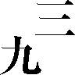

| 帝都物語 第六番 | |
| 荒俣 宏 | |
帝都物語
第六番
荒俣 宏

角川ｅ文庫
本作品の全部または一部を無断で複製、転載、配信、送信したり、ホームページ上に転載することを禁止します。また、本作品の内容を無断で改変、改ざん等を行うことも禁止します。
本作品購入時にご承諾いただいた規約により、有償・無償にかかわらず本作品を第三者に譲渡することはできません。
本作品を示すサムネイルなどのイメージ画像は、再ダウンロード時に予告なく変更される場合があります。
本作品は縦書きでレイアウトされています。
また、ご覧になるリーディングシステムにより、表示の差が認められることがあります。
まえがき
あれほどに恐れていた最大級の大地震が、昭和七十三年に東京をおそった。昭和七十三年といえば、現在の平成に直して十年。すなわちあと三年後という設定である。
この小説を執筆した当時は、いまだ昭和がつづいていた時期にあたり、震度七という大きさの地震はまったくフィクションと考えられていた。ところが一九九五年に神戸で、その震度七が現実に発生してしまった。著者は『帝都物語』の終章を読みながら、何度も身ぶるいしたことを告白しなければならない。
さて、この長い風水小説の最後に、それこそ風水の奥義をもちあわせた重要なキャラクター、土師金鳳というきわめてミステリアスな青年を登場させた。実は、かれは風水師＝陰陽師がになった職能のなかでまだ語っていなかった役割を果たす人物なのである。それは、吉相の墓をつくる、ということである。
墓づくりは、風水では陰宅と呼ぶ。前巻でも説明したとおり、陰のエネルギーは地下から生じる。とりわけ陰のまわりに寄りやすい死体は、白骨化すると純粋な陰エネルギーを発散し、それが子孫の家へと流れこむ。この陰エネルギーが財運や出世運、また一家の物質的幸福と結びついていることにより、子孫は繁栄を約束されるのだ。
そして日本においては、この墓づくりと墓をまもることを引きうけた家系がある。それが、名からもわかるように土師氏なのである。土師氏はまさしく陰宅を専門とする風水師あるいは陰陽師の集団であったといえるだろう。
その集団をひきいる若き土師金鳳は、まさしく、荒れくるう魂加藤保憲をしずめ、陰宅におさめるために登場した最後の風水師なのである。ときはまさに第二の関東大震災にあたっている。すべてが廃墟となり、この廃墟を浄めて、繁栄と安らぎに結びつける純粋な陰のエネルギーに変えなければならない。風水は、ここでほんとうの終幕をむかえる段階にはいる。
なお、土師の一族に水虎と呼ばれるカッパがひかえていることも、重要な意味がある。カッパは陰陽師のもとで、治水土木の工事を担当する働き手であった。伝説によると、安倍晴明は紙人形に魂を吹きこんでカッパをつくり、治水工事などを行なわせたという。だとすると、陰宅をつかさどる金鳳には、水虎こそが最もふさわしい配下ということになる。
こうして『帝都物語』は大震災というカタストロフィーを迎えながら終了する。どうかこの物語が悪夢でなく、ただの幻に終わるように、と祈りながら、著者はまえがきの筆をおきたい。
〈登場人物〉
平将門 平安期関東最大の英雄。中央政権に刃向かい、関東を独立国家化したため討伐されたが、その一生は関東ユートピア設立のためにささげられた。すでに千年間、東京の中心を鎮護しつづけている大地霊。
加藤保憲 帝都完全崩壊をもくろむ怪人。〝将門の霊〟との戦いに敗れ、いったんは満州へ去ったが中国の秘術により不老不死となり、再び東京へ舞い戻り自衛隊員となる。百歳を越えながら三十代の若さを保ち水虎や式神を操り、東京湾の海底に眠る地竜を目覚めさせ、再度帝都を崩壊すべく暗躍する。
辰宮由佳理 鳴滝の旧友、故辰宮洋一郎の妹。鳴滝がしくんだ次元の罠につかまえられ亡霊として鳴滝邸の地下室によみがえる。
鳴滝純一 理学士。故辰宮洋一郎の旧友で帝都破壊を阻止するために活躍した。九州で巨富を築き、戦後東京にもどる。百歳を越える老齢であるが、〝人胆〟で得た全財産を投じて自宅の地下室に、震災前の銀座煉瓦街を復元し、故辰宮由佳理をこの世に呼びもどすことに執念を燃やす。
鳴滝二美子 鳴滝純一の養女。団宗治、大沢美千代らと協力して帝都崩壊を阻止しようとする。また、多くの犠牲者を伴う鳴滝純一の銀座街復元に心を痛める。
滝本誠 元雑誌の副編集長。団宗治、大沢美千代などと共に帝都崩壊を阻止するために、水虎、式神と戦う。
梅小路文麿 華族出身の文官。大地震によって崩壊寸前の東京の遷都卜占と引き換えに「将門の首塚」の秘密を加藤に明かす。
団宗治 托銀事務センター電算室の次長。幸田露伴と三島由紀夫を心の師と仰ぎ魔術と文学に深い興味を持つ。コンピューターを駆使し、大沢美千代たちと協力して、帝都崩壊を阻止すべく水虎、式神と激闘を繰り広げてきた一人。
岡田英明 電通東京本社に勤務。団宗治の旧友。団宗治、大沢美千代らと協力して帝都崩壊を阻止せんと闘う。
大沢美千代 長野県の山村から目方恵子によって東京に呼び寄せられる。三島由紀夫の転生として昭和四十五年十一月二十五日の午後三時に、この世に生をうける。東京では托銀事務センターに勤めるかたわら、故目方恵子の後継者として魔人加藤保憲と対決し帝都崩壊を阻止するため、団宗治らの協力を得て闘ってきたが、ついに三島の転生を自覚する。
目方恵子 東北にある神社の宮司の娘。東京の大地霊、平将門に仕える神女として魔人加藤を倒すため数々の戦いに挑んできた。自分の後継者として大沢美千代を選び神女の修業を積ませ帝都崩壊阻止を託しつつ、その一生を終えた。
鈴木力 奈須香宇宙大神宮〈破滅教〉の宮司。東京の守護霊を救うために角川春樹の処方を明し遷都を椎し進める。
角川春樹 角川書店社長を突然辞任し、一時消息不明であったが奈須香宇宙大神宮〈破滅教〉の大宮司として受けた〝終末の霊告〟をもとに遷都に全力を傾ける。また、自ら紫微大帝と名乗り宝剣を手に加藤と対決する。
土師金鳳 角川春樹により見出された土師一族の若き頭。川太郎党という古代土木工事職工集団を率いて、魔人加藤の野望を阻止するため命をかけた闘いを挑む。
政所利子（姉）政所典子（妹） 土師金鳳の下僕として働く川太郎党の姉妹。土師と共に加藤と闘う。
三島由紀夫 小説家。昭和四十五年十一月二十五日、市ケ谷の自衛隊駐屯地で自決。その霊は地下に下り将門の霊と対決。将門の正体を明かせぬまま大沢美千代として転生した。
喪神篇
序 感応
昭和七十三年六月四日の真夜中。
浅草の六区一帯は、息を殺して、魔物たちが行きすぎるのを待っていた。
街はコトリとも音をたてず、ただ橙色の街燈をおそろしげに照らすばかりだった。まるで、浅草の地霊が死にかけたその目をぼんやり見ひらいたように、街角の灯りは生気がなかった。
浅草は、そうでなくともすでに廃墟だった。十数年前、この町の復活をめざして建てられた巨大なビル「ロックス」の白々としたたたずまいが、皮肉なことに、浅草をさらに死へと追いたてた。そして、廃墟の町に変わった浅草の地霊さえも沈黙させるような、ある凶々しい行進が、街の一角で始まっていた──
地下鉄浅草駅のふしぎに迷路めいた暗がりから、浅草寺の金ぴかな本堂にむかって、不吉にうごめいていく一群があった。人の流れにしては奇妙だった。だいいち、人にしてはあまりにも背が低すぎるし、姿勢も悪すぎた。
どれも背中を丸め、首を突きだし、わざと足運びを乱しているのかと思えるほど不器用な歩きかただった。それに頭部が異常に大きい。
ぴちゃぴちゃと水のはねる音が聞こえるのも奇怪だった。倭人の行列が真夜中の浅草をねり歩くわけもない。
黒い人影が、浅草寺の敷地内をよぎるのを、水汲み場にいる竜たちが怪訝な目で注視した。竜たちは、昼間はただの彫刻だが、夜になるとその瞳を緑色に輝かせる。
闇のなかに、いくつもの緑色の光球が光った。得体の知れぬ魔物の行進を察知して、地にまどろんでいた竜たちが目をさましたのだ。茂みのかげで、竜眼が緑色の豆ランプが点るように次々に光りだす。
浅草寺本堂の回廊にいる竜たちも、やはり魔物の気配を感じとって目をあけた。なまぐさい風が境内をサッと吹きぬける。
しかし小さな魔物の行進は止まろうとしなかった。かれらはあいかわらず、ぴちゃぴちゃと水音をあげ、ペンギンを思いださせるほど不器用な足はこびで六区の方向へすすんでいった。
ときおり、街燈の光が小さな魔物の一群を照らしだすと、かれらの湿った膚が気味わるい土気色に光るのが見えた。ぬらぬらとした不吉な光りかただった。
超近代的なロックスのビル前を、魔物の行列が通りすぎた。正面の広びろとした車道に車の影はなかった。
魔物たちはかまわずに車道をわたり、こんどは上野駅へ向かう方向をとりだした。
ふしぎだった。いくら深夜といっても、タクシー一台通りかからないはずはないのだ。だのに、怪物の一団がよろよろと行進していく途中の街角、車道、そして横道には、人も車も現われない。
どれくらい行進はつづいたろうか？
十分？ いや、二十分ほどつづいたにちがいなかった。合羽橋の金物問屋通りが近かった。このあたりには伝説がある。かつて、水難に悩まされたこの一帯を治水工事する企てがたてられたことがある。実行したのは〈川太郎〉と呼ばれる人物だった。しかし工事は事故の続出で一向にはかどらない。川太郎が思案に暮れていると、川に住む河童が手助けを申し出て、みごとに工事を完成させた。
これが合羽橋の伝説である。浅草は古い時代から、水をおさめ土をとりあつかう一族「土師」の住んだところだといわれる。かれらはひそかに地中に黄金を探りあてる鉱脈占いを伝承し、また地霊のエネルギーを受ける墓相占いにも長じた一族だった。このあたりが金竜山と名づけられたのも、おそらくは土師への記憶が残っていたからかもしれなかった。
そうしたふしぎな土地浅草の一角で、魔物たちの闇の行進がやっと止まった。
魔物どもはてんでに左右を見まわし、目の前にある巨大な寺院の前庭にはいりこんだ。
まったく巨大な寺院だった。どことなく築地の本願寺別院を思わせる異国趣味のたたずまいだった。インドか、あるいはインドネシアの熱帯地帯にある壮麗な寺院を──。
魔物たちの濡れた足が、ぺたぺたとコンクリート床に跡を残していく。まるでアヒルのような、水搔きのある足跡。
「東京本願寺」と書かれた門をくぐると、右手の奥に大きな銅像が見えた。魔物たちはそこに向かって歩いていく。しかし先頭をきってすすんだ魔物が急に足を止めたはずみで、後方に尾いていた小さな影が一斉に大きな頭をぶつけあった。一瞬あたりに混乱のざわめきがおきた。
「きたか、水虎ども！」
とつじょ、威圧するような鋭い声が銅像のかげから響きわたった。
息づまるほどの沈黙が襲った。
黒くて小さな魔物たちは、赤い眼を見ひらいた。
親鸞上人をかたどった大銅像の後方から、黒装束の男が姿をあらわした。
瘦せて背の高い男だった。その面だちが異様に長い。目が落ち窪み、青ざめたくちびるが裂けめのように薄く、鋭かった。
ぴっちりした黒い上着とずぼんが、男のたくましい筋肉の線をあらわにしていた。瘦せた男のように見えるのは、実は錯覚で、どこからどこまで完璧に鍛えあげられた鋼鉄の肉体の持ちぬしだった。
「きたか、水虎ども！」
男はそう繰り返し、ふいに、左手を前方にかざした。黒装束を背景にして、まっ白の手袋が目を射るようにあざやかに浮かびあがった。その甲に、黒い染め模様がひらめいた。
五角の星形──ドーマンセーマンだ。
白い手袋はさらに一閃し、宙にとどまったかと見えた瞬間、白い尾を引いてコンクリートの三和土に激突した。
とたんに青白い閃光がわきあがった。夜空が色を失い、魔物どもの呪わしい貌を照らしだした。
青い閃光を浴びた魔物どもは、まるで蟇の声でも聞くような耳ざわりな唸りをたてて、一斉にコンクリート床にうずくまった。
やがて閃光が薄れ、闇が以前よりも濃くあたりを包んだ。そしてかすかに残った蛍光の斑のなかに、黒装束の男が足を踏みいれた。
魔物どもがまたも沈黙した。
男はあざわらい、三和土の上に落ちたドーマンセーマンの手袋を拾いあげると、ふたたび左手にそれを着けた。
沈黙が重苦しさを増す。
「この加藤保憲がおまえたちを呼んだ理由を話そう」
人を刺すように鋭い笑みが、彼の口角をゆがめた。こけた頰に深いたて皺が走った。だが、それでも加藤保憲は若く、たくましかった。
「──われらの最後の破壊行動を乱す者があらわれた！」
その言葉が、男のゆがんだくちびるからほとばしりでた瞬間、魔物のあいだに、何とも言いようのない唸り声が洩れでた。
そして、沈黙。
沈黙。
深夜の月が、まるでおびえたかのように暈を残して雲間に隠れこんだ。
東京本願寺の前庭に、ほぼ完璧な闇の世界が戻った。
「われらの企てを乱す者とは、だれか！」
加藤保憲の灰色の瞳に殺意が宿った。
「──目方恵子ではない。あの女はすでに黄泉へ下り、将門の霊にかしずいている」
かすかなどよめきが、また生まれた。
そして──沈黙。
沈黙がふたたび加藤の声を呼び返した。
「恵子ではない。むろん、露伴でもない、寺田寅彦でもない。かれらはもはや帝都のむくろにすぎぬ！」
加藤はそうささやくと、闇のなかにうずくまる水虎たちを一瞥した。
「──予想もしないことだった！ 自分がこれまでまったく問題にもしなかった者に、企てを搔き乱されるとは！」
魔物の赤い瞳が鬼火のように前庭の闇に浮かんでいた。加藤保憲の黒い肢体が、その鬼火に取りかこまれる。
「恵子が後事を託した、転生者の大沢美千代もまだ幼い。だいいち、あの娘は自分がいったい何者の魂を受けついだ転生者であるのか、知ってもいないのだ。だから、われらは油断した──そうだ、これは油断以外のなにものでもない！」
沈黙が波打つようなエネルギーの渦を巻き始めた。水虎たちはその波動に揉まれ、脂汗のような粘液を、全身から分泌した。
加藤はまたあざわらい、話をつづけた。
「そやつの名は、鳴滝純一。あの死にぞこないだ。辰宮洋一郎に恋人を奪われ、みじめに尻尾を巻いて九州坊津へ逃げていった負け犬だ。
しかし、あやつはたまたま坊津で、人胆の秘薬にぶつかった。自分があの怪人物辻政信に伝授したのと同じ、長命の霊薬だ。思えば、この失策はあの時点で取り返しのつかぬものになったといえる。
長命が自分のものになると知ったとたん、負け犬だった鳴滝は、はじめて大それた妄想にとりつかれたのだ。奪われた恋人、辰宮由佳理をわが手に奪いかえすという妄想を！」
闇が重かった。鳴滝純一の名が加藤の口から明かされたとき、水虎たちの赤い眼にも殺意がひらめいた。
「やつが寺田寅彦門下の科学者であった事情を、どうやら甘く見すぎていたらしい。鳴滝は、坊津でめぐりあった長命の秘薬を密売して巨万の富を手にしたあと、死んだ辰宮由佳理をこの世に喚び返す罠を築きにかかった！」
「罠を！」
はじめて水虎の群れから声があがった。それは驚きを含んだ悲鳴に近かった。
「そうだ」
加藤は怒りを鎮めるために、ひと息だけ間をおいた。
「鳴滝は、次元の壁をとりはらう境界物体の回収に熱中した。われらが地竜を駆りたてて起こした大正大震災で、銀座煉瓦街の瓦礫は境界物体化した。つまり、過去にも未来にも属さぬ〈物質の亡霊〉となって東京湾の底に沈んだのだ。
鳴滝はその瓦礫をついに回取し、地底に大正末期の銀座を再現した！
再現したと同時に、大正十二年九月一日正午前の時間──すでに消え去ったその時間を、次元のかなたから喚び戻した。そして──」
加藤は我慢しきれずに言葉をとぎらせた。燃えるような怒りが、彼の全身を震わせた。
「そして──あろうことか、辰宮由佳理を黄泉の国から喚び戻しおった！」
水虎たちが悲鳴を発した。口ぐちに、わけのわからぬ唸りをほとばしらせた。動揺が前庭いっぱいにひろがる。
加藤はしばらく絶句し、魔物の群れのなかでたたずんでいた。
そしてようやく気分が鎮まったのか、冷やかで鋭い、いつもの魔人の声が戻ってきた。
「──辰宮由佳理は、そのむかし、自分が依童として使ったほどの霊能者だ。あの女は加藤保憲の霊能にも感応することができる。感応できるということは、自分に敵対した場合に手ごわい存在になりうる、ということだ。われらの動きが予知されるだけでも、不都合さわまりない。
だが、さいわい、恋の妄念にとりつかれた鳴滝はもちろん、現世に喚び戻された由佳理自身も、かれらが置かれた真の立場というものをまったく理解していない。
したがって、葬り去るならば現在だ！」
加藤保憲はふいにコンクリートの三和土を蹴りつけ、水虎たちを凍りつかせた。
「もはや地竜は死に絶えた。天竜も天空のかなたに去った。そして最後に、海竜が目ざめようとしている。海竜を目ざめさせ、東京を水没させる役目は、おまえたち水虎のものだ。橋という橋に巣食う式神を喚びだせ！ 天から護法どもを召し寄せろ！
だが、水虎どもよ！ その前に東京から追いはらうべき亡者が一人いる。辰宮由佳理だ──」
加藤はそう言い放つと、東京本願寺の前を出た。闇が濃かった。それでも彼は、濃い闇のなかから走るようにすすんだ。あとから、不恰好な水虎たちが追いかけていく。
感応する声があった。
かすかなすすり泣き。
それから、「お兄さま」とつぶやきかける、たよりなげな声が。
加藤保憲の霊感に、か弱い娘の悲しみが波動となって伝わった。
だから加藤は、刃のように薄く危険なくちびるをゆがめ、その目に鬼火を燃えたたせながら、娘の声がひびく方向へ走った。
魔物の群れが転がるようにして加藤保憲を追う。
しかし、強靱なバネのように弾ねる加藤の脚に追いつけるものはいなかった。黒装束の男は、うしろも振り返らずに上野を越し、飛ぶようにして須田町をめざす。
娘のすすり泣く声が大きくなった。
近かった。
加藤はようやく残忍な笑みを浮かべ、拳をにぎり固めた。
──なぜ、これほどまでに残忍になれるのだ？
日本橋大通りを矢のように走り抜けるとき、加藤の心のかたすみで別の声がひびいた。
──なぜ？
──馬鹿な！
加藤は、その声を笑いとばした。
──なぜかは、決まりきったことではないか。あの由佳理はただの人形だ。幼女のころ、実の兄に絞め殺される恍惚を味わった瞬間、すべての生を停止させた亡霊なのだ。そんな亡霊に、いったいどんな愛おしさがある？ 鳴滝は、つまり、はじめから死んだ妖女にとりつかれた大馬鹿だったのだ！
加藤は心のなかでそう叫んだあと、激しく笑った。笑うたびに、足が軽快に跳ねた。
──だが、なぜ？
と、別の声が執拗に繰り返した。
──なぜ、目方恵子を愛した？
──ハッ！
加藤保憲は笑った。愚問だ。実に愚問だ。
──なぜならば。
と、彼は叫んだ。自分の心のなかに淀んだ感情の残滓を吹きはらうように。
──なぜならば、おれは鬼だからだ。東京を破滅させるべく、すべての怨霊どもから遣わされた復讐鬼だからだ。そして鬼は、鬼の女に魅かれる！
──鬼の女？
──ハッ！
加藤はまた笑った。身をのけぞらせて、大笑いした。
──そうに違いあるまい？ 目方恵子は鬼だ。だから恵子は、将門にも愛された。
とつじょ、加藤は自答をやめた。彼の心を搔き乱すほど大きな声が聞こえたのだ。
──お兄さまなの！
加藤は足をとめた。
近かった。
心と心が感応しあい、最前まで加藤が心のなかで交わした問答が由佳理にも伝わったに違いなかった。
──兄さまなの？
──に・い・さ・ま・ね？
──ニ・イ・サ・マママママ......
彼は周囲を見まわした。万世橋から小川町へ抜けるあたりだった。古いビルがいくつも残る、廃墟の一角。
もう〈租界Ｄ〉と呼ばれる地域にかかっているのだろうか。このまま道をすすめば、やがて湯島聖堂やお茶ノ水駅が見えてくる。
加藤は、もういちど周囲を見まわした。
気配がある。
か弱い娘の、途方に暮れた魂が──。
そしてふと目を、古いビルの路地へと向けたとき、加藤保憲は慄然として凍りついた。
路地を照らす橙色の灯の下に、なにやら透けるようにか細い人影があった。古めかしい和服をまとい、大正時代の娘髪に結いあげた女が、悲しげな顔をあらわした。
「由佳理！」
加藤保憲は反射的に白手袋を投げつけた。
白手袋は空に放たれ、とつじょ青い稲妻に変化して亡霊を撃った。
稲妻は由佳理の胸に激しく衝突して火花を発した。娘が後方によろけ、悲鳴をあげた。光の弱い電燈がつくりだすオレンジ色の斑から、彼女の姿が外れた。
加藤は即座にビルの角口まで走り寄り、由佳理のあとを追おうとした。
だが、攻撃を受けてひるんだ娘は、逃げだしたわけではなかったのだ。電燈の光の外にたたずみ、闇に貌を隠してはいたけれど──。
「由佳理！ 迷いでたな。おまえは黄泉へ戻れ。洋一郎に抱かれて眠れ！」
加藤はそう叫んで、娘につかみかかった。そして彼女を電燈の明りの下へ引きだしたとき、思わず声をとめた。
由佳理の表情がまったく変化している！ 憎しみを宿し、三日月の形に割ったくちびるから白い歯をのぞかせ、きれいに結いあげてあった黒髪を無残に乱して。加藤は凍りついた。これまで体験したこともない戦慄が、彼の全身をつらぬいた。
──ユ・カ・リ......。
とたんに、娘の黒髪が夜叉のように逆だった。生きている黒蛇のように頭上でうごめいて、加藤を威嚇した。由佳理の目が猫のように妖しく光る。
加藤保憲はたじろぎ、二、三歩あとじさった。火を本能的に恐れる狼のように、さらに数歩あとじさった。
由佳理は黒髪を逆だてた。天を衝くように直立した髪が、雷を呼んだ。急に夜空が桃色の亀裂を描いて二つに裂けた。同時に、沈黙も裂けた。次の瞬間、耳を聾するほどの大音響とともに雷霆がコンクリートに激突した。
夢のような火花が加藤を包んだ。あまりのまぶしさに目があけられない。加藤保憲は両手で目の前を払った。
由佳理が笑っていた。白い火花を浴びながら、妖女の笑いに酔いしれて。
加藤はふたたび戦慄した。だが、もういちど由佳理の姿を追いもとめたときは、そこに何ひとつ見えるものはなかった。
由佳理が消えた。
目を射る火花のなかに立って、加藤はただひたすら震えつづけた。はじめての──ほんとうにはじめての体験であった。魔人加藤保憲が味わわされた最初の屈辱かもしれなかった。
耐えがたい屈辱と、それを上まわる戦慄とに、全身をわななかせたまま、加藤保憲は仁王立ちをつづけた。
しかし、加勢するはずの水虎どもは、まだ彼に追いつかなかった。
巻一 昭和を終わらせるために
一 ふたたび〈租界Ｂ〉
天気がよい日は、ビルの谷間に色とりどりの洗濯ものが並ぶ。
見ものは銀座と丸の内だった。この区域では、ビルとビルのあいだに合成樹脂製のロープが張りわたされ、そこに一斉に洗濯ものが干される。有楽町マリオンや銀座三越のようなデパートも例外ではない。これらのビルは七階以上が〈開放〉され、新都民の住宅にあてられている。だから屋上は満艦飾といいたくなるほどシーツが干されるし、開閉の利く窓には布団が日干しされる。
一方、丸の内オフィス街でも事情は同じだ。商社ビルの上に、とつじょとして一般市民の生活が展開する。だが、そんなアンバランスも、およそ五年も歳月が流れれば、見慣れた風景になってしまうのだから奇妙だ。
築地本願寺から、聖路加病院にかけて、つまり通称〈租界Ｂ〉と称される一帯では、もはや開放ビルの生活に違和感というものが嗅ぎとれなかった。
たとえば本願寺にしても、別院のインド・アジャンタ式大伽藍の中に多数の家族が肩を寄せあい暮らす光景も、今ではごく当たり前にしか見えなかった。つい十年も前、ここがすべて仏事専用に使われていた事実のほうが、かえって信じられないほどだ。その本願寺めざして歩いてくる大男を、鳴滝二美子は目ざとく見つけた。
きっと、この男がそうにちがいない。
二日前、二美子は滝本誠と名のる男から電話をもらった。養父鳴滝純一のことで、ぜひ耳にいれたい一件がある、というのだ。なんでも自分は、大沢美千代の上司である団宗治の知り合いであるから、怪しい者ではない、と弁解していた。そこで団に問い合わせると、たしかに滝本という友人がいることがわかった。
ひげの剃りあとが青々とした、いかにも日本人ばなれした大男だった。二美子が石段のそばで立っていると、思ったとおり、「やあ」と声をかけてきた。
「鳴滝二美子さん！」
二美子は黙ってうなずいた。
彼女の瞳に、疑いの表情があるのをすばやく察知した滝本は、すこしばかり話題をそらせることに決めた。
「九条武子......そういう名の人を知ってるかな？」
二美子はすこし考えて、かぶりを振った。
「来てごらん」
滝本は娘の手を引いて、本願寺のすみにある石碑へ向かった。屋台が並んだ奥に、いくつかの石碑があった。妙に巨大な親鸞の銅像もあったが、近くに寄って見るとずいぶん粗い造りでガッカリさせられる。
「ま、銅像としちゃ出来は悪いが、本願寺のシンボルでね。浅草の本願寺にも似たようなのが置いてある」
滝本は銅像をコンコン叩いて笑ったあと、二美子をさらに奥まで案内した。そこはもう塀の裏側だった。
「これだ」
大男がちっぽけな碑を指さした。「歌人九条武子。なんといっても昔のアイドル文化人さ」
「歌人の碑が、なぜこんなお寺に？」
二美子はふしぎに思って、滝本に問いかけた。
「おや、やっと話に乗ってくれましたね。九条武子って女性はね、何を隠そう、この奇怪きわまりない本願寺を建てた法主大谷光瑞の妹なんだな」
そういわれてはじめて、二美子が目を輝かせた。
「いつも気になってましたの。こんなふしぎな寺院が、どういうわけでここにできましたの？」
滝本は、こすっからい笑いをうかべて答えた。
「光瑞って人はね、一種のトリックスターだ。この寺を建てただけじゃなく、チベットやらゴビ砂漠やらに探険にでかけて、寺の金を湯水のように使っちまったらしい。それで一時は本願寺から出たんだが、政治や教育にまで首をつっこんで、かなりの影響力があった。美少年趣味でね。美少年ばっかり集めた学校もこしらえた」
「まあ、おもしろい」
「ところで、光瑞さん以上に政治にかかわりあっちまった人がいる」
急に沈黙が生まれた。
二美子はくちびるを嚙み、眉を曇らせた。
「誰ですの、それ？」
滝本はわざとおどけた。
「あんたのお養父さん」
「............」
滝本は、腕組みして二美子の反応を待った。
「聞かせてください、その話」
「おっと、そう来なくちゃね」
二人は親鸞の銅像の下に腰をおろした。なんだか銅像が聞き耳をたてているようだった。
「お養父さんを訪ねて、ときどき妙な紳士がやってくるね、お宅に？」
「ええ」
「どこの人？」
「さあ？」
「やんごとないところからだ」
「やんごとない？」
「つまりね、殿上人ってこと」
二美子が首をかしげた。
「あんた、ほんとに何も知らないようだね。なら、ズバリ教えるけれど、訪問してくる紳士は政府筋の人間で、もとの華族だ」
「華族ですって！」
滝本はわざとじらすように話をつづけた。
「あんたの養父さんは華族に見こまれたってわけだ。さあ、問題はその理由だがね......」
滝本はそうつぶやきながら、ポケットをまさぐった。やがて、折りたたんだ紙を引っぱりだすと、それを彼女に手わたした。
二美子は紙をひろげてみた。
数字がたくさん並んでいるだけだった。
「いいか、見てごらん。これは苦労して入手したデータなんだが、例の華族さまがあんたの養父さんあてに振りこんだ金額が驚くんだ。たとえば去年、昭和七十二年は合計で七億円も振りこまれている！ こりゃ異常というべきだ」
「七億円ですって。そんなことが、なぜ？」
「つまりさ、あんたの養父さんは華族さまと取引きしてらっしゃるのだよ。品物を納入している。とんだ宮内庁御用達だな」
二美子は黙りこんだ。たしかに金額の高さが異常だった。世間では鳴滝を成金と呼んでいたが、いったいどういう種類の商売で巨万の富をつかんだのか、二美子には想像もつかなかった。だいいち、鳴滝はパテントを持っているわけではない。大工場を所有するわけでもない。金融に精通しているわけでもないのだ。
「滝本......さま、あなたは？」
「知ってる。いや、苦心さんたんして摑んだんだよ、真実をね。参考までに話しておこうか？ 養父さんが売ってるのは、なんでも中国あたりの不老長寿薬だというんだ。で、せっせとお金を振りこんでくれる華族は、その秘薬をだね、さる〈やんごとなきお方〉のために使用しているのだ。しかしね、これ以上はおれに言わせないでくれよ」
滝本はひといき入れると、額の汗をぬぐった。もうすっかり夏だった。
「でも、なぜそんな話をわたしに？」
二美子があらためて滝本を問いつめた。
滝本誠はすこし困った表情をしたが、すぐに快活な口調に戻った。
「折いってあんたに頼みたいことがあったからさ。実はおれ、こうみえてもジャーナリストなんだが、最近の東京大改造計画に不審を抱いてる。一九八〇年代後半から、都庁移転を皮切りに首都圏再開発ブームが発生したことは、知ってるね。都心の地価がぐんぐん上昇し、あっという間に大手不動産屋に買い占められた。
なぜだと思う。表向きは、東京を第二の香港に──つまり国際金融都市に仕立てあげるって話になってるが、むろんそれだけじゃない。だって、そうだろ？ 本気で金融都市にするなら、新しいビルをどしどし建てるわけだし、ここみたいに難民用に公共ビル開放なんて真似をするわけないじゃないか」
たしかに、言われたとおりだった。都心部はひたすら廃墟化する一方だし、かえって新しいビルが近県に多数建設されている。
「──地震！」
「それもある！ どうやら財界と政府は、近いうちに東京が崩壊すると読んでるらしいんだ。その証拠が、東京に租界地なんかができあがる原因となった近郊の天変地異だ。三原山の大噴火からこっち、伊豆や筑波あたりは火山と地震ラッシュだから、東京もいずれやられるという気はする」
しかし二美子はかぶりを激しく振った。
「そのことと、うちの養父とのあいだに、どんな関係がありますの？」
滝本はすこし黙った。しばらく腕組みし、ようやく心を決めたらしかった。
「断っておくが、これはおれの勝手な推測だよ。しかしね、あんたの養父さんのやってる取引きは、一連の東京廃墟化計画と関連がある。たとえばだ、東京大破壊を起こしうる人物の寿命を、養父さんの秘薬がずっと先延ばしさせている、とか──」
「何ですって！」
二美子が柳眉を逆だてて怒った。これは侮辱だ。まるで養父を、東京改造にからむ陰謀団の先棒かつぎのように言うなんて。
「待てよ、待てったら。だから言ったろ、勝手な推測だって」
滝本があわてて弁解した。
「わたしにどうしろというんです。用件をおっしゃってください」
「わかった。用件を言うよ。あんたに探ってほしいんだ、秘薬の行き先をさ」
二美子はふたたび食ってかかった。
「なぜ、そんなことをわたしがしなきゃいけないんです？ それに、できない相談です、どうやって──」
「いや、簡単、簡単。秘薬の包みに発振器を仕組んでくれればいいんだ。あとはこっちで追いかけるから」
滝本はそういって、二美子の手に小さな四角い機器を押しこんだ。彼女は驚いて、それを大男に突っ返そうとした。しかし大男は鬼ごっこでもするように体をかわし、ちょっと片手をあげて拝む真似をした。それから、無邪気に両手をひろげ、肩をすぼめた。大きな子供のような振舞いだった。
「二美子さん、心配しなくていいんだ。あんたの養父さんをゆすろうってわけじゃない。迷惑はかけないよ」
鳴滝二美子は当惑していた。思いきって発振器を叩き返すべきなのかもしれない。彼女は大男のあとを追って、屋台の列のあいだをすり抜け、前庭に出た。とつぜん太陽の熱暑が彼女の目を射た。あまりの明るさにめまいがした。もう真夏の暑さだった。
「滝本さーん！」
二美子は目を細め、肩を弾ませながら叫んだ。しかし滝本誠はあいかわらず冗談めかして、片手で拝む仕種を繰り返した。
「頼みますよ、二美子さん。気が向いたら仕掛けてくれればいいから。もしも心が咎めたら、無理にとはいわない」
二美子は立ちどまり、滝本をみつめた。
「ほんとですの？」
「ああ」
「もういちど、理由を教えて。あの真意を」
「理由か......つまり、こう答えたら、理解してもらえるかな。昭和を終わらせるために、って」
二美子は目をしばたたいた。暑さのせいで耳がどうかなったのだとも思った。
「昭和を......終わらせるために！」
滝本が屈託のない笑いを見せた。
「そう。これはぼくの直感だが、どこかで誰かが昭和を終わらせない策謀をめぐらしているんだ。あんたの養父さんは百歳をとっくに超えてるってことだが、この昭和もすでに七十三年だぜ。みんな、昭和が終わるってことを信じられなくなってきている」
そう言い残すと、滝本誠は手を振って、本願寺の門を出た。暑い夏の陽射しが広い前庭を灼いていた。二美子は耐えられなくなって、巨大な石段のそばに屈みこんだ。
二 鳴滝邸の地下
大正十二年九月一日の銀座が、そこにあった。実物であって実物でない、境界線上の銀座が。
鳴滝純一が大金をそそいで回収したのは、なるほど、たしかに本物の銀座の瓦礫だった。しかし材料がいくら実物だとはいっても、それで昔どおりの銀座を建て直すのは不可能だった。だから彼は何分の一かにスケールを縮めた銀座を再建することで満足するしかなかった。
だが、次元の中間に存在した銀座の瓦礫は──未来と過去とのあいだに挟まれた物体の亡霊は、ここ鳴滝純一邸の広大な地下室に集められたことによって、奇跡を生みだした。
すでに過去に所属する大正十二年九月一日から、鳴滝が愛した辰宮由佳理を現世に喚び戻したのである。
鳴滝は詳しく計算しつくしていた。寺田寅彦の下で学んだ時空理論を基にし、いかにして次元の壁を超えればよいかを研究しつくしていた。
百歳を超えた老人には、もちろん、危険な妄執であった。次元の壁を少しずつ崩し、過去への出入り口を開くには、現世の壁をも崩さなければならなかったからだ。しかし老人は、銀座の瓦磯が発見される都度、あえてその破壊をおこなった。
ミニチュアの銀座が一部完成するごとに、現実の銀座のそれが必然的に消滅する。同一空間内では次元を異にするもの同士並存することなどできないからだった。
しかし、皮肉な事件がひとつだけ発生したことを、鳴滝はまだ知らなかった。
辰宮由佳理が現世に喚び戻されるのが、少しばかり早すぎたということである。鳴滝老人はまだ〈幻の銀座〉が完成していないと思いこんでいた。だのに、時空の罠は早ばやと、美しい獲物を七十年以上も過去の空間から捕えてきてしまったのである。
東京の地底は、いつもふしぎにそら寒い。じっとり湿った空気が、なめくじのように壁を伝って流れる。小さな幻の銀座煉瓦街に吹きわたる微風も、同じように粘り気があった。
そのせいで、由佳理はいつも息苦しさを感じていた。見慣れたはずの銀座を歩いても、なぜか息が詰まる。はじめは、ある理由で自分が途方もなく大きくなり、狭苦しくなった街並が体を圧迫するからだと思った。ちょうどガリバーか〈ふしぎの国のアリス〉のように、小人国へ迷いこんだ人間の味わう当惑だと考えた。
だが、しばらくすると、由佳理の心を刺激する出来事が起きた。あと二人、少なくともあと二人、この小人国に迷いこんだ人間がいる事実を発見したのだ。
一人は、見るからに気味わるい老人だった。まるで童話にでてくる悪い魔法使いのような、年嵩を重ねた老人だった。この老人はいつも車椅子に乗ってやってくる。由佳理はおびえて、銀座煉瓦街の奥に隠れてしまうから、たぶん老人には気づかれていないはずだった。
あとの一人は、まだ若い女性だった。見たこともないハイカラの洋装をした、やさしげな女性だった。最初は異国人の娘かと思ったけれど、日本語を話したので国籍が確かめられた。とにかくそれで気分が軽くなった。この女性と出会えたことは、ほんとうに心の支えだ。兄の姿は見えず、幼な馴染みの鳴滝純一とも連絡がとれない情況で、この女性だけが頼りになりそうだった。
次元の罠のなかで、由佳理はときおり気晴らしをした。煉瓦街に点った明りの下、結いあげた髪を解いて丁寧にくしけずり、その長い髪を胸もとに垂らして煉瓦舗道に立つのだ。すると街燈が舞台照明に一変して、由佳理のあで姿を照らしだす。
彼女は、トン、トンと膝を叩いて拍子をとり、ふいに舞いはじめる。兄の洋一郎がことのほか好きだった藤娘を、さながら文楽人形のようにきびきびと舞いはじめる。
洋一郎は、しなやかな日本舞踊の身ごなしよりも、文楽や洋舞のような人形めいた動きが好きだった。だから彼女は、兄を喜ばせるために、いつだってわざと人形ぶりの舞いを見せた。
由佳理は舞った。白塗りの面に赤い紅を引き、黒髪を糸のようになびかせながら舞いつづけた。
ただ──
熱心に舞う彼女にも気づかない違いが、ここには一つだけあったのだ。彼女の白足袋が踏みしめるのは、固くて冷たい煉瓦舗道の上ではなく、まるで羽布団のようにやわらかい宙だということを。空中だということを──。
由佳理は、幻の銀座街に捕えられているあいだも、天界の女でありつづけた。
三 訪問者
木製の大きなドアが、音もなくあいた。広びろとした客間の一角に、車椅子の老人がいた。
入室してきた紳士は、ステッキと手袋をかたわらに置いて、ソファーに体を沈めた。表情がどこか重苦しい。
「鳴滝さん。薬の量を増やしてくれんか？」
紳士が表情も変えず、眼を閉じたまま考えこんだ。
冷房が利きすぎて、そら寒いほどだった。
しかし紳士は車椅子の老人をみつめたまま、返事を待った。
長い静寂のあと、老人が重い口をひらいた。
「健康で純良な胆を持つ子供が、きわめて少なくなっている。日本人の子では、もうだめだ......」
紳士はなまつばを飲みこんだ。
「だめか？ 公害や......エイズの......」
老人が黙ってうなずく。
「今のところ、中央アジアの奥地から手に入れるしか方法がない。人胆の効力は、もとになる人の肝臓の質ひとつにかかっている」
紳士は膝を乗りだした。
「しかしな、鳴滝さん。現在の量では徐々に効果が薄れつつあるのだよ。お上の身に、もしものことがあれば......」
「シッ！ 滅多なことを！」
老人がたしなめた。紳士は青い顔をして周囲を見まわした。壁に耳があるかもしれないし、障子に目があるかもしれなかった。紳士は声をひそめた。
「これは失敬。立ち聞きでもされますと大ごとだ。つまり鳴滝さん、昭和の御代をあと三年は長つづきさせるために、あなたの秘薬をわれわれにいただきたい」
「あと三年......。三年経てば二十一世紀になる」
紳士は青白い顔にうすら笑いを浮かべた。
「そのとおり、二十世紀は昭和の時代として終わる。われらが不滅の太陽王は、新世紀にその王座を次の後継者に譲りわたす。そしてすべてが一新されるわけですな」
「東京もかね？」と、鳴滝が皮肉を言った。
「何をいいますね、鳴滝さん。昭和という偉大な時代が終了するには、東京のひとつぐらい崩壊させんことには話になりません」
鳴滝はうなずいた。
「遷都......というわけだな？」
「まあ......」
「わしたち老残兵は東京もろとも滅ぼして、新世紀日本をどこかしらで拓くつもりか」
老人は渋面をつくった。その表情を察知した訪問者があわてて弁解した。
「嗚滝さん、そりゃ考えすぎですよ。放っておいたって、東京はあと数年の命だ。政府の極秘研究でも、東京湾の異変は巨大地震の前兆だと結論している。水没ですよ、水没」
「わかった。とにかく人胆は全力をそそいで作るから、しばらく待ってもらいたい」
「お願いします。金はいくらでも出します」
紳士は立ちあがり、会釈した。
老人のほうはまったく動こうとしなかった。
ステッキを取りあげ、手袋をつけて、扉口に向かおうとしたとき、老人は目をあけて、聞きとりにくい声でささやいた。
「ときに梅小路君」
「は？」梅小路と呼ばれた紳士が、立ちどまって振りむいた。
「東京を捨てるというからには、次の新都はよほど天に愛でられた吉相の土地でなければならん。その土地を、いったい誰が決めるのかね？」
紳士は急に顔を曇らせた。
「痛いところをつきますね、鳴滝さん。さすが十九世紀人の生き残りだ。平安時代以来、地相占いと遷都の吉凶判断にたずさわってきた天文博士の家系、土御門家に──といいたいところなのですが......」
梅小路はそこでため息をついた。
「土御門家には、もうその霊能はないな」
「おっしやるとおり」
老人は車椅子を作動させて梅小路に近づいた。
「わしが知っておる人物のなかに、ただ一人、遷都の吉凶をうらなえる風水師がいる」
紳士は眉を動かし、顔面を蒼白にさせた。彼のなまぐさい吐息が、鳴滝の顔を包みこんだ。
「誰ですな？ その一人とは」
老人はあざわらった。
「加藤保憲という」
「加藤......」
「自衛隊の幹部だよ。しかもやつは、わしよりも歳上で、わしよりもなお若い！」
「えっ！」梅小路は驚きのあまりステッキを落とした。乾いた落下音が客間にひびきわたった。
紳士はぶるぶる震える手でステッキを拾いあげ、目礼すると客間をあとにした。
いきおいよく扉があいて、あやうく二美子にぶつかるところだった。
彼女が反射的に身をひるがえしたのを見とどけると、梅小路は「やっ、失敬」と詫びを残し、そそくさと屋敷を出ていった。
外に出たとたん、六月の熱気がワッと梅小路の全身を包んだ。ここ数年の地変で、六月はすでに真夏の暑さを味わわせる。
だが、鳴滝にささやかれたひとことで感電状態に堕ちた梅小路は、不吉な猛暑さえ忘れはてていた。
客間の窓から、去っていく梅小路のあわてぶりを眺めた鳴滝は、忍び笑いしだした。肩だけが激しく上下した。そしてついに、こらえきれなくなって、嘲笑がほとばしりでた。歯の抜けた口から、魔物じみた嘲笑があふれでた。
──あと三年。三年あれば、むろん十分じゃ。
鳴滝はつぶやいた。そのかすかなつぶやきは、戸口にたたずむ二美子の耳に届くわけもなかった。
四 新聞記事を読む
六月二十日分
【朝日、読売、毎日に同記事あり】
本日午前七時ごろ、ＪＲ新橋駅ガードのコンクリート壁が長さ二メートルにわたって滑落。下で道路清掃中だった三原道弘さん（）が破片を頭部に受けて一か月の重傷を負った。新橋署の調べではコンクリート壁の老朽化によるものと判断、ＪＲ側責任者に事情を聞いている。なおＪＲ広報室では、新橋駅と同じく老朽化のすすんだ高架部が都内に五、六か所あるため早急に修理をおこなうとしている。
六月二十三日分
【東京新聞のみ掲載】
夜間工事中の怪事故
地下鉄銀座線で
本日午前三時ごろ、地下鉄銀座線神田駅付近で線路点検中、トンネルの一部に巨大な亀裂が走っていることが発見された。亀裂は最大幅約二十五センチメートルで、トンネルをほぼ切断する形に走っていた。当局では、昨夜発生した震度五の地震による亀裂と判断、老朽化のすすむ可能性も考えられるので、始発を一時間遅らせ再点検を実施した。
六月二十八日分
【朝日、毎日ほか各紙報道】
築地開放ビルで事故
開放後すでに八年を経過した築地コンワビル六階で、いたましい事故が発生した。六階Ｂ区域七号に居住する伊豆大島からの避難者松田哲夫さん（）方の天井が突然ひび割れ、コンクリート破片が落下した。そのため室内にいあわせた妻のたみ子さん（）が破片にあたり聖路加病院新館に入院した。重傷だが、生命に別条はない模様。原因について築地署が調査中だが、最近この種の事故が多発していることから、大規模な都心部の地殻変動が発生しているとも考えられ、警戒を強めている。なお事故のあった場所は明治期に本木昌造が最初の印刷所を建設した由緒あるところ。
六月三十日分
【同封記事二種、サンケイおよび東京に掲載】
日比谷公園で噴水故障
明治末期に製作された日本でも最古の噴水の一つ〈鶴の噴水〉が、昨夜故障した。同公園の貴重な記念物であるだけに、修理が可能かどうか心配されている。
日比谷公会堂の窓ガラス割れる
三十日午後九時ごろ、日比谷公園管理課の石原敏孝さん（）が園内見まわりに出たところ、新橋寄りにある古い建物、日比谷公会堂の裏面窓ガラスが数枚割れているのを発見した。偶然か、いたずらか、原因を調査中だが、石原さんによれば同夜は園内に不審な人間を見かけなかったという。
五 娘たちの想い
鳴滝二美子は肩を落とし、新聞の切り抜きを袋に戻した。死者が出なかったのが、せめてもの救いだった。
──やめさせなければ。
と、彼女は思った。こういう事故報道にぶつかるたびに、彼女は同じことを思った。けれども、いくら思ってみたところで、彼女の力では鳴滝の狂気を押しとどめることなど不可能だった。
鳴滝は、日に日に、幻の銀座街を完成させていく。銀座の瓦礫を集めては、ミニチュアに追加していく。そしてそのミニチュアが完成に近づけば近づくだけ、現実の銀座が破壊されていくのだ。
──でも、こんどこそ。
彼女はくちびるを嚙みしめ、眉をけわしくさせて自室を出た。長い廊下を下って養父の部屋に着くと、軽くノックした。
「誰だ？」と、応答があった。
「二美子です」
「よし、はいりなさい」
彼女は扉をあけ、無言で養父をみつめた。信じがたいほど高齢の男が車椅子にすわって、しきりに書きものをしていた。手がふるえているのが、ペンの動きでよくわかる。
「お養父さま、お疲れではありませんの？」
「いや、そんなことはないよ。それより用事は何かね」
二美子はすこし口ごもった。目を伏せ、話の切り出し方を考えた。そして視線を養父のほうに戻すと、背後にある窓から射しこむ光がまぶしかった。
老人の白髪が、まるで天使の髪の毛のように後光を発してみえた。
「養父さま、今ならばまだ、世間の人が地盤変化のために起きた事故だと思ってくれますわ。だから、危険な実験はもうやめてください。お願いです」
老人はペンを置き、背筋をのばした。かすかにひらいた灰色の目に、おだやかな怒りが宿った。
「二美子、これはわしの生命をかけた仕事だ。わしは幻の銀座とともに生涯を終わってもかまわんと思っておるのだ」
「養父さま！」
「まあ、聞きなさい」老人は娘を制し、ソファーに腰かけるよう促した。二美子がおずおずと長椅子にすわる。
「わしはどうしてもやる。幻の銀座を地下に再現して、そこに一人の女を喚び寄せるのだ。天女をな」
二美子は黙って聞き耳をたてた。
「そして、天女をこの手で抱きしめるまではわしはやめん。たとえ東京を廃墟にしても、やめはせん。わしは鬼になった。わしの一生はあまりにもぶざまだった。だが最後にわしは誰もがなし得なかった大業を果たしてやる。次元の壁を超えて、過去から天女を喚び戻す！」
二美子が急に立ちあがった。ここで説得しなければ、事態は最悪の方向にすすむに違いない。
「養父さま、それはよくわかりますわ。でも、実験のせいで亡くなった方がもう五人、負傷された方は三十人を越えましたのよ。許されるはずがありません！ たとえ、養父さまでも......」
「ほう、今日は覚悟のうえと見えるな。どうする気だね、二美子、養父さんを警察につきだすか」
「それはできませんわ。だいいち警察に通報したところで、解決にはならないでしょうし」
「賢明だね」
「わたし、覚悟を決めてお願いにきましたの」
老人は彼女の決意をためすように、わざとあざわらってみせた。
「それでも聞かぬ、といったら？」
「最後の手段に訴えるまでですわ」
彼女は目を見ひらき、蒼ざめた顔を老人にむけた。
「最後の手段？」
「はい」
「わしを殺すか？ おまえになら殺されてもかまわんぞ」
「はい、養父さまがまんいち犠牲者をふやすようでしたら」
二美子の声には固い決意があった。老人はそれを感じとり、急に真顔になった。
「よろしい。坊津で人胆という秘薬を手に入れたおかげで、百歳まで生きながらえたわしだ。たとえ二美子と差しちがえてでも実験は継続する。でなければ、おめおめ生きながらえてきた意味がない！」
老人は声を震わせた。肩がぶるぶると痙攣していた。
二美子は一礼し、戸口へ向かった。そしてノブに手をかけると、養父を振りかえった。
「わたしも、養父さまに殺されるのなら本望ですわ。怨みはいたしません」
その声をあとに、扉が締まった。
老人はしばらく腕組みした。気がつくと、机の上にひろげた白い用紙を照らす陽光が、まぶしさを弱めていた。
暗いのは、どうにか我慢ができる。それにだいいち、暗さは眼にやさしい。みっともない泣き顔を隠してもくれる。
寒いのは、どうにか我慢ができる。体が冷えれば冷えるだけ、楽しかった日の思い出がその分よけいに心を暖めてくれる。
でも、息苦しさだけはたまらなかった。このふしぎな銀座の摸型のなかに閉じこめられて、もう何日経ったのだろう。しかし、この不可解な罠は日に日に堅固になっているのだ。昨日はなかった煉瓦壁が、今日はそこにある。昨日はなかった塔が、今日はあそこにある。今日はない建物が、だから明日にはどこかに建つだろう。一日ごとに、幻の銀座は「まぼろし」でなくなろうとしている。このあいだもそうだった。彼女が模型の街を歩いていたとき、気まぐれにふと後ろを振り向いたことがあった。そして斜めの角度から銀座三丁目のあたりを眺めたとき、一瞬──ほんの一瞬だったが、人々の行き交う本物の銀座が見えた。
彼女は驚いて目を伏せた。そのせいで視角が変わったらしく、銀座の幻影は見えなくなった。
以来、由佳理は急に後ろを振りかえる習慣を身につけた。
いろいろな角度で脇見をしていくと、たまさか写る姿見の遠景のように、なつかしい本物の銀座がかいま見えることがあった。
だがそんなある日、彼女は振り向きざまに電流を浴びたような衝撃を受けて、その場に凍りついた。
そこに見えたのは、暗い、夜の銀座の光景だった。おぼろな街燈に照らされて、煉瓦舗道の赤茶けた路面が浮かび、そこにまっ黒な人影が横たわっていた。そして、彼女の凝視を待っていたかのようにタイミングよく、人影がむくりと起きあがった。
ゆらゆらと、くねくねと、まるで軽業師のように起きあがった人影は、ゆっくり一礼すると、顔だけをひょいとあげて笑いかけた。
面長で蒼白の、見るからに悪魔じみた顔だった。紫色をしたくちびるがゆがみ、そのあいだから白い歯が見えた。
──加藤保憲！
そう叫んだとたん、幻影のガラスが叩き割れ、由佳理は気をうしなった。
六 謀略に加わって
二美子はその日、訪問者の梅小路を玄関まで見送った。梅小路は夜八時きっかりにやってきて、客間に案内された。それから約十分後、客は、鳴滝から受けとった小さな包みを大事そうにかかえ、軽く会釈して外へ出ていった。バタンという車のドアが閉まる音が聞こえ、耳ざわりなエンジン音がすぐにそのあとを襲った。
しかし二美子は無表情に自室へ戻ると、すぐに受話器を取った。
待っていた連絡がついに来たとき、滝本誠は椅子から飛びあがらんばかりに歓喜した。「二美子です。ただいま発振器をセットしました」
「そうか、ありがとう、二美さん！」
滝本はさっそく警備用の機械室にとびこみ、レーダースクリーンのスイッチをいれた。
東京都の行政区をあらわしたモニター画面が浮かびあがり、その一点に明滅する赤色のライトが現われた。
──聖橋か。鳴滝邸を出たばかりだな。
滝本はつぶやいた。
赤い光はいったん靖国通りに出たあと、日比谷にむけて動きだした。しかし速度がまったく上がらない。
大手町あたりが渋滞している証拠だった。
──ちっ、租界Ｄなんか通りやがって。あそこは〈自転車乗り〉の出没する要所の一つなんだ。車が走れるもんか。
赤い光は遅々としてすすまなかった。それでもやっと日比谷交差点まで辿りつくと、ややスピードをあげて三宅坂方向へむかった。
そのまま皇居を通りすぎて国会前をかすめ、首相官邸とおぼしき一角にすべりこんだ。
赤い明滅の動きがとまった。
──首相官邸か。やはり長命薬を買いあげていたのは政府だ。
そうつぶやいたとき、また光に動きがあらわれた。今度はずいぶんと緩慢な動きだ。たぶん徒歩で運ばれているのだろう。
しかし──
──待てよ、おい、動き方が妙じゃないか！
滝本はひとりでどなり声をあげ、スクリーンに顔を寄せた。
モニター画面には主要道路の道すじが緑色でトレースされていた。だからどの道をとって車が走っているか一目瞭然なのだが、今度のライトの軌道は、そういう道筋をまったく無視するものだった。
光は、まず首相官邸からスタートして国会議事堂の建てものを横切り、さらに緑地帯の上を突っ切って御所の中に侵入し、そこでふたたび停止した。その間、約十五分。あきらかに徒歩で運ばれた証拠だった。
だが、開放された国会議事堂は別にしても、御所周辺を気ままに歩きまわれるわけがない。もし可能だとすれば、空中を歩くか、それとも──
──地下だ！ 地下トンネルだ！
滝本は膝を打って叫んだ。噂には聞いていた。首相官邸と国会、さらに御所とのあいだには秘密地下道が掘りぬいてあり、いざという場合の抜け穴になるのだという。
たぶん、鳴滝から買い取った秘薬は、その秘密地下道を通って御所の内部にまで運びこまれたに違いなかった。
「こいつぁ、ただごとじゃない。誰かの寿命がのびるのは結構なことだが、知らぬ間に勝手な政治謀略に捲きこまれたのでは、迷惑だ」
滝本はすぐにスクリーンのスイッチを切り、事務所へ戻ってヘルメットをかかえあげた。
たぶん、東京大改造のカラクリがまもなく解ける。王手をかける日は近かった。
「今に見てやがれ！」
罵声を吐きすてると、彼はヘルメットを被った。うしろの窓をあけると、外にオートバイが置いてある。大男に似合わぬ身軽さで窓敷居を跳び越し、サドルをまたいだ。
エンジンをしぼると、全身が心地よい振動に同調しはじめる。
陰謀の中核に迫ったことの興奮と、それから果てしない苛立ちとが、彼の体を熱くした。オートバイを走らせて大通りへ出ると、いつものように晴海の〈租界Ａ〉へ向かって爆音をとどろかせた。
彼が謎めいた〈自転車乗り〉に襲われた場所を、どうしても忘れられないでいた。
サイクルよりもはるかに馬力のあるオートバイを選んで、夜な夜なこの危険地帯をサーキットするのは、もちろん気晴らしという意味もあった。
しかし滝本にはもっと大きな目的があったのだ。かつて自分に屈辱を舐めさせたあの〈自転車乗り〉にめぐりあって、以前の借りを返すこと。
気分がむしゃくしゃした夜などには、そこらを走りまわる不良〈自転車乗り〉に狙いをつけて、さんざ追いまわしたあげく東京湾に叩きこむこともあった。そんな夜は、海上バーナーの炎が奇妙にさわやかに見えて、気が晴れるのだ。
二美子から連絡があったその夜、滝本は興奮に酔いしれるあまり、かなり長いことオートバイを走らせた。たぶん、夜中の十二時を回ったころだったろう。体が疲れて、晴海の埠頭にオートバイを停止させた。
海上に見えるバーナーの赤い炎を眺めながら、彼は煙草を服けた。軽いめまいが心地よかった。しばらくぼんやりと煙草をくゆらせ、遠くに見える黒い海面の反射光を楽しんでいた。
そのときだった。
ふいに、バシャンという水音がひびいた。すぐ足許だった。音とともに水しぶきがあがり、彼の顔面を横なぐりにした。
不意をつかれて、滝本はよろめいた。いや、よろめいたのではない。海側から岸壁をよじのぼってきた何者かに、片脚をつかまれたのだ。
すさまじい力だった。滝本は悲鳴も出せないまま、東京湾に引きずりこまれた。
海面を激しく叩いて、全身が暗い海中に沈んだとたん、滝本はやっと我にかえった。
──海に落ちた！
そう思うひまもなく、ぬるぬるした物体が彼の腰に抱きついてきた。ものすごい力で腰を締めつける。
滝本は恐怖に駆られ、激しく足をばたつかせた。腰にしがみついた物体を引き剝そうと、片腕を捻じこんだが、物体は蛸のようにぴったりと腰に吸いついていた。
たまらず、両腕を搔いて水面へ浮上した。彼は口から水を噴きだし、肺いっぱいに夜気を吸い込んだ。
だが、次の瞬間、腰にしがみついた物体が青黒くて細い腕をのばし、彼の髪をつかみとめた。そして無理矢理、水中へ引き戻そうとするのだ。どうにも信じがたい怪力だった。
ふたたび顔が水中に没した。
滝本はもがきながら胸ポケットをまさぐり、切り出しナイフを引き抜いた。そして目茶苦茶に怪物の体を突き刺した。ムッとするなまあたたかい液体が顔を襲った。怪物の体液が流れだしたのだ。
機会を狙って、ふたたび片手を捻じこみ、怪物を引き剝しにかかった。だが、化けものの力はまるで衰えを見せなかった。
あきらめて、滝本はなおも四度、五度と化けものの体にナイフを突き刺した。そして偶然に、化けものの頭らしき部分を刃が切り裂いたとき、さすがに両腕の緊縛がゆるんだ。
滝本は化けものを腰にすがりつかせたまま泳ぎだし、手近にあった緩衝用古タイヤにしがみついた。そして渾身の力をふりしぼって上半身を海面から引きあげた。同時に、化けものが姿をあらわした。青黒くて不潔な、スッポンの巨大種を思わせる生きものだった。
──水虎か！
滝本は、とっさにそう思った。数年前、団宗治を襲いにきた水中の化けもの。東京湾の異変とともに出没するようになった化けものだった。
水虎がカツと口をひらいた。まっ赤に舌がねじれ、黄色い牙がのぞいた。
滝本の全身に悪寒が走り、わけもなく全身が震えた。恐怖が彼を駆りたてた。
どこに残っていたかと思える力をふり絞って、彼は古タイヤをよじ登った。だが傷ついた水虎も、水没したタイヤの一部に脚でもからめたのだろうか、怪力を一気に取りもどして彼を水中に引き戻そうとした。
しかし、今度は滝本の力が勝った。水虎の手をふりほどき、激しく足を蹴りつけながら、古タイヤの上までよじ登った。
水虎はしかたなく、彼の足首をつかみとめた。だが勝敗はすでに見えていた。滝本が必死に脚を引き上げると、水虎の腕が飴細工のようににゅっと伸びて、とつじょ肩からスポンと抜けた。
滝本は悲鳴をあげ、索を伝って岸壁の上まで逃げのびた。奇怪なことに、足首を握った水虎の片手だけが彼の足に付いていた。
その青黒い手首にナイフを突き刺し、固く握りしめた指を一本一本剝がしていった。そして苦労のあげく、ついに水虎の手から解放された。
摑むものを失った水虎の片手が、コンクリートの上で弱よわしくのたくった。
滝本が罵詈を吐き散らしながらナイフを突き立てると、片手は激しく痙攣し、やがて動かなくなった。べっとりと粘りけのある青い体液が傷口からジトジトとあふれでる。
大男は、ずぶ濡れの体を縮みあがらせた。なんという怪力だ！ これが水虎なのか。江戸時代に最も多数出没した水の妖怪。江戸では河童とも呼ばれた化けものなのか──。
彼はナイフを投げだし、オートバイにまたがって晴海通りの方向をめざした。うしろを振り返ることさえ、呪わしかった。だからまっすぐ前方をみつめたまま、オートバイをふっとばした。全身の震えとエンジンの振動音とが奇妙に同調して、彼をサドルの上で大きく弾ませた。
巻二 地下世界での死闘
七 滝本からの電話
托銀コンピューター室は、ほぼ二十四時間、人気が絶えることがなかった。朝八時から夕方五時までは銀行のオンライン業務だった。これが終わると、深夜十二時ごろまでを〈バッチ処理〉と称する日計表作成作業が占領する。
そして午前二時になると、それまで仮眠していた開発業務のスタッフが起きだしてきて、おのおの新しいプログラムの開発テストを開始するのだ。
大沢美千代は、通常バッチ処理チームのスタッフであったが、技能アップを目的に開発チームの仕事にも一部かかわっていた。開発チームの中には、不要不急の英語翻訳システム開発班というものがあって、責任者はいちおう団宗治次長になっている。五年間で開発を完了する息の長い仕事だった。
だから大沢美千代は、体調にさえ支障がなければ、深夜三時近くまで団宗治に付き合うことにしていた。もちろん、表向きはシステム開発である。
ワン・ツー・スラッシュ。ワン・ツー・スラッシュ。ワン・ツー・スラッシュ。ワン・ツー・スラッシュ。
もっとスピードをあげて！
ワン・ツー・スラッシュ。ワン・ツー・スラッシュ。ワン・ツー・スラッシュ......。
眠気がさすほど単調な作業だった。大沢美千代は、かたわらでワン・ツー・スラッシュとささやきかける団宗治の声にあわせて、キイを叩いていく。
１２／１２／１２／１２／１２／１２／１２／１２／１２／１２／１２／１２／１２／１２／１２／１２／１２／１２／１２／１２／１２／１２／１２／１２／１２／１２／１２／１２／１２／１２／１２／１２／１２／１２／１２／......
単調な記号が、モニターの中に次々と生みだされてくる。画面にふしぎなパターンが浮かびあがる。
キイを叩く指先は、もう彼女の意思がコントロールしているのではなかった。勝手に──ほんとうに勝手に動くのである。
１２／１２／１２／１２／１２／１２／......ワン・ツー・スラッシュ。ワン・ツー・スラッシュ。ワン・ツー・スラッシュ。
／／／／／／／／／／／／／／／／／／／／／／／／／／／／／／／／／／／／／／／／／／／／／／／／／／／／／／／／／／／／／／／／／／／／／／／／／／／／／／／／／／
入神状態にはいったようだった。コンソールの上に置かれた指が動かなくなり、モニターにスラッシュ記号だけが連続して出るようになった。
団宗治は椅子を引き寄せ、大沢美千代の耳もとでささやきはじめた。
「霊よ。霊よ」
呼びかけに応えて、美千代の指先がぴくりと動いた。しかしモニター画面にはあいかわらずスラッシュ記号だけが描きだされている。
コンピューター操作による入神法は、団宗治の開発した最も画期的なシステムといえた。この入神法のために、彼は特別なＯＳを創りあげた。被験者が、命じられるままに１・２・／という単調な記号を打ち込むのだが、実は画面に表示されていく文字は、被験者が指で実際にタッチしたものではない。
たとえば被験者が、あやまって３のキイを叩いたとしても、１・２・／のうちどれかが順序通りに打ちだされるのだ。つまり、入神状態にはいる人間がどれでもいいからキイを叩いていれば、モニターには自然に、
１２／１２／１２／１２／......
という文字が表示される。そして被験者はこの単調な文字群をみつめているうちに自己催眠におちいるのだ。
しかし、団の仕掛けが画期的である所以は、まだほかにもあった。被験者が百回なら百回キイを叩き終わると、あとはプログラムが自動的に１２／１２／という記号の繰り返しを画面に表示しはじめる。被験者の指の動きとは関係なくだ。
すると、奇怪なことが起こる。被験者は、画面につられて、指の動きを本能的に早めてゆく。やがてプログラムが表示速度をあげると、指先が尋常では考えられない速度でキイを叩きはじめるのだ。
団宗治は、この表示速度を十秒間で倍になるよう設計した。だから、記号表示が自動に切り換わったとたん被験者は催眠状態に達して超人的な速度でキイを叩きはじめる。
そして一分後、信じられぬ速度に達した記号の列は定速状態にはいり、被験者の入神が完了する。指先の動きがとまり、約一秒経過すると、こんどはモニターの表示がすべてスラッシュ記号に変化するのだ。
「霊よ、霊よ」と、団はささやいた。
美千代の指先がふたたび痙攣した。
とたんに、スラッシュ記号が画面から一斉に消え、黄緑色のスクリーンが空っぽになった。
「霊よ」
＊
とつじょ、空っぽのモニターに星印があらわれた。
「霊よ」
＊＊
「霊よ！」
＊＊＊
星印が三つ続いて表示されると、モニターが明滅した。反応があったのだ。
団宗治は、眠りに落ちた美千代の濃い眉を見やりながら、質問を開始した。
「目方恵子さんですね」
＊＊＊メ・カ・タ
「恵子さんですね？」
＊＊＊ＹＥＳ
団宗治は両眼を見ひらいた。黄泉路に旅だった目方恵子に、どうしても訊かなければならないことがあったからだ。
「あなたはいま、どこにおいでですか？」
＊＊＊ＨＡＤＥＳ
「日本語でお答えください」
＊＊＊ユウメイノサト
「何ですか？」
＊＊＊ＹＵＭＥＩＮＯＳＡＴＯＹＵＭＥＩＮＯＳＡＴＯ
「日本の文字で！」
＊＊＊幽冥界
「そばにどんな霊がいますか？」
＊＊＊オオクニヌシ
「大国主命？」
＊＊＊ＹＥＳ
「幽冥界の支配者ですね」
＊＊＊ＹＥＳ
「幽冥界とは、どんなところですか？」
＊＊＊ウツシヨ・ト・ヨミ・ノ・サカイ
「もういちど！」
＊＊＊現世と黄泉の境
「霊界と呼んでよい場所でしょうか？」
＊＊＊ＹＥＳ
「霊界にいる魂は、こうして現世にも黄泉にも連絡がとれるのですね？」
＊＊＊ＹＥＳ
「恵子さん、黄泉の国のことが知りたい」
＊＊＊トウキョウノマシタ
「東京の真下？」
＊＊＊ＹＥＳ
「黄泉の国へ行かれましたか？」
＊＊＊ＹＥＳ
「そのことで、二つだけ知りたい。まず第一に、帝都破壊をめざす怨霊加藤保憲は、ほんとうに目ざめたのですか？」
「恵子さん！」
＊＊＊メザメタ
「目ざめた！」
＊＊＊ＹＥＳ
「もう一つ、ミシマの魂は？」
＊＊＊ミシマ？
「はい」
＊＊＊テンショウシタ
「転生した。それは知っています。あの加藤がこの世に復活したことから、かれもまた転生して日本をまもろうとしたことも。むろん転生したのが美千代であることも。これからが質問です。ミシマは黄泉の国で将門の霊と剣をまじえたとき、何を知ったのですか？」
＊＊＊マサカドノショウタイ
「将門の正体？」
＊＊＊ＹＥＳ
「誰なのです、それは？」
＊＊＊ワカラナイ
「恵子さん！」
＊＊＊ミチヨガシッテイル
「どうすれば、美千代はその重大事を思いだすんです？」
＊＊＊ワカラナイ
「思案はありませんか、思案は？」
＊＊＊ワカラナイ
団宗治は苛立って、コンソールを置いたデスクの上を叩いた。その弾みに、美千代の体が一回上下した。
「正直にいいます、恵子さん。あなたが恐れつづけた宿敵、加藤保憲がついに最後の行動に出たのです。ここ数年来、なぜ東京湾に水虎が多数出没しだしたのか、やっと理由がつかめました。加藤ですよ！ 張本人は加藤だったのです。地の竜を式神に呼ばせ、天の竜を護法に呼ばせ、そして最後に海の竜を水虎に呼ばせる。そして天・地・水の三竜をことごとく駆りたて、東京の地霊として安眠をむさぼりつづけた平将門を目ざめさせたのです。東京を破壊し、将門を激怒させ、そして彼の激怒が、その昔朝敵との烙印を捺されて討ちほろぼされた自分自身の怨念を思いださせる。こうして将門は怒りを復活し、荒ぶる神となって東京を完璧な破壊へとみちびくのです。
将門が目ざめた以上、もはや東京を守護するすべての霊的防衛は役に立ちません。怨霊を封じこめていた桜は、すでに枯れはじめました。大村益次郎や西郷隆盛や和気清麻呂の銅像にひそかに隠しこんだ魂鎮めの威力も、もはや破られました。東京はいま、怨霊の跋扈する巷です。加藤保憲の妖術にあやつられた化けものどもが、東京を占領しようとしています！」
＊＊＊タマシズメヲハタセルオトコガイマス
とつじょ、美千代の指がキイを叩いた。
「何ですって？」
＊＊＊魂鎮めを果たせる漢がいる
「恵子さん、ほんとうか！ ほんとうにいるのか！」団宗治は興奮して美千代の耳もとに叫びかけた。美千代の美しい眉がわずかに曇った。
＊＊＊イル
「教えてくれ。加藤に対抗できるその男を！」
＊＊＊フジワラノヒデサト
「藤原秀郷？ あの俵藤太か？ 将門を討ち滅ぼしたという、あの武者か？」
＊＊＊サイギョウ
「西行？」
＊＊＊ＹＥＳ
「西行もか？」
＊＊＊サイギョウハヒデサトノマツエイ
「そうか！ 西行は藤原秀郷の末裔だったのだな」
＊＊＊ヒデサト・ト・サイギョウ・ノ・タマシイ・ヲ・ツグモノ
「誰だ！ 誰なんです！」
＊＊＊名ハ知ラヌ
「どうして......」
＊＊＊知ラヌ
団宗治は膝がしらを握りしめた。加藤に対抗できる漢の名をどうしても知りたかった。しかし、次の質問に移ろうとしたとたん、冥界からの通信が機先を制した。
＊＊＊イナイ
「いない？」
＊＊＊イナイ
「いないって、何が？」
＊＊＊イナイ
「何がです？ 誰がです？」
＊＊＊マサカドノムスメ......
「将門の娘だって？」
＊＊＊ＹＥＳ
「誰のことだ？ あっ、まさか──」
団宗治が唾を吞みこんだ。不吉な予感が脳裡をよぎった。
＊＊＊タ・ツ・ミ・ヤ・ユ・カ・リ
あまりのことに、団は呆然となった。辰宮由佳理が冥界にいないのだ。いったいどこに消えたのだ。彼はあわてて、美千代の耳に質問をささやいた。美千代がまた眉をしかめた。豊潤なくちびるがすこしすぼまり、すきまが割れて白い歯がこぼれた。ムーンという呻き声が、かすかに漏れた。
「転生したのか？ 恵子さん、辰宮由佳理は転生したんですか？」
＊＊＊チガウ
「では、いったいどこへ？」
＊＊＊ヨビモドサレタ
「喚び戻された？ どこへですか、どこへ？」
＊＊＊
「恵子さん、答えてください！」
＊＊＊ウツシヨ！
団宗治は腰を抜かした。驚きのあまり声すら出せなかった。ただ両手をぶるぶる震わせ、床にへたりこんだ。
辰宮由佳理の霊が地上に喚び戻された。
「加藤か？ 加藤のしわざなのか？ 将門の怒りをあおるための？」
＊＊＊チガウ
夢の被膜一枚をへだてた別世界との交信が、ふいに、けたたましく鳴りだした電話のベルにさえぎられた。
美千代が、その美しくて長い眉を曇らせ、大きな呻きをたてた。団宗治も現実に投げ戻され、目をしばたたきながら受話器をつかんだ。
「団だ。この夜更けに何の用だ」
ぶっきらぼうな応対だった。むこうの電話口であわてた声がひびいている。なにやらガラスの割れる音が聞こえ、女の悲鳴らしきものがこだました。
「団か？ おれだ、滝本だ。大至急、来てほしい。場所は鳴滝邸だ！」
団宗治は唐突な依頼に驚かされた。またガラスの割れる音がした。
「おい、どうした、そっちの騒ぎは？」
しかし滝本の声は切羽詰まった息苦しさのため、聞きとりにくい。
「ばかやろう！ ゆっくり話してる場合じゃないんだ。何か武器をもって、すぐにタクシーに乗れ、化けものに襲われてるんだ！」
八 死闘がはじまる
何が何やら、さっぱり要領を得ない電話だった。
しかし緊急事態が発生したことだけは確実だった。団はあわてて美千代の入神状態を解いた。
「大沢君、鳴滝邸で事件が起きたらしい。これから急行する」
「えっ？ 鳴滝さんの──」
団が美千代の肩を叩いて、コンピューター室を出ようとした。
「待って」
美千代の声が団の足を釘付けにした。中年の大男が、無精ひげをのばした顎を突きあげるようにして美千代を振り返った。
「あたしも一緒に！」
「危険かもしらんぞ」
「かまいませんわ」
「よし、そこにある防火用のヘルメットを持ってけ。それからロープも！」
団宗治自身も狼狽していた。滝本から武器を持参しろといわれたが、何を持っていけばいいのか見当がつかなかったのだ。
ともかくも二人は、防火用ヘルメットとロープを機械室から持ちだし、エレベーターで地階へ降りた。
団は、乗用車を一台ここに乗り捨てておいた。いつもは地下鉄通勤だが、いざというときのために車を用意しておいたのだ。
それが、いま役に立つ──。
「乗れ、大沢君」
「はい」
前後のドアがほとんど同時に閉じた。そして団がエンジンをふかし、ハンドルを大きく回転させて、駐車場の出口へ車体の鼻を向けた。
オートマチック車の鋭いブレーキが、何度も二人をもてあそんだ。しかし上品な運転をしている場合ではなかった。
団はほとんど本能的にハンドルを操作した。どこをどう曲ったものやら、記憶にさえ残らなかった。
しかし、約十五分後に二人は、神田明神にほど近い広大な鳴滝邸に到着した。だが、玄関の前庭には出迎えの姿も見えなかった。
たしかに異様な気配だった。ざっと見わたしたところでは、これといって異変の痕跡も見あたらぬ、おだやかな夜更けであった。しかしこの真夜中に、鳴滝邸の玄関が明け放たれており、しかもホールに明りがともっている。
それに、いつもは激しく吼えたてる番犬の声がない。
「あっ！」後部座席にいた大沢美千代が、だしぬけに悲鳴をあげた。
「どうした？」団が振り向くと、彼女はふるえながら外を指さした。茂みのあたりに、何かが横たわっている。
団は分厚い眼鏡越しに、指さされた方角を見た。
番犬だ！
犬が横たわっている。
「次長、殺されてます、犬が！」
どす黒い液体が、犬の腹部を汚している。
なるほど、あれは血だ。
「どうしますか、次長？」
美千代が緊張した声で訊いた。
「滝本たちが心配だ。屋敷内を探ろう」
彼女はくちびるを嚙みしめながら、小さくうなずいた。次長の命令で防火用の白いヘルメットを被り、道具入れに納めてあったスパナを手わたされた。いざというときは、それが武器になるのだ。
団は肩にロープを背負い、やはり道具入れにあったＴ宇型ハンマーを片手に握った。
「行くぞ！」
合図とともに、二人はそろって車を降り、小走りに玄関口へ向かった。息をはずませて大扉のあいだをすり抜け、明あかと照明されたホールの中央に立った。それから二人は背中合わせになり、左右の情況を探った。団が見まわした部分に異変は発見されなかった。
しかし──
「次長！」ふたたび美千代が叫んだ。
団は即座に振り返った。見ると、鳴滝家の家事を取りしきっている老婦人の横たわる姿があった。
「中沢さん！」二人で老婦人のそばに走り寄り、抱き起こそうとした。しかしその瞬間、ぬるりとした粘液が二人の手にこびりついた。
悪臭が鼻をつく。
「何だ、これは！」
団がそう叫ぶひまに、美千代は老婦人を抱き起こしていた。
「中沢さん！ 中沢さん！」
しかし返事がない。
「だめですわ。次長、反応がありません」
団はハンマーを握りしめて、周囲をうかがった。悪臭と、それから青黒い粘液が床あたりに淀んでいた。
「二美子さんは無事かしら？」
美千代はあわててホールを歩きまわった。しかし滝本も、二美子も、鳴滝老人も応答しない。
そのときだった。
かすかな振動音がして、ホール奥にあるエレベーターが動きだした。赤いライトが明滅しながら一階へ上がってくる。
二人は息を殺して、エレベーターの到着を待った。
赤い指示ランプが奇妙にゆっくりと上昇していく。地下で何か事故が起きたのだ！ 鳴滝が造りあげた幻の銀座街で、何か途方もない事件が......。
エレベーターがようやく一階に到着した。ガタンという音がして、ひと息かふた息間があった。それからゆっくりと合わせ扉が左右にわかれた。
同時に、箱の内部に灯がともった。そして、近寄ろうとした団宗治は思わず足を止めた。全身が凍りつき、金縛りに襲われる気分だった。美千代も顔色を失い、口をポカンとあけて、エレベーターの箱をみつめた。
そこには、どす黒くて不恰好な小人がうずくまっていた。粘液を光らせた裸形の小人。まっ赤な両眼を燃えたたせ、とても顔とは呼びがたい頭部をゆっくりと揺らしていた。
「水虎だ！」
団の叫び声が沈黙を破った。
その声は、失神しかけた美千代の目をも醒まさせた。
「大沢君！ 水虎だ。この家は水虎に襲われたんだ！」
団はそう言い放つが早いか、ハンマーを握りあげてエレベーターに突進した。水虎がとたんに身をかわして、箱の奥に退いた。
合わせ扉が閉じかけたとき、団はとっさに上昇ボタンを押した。ふたたび扉が開く。だがその直後、内にいた水虎が団宗治の上半身に跳びかかった。
しかしわずか一瞬だけ、右に払った団のハンマーのほうが早かった。水虎は鋼鉄の一撃を脇腹に食らって、すさまじい絶叫をあげた。
「大沢君、エレベーターを下へ行かせるな！ 水虎が上がってくるぞ！」
「はい！」美千代は弾かれたように走りだした。エレベーターの上昇ボタンに指を押しあてた。彼女も片手でスパナを構え、団宗治の闘いを見守った。もしも次長が倒れれば、あとは自力で化けものと闘うしかない。
「恵子おばさま──母さま、助けて！」美千代が心のなかで絶叫した。
団宗治は、床に叩きつけた水虎を追ってホールを横切った。一撃、さらにもう一撃、もがきまわる水虎の胴体にハンマーを叩き込んだ。手応えがあった。鋼鉄の先端が化けものの体にめり込み、じくじくとした粘液をふきださせた。
悪臭がワッとひろがった。嘔吐を催したくなるほどの悪臭だった。団は胸をかきむしりながら、それでもさらに三発ハンマーを叩きこんだ。
水虎の激しいもがきがハタとやんだ。
「やったぞ、大沢君！」団宗治はよろけながら立ちあがり、エレベーターの上昇ボタンを押し続ける美千代を見た。大きなヘルメットの下で、美千代の濃い眉がわずかに動いた。
「大沢君、もうしばらくそうしててくれ」
団は彼女に指図を出し、テーブルに置いてある電話機を摑みあげた。
内線のコールボタンを片っぱしから押してみた。０、応答がない。１、応答がない。２、呼び鈴が鳴る音がしたけれど、いくら待っても先方が出ない。３、これも同じだった。４を押したとき、やっと回線がつながった。
「誰か──助けてくれ、早く！」
滝本の悲痛な叫び声が団の耳を打った。
「滝本か？」
「そうだ！ 来てくれたか。すぐに警察を呼べ。化けものどもがおれたちを取り囲んでる！」
「そこはどこだ。助けに行くから」
「よせ、団。危険だ。おれたちは地下の銀座模型の中にいる。ここが最後の砦だ！」
「なぜ警察へ連絡しなかった？」
「ひまがなかったんだ。きさまに一報を入れて、ここへ退避するのが精いっぱいだったんだ！」
「その電話から外線にかけられないのか？」
「だめだ、屋敷の内部だけだ。一階の電話回線交換器を切り換えないと──」
「おい、滝本、鳴滝老は無事か？」
「大丈夫だ。二美子さんもいる」
「よし、待ってろ！」
団は受話器をテーブルに置くと、美千代のそばに駆け寄った。
「もういい。おれはこれから地下へ降りる。いいか大沢君、あの電話で警察に連絡してくれ。頼むぞ！」
美千代が固い表情でうなずいた。
団は彼女の肩を摑んで激励した。それからハンマーを握りなおし、エレベーターに跳び乗った。
合わせ扉がすぐに閉じ、降下がはじまった。ウィーンという唸りに引っぱられて、団の鼓膜は緊張した。膝が震えてガチガチと鳴る。
やがて箱全体が大きく揺れて地下への到達を暗示した。
団はハンマーを構えた。
扉が、シュッという摩擦音をあげて左右にひらいた。
その刹那、異様な騒音を発する小さくて黒い物体の群れがエレベーターのなかに走りこんできた。
はずみを食らって団はあとじさった。
黒い泥水の流れを思わせる奔流が、エレベーターの内部をあっというまに占領した。
ねずみだ！
それは、おびただしい数のねずみだった。
水虎が地底に侵入したことに驚いたのか、それとも地震の前ぶれを感じて狂いはじめたのか。
団は両手でねずみの群れを振りはらった。だが、払っても払っても、小さな獣の群れはエレベーターに押し寄せる。
扉遮閉ボタンを押してみた。合わせ扉が締まったのはいいが、密室状態でねずみの大群と同居することはとてもできなかった。彼は耳をふさぎ、ハンマーを振りまわしながら、扉をあけて地下室に跳びだした。
しかし！
地下室はもはや悪夢の空間と化していた。闇の中に浮かびあがる幻の銀座煉瓦街を、無数の黒い化けものが包囲している。
化けものどもは、逃げまどうねずみに目もくれず、ミニチュアの銀座に立てこもった三人を攻撃していた。
「おい、滝本！ どこだ！」
団は絶叫を発した。
化けものの群れが一斉に彼を振り向いた。
「来るな、団！ 逃げるんだ」
煉瓦街の内側から叫び声がこだました。滝本誠の声だった。
しかし、化けものの注意を惹いてしまった以上、血路を開くよりほかに生きのびる道はない。
団はハンマーを振りかざし、化けものの群れに突っこんだ。
この蛮勇が、おそらく水虎たちを驚かせたにちがいなかった。化けものたちは、一瞬ひるんで、煉瓦街へ辿りつく道をあけた。
団はその裂けめを衝いた。ハンマーを力いっぱい振りまわしながら、化けもののただ中に突進し、煉瓦壁に手をかけた。そして一気に壁をよじ登って、銀座模型の内部に転げこもうとした。
しかし壁に取りすがった次の瞬間、彼の体は早くも水虎たちに捕えられた。ものすごい力で脚を引っぱるやつを、団は残った片足で狂ったように蹴りつけた。今度は腰にすがりついたやつの脳天にハンマーを叩きつけ、脳漿を噴水みたいに吹きあがらせた。そして反動をつけると、突きでた腹を煉瓦にこすりつけるようにして壁をのりこえた。
支えの手を離し、いやというほど激しく舗道に落ちこんだ。
「団、きさま！」滝本が、したたか体を打ちつけて苦痛にのたうちまわる団を助け起こした。
「ばかな真似するな！」
団宗治はようやく息を吹き返した。見まわすと、滝本のほかに、青ざめた顔の二美子がいた。
「鳴滝老は？」そう訊くと、二美子が後方を指差した。旧三越をかたどった建てもののそばに車椅子が見えた。ぴくりとも動かず、ただじっと目を見ひらいている老人がすわっていた。
団はうなずき、滝本の肩を借りて立ちあがった。
「一階に美千代君もいる。警察へ通報してるはずだ。あと十分も保ちこたえられれば、助かるぞ」
滝本はやっと笑みを取り返し、二美子を見あげた。二美子も小さくうなずいている。
「それにしても、いったい何てことだ？」
団が滝本に食ってかかった。
「ばか、おれにも皆目わからん。おれは二美子さんに連絡をもらって、駆けつけただけだ」と、滝本が弁解した。
しかし団の追及は弛まない。
「きさま、いつか埠頭で水虎と闘ったろうが？ きさまが水虎を呼んだのだ。でなけりゃ──」団はそう言いかけて、ふと口をつぐんだ。これには滝本も拍子抜けしたらしい。
「どうした？ 団よ」
団宗治は耳を澄ました。遠くでたしかに女の悲鳴が聞こえたのだ。
悪い予感が胸をつらぬいた。団はとっさに煉瓦壁へしがみついて、遠いエレベーター口のほうを見やった。
美干代がいる！
ねずみに襲われて絶叫する美千代が、エレベーターのそばに見えた。
ばかな！
団は血相を変えて美千代に叫びかけた。
「ばか！ どうして降りてきた！ 死ぬ気か？」
美干代は、銀座街の方向をみつめ、激しく手を振った。
「助けて！ 次長」
「警察はどうしたんだ？」
団が怒りをこめて叫び返した。
「だめですわ、上にも水虎がいましたの。あたし襲われて、やっとここまで逃げて──」
返事が悲鳴に変わった。ねずみの大群が彼女の体にまで登ってきたのだ。
化けものの大群も、むろん美千代の存在に気づいた。かれらはゆっくりと振り返り、罠にかかった獲物に迫る蜘蛛のように近づきだした。
美千代がまたも悲鳴を発した。
「待て！ 落ちつくんだ、大沢！」
団は絶叫し、肩にかけていたロープの端に赤煉瓦を結びつけると、壁の上にまたがるが早いかロープをエレベーターの方向へ投げつけた。
煉瓦が空を切って飛び、エレベーターわきの石壁にぶつかった。
「それを拾え、大沢。そしてエレベーターの天井にあるライトに引っかけるんだ！」
美千代はすばやく、命令を実行した。ロープの端を拾いあげてエレベーターの箱に戻り、とびあがって照明燈の支えに煉瓦をからみつけた。
「そうだ！ いいぞ、大沢」
美千代がまた悲鳴をあげた。
しかし、エレベーターから銀座煉瓦街のあいだに一本の索が張られたのは確かだった。これが美千代の命綱になるはずだった。
団はもういちど大声をあげた。
「いいか、大沢。今度はそのロープにすがって、ここまでやってこい。ロープに足をかけろ。疲れたら休め。ゆっくりでいいから、どうかしてここまで辿ってくるんだ！」
「やってみますわ！」
彼女に選択の余地はなかった。さいわい、水虎たちは陸上では動きがにぶい。それに背丈も高くなかった。だからロープにすがりつけば、化けものには手が届かないはずだった。
美千代はエレベーターを出ると、精いっぱいジャンプして、一本の索にしがみついた。彼女の体重がかかったとたん、ロープは大きく振動した。
銀座街側では団と滝本が必死でロープの端を引っぱった。ふたたび索に張りが戻る。「さあ、来い。大沢！」団と滝本が壁の裏側から彼女を励ました。
美千代は片脚をロープに引っかけ、懸命にロープ渡りを開始した。エレベーターから煉瓦壁までは距離にして十五メートルもあるだろうか。
救いだったのは、大沢美千代が小柄で身軽なことだった。運動能力も優れていて、学生のころは陸上の選手をしていたという。
しかし、彼女が開始した決死の綱わたりは、地獄の大釜の上を越すのと同じような難事だった。ロープの高さは二メートルとないのだ。彼女の下に群らがった化けものどもは、手をのばして跳躍をはじめた。
「おい、二美さん。壁によじ登って美千代を励ますんだ！」
団の声に急かされて、二美子は壁によじ登った。そして外へ目をやったとたん、絶望的な金切声をあげた。
「どうした？」と、滝本が歯をくいしばるのをやめて、訊き返した。
二美子が壁の上で泣きわめいている。
「どうしたんだ！ 泣いちゃわからん！」団がすさまじい大声で一喝した。その声で、二美子もヒステリックな泣き声を途切らせた。
「化けものが、美千代さんのスカートをつかんで──」
「よーし」滝本は片手をロープから離すと、足許にあった煉瓦をすくいあげて、壁の上に足をかけた二美子へ手わたした。
「二美さん、投げろ。水虎めがけて投げつけろ。美千代さんを助けるんだ！」
「はい」
二美子は泣きながら、煉瓦を投げつけた。
しかし最初の一投は、美千代のスカートを摑んだ水虎にまで達しない。
「ばかやろ、美千代さんを見殺しにする気かよっ！ 死ぬ気で投げろ」滝本はそう怒鳴り、次々に煉瓦をすくいあげて二美子にわたした。そのあいだ、団はロープを一人で支える。
二美子は歯を食いしばり、全霊をこめて煉瓦を投じた。四角い石が手裏剣のように回転して、水虎の頭に激突した。ギャッという叫びがあがる。
「よし、その調子だ。投げつづけろ、二美さん！」
美千代の綱わたりがまた開始されたのを見て、二美子にも勇気が湧いた。彼女は自分でも信じられないほどの力で、煉瓦を投げつづけた。目的を反れる一投は、ほとんどないのだ。
煉瓦が空を切るたびに、水虎が床に伏せるようになった。
「美千代さん、頑張って！」二美子は祈るように声を絞りだしながら、煉瓦を投げる。そのあいだに美千代は綱をたぐって銀座煉瓦街へと近づいた。
「あと少し、あと少し、あと少し！」泣きさけぶ二美子の姿を、美干代がはじめて捉えた。
「あと少しよ、あと少しよ」二美子の声が美千代をふるいたたせた。
腕が痛かった。指のあいだに血がにじんできた。けれど、今はそんなことなど気にもならない。美千代は必死で綱をわたり、片手をのばした。
二美子はすぐに投石をやめ、壁の上から精いっぱい手を差しだした。
「あと少し、あと少し、あと少し」
「あと少し、あと少し、あと少しなの！」二美子がまた泣きだした。そしてついに二人の手が触れあったとき、彼女はヒステリックな金切声をたてた。
「みっちゃん！ よかった......」
九 激闘の二幕め
壁の内側に運び降ろされ、ひんやりした舗道に寝かされたとき、美千代ははじめて泣きじゃくった。これほどの難業を果たし終えて、銀座のミニチュア街に辿りつけたことが、どうしても本当に思えなかったからだ。
団宗治は、しばらくのあいだ、美千代を泣かせてやった。二美子が上に覆いかぶさるようにして、ともに泣きじゃくった。
「おい、滝本、信じがたい事態になったぞ」と、団が大男の友人にささやいた。
「まったく......」
滝本は壁越しに水虎どもの動きを偵察しながら応えた。
「こいつらの狙いは何だ？」
「知らん」
「いや、たぶんおれたちの生命を狙いにきたにちがいないぞ」と、団がいった。
「というと──証拠でもあるのか？」
「あるよ」
「何だ、教えろ」
「あの水虎をあやつっている黒幕を、ついさっき割りだしたんだ。そいつは加藤保憲という」
「加藤だって？」滝本が顔をしかめた。
「知ってるのか」団が訊き返した。
「二美子さんから訊いてた。目方恵子の宿敵だった魔人──そうだろ？」
「そうだ」団がコクリとうなずいた。
「しかし、その魔人がなぜ？」
「おそらく、目方恵子にゆかりのある人間を根こそぎにする肚だ。とくに──」
「とくに？」滝本が首をひねった。
団はすこし眉をしかめ、車椅子の老人を示した。
「とくに鳴滝老が狙いだと思う。あの人は、ことの最初から加藤保憲と対決しつづけてきたから」
滝本誠はしばらく老人をみつめた。鳴滝は半ば呆けて、わけもなく目を見ひらいていた。
団は壁にすがりついて、外の様子を眺めた。あたりには数十ともつかぬ水虎がたむろしていた。ただどういうわけか、銀座煉瓦街には侵入してこれない。高い壁が周囲を覆っているのも原因だろうが、それにしても解せぬ話だった。
「おい、壁が切れるところがあるだろう？」
「さっき応急に煉瓦を積んどいた。しかし、いずれやつらは侵入口を探りだして、このなかに押し寄せてくる。それまでに何分ぐらい時間がかせげるかだな」
団は滝本に目をやって、あざわらった。
「時間をかせいだところで、どうなるんだ？」
「考えがある。誰かがあのロープを使って脱出するんだ。エレベーターで一階へ戻り、警察に通報する」
団はうなずいた。
「やはりな。それしか助かる道はあるまい」
「で、問題は誰が行くかだが......」
団宗治は笑いながら言った。
「おれが行ってもいいぞ。殺られてもともとだ」
滝本が意味ありげに笑い返した。
「そう来るだろうと思ったよ。これで岡田英明でもいれば、三人そろってあの世行きというめでたい幕切れになるんだが、岡田一人を長生きさせてなるものか。たぶん、このおれがいちばん腕力にすぐれていると思う。水虎と組討ちしても脱出し、すぐに助けにくるよ」
団は肩をすぼめてから、滝本の肩を摑んだ。
「よかろう」
話は決まった。
滝本誠は、いつも携帯しているナイフとＴ字型ハンマーで武装し、ロープを伝ってエレベーターに戻る準備を開始した。
女性二人はようやく気を落ちつけたらしく、黙って、男たちの作業を見守った。
脱出の準備が完了した。
「滝本、一階にもまだ水虎が残っているぞ。闘うよりも逃げるんだ。それが結果的におれたちを救うことになるから」
団が最後にそうささやきかけた。
「わかってるさ」滝本は子供みたいな笑みを浮かべて答えた。たぶん自信があるのだろう。次いで二人の女性をみつめ、そのあと車椅子の老人に視線を向けた。老人はあいかわらず反応がない。
彼は壁のうえに登り、ロープの張り具合を確認した。そこからエレベーターまで、たしかに距離がある。ロープの下に水虎たちが集まっていた。おそらく敵も、滝本の行動を予知しているのだ。
「よしッ！」
とつぜん彼は気合をいれ、ロープにとびついた。片脚をひっかけ、あとは腕の力にものをいわせて、ロープをしごくようにしながら前進しはじめた。下のほうで一斉にざわめきが起きた。人間がまたもロープを伝いだしたことに興奮して。
ぬらぬらした青黒い体が、いくつもとび跳ねた。かなりの速度で索を伝っていく滝本を追いかけるのもいた。仲間のあいだを搔きわけて、一刻も早く獲物にとりつこうとでもいうのか。
滝本は下の騒ぎを知って、わざと動きを止めた。そして、大きくジャンプしてくる化けものの一匹に、ハンマーの一撃を見舞った。粘って悪臭を放つ体液が、噴水のようにほとばしった。
エレベーターに辿りついたのは、行動開始から四分後だった。滝本は全身を大きくスイングさせ、同時にナイフで索を切断した。
切られたロープは、端に滝本を吊り下げた形で弧を描き、エレベーターの内側に彼を運びいれた。箱の中には三、四匹の水虎が待ちかまえていた。その一匹めがけて足を蹴りこむと、化けものはいやらしい呻き声をあげて箱の側板に叩きつけられた。
滝本は床に飛び降りざま、もう一匹の脳天にハンマーを打ちこんだ。骨が砕け、脳漿が飛散した。
だが、この瞬間に三匹めの化けものが滝本の腰に食らいついた。とてつもない力で抱きすくめられたとき、彼の背骨が軋み、激痛を感じた。
ウッという呻きが口から漏れた。しかし闘いを長びかせるのは不利だった。早くエレベーターを作動させないと、新手が追撃してくるのだ。
滝本は歯を食いしばり、顔面をゆがめながら上昇スイッチを押した。とたんにエレベーターの扉が締まり、ウィーン、ウィーンという作動音がひびきだした。
「やったか？」団宗治は、水虎一匹と組討ちしたまま滝本がエレベーターを作動させるのを見届けた。あとは彼の体力と気迫に望みをつなぐしかない。
「おい、いいか、二十分だけ保ちこたえればいいんだ。できるだけ頑丈なバリケードを築こう」
団宗治は銀座街のミニチュアをあちこち歩きまわった。そして最も奥まった地点に、防御を固めやすい煉瓦街を見つけた。両側に煉瓦造りの建てものが並び、左右両端までの距離がかなりある。しかもこの一角は途中に交叉路がない。
三人で車椅子を押し、手はじめに鳴滝老人をこの要塞に運びこんだ。それから道の片端を団が、残る片端を女性二人が煉瓦や建材で封鎖する作業にかかった。
だが、作業がいくらもはかどらぬうちに、恐れていた事態が現実になった。銀座街への侵入路をついに見つけだした化けものが、雪崩をうつようにして狭い街路に躍りこんだのだ。
ぴちゃぴちゃと粘液をはねかえす音が、煉瓦舗道にあふれた。水虎たちが異様な叫びを発して、銀座ミニチュアの迷宮みたいな街路を走りまわる。
「次長、来ましたわ！」
美千代はスパナを構えた。まだバリケードが完成していない。
「闘うしかないの、みっちゃん？」二美子が車椅子の老人をかばいながら、訊いた。どの顔も血の気がない。
団は、かけていた眼鏡を地面に叩きつけた。
「闘うのは最後の最後でいい。それよりも時間をかせぐのだ。いいか、君達は鳴滝老と一緒にいろ。そのへんの商店にでも隠れこめ。あとはおれが囮になって、水虎をできるだけ引きつけるから」
「わかりましたわ」美千代はそう返事すると、周囲をすばやく見まわした。この街路の中ほどに劇場が見えた。
「あそこだわ！ あの演劇館！」
美千代の指さす方向を、団が見やった。かなり大きな建造物だ。これなら隠れ家にふさわしい。
「よし、あそこだ！」
三人は車椅子を劇場の前まで押していった。好運にも、入口は車椅子がはいるだけの幅をもっていた。
団宗治はあとを二人の女性に托すと、劇場の入口に立ててあった興行用の旗竿を三本ほど引き抜いた。武器はこれだ。
「君達は極力闘うんじゃないぞ。なんとしても逃げろ。今にかならず滝本が戻ってくるから」
「はい」美千代と二美子がうなずいた。そして一礼すると、車椅子を押して劇場の奥へ姿を消した。
団はすぐにバリケードを造りかけた地点へ戻った。ここに竹竿を一本残して、煉瓦の山をのり越えた。さらに街路を下っていくと、交叉路のむこうがわに水虎の群れがたむろしているのを発見した。
「水虎ども、来い！」彼は、故意に大声をあげた。挑発しなければならなかった。やつらを興奮させて、女二人と老人の存在を忘れさせるのだ。
長い竹竿を二本、高く突きあげてみせた。とたんに化けものの群れから、オーッという奇怪な吼え声が漏れた。かれらは方向を転じ、目標を団宗治一人に絞ってザワザワと冷気を揺るがしながら走りはじめた。
彼は、本能的に二、三歩後退した。敵の数があまりにも多いのだ。目算して、ざっと十五匹はいる。背を丸め、首を突きだし、水搔きのついた足をばたつかせながら、青黒い化けものの集団が襲撃を開始した。
銀座の街は、いくら上手に利用したところで、所詮ミニチュアだった。団はすぐに退路を断たれた。物音に気づいて振り返ったときは、背後に数匹の化けものがすでに押し寄せてきていた。
これで手段は尽きた。あとは死闘しかない。手が激しく震えた。両眼が血の色にかすんでなにもかも赤色フィルターがかかったように色づいた。
団は、正面から来る群れにむかって、竹竿の一本を投げつけた。それから一回転するが早いか、背後の敵を迎え討った。こちらは総数四匹だ。
渾身の力をこめて竹竿を化けものの腹に突き刺した。竿先が、総毛立つほど不気味な音を発して水虎の臓腑に食いこんだ。悪臭を放つ粘液が、竿を伝ってほとばしり出た。
団はすばやく竹竿を引き抜き、第二の攻撃を別の水虎に繰りだした。今度は怪物が後方にふっ飛んだ。その勢いに乗って、団は数歩前進した。うしろから襲ってくる大群に、すこしでも距離をおこうとする本能的な防衛策だった。
残るは二匹。水虎のほうも団の気迫に恐れをなしたらしい。攻撃を躊躇しだした。
「よし！」機先を制した団宗治は、大きく竹竿を振り回しながら、さらに前進をつづけた。だが三歩とすすまぬうちに、水虎が地を這うようにして彼の脚に躍りかかった。
長い竹竿をふるう団宗治は、小回りが利かなくなっていた。水虎に下半身を狙われても防御する暇がなかった。
彼は竹竿を棄て、脚にからみついた水虎の首筋に拳を打ちこんだ。しかし有効な一撃を加えないうちに、水虎の力に圧されて地面に倒れこんだ。
ものすごい力だった。水虎がそのばか長い腕で、団の脇腹を締めあげた。彼は苦痛に顔をゆがめ、背中を反けぞらせた。
気絶するほど強烈な胴締めにあって、団はこの化けものどもの手強さを知った。息を奪われ、歯を食いしばった状態で、自由に動く左手を胸ポケットに這わせた。ボールペンの束が......ボールペンだ！
彼は数本の鋼鉄製ボールペンを摑んで、ポケットから引き抜いた。そして必死の形相で水虎の肩口めがけて突き刺した。
ギャッと悲鳴があがるのと同時に、体液が団の顔を襲った。彼は目をギュッとつむり、なおもボールペンを突きたて、力まかせに抉った。
とたんに胴締めが緩み、息を継げるようになった。彼は体をひねり、水虎を蹴りつけて立ち上がった。脇腹がねじ切れるかと思うほど痛んだ。
──逃げなければ！
団はそう口走り、すぐ近くにある煉瓦造りの建てものに転がりこんだ。そしてドアに鍵を降ろし、ガランとしたホールをよぎって裏口へ向かった。
裏口の扉に耳をあてて、外の様子をうかがった。まだ化けものが追いついてきていない。ふと顔をあげると、表戸のほうが騒がしかった。大群が追いかけてくる──
団宗治は脇腹を押さえながら裏戸をあけ、次の街路に走りだした。街路の遠い隅に、何匹かの化けものが見えた。
しかし今度は闘えない。彼はそのまま道を突っ切り、向かいの建てものに逃げこんだ。どの建てものも内側から鍵がかかるようになっているのが救いだった。団はここでも鍵をかけ、脇目もふらずに裏口へ走った。
一気に扉をあけ放ち、三本めの道に飛びだして、ふたたび向かいの建てものに転げこんだ。
扉に錠を降ろしたところで、団は息を弾ませながらすわりこんだ。苦しかった。胸といわず脇腹といわず。
おそらく、今度あの化けものどもに組み伏されたら失神するだろう。
──逃げるしかない！
団は自分にそう言いきかせ、ふたたび裏口をめざした。そして戸を引きあけ、道路にとびだして、また向かいがわの煉瓦造り西洋館へ逃げこんだ。
化けものどもがどこまで追ってきているか、見当もつかなくなった。しかし、まだ追手の気配が感じられない。
今のうちに、美千代たちが隠れた劇場へ逃げこむのが得策だ。団は裏戸をあける前に腕時計を見た。滝本がエレベーターに乗ってから、ほぼ二十分経過している。
──早く戻ってきてくれ！
団は心からそう念じた。
そして思い切りよく裏戸をあけ、路上におどりでた。左側を見ると、彼が造ったバリケードの一部が見えた。
劇場が近い証拠だ。
しかしバリケード封鎖した道へ戻るのは危険だった。それよりも一本内側の道をすすんで、劇場の裏口から侵入するのがいいだろう。
団は息を切らして横道へはいりこみ、建てものの並びを見比べながら走った。
──あった、これだ！
劇場の裏口にまちがいなかった。
戸口のノブを摑んで引きあけようとした。だが、扉は微動もしなかった。美千代たちが用心のために施錠したのだ。
「おい、おれだ、団だ！」
そう叫んで、扉を二度三度叩いてみた。応答がない。埒があかないと見て、ほかの入口を探すことにした。
裏口の石段を降りかけたとき、その戸口の左側に小さな窓が見えた。念のために押しあけてみると、難なくあいた。
──手ぬかりだな。
団はそうつぶやきながら、窓敷居に足をかけ、石段を蹴った。
体が宙に舞った。間髪を入れずに、あいた窓のすきまに両脚を突き入れた。うまい具合に体がすっぽりとすきまを擦り抜けた。
団は劇場の通路に降りると、まず窓を閉めて錠をかけた。これで多少は敵の侵入を遅らせられる。
そのあとは通路を左方向にすすみ、客席に通じるドアをみつけた。把手を引いて、あいたすきまから中にはいった。内部は暗かった。
「大沢君、どこだ？ 団だ」
叫び声が、なんだか寒ざむとした劇場の中にひびきわたった。
返事がない。
──妙だな。
団は急に胸さわぎを覚えた。隠れていろ、と念を押したのに。
ミニチュアの劇場内は、それでも本物に似せて作られていた。客席が十席ほど設らえられ、前方に舞台があった。黒くて艶やかな、たぶんサテンで作られた緞帳が降りていた。
おそらく舞台の奥に隠れこんだので、彼の呼び声も届かなかったのだろう。団は方向を転じて舞台へ歩きかけた。そして、数歩足をすすめたとき、
キャァァァ！
鋭い金切声が舞台の袖から湧きあがった。
団は慄然として棒立ちになった。
悲鳴の聞こえた方角へ目をやると、黒いサテンの幕が不気味にふくれるのが見えた。そして足音──。
瞬間、黒の袖幕が激しく揺れて、白いブラウスを着けた女があらわれた。まるで、恐怖劇でも眺めているのかと錯覚する光景だった。女は恐怖にふるえ、両手で肩を抱えこむような姿勢をとっていた。そして、舞台に駆けでてくるなり、足をとめて、ふたたび金切声を発したとたん、気を失って舞台に倒れこんだ。
「大沢君！」
団は、倒れた女のそばへ跳んでいった。そして彼女を抱きあげ、頰を激しく叩いた。正気づかせるには、この手しかない。
女は息を吹きかえし、ガラスのようにあっけらかんとした目を見ひらいて彼をみつめた。
「どうした？ おい！」
大沢美千代は我にかえり、団宗治の顔を見上げると、おびえた目を見ひらきながら楽屋裏を指さした。
「鳴滝さんが......」
団は立ちあがって、黒い幕を押しあけた。舞台の袖が見える。その先が楽屋に通じる板張りの床になっていた。
団は奥へはいりこんだ。遠くにポツンと明りが見えた。その明りが光の斑をつくっているあたりから、緊張した二美子の声が聞こえる。
「養父さま、お願い、養父さま、やめてください！」
「どうしたんだ、二美子さん？」
団宗治が急に走りだした。何かに急かされるような気がしたからだった。
楽屋に辿りつくと、か細いランプの明りの下に二美子と鳴滝老の姿があった。鳴滝は車椅子を横倒しにし、萎えた両足を懸命に踏んばって、ただぶるぶると全身を痙攣させていた。二美子は板張りの床にうずくまっていた。度を失い、ヒステリックに泣きじゃくって。
だが──
団宗治は、目の前にもうひとつ、信じられない光景をみつけて凍りついた。思わず口があいた。だが、驚きのあまり声ひとつ出せないのだ。
彼の目の前に──楽屋に積みあげられた長持ちのはざまに、一人の可憐な乙女がうずくまっていたのだ。
団宗治はしばらく身動きしなかった。ただ、両眼を見ひらいて、その乙女を見まもるしかなかった。そして彼の目の前にすすみでた、百歳を超える老人鳴滝純一が、ふるえる両手を前方に突きだして、こう叫んだのだった。
「ユ・カ・さ・ん......」
老人は一歩、乙女にむかって前進した。彼の瞳には、これまで見せたことのなかった狂熱が燃えていた。殺意とも熱愛ともつかない激しい情念の火が、その双眼に燃えていた。
「由佳理さん！」
団宗治も、鳴滝二美子も、たったいま老人が口にした名の衝撃に耐えられなかった。由佳理が──はるか昔に死んだはずの辰宮由佳理が、こともあろうに銀座のミニチュア煉瓦街に囮われていた！
団宗治は衝撃のあまり、全身から力が抜け出るのを感じた。虚脱感に襲われて、その場にへたりこんだ。二美子も狂女のように泣きさわぐだけだ。
しかし鳴滝老人だけはちがった。百年の妄執をこの一瞬に凝縮させた、激しく狂おしい火をそのかすんだ瞳に燃えたたせながら、自動人形みたいにギクシャクと由佳理に近づいていった。
劇場の窓ガラスが割れ、おそろしい吼え声がとどろき、舞台全体が震動に見舞われだしたことを、老人は気にもとめなかった──。
十 事情聴取
録音 部外
S73・７・17
......（雑音）......
......ますか？
......ます。
（スイッチ音）
............
了解。
......（雑音）......
──では次に......します。
──どうぞ。
──あなたは......（回転音）......ですね。
──いえ、事実です。確実にほんとうのことです。関係者全員に訊いていただきたい。
──事実である証拠が挙げられますか？
──挙げられます。第一に、邸内に残されたおびただしい体液。あれはすべて水虎のものです。
──現場に残された液体については、目下鑑識で分析中です。ほかにありませんか？
──番犬の死骸、ならびに家事まかないの中沢さんが蒙った負傷状態。そして滝本誠とわたし本人も重傷を負いました。
──あなたの診断書をどうぞ。
──これです。あばら骨二本にひびがはいりました。ほかに筋肉裂傷。
──警察が急行したとき、あなたは地下で何をされていましたか？
──格闘です。
──相手は？
──繰り返しますが、水虎です。
──警察官の報告では、おびただしい数のネズミがいたというほかに、猛獣の存在は確認されませんでしたが。
──あれは猛獣ではなく魔物です。
──失礼、魔物は確認されませんでしたが。
──逃げたのでしょう。
──どこへですか？
──知りません。やつらは妖怪ですから。
──警察は地上へ通じる全出入口を封鎖しました。逃げられるはずはないと思われますが。
──あなたがたは妖怪の実在を信じておられない。水かけ論です。
──了解しました。次に被害者の件に移ります。当日あなた方は何名でしたか。
......（雑音）......
──わたしを含め、五名です。
──名を挙げてください。
──鳴滝純一、同二美子、大沢美千代、滝本誠、そして団宗治です。
──ほかの方々の供述と一致しません。六名ではありませんでしたか？
......（雑音）......
──失礼しました。答えなおします。六名です。
──名を挙げてください。
──鳴滝純一、同二美子、大沢美千代、滝本誠、団宗治、そして......、
──もう一名は？
──辰宮由佳理です。
──一致します。では、最後に挙げられた辰宮さんのことをお話しください。彼女もまた目下行方不明です。
──わたしはほとんど知りません。懇意の老婦人が妹のように介護した女性です。
──その老婦人に供述ねがえますか？
──不可能です。先年亡くなりました。
──鳴滝純一氏によれば、辰宮由佳理は第二次大戦直後東京で亡くなったそうです。
──それは誤りです。老人は衝撃が大きすぎて動顚されている。
──いいえ、当局で照会したところ、事実でした。辰宮由佳理はたしかに亡くなっています。
──じゃあ、亡霊でしょう。われわれと一緒にいたのは。
──真摯に答えてください。
──真摯です。
──さきほどの水虎と同じく、警察官によれば彼女も見とがめられずに邸外へ出ることは不可能な状態でした。
──それは警察側の過信でしょう。現に、あれだけいた水虎を一匹も捕えられなかったではありませんか。
──もう一度お訊きします。ほんとうに辰宮由佳理という女性がいたのですね。
──いました。
──しかし、あなたは最初、被害者を五名といわれました。
──信用してもらえないと思っていたからです。できれば彼女のことは伏せておきたかった。
──あなたは過去に精神病歴をお持ちではありませんか？
──失敬な！
──申しわけありません。撤回します。あなたの経歴をお教えください。
──昭和二十二年東京生まれ。
──学歴は？
──東京都杉並区にある日大二高卒業。
──大学は？
──正式には出ていません。
──正式にといいますと。
──つまり中退ということです。
──職歴は？
──昭和四十五年に托銀事務センター入社。コンピューター関係の仕事にたずさわってきました。
──ご家族は？
──おりません。
──重ねてお訊きします。あなたは辰宮由佳理という女性をご存じでしたか？
──名前だけは、以前から。
──どのようにして知られたのですか？
──先ほど申しました通り、知り合いの女性を通じて。
──その女性のことを、お話しねがえませんか。もしお差支えなくば？
──目方恵子といいます。結婚されて、一時辰宮姓を名のりました。
──辰宮姓を？
──彼女は、その由佳理という女性の兄と結婚されたのです。
──あなたと目方さんとは、どのような？
──プライベートに属することですから、答える必要はないと思います。
──結構です。最後にもう一つだけ、重大なことをうかがいます。
──どうぞ。
──あなたが水虎に襲われたときに立てこもられた地下の巨大な都市模型についてですが、あれはいったい何なのですか？
──詳しくは知りません。
──知っている範囲で結構です。
──わたしの口から言えるのは、たったひとつです。あれは模型ではありません。ほんものの銀座です。それも大正十二年九月一日に大地震で崩壊する直前の銀座なのです。
──しかし、何分の一かに縮小した模型ではありませんか？
──たぶん、今は。しかし鳴滝さんがあれを完成されたとき、幻の銀座はただのモデルでなくなって現実の空間に変化するはずです。
──現実の空間ですって？
──そうです。鳴滝さんは過去をこの世に喚び戻そうとされているんだ。どのような犠牲を払ってでも、過去をこの世に喚び戻す。そして......
......（雑音）......
......（回転音）......
──そして？
──そして、あの人が百年のあいだ愛しつづけてきたものを、この世に召喚するために、あの巨大な罠が必要だったのです。
──罠？ いったい何のことです？
──信じてくれとはいいませんよ。鳴滝さんは、現世でついに自分のものにできなかった一人の死女をこの世に喚び返した！
──誰のことです？
──辰宮由佳理！
──しかし......
......（雑音）......
......（鋭い打音）......
──お疲れですね、団さん。調書はこれで打ち切ります。お引き取りくださって結構です。
......（雑音）......
......（雑音）......
──スイッチの切れる音──
巻三 破滅教の秘密
十一 国会議事堂の上
永田町の国会議事堂がなぜ〈開放建築物〉に指定されたかについて、ひところ評論家のあいだで諸説がたたかわされた。
松本健一によれば、これは大正時代において市民パワーが富豪華族の大邸宅を市民住宅用に開放させた大偉業に次ぐ、民主勢力の勝利ということだった。しかし裏読みの高野孟は、アメリカ系ユダヤ資本の圧力が政府を威圧したからだという。ユダヤ資本はいずれ国会敷地をも買収する魂胆なのである。
だが、大御所小室直樹は真向から反諭し、「日本というのはだいたい貧乏人が金持ちを略奪する国なのである」と主張して、貧乏人こそ真の黒幕であることを言明した。
まったく質を異にした意見を吐いたのは俵孝太郎であった。彼はひとこと、「要は国会の権威が地に堕ちたってことですよ」と切り棄てたのだった。
真相はどうあれ、昭和七十三年にあって国会議事堂の最上階は現実に〝新都民〟の仮住居として開放されていた。
七月の初旬の暑い太陽がその勢いを加速度的に高めていくなか、国会の三角屋根には、見るもまぶしい純白の洗濯物が干し並べてあった。ちょうど、図柄を描き忘れた万国旗のように、それは国会の屋根を飾っていた。
鈴木力は、洗濯物の列を縫うようにして手摺へ近づき、まぶしそうに手をかざしながら赤坂の方向を眺めた。洗濯石鹼のさわやかな香りが鼻をくすぐった。
彼は眼鏡をはずし、手近に干してあった白いシーツでレンズを磨いてから、目をしばたたいて眼鏡をかけなおした。
はるか遠方まで、実によく見晴らしが利いた。
──この調子なら富士も見えるだろうに。
鈴木はそうつぶやき、すこし顔をしかめながら鼻のあたまを搔いた。それからしばらく屋上をぶらつき、子供を背負って洗濯物を干しているかみさんと談笑したりした。
のどかな午前中だった。下では衆議院の舌戦が展開しているというのに、屋上のこの暢気さはどうだ。
鈴木力は下へ降りる階段の手前で、思う存分のびをしてから、ゆっくりと自室に向かった。彼も国会開放ビルの住民である。
部屋に戻ると、例によって到着したばかりの書類が机を塞いでいた。封書の束を取りあげて、差出人の名をザッと眺めた。ふと、一通の書状が目に止まった。
奈須香宇宙大神宮 宮司
鈴木力殿
その墨跡に見憶えがあった。裏を返すと、差出人の名があった。
大宮司 角川春樹
鈴木はあわてて封を切り、なかにあった手紙を引きだした。文面は、いつものように謎めいていた。
羅鄷都の北大帝、ついに出でたり
春樹
一、場所：昭和記念公園付設
桜笛試験所
一、名前：土師金鳳
しかし鈴木はこの文面を読むなり、急に表情を引き締めた。
「おーい」と、彼は板仕切のむこうに声をかけると、かすりの和服を脱ぎすて、ワイシャツと麻のズボンを身につけだした。
やがて戸口をノックする音が聞こえた。
「おう、はいれ」
戸があいて、若い作務衣姿の男が顔を出した。
「ご用事で？」
「おう、大宮司からな、待ちあぐねた霊告がとどいた。とうとう北大帝の居どころが知れたぞ！」
若い神官は目を輝かせ、部屋のなかに侵入してきた。声が大きく弾んでいる。
「やりましたね、大宮司は。これで冥界を鎮める人がみつかった！」
鈴木力は、丸くふくれたあごに生やした黒いひげをしごいて、思案顔を見せた。
「喜ぶのはまだ早いわ。この北大帝が、われわれ奈須香宮に協力してくれるかどうかだ。とにかく東京はこれだけの霊都だ。棄てるにしても、それなりの祓いを済ませておかんと」
「それには、北大帝の力が必要なのですね？」
鈴木力はうなずいた。そしてゴムゾウリを脱ぎ、黒い靴下をはいて皮靴に足を突っこんだ。
「そうだ。太古の墓陵づくり技術者集団、土師の力がな」
「上首尾を待っております」
「おお、任せておけ」
鈴木は豪快な笑い声を残し、せわしなく扇子を動かしながら通路へ出ていった。
開放階の住民には、外出用に特別の通路と出入口が用意されていた。その通路をたどっていくと、本会議堂や議員控室などの重要施設を通過せずに裏門へ出られる。そして裏口へ出れば、坂道を下ってのんびり歩いても五分程度で赤坂見附に着く。
鈴木力は麻のネクタイをすこし緩め、扇子をもってせわしなく動かして坂を降りた。並行して走る高架道路が、とても目障りだった。これがなければ、坂からの眺めはもっと雄大になるはずだ。
鈴木力は、とにかく〈見通し〉ということに心を砕く人物だった。二十数年前の大学紛争で、見通しの重要さをいやというほど思い知らされたのだ。情熱だけで物事は動かないと知って、彼はしばらく易学や予言に凝った。そして見通しという現象が要するに超常的な勘の働きによることを学んで、正しい見通しを授ける能力を持った新しい予言者を探しあるいた。
奈須香宇宙大神宮は、そうして成立した霊告主義の教団である。
しかし、日常生活者としての鈴木力は、どうみてもオカルティストには思えない。大正期のバンカラが亡霊となって出てきたような、ほとんど野人じみた人柄だった。
奈須香宇宙大神宮は、一般に〈破滅教〉という名で知られる。この俗称を流行させたのも鈴木のアイデアである。ナスカという聖なる名称が、メキシコのナスカ高原から日本の明日香に至る世界の古代聖地をつなぐ言語「スカ」に由来することなど、くどくど説明してもはじまらない。だいいち、その聖なる母語「スカ」が日本語の「清」や「直」、また「好く」といった意味深い言葉にどう関連しているかを説教していたら、信徒が大欠伸する。鈴木力はそう考え、奈須香宇宙大神宮の大予言者として迎えた大宮司の地球終末にかかわる霊告を、そのまま特撮映画にしてしまった。そしてこの大スペクタクルを各地で上映し、人々には「終末への備え」を説いたのである。
〈破滅教〉という俗称に、だから鈴木力は大きな愛着を感じていた。これほど明らさまで理解しやすい教理はないのだ。地球は破滅する。西暦何年何月何日に、まちがいなく破滅する。しかも、破滅に至るプロセスを、きわめて迫真性のある映画で紹介する。
つまりこれは、鈴木力が大学闘争での挫折以後追求してきた絶対の見通しだった。人々に残された仕事は、この見通しに向けて毎日をどう生きるかということだけなのだ。
鈴木はそういう確信を得たからこそ、破滅教の普及活動に全力をそそいだ。
十二 記念公園をめぐる
東京の郊外に拡がる昭和記念公園は、きわめて美しい丘陵につくられていた。きっと飛鳥時代の御陵はこんなであったろうと古代古墳を偲ばせるような雅さをたたえていた。
永田町から二時間かけて公園に辿りついた鈴木は、めざす桜笛試験所を訪れる前に丘陵をひとめぐりした。
一帯は、飛鳥の古代紫を空に刷いたような輝きを宿していた。樹々の緑がことのほか濃く、鳥の鳴き声もやさしかった。
──まさしく聖地だな。
と、鈴木はひとりごちた。昭和記念公園を初めて訪れただけに、印象はひときわ鮮やかだった。
しばらく丘陵の散策を楽しみ、まぶしいほど若い乙女たちのたわむれを眺めたあと、鈴木はワイシャツのポケットから書状を引き出した。
──土師金鳳か？ いかめしい名だな。
丘をのぼって林を抜け、さらに十分ほど奥へはいると、かなたに鉄製のフェンスがあらわれた。「立入り禁止」の立て札も見えた。
──あれか、試験所は。
フェンスに近づくと、広大な敷地いっぱいに数え切れぬほどの桜が植えられている光景にぶつかった。見わたすかぎり、桜、桜、だ。どの木も勢いのある緑色の葉を茂らせ、陽光をいっぱいに浴びている。ここは桜の全品種を栽培する試験所だ。
鈴木は呆れながら桜の樹々を見やった。まったく、とんでもない数だ。これが一斉に花をつけたら吉野山どころの騒ぎではあるまい。あまりにあでやかすぎて──あまりに妖美すぎて、人は発狂するにちがいない。
この試験所が、桜の名所リストから完全に除外されているのも道理だ、と鈴木は思った。あまりにも強大な桜の山は、人を狂わす。人を殺す。
フェンスにそって歩いてゆくと、やがて門にぶつかった。人気のない門衛所があった。
鈴木は低いくぐり戸を抜けて敷地内にはいり、門衛所の小窓を覗きこんだ。
「お願いします」
小窓から、額の禿げあがった門衛が顔を突きだした。丸首シャツに下穿きという気楽な恰好だ。
「何か用かな？」と、初老の門衛が訊ねた。
「あ、おじさんね、ちと尋ねるが、ここに土師金鳳さんという人がおるかね」鈴木は愛想笑いを浮かべながら用件を切りだした。
門衛は伸びきった丸首シャツのすきまから瘦せこけた脇腹をあらわにしていた。その脇腹が、言葉を出すたびに上下動するのが可笑しかった。
「ああ、おられるよ」
「そうかね。ちとお目にかかりたいのだが」
門衛は急に目付きを鋭くした。
「どなたね、あんたさん？」
「おっと失敬。わたしはこういうもんです」
鈴木が名刺を一枚出して、門衛に手わたした。門衛は眼鏡をとりだし、しばらく字面を眺めていたが、わかったものやらどうやら、ウンと頷いて返事をした。
「土師さんなら、桜の山にいらっしゃる。行って探せばいいよ」
「そうかね、ありがとう」
鈴木は一礼し、無数の桜が植えられてある植林場をめざした。
桜は、夏のあいだは愛想がよかった。ほのかな芳香と清しい緑が、あたりを浄めてくれる。鈴木は夢見心地で木洩れ陽のなかをすすんだ。
およそ十分も歩いたろうか。遠くに、黒いＴシャツと白パンツ姿が見えた。
──あれかな？
鈴木は歩を早めた。ずいぶん華奢な体つきの男だった──男？
彼は両目をしばたたいた。まさかこんなところで女が仕事をしているわけがない。
黒いＴシャツを着たその人物は、体が細く、しかも小柄だった。髪を短く刈っているのに、だがどうしたわけか男性とは思えなかった。
女か男か判然としないその若者は、鈴木が近づいたことを察知し、顔をこちらに向けた。
彼は二度腰を抜かした。
白面の貴公子という時代がかった言い回しがあるけれど、若者の顔色は雪のように白かった。大きな麦わら帽子を目深に被っているのに、まるで透きとおるような肌の白さは明瞭だった。
眉が黒くて長く、くちびるが桜色をしていた。陽にあたったことがない人間なら、それも判るが、ここは植物相手の試験所だ。
「あの......」鈴木は不器用に会釈した。
「何か？」若者は麦わらに手をやって、挨拶した。
「失礼ですが、土師さん？」
「はい、土師です」若者は、涼しげな声で答えた。声を聞いても、まだ性別が判然としなかった。
「あの、土師金鳳さん？」
「はい」若者は、ふたたび涼しげな声で答えた。鈴木は緊張を解き、自分自身を笑いとばすように、ハハと失笑した。だが、すぐに真顔になり、言葉を継いだ。
「や、これは失敬。わたしはてっきり高齢の御仁とばかり思っていまして」
若者は微笑んだ。
「金鳳という名のせいでしょうね。ご用件は？」
若者がそう問いかけて二、三歩近づいた。
鈴木は鋭くその歩きっぷりを観察した。男だ！ やはりこの若者は男だ。
「土師さん、唐突な願いごとをします。われらに力を貸してほしい。わが大宮司の霊告を受けて、お願いにあがりました」
若者はひるむ気配も見せなかった。ただ、ひとえ瞼のきりりと締まった目を上に向けて、桜の大木を観察するだけだった。
「あなたが来られることは、判っていました」と、土師青年は答えた。涼しげな声だったが、鈴木の言葉に負けぬほど唐突だった。
しかし鈴木は、そのひとことを聞いて膝を打った。「そうですか！ やはり大宮司が見こんだお方だ。北大帝になられる皇子だ！」
土師金鳳は、かすかに微笑んだ。
「わたしたち土師氏の技能がいずれ要望されると、鳥占いに出ていました」
「鳥占いに？ ほほう」鈴木が関心を示した。
若者は気負った風もなく、桜の幹に手をふれた。桜の葉が音もなく揺れる。
「わたしたち土師一族は、古代から黄金の鶏を飼い慣らしています。この鶏は、長鳴きによってものごとの吉凶を知らせますから」
「黄金の鶏ですって？」
「ええ。一般には金鶏だといわれていますが、さてどうでしょうか。わたしたち一族は金鳳と呼んでいます」
「ああ！」鈴木がまた膝を打った。「それであなたの名も金鳳。つまり黄金の鶏は土師氏のトーテムであり、首長の名でもあるというわけですな」
土師青年が笑った。
「ならば、こちらも多くを語る必要がない。やれやれ、肩の荷が降りた」鈴木はそうつぶやき、また笑いを漏らした。
「土師さん」
「はい」若者は正確に同じ声の調子で答えつづける。
「われらの大宮司をご存じですか？」
「お名前だけは」
「その大宮司が今朝わたしに霊告を送ってまいりました。北大帝となるべき方が見つかったと」
性別も定かではない小柄な青年は、ふと膝を折って地面に指をのばし、半乾きのやわらかな土をすくいとった。
鈴木は扇子を動かすのをやめ、土塊をみつめながら尋ねた。
「何です？ 桜を育てる土ですかな？」
「いえ、ハニです」
「ハニ？」
「太古、土器や瓦や土偶を製作した粘土です。この土でこしらえた土偶は、埴輪。この土でこしらえた土器は、土師器。この粘土を用いて大王の御陵をつくり、陣を張り、砦を築き、死者を祀った一族が、土師......」
破滅教の宮司は地面に目を向けた。しっとりとした土が靴に吸いつくようだった。
「土師氏は、卜占をはじめ夜の叡智を古代から継承すると聞きますな」
「今は、そのような叡智の多くを分家にゆだねています」
「分家ですか？」
「ええ、菅原氏はわれらの分家にあたります」
鈴木はそこで思いあたることがあった。菅原？ 菅原道真の家系なのか？
「菅原道真という学問の神が？」
「はい、われらの分家です。道真もまた、死して祟り神となり、冥界へ下りました。冥界はわれら土師一族の安みどころです」
そうささやく若者の目を、鈴木力はつくづくとみつめた。とても聡明な、まるで翡翠のように澄んで清らかな青さが、若者の瞳にはあった。一瞬、原因もわからぬまま彼は青年の直視を避けて目を伏せた。なぜか顔が赤らんだ。厚顔無恥を任じるこの男が、似合いもしない恥らいを見せたのだ。
これには本人が一番驚かされた。彼は恥らいを見すかされまいとして顔を伏せつづけた。
その後、ゆったりとした無言の時間が流れだした。別に会話がとぎれたというわけではない。鈴木力は大宮司からの指令を無事に果たしたという安堵感があったし、土師金鳳のほうは最前から、すべてを見通している人間にしか備わらないふしぎな無防備さがあった。
鈴木はまだうら若い青年をみつめ、それから桜の木にうっとり眺めいった。
「桜がお好きですか？」と、土師が物静かな声で尋ねかけてきた。破滅教の宮司は虚を衝かれ、あわてて視線を戻した。
「はっ、わたしは葉桜が好きです。安心していられますからな」
「満開の桜は人を狂わします」と、土師がささやいた。
「その通りですな」鈴木は大きくうなずく。それからふと、尋ねてみたかった疑問を口にだした。
「ね、土師さん？」
「？」まるで女のようになまめかしい若者は、言葉を漏らさずに、首をかすかにかしげた。少女のように愛らしい仕種だった。鈴木は照れて、若者の目を直視できなかった。
「この養苗場には、どのくらいの種類が？」
「二百五十種はあります。すべて桜です」
「失礼なことを訊きますが、そんなに多種の桜を、何のために？」
土師金鳳は涼しげに笑った。この若者が微笑すると、清流に足をひたすような清涼感が感じられる。
「わたしたちは土師氏ですから。ただ、それだけのことです」
「さあ、そこだ。さっきもわが大宮司が北大帝の役を是非あなたに果たさせたいという話をしましたが、わたしは不勉強でさっぱり要領を得ない。ひとつ御教示くださらんか？」
「何をです？」土師金鳳が両手をうしろに回し、華奢な肩をすぼめた。が鈴木はその姿を見て、なぜかなまつばを飲みこんだ。
「その土師氏というやつですよ。あなたは土師氏の若き首領であられるわけですが、桜との関係はどこにありましょうな」
「そのことですか」と、土師は笑った。「土師は太古から天皇の御陵を築くのが役目。それで、最良の御陵を選定するため風水を身に付けております。また大地の先霊を鎮めるための祭式一切、そして最後に塚を造成いたします。したがって墓相の吉凶を占い、土偶を造り、鎮魂のための舞楽を舞いまする。われらは夜と闇と死を統べる一族、桜はわれら一族の花にほかなりません」
「なるほど、道理だ！」
鈴木はようやく納得した。怨みを抱いて死んでいった人々の亡骸をしっかりと抱き、純白な野ざらしにまで晒しあげる桜。その赤い怨みを純白な忘却へと染めかえる桜。なるほど、桜を植え、桜を育てる一族とは、土師氏のことだったのだ。鈴木力は、あらためて大宮司の霊力に舌を巻いた。彼の右腕となって、破滅する東京の地霊を鎮護する役目を果たせるのは、古代土師族の末裔であるこの若い青年だった。
「よくわかりました。それにしても、みごとな数の桜ではありませんか。ここで育てた桜を、いったいどちらへ？」
土師金鳳は微笑みながら答えた。
「土師一族の業を必要とするところへ」
「ほう、さしあたり上野の山？ わが大宮司角川春樹の父君、源義は上野の桜を枯らせぬため、毎年人骨の灰を桜に撒いてきたと聞きます」
「上野も、そうです。上野の染井吉野はすでに寿命が尽き、根元に抱えていた彰義隊隊士の亡霊を封じられなくなっています。わが土師氏は、来年ここの桜を上野に移植します。ですが、それだけではありません」
鈴木力は、涼しい桜の木陰の下で踵を返し、昭和記念公園の丘陵へ目を向けた。ゆるやかで優しい起伏がうねるように彼方へ続いていた。
「なるほど、この昭和記念公園ですか。この丘は御陵なんだ！ 昭和という史上稀に見る時代を生きたスメラミコトをお護りする御陵。あなたがた土師氏は、その大墓陵を造成されておられる」
しかし若い土師氏の棟梁は、ほとんど透明な笑みを返すばかりだった。
「それだけならば、宮内庁に奉職するわれらが分家たちで間に合います。われらは古代の夜の一族。おそらくあなたがたの大宮司がお考えのように、土師の民は滅びゆく東京の地霊を鎮め、魔を祓うためにこうして命脈を保ってきたにちがいありません」
「魔を断つ？」
「そうです」
「何ですか、魔の正体は？」
「冥府から迷いでて、現世を破壊しようと画策する亡霊のことです。あなたがたの大宮司はおっしゃいましたね？ わたしに北大帝の役を果たせ、と。北大帝とは、羅鄷都の支配者のことです。その魔を支配する王のことです」
鈴木の顔にまた興奮の色があらわれた。北大帝！ そうだ、大宮司はたしかにそう書いてきた。
「なるほど！ ですが、もう一つだけ。その羅鄷都というのは？」
「冥府のことです。中国で道教を学んだ仙術者は、冥府をそう呼びます。この冥府は北方のかなた癸の地にあります」
鈴木はふたたびうなずいた。土師金鳳は、かれらの大宮司と同じようによく、地球終末を迎えるために果たさなければならぬ役目をわきまえている。これ以上、土師に尋ねる必要はなかった。
「いちど、満開の折にお邪魔したいものです。桜の下で狂死し、この骸を桜の大根でしっかりと抱いてもらえば、わたしも業から解放されるでしょうから」
鈴木力は、六十年代にまさしく魔物となって東京の夜を占領した闘争時代の記憶をよみがえらせた。あのとき、彼は──いや、彼だけでなく若者たちの大多数は百鬼と化して東京を夜行したのだ。
その彼が、いま、魔を討ち滅ぼす天の御子たちにかしずくことになろうとは。
「鈴木さん」と、土師金鳳が恋を語る少年のように心をときめかせる高らかな声で、問いかけた。
「え？」彼は振り向いた。
土師は、かたちのよい小さな顎を引いて、やや上目づかいに彼を見た。その目付きがまた、恋を語る少年のように愛らしかった。鈴木はわれ知らず顔を赤らめた。
「鈴木さん」と、若者がふたたびささやいた。
「あなたも怨霊の一員なのですね......」
とつじょ、核心を抉る言葉が青年の涼しげな口元から漏れた。鈴木は弾かれて、視線を上げた。図星だった。ほんとうに図星だったのだ。
「わかりますか？」鈴木はあえいだ。
「わかります。いまだに鎮められぬ怨念を引きずって生きている人々は、いつもそうですから。土師の一族であるわれらに最後の救いをもとめようとされるのです。だって、あなたは今しがた、わたしに恋をしましたでしょ」
十三 奈須香の拝殿
九月三日は北辰祭の当日にあたっていた。北辰に燈を献じ、世の泰平と安寧を祈る日だった。
まだ真夏を過ぎたばかりだというのに、奈須香の杜はひんやりと冴えわたっていた。久遠の苔を置いた巌のはざまを流れる清水は、まるで水晶のように冷たく、透きとおっていた。杉、松、そして白樺の樹々が、天を差すようにまっすぐに伸び、そのあいだを夏草が埋める。
流れる清水は、巨大な巌の組みあげた窪みに溜まり、厖大でゆるやかな淀みをつくりあげる。青く染められた水底に、イワナらしい精悍な泳ぎをみせる魚群が影をうつす。
淀みはやがてあふれだし、巌の上を舐めるようにして下方へ落ちていく。小さな滝がそこにできる。滝窪まで、高さにしておよそ四メートルはあるだろうか。
滝窪では、絶えることのない純白の飛沫が躍っている。飛沫が、笹の葉を輝かせる。小さな小鳥がやってきては、飛沫を浴びて空へのぼっていく。光の工合によると、そこに虹が生まれる。
夢のように静かな仙境だった。清水が流れる谷間を見降ろすようにして、奈須香宇宙大神宮の拝殿があった。白木造りの質素な宮だが、人界を離れた奈須香の地によく溶け込んでいた。
この拝殿からは、遠く浅間山が望まれた。浅間は、どこでも不死の山である。永遠がまるで現在のように睡んでいる聖域では、不死の山が似つかわしかった。
しかし浅間山はこの五年間に五度も大爆発を起こしていた。周辺一帯は落石と煤煙に包まれ、危険と判断した長野県庁は周辺住民七万名を東京へ緊急避難させた。
だから浅間周辺にはまったく人気がなかった。そんな不気味な情況のなかで、たった一か所、いつもどおりのたたずまいを保つのが奈須香だった。
この大神宮は浅間山の北に位置した。そしてふしぎにも、浅間の噴火が何度繰り返されたところで、この霊域には塵煙も溶岩も襲ってこなかったのである。
気流の関係で、噴きあげられた噴出物が奈須香の方向にだけ降らないのだろうと言われた。だから長野県庁は、この地域だけを緊急避難の対象から外すことに同意した。
今でも浅間山は、気味わるい噴煙をあげていた。ときおりは鳴動することもあった。けれど、その威しは奈須香には通じないようだった。
熱を放たず、ただ白い光だけをこの聖域にふりそそいだ太陽が、やがて沈もうとしていた。薄い影が奈須香の杜を包み、清水の美しい輝きもようやく光を弱めだしていた。
拝殿の扉が、いま、ゆっくりと開いた。白装束に烏帽子すがたの宮司が一人、板間の床に正座すると、北に向けて一礼し、清水の流れをはさんで対面にある神倉をみつめた。神倉の両端に、かがり火が焚かれる。
まだ薄明の残る岩場に燃えるかがり火が、奇妙に清々しかった。
かがり火が赤味を増しはじめたとき、拝殿の一隅から雅楽の音がひびいた。澄みわたった音色が、拝殿をでて、仙境の巌に生う苔をカサコソと揺らした。
雅楽の音が、闇を呼ぶ。音色が高まるごとに、闇が濃くなる。
大宮司の白い装束だけが、闇に浮かびでるようになった。
たそがれどき──。
まもなくすると、玉砂利を踏む音が聞こえた。柏手が二度ひびき、もう一人の白装束が拝殿にあらわれた。
遅れてきた人物は、大宮司のうしろに坐り、神楽殿に向けて拝礼した。
「参りました」
その声は、まだ気質や人格が備わらない少年のように無色なひびきを生んだ。
大宮司はうなずき、一度立ちあがってから拝殿の脇に退き、そこにあらためて正座した。
「来られたか。待ちました」
「おそれいります」若い来訪者はそう答え、深ぶかと頭を垂れた。そしてゆっくりと顔をあげたとき、彼のあどけない表情は人形のように見えた。
大宮司は、髪も眉もくっきりと黒かった。やや厚いくちびるが一文字に結ばれ、ふしぎな活力を感じさせた。
「あなたが土師氏の若き頭か？」
「土師とお呼び捨てください」若い訪問者はふたたび一礼した。
「よろしい。土師、北大帝に任ずるための祭事を」
「かしこまりました」
土師金鳳は白装束の裾をさばいて軽やかに立ちあがり、拝殿の奥へすすんだ。そして神倉がよく見える場所に正座すると、そのまま宣詞奏上を始めた。
──かけまくも畏き大聖霊、奈須香宇宙宮の神に物申さく、われ土師金鳳、北辰紫微宮にまします天帝太一御神の皇子に従い、天界にあっては群霊を統べる耀魄宝を佑け、人界にあっては諸人の長寿福禄を祈り、冥界にあっては怨魔妖魅を鎮めんがため、北方癸地なる北大帝たらしめたまえ。
すなわち、他の帝王に捧げては大いなる御陵と埴輪、地にとどまる魂に捧げては鎮撫の舞い、冥界を脱する魄に捧げては忘怨の老桜、しかして地の終末に捧げては北極紫微大帝の黄金なる鳳凰。土師一族の名にかけて奈須香宇宙宮の御神に、畏みかしこみ物申さく。
土師金鳳の朗々とした高い声が、まるで古代の神呪でも称えるかのように宣詞を巌へ運んだ。北辰、すなわち真北に位置する神倉が、赤いかがり火に照り映えた。
土師は、ほんとうに人形かと思えるほど愛らしい表情をすこしこわばらせ、笏を持ってうやうやしく一拝すると、そのまま膝を後方へ送りだして後退し、拝殿の入口近くまで下がった。
つづいて、眠るように目を閉じ脇に控えていた大宮司が立ち、神倉を正面に望む拝殿の中央へすすみでた。
そして正座し、ゆっくりと一拝したあと、手にした笏をかたわらに置き、石笛を把って強く吹きはじめた。
石笛は、かすれた音をあげる。凜とした夜気をかすかに震わせ、さきほどの宣命と同じように、清水の流れる谷間をわたって神倉の岩座へひびいていった。
石笛が鳴るのと同時に、土師金鳳は深ぶかと頭を下げた。拝礼の姿勢を崩すことなく、大宮司の吹く古代の石笛に聞き入った。
石笛の音が、ふたたび雅楽の調べを呼びさました。みやびな調べが石笛と唱和し、神倉の岩座を震わした。
すでに闇が濃かった。
かがり火が夢のように燃え、森も岩も清水も暗い夜のとばりに隠れていた。
石笛がなおもつづいた。
土師金鳳は頭を下げたまま動かなかった。
そして大宮司がひときわ強く吹いた石笛の音は、大きな波動を生じてかがり火を揺らした。
そのとき──
北辰軸に正確に位置した神倉の上空に、とつじょ白光が輝きでた！
白光は一筋の光の条となって夜空を下り、ビッという異様な摩擦音を発して拝殿内に射し込んだ。
白光は、石笛を吹く大宮司の烏帽子をかすめて、一直線に土師金鳳の肩口に照射された。何だかすさまじい勢いの水流を肩に放射されたような圧力を受けて、土師の体が後方へ弾きとばされた。
しかし人形のように美しい若者は必死で板間の床を押え、白光の圧力に耐えた。
そして次の瞬間、大宮司が石笛からくちびるを放すのと同時に白光は消滅した。
土師は歓喜して顔を上げ、目を輝かせて北辰の方角を見た。
夜空の一角に、純白の巨大な星が光っていた。またたきもせず、まるで空に嵌めこんだ金剛石のように光り輝いていた。
「おお、天命が下った！」大宮司も歓喜して声をあげた。
土師はふたたび一拝すると、拍手を二度打った。
「土師、これできみは晴れて北大帝だ。冥界で永遠にまどろむのを潔しとしない怨霊たちを、最後に鎮める冥府の王者だ」
「大宮司。これこそ土師一族にふさわしい最後の役目です。よくぞわれらをお召しくださいました」
大宮司は、厚いくちびるをわずかに緩ませた。それが笑みだとわかるのは、ごく難しかった。
「なんの。おれが召したわけではない。天命だ。天から与えられた運命だよ」
大宮司の話し方に親しみが戻った。奈須香宇宙大神宮の祭主というよりも、ふだんの角川春樹に返ったのだ。
「土師、阿弥陀堂へ行こうか？」
「はい」
大宮司はうなずき、拝殿を出ると夜道をすすみだした。いつのまにか、だれが置いたのか、谷を下って橋をわたり、谷の向うがわにある阿弥陀堂までの道筋を、小さなろうそくが点々と照らしだしていた。
──蛍か？
と、土師は思った。小さなろうそくは、それほどに美しく夜道を照らしだしていた。
二人の白装束が、ただよい行く霊魂のように中空に浮いて見えた。
谷を下り、清水をまたぐ太鼓橋を越えると、その先に御堂があった。
先頭に立った大宮司は、御堂の前で手を合わせてから、履きものを脱いで堂内にはいった。土師もそのあとに従う。
堂内には燈明がともされていた。正面奥の白木の棚に、三体の像が安置されているのが見えた。中央に阿弥陀、左に薬師如来、そして右に弁財天である。
大宮司は正座し、数珠を把って般若心経を唱えた。土師も合掌し、彼に尾いて経文を繰り返した。
そしてしばらく、静寂が流れた。
どれくらい沈黙がつづいたろうか。
ふと、大宮司は眼を開いて、ぼそりと語りかけはじめた。
「ふしぎなことなんだがね、おれはいつもこの御堂で瞑想するんだ。するといつのまにかこの天井が消えて、星がいっぱいに輝く夜空が見える」
土師金鳳は、うなずきながら話を聞いた。
「──そして、気がつくとおれの頭上にたくさんの火の鳥が舞っている。火の鳥か、それとも、鳳凰か。とにかく天の鳥たちだ。そしておれが経を唱えだすと、その鳥たちがキラキラと光る小判のようなものを雨のように大量に降らしはじめる。その黄金の雨はな、こうして手に受けてみると、ひとつひとつがすべて小さな阿弥陀さんなんだ！」
土師はすこし顔色を変えたが、言葉を漏らしはしなかった。大宮司はにっこりと笑い、話の先をつづける。
「そんなときだ、おれが天啓を受けるのは。この霊告を、すぐに墨で書きつけて、東京の鈴木宮司に送ってやる。鈴木は信徒に講話する。おれの霊告を折り込みながら」
若々しい皇子のように凜とした土師金鳳は、両手を膝に置いて背すじを伸ばした。それから初めて大宮司に答えた。
「それで、終末の御霊告はどのようなことに？」
「さて、それだが──」大宮司はひと膝乗りだした。「おれがきみの名を知ったとき、その霊告には続きがあった。われらは東京を捨てねばならぬ。終末が来る前に、遷都せねばならぬという啓示だった」
「都を移せなかった場合は？」と、土師が抑揚のない声で尋ねた。声までが人形じみていた。
「破滅だ。つまり東京の崩壊は日本全体の破滅につながる」大宮司は、厚いくちびるを震わせた。
「東京の破滅はなぜ起こるのです？」
「むろん、大地震の再来がやってくるからだが、それだけではない。東京の霊的防衛網をすべて破って、東京の地霊までも殺してしまおうと考える霊の殺戮者がいる！」
「何ですって！」土師は驚いて、片膝を立てた。
「地霊を殺めれば、もはやその土地に人々の平穏な生活は営めません。地に眠る死者も安眠を破られ、起きあがります！」
大宮司はうなずいた。そして長いあいだ黙りこくった。
「お教えください。その殺戮者の名を」土師がいたたまれなくなって、大宮司に詰めよった。彼は目を開き、美少年をみつめた。
「先日の霊告に、その男の名が出た。だからこの北辰祭に、急ぎきみを召し寄せたのだ。北大帝の業をすぐにも実行できるように──」
「で、名は？」
「加藤保憲！」
「か・と・う・や・す・の・り？」土師金鳳は首をかしげた。知らぬ名であった。
「何者です？」
大宮司はすこし考えてから、静かに口を開いた。
「魔人だ。冥府を脱けでてきた亡者の一人だ。やつは竜神村の生まれだ。陰陽師にして修験、また奇門遁甲をはじめ外道魔術のことごとくに通じておる。一度屍解仙を経て、不老の肉体を獲得した。齢百数十歳だが、三十歳の体力と若さを保っている」
「まさか！」
「いや、真実だ。この男は竜神村生まれだから、竜を駆る。すでに地の竜を駆りたてて大正の震災を惹起させ、天の竜をも駆りたてて東京破壊を画策した」
土師金鳳は青ざめた顔で大宮司をみつめた。
「それで、次は？」
「おそらく海の竜だ。海底を攪乱し、ふたたび大地震を喚び起こす。今度これが発生すれば、東京は水没する！」
人形のように美しい青年は震えた。そのくちびるから血の気が失せていた。
「竜神の生まれといえば、おそらくは太古に韓国から渡ってきた魔道士の一族。その末裔でしょうか？」
大宮司が初めてうなずいた。
「そのとおりだ。葛城と吉備とが、かつてまだ韓国に連らなっていたころ、かれらは役小角という法術の徒を頭とした。だが、大陸征圧の名のもとに出兵させられたかれらの多くは、朝廷の陰謀により帰国できなくなった。そして国内に残された竜神の血は汚されたのだ。
しかし怨みを込めて、復讐の鬼となる一人の赤子を海に投じた男がいた。その赤子は、奇跡的に海をわたり日本へ流れついた！」
土師一族の若い棟梁は、少しずつ感情をあらわし始めていた。
「聞いたことがあります、その伝説を」
「そうだ。この赤子が誰であるかは、もうどうでもよい。問題は、この現在、怨念の系譜を引く一人の男がわれらの前に立ちふさがっているという事態それ自身だ。加藤保憲は、やがて海竜を駆って東京を水没させる。そして地霊平将門を滅ぼす。つまり、日本の終末だ。かれら異邦の魔道士たちの千五百年におよぶ復讐が成就するのだ」
土師は眉を吊りあげた。この美少年がそうした表情を見せるのは、これが最初だった。
「いけません！」
「しかし、この危機はある意味で、一千五百年間われらにかけられた怨念を鎮める唯一の機会でもある」
「怨念を鎮める？」
大宮司が黙って目の表情だけでうなずいてみせた。そして言葉をこう継いだ。
「新しい天子をいただいて至福の土地へ遷都し、あまた生まれた怨霊たちのためにこの東京を巨大な墓陵とする」
「墓陵ですか。たしかに、竜脈に祝福された日本有数の吉相地、東京ならば、あまたの怨霊も安じてこの地にまどろんでくれるかもしれません」
大宮司はそのとき、若い同志の両手を握りしめた。
「おそらく、それ以外に東京を聖化する道はない。平将門以来、この東京にはあまりにおびただしい血と怨念とが重ねられすぎた。この呪わしい霊地東京からあらゆる怨念を浄化するには、平将門を討った藤原秀郷に連らなる子孫が魂鎮めを行なうしかあるまい。かつて、秀郷の子孫で西行という男が、桜とともに怨霊を鎮めて各地を回った。だが今、次の西行があらわれねばならない。とすれば、おれがその役を果たそうよ」
大宮司は、そうささやいた瞬間、瞳にふしぎな火を燃えたたせた。土師金鳳は一礼した。
「わかりました。土師一族の名にかけて──いかなる怨霊をも眠りに就かせる陵墓づくりの匠を代々の生業としてきましたわれら土師一族の名誉のために、その怨霊、みごと魂鎮めしてごらんにいれましょう！ この命に賭けて」
大宮司は満足そうにうなずいた。彼には、遷都すべき土地を──この小さな島国を護ってきた民族霊の新しい祀りどころを選定するという大仕事がある。東京とその民族霊を完璧に破壊し、過去から未来に向かって日本が歴史に存在した事実自体を抹消しようと企てる怨霊、加藤保憲を鎮撫する役は、ひとまずこの若き北大帝に任せるしかなかった。
二人はうち揃って阿弥陀如来像に対座し、心経を高らかに唱えた。やがて読経の声が一つに和し、すぐにまた無数の苦行憎が生みだす読経の声に変わった。
そしてそのひびきが阿弥陀堂の天井を消滅させ、星をちりばめた蒼穹の円天井に一変させた。そして遠い虚空に火の鳥の群れがあらわれると、ほどなくして、小さな黄金の阿弥陀像が雨のように無数に降りそそぐのだった。ただ、きららに──きららに。
十四 加藤保憲、出撃す
外濠通りにそって車が北上する。
加藤保憲は冷房の効いた後方座席にすわり、燃えるような炎熱のちまたを見やった。
九月にはいったというのに、すさまじい暑さだった。ここ数年、不気味な異常気象がつづいた。しかし昭和七十三年は常識を越えたひどさだ。
東京湾の水温上昇も人々の関心を集めた。先日の観測では二十六度に達していた。これではまったく熱帯の海だ。
加藤保憲は、外濠から立ちのぼる透明な陽炎を眺めて、かすかに北叟笑んだ。濠の水も干上がりかけていた。
──竜め、渇いて水を吞みはじめたな。
彼はそうつぶやき、腕組みして目を閉じた。彼の大望が実現する日は近かった。水虎どもを使って、海底に睡んでいた海竜を目ざめさせてから、東京湾は不気味な異変を見せるようになった。異変のエネルギーは、いま、岩盤の歪みと水圧と、それから怒りに駆られた海竜のマグマの流動によって、ほぼ臨界点に達している。竜の怒りはやがて臨界を破り、東京湾に巨大地震をひき起こすはずだ。
──しかし、その前に！
加藤保憲は目を閉じ、心のなかで繰り返した。
その前に、どうした巡りあわせでか、加藤が東京の破壊を仕掛けるごとに対決することになった東京の大怨霊平将門に目にもの見せてやらねばならない。
将門はすでに千年以上にもわたり、東京の地下で死の眠りをむさぼってきた。怨霊を討つ武士の祖といわれる俵藤太秀郷に滅ぼされ、またその子孫西行による桜供養のおかげで、桜の大根に抱かれながら徐々に怨念を白く晒されていった将門。
この大怨霊が古い怒りを取り戻したとき、東京はその地霊自身の力で止めを刺されるはずなのだった。
しかし、将門はついに目ざめなかった。怒りを思いだそうとしなかった──いや！
「ちがう！」加藤保憲はふいに大声を発し、両眼を見ひらいた。
とつぜんのことに運転手が驚き、急ブレーキを踏んだ。しかし加藤は姿勢ひとつ崩さない。
──ちがう！ ちがうのだ。平将門はすでに目ざめている。怒りを思いだしてもいる。なぜならおれは、将門の遣い女である目方恵子を辰宮由佳理を、それから辰宮雪子を、凌辱しつづけた。命を奪い、血を吸い尽した。だから将門は、はっきりとおれに敵対しているのだ。
辰宮由佳理──その名前を心のなかで叫んだ瞬間、加藤保憲はふたたび激しい殺意を抱いた。あの死女が今になって現世に復活したのには、おそらく理由がある。百歳の邪恋に狂った鳴滝が、偶然にこの世に喚び返したというだけではないのだ。
あの娘は、ま・さ・か・ど自身の魔力で現世に送り返されたのだ！
このおれを滅却させるために──
車が停まって、座席が大きく弾んだ。加藤保憲は目をあけ、軍帽を被った。市ケ谷の自衛隊駐屯地前だった。
運転手は門衛に何ごとか話しかけた。すぐに門がひらく。車がそのまま坂をあがって総監室へ向かった。
内部は二十八年前と同じだった。三島が祖国防衛隊を率いて突入した、あのときと......。
加藤保憲は車を降りると、出迎えに出た自衛官と敬礼を交わし、暗い通廊を抜けて総監室へはいった。
総監室のソファーに、見慣れぬ文官がすわっていた。時代遅れで大仰なモーニングを着こんだ、気障な男だった。この暑さに、よくモーニングを着られたものだ。男は銀ぶち眼鏡をかけ、黒々としたコールマンひげをはやしていた。
加藤は訝しげに文官のいでたちを観察した。この横柄さは、どう見ても旧華族だ。
ふしぎなことに、部屋の主である総監の姿がなかった。加藤は突っ立ったまま待つことにした。しかし、しばらくするとソファーの文官が銀ぶち眼鏡をはずし、胸ポケットから絹ハンカチを出してレンズを磨きだした。磨いているうちに、すこしずつ肩が震えだすのがわかった。クックックッという、含み笑いじみた耳障りな音が漏れる。やがて文官の両肩が激しく痙攣し、ついに耐えられなくなって大声で笑いだした。
加藤は睨めつけるような視線で文官を振り返った。
「いや、これは失敬！ 貴殿がとても百歳を越えた御仁には見えなかったもので」
加藤の灰色の眼が殺気をほとばしらせた。
「失敬、わたし梅小路文磨といいます。霞が関ビルがわたしの住いでしてな。華族会館の事務一切を取り仕切っております。お見知りおきを」
梅小路はそう挨拶して、正面の空席を指ししめした。
加藤はこの横柄な男から視線をはなさず、二、三歩すすんで、示された席に腰を降ろした。
「あなたか、自分にご用事というのは？」軍人は冷たい声で訊いた。
梅小路はこすっからい笑みを浮かべ、何度もうなずいた。
「貴殿の経歴については調べさせていただきました。驚いたことに、加藤保憲という軍人が明治政府時代の陸軍から在籍しておりますな。何度も行方不明になって、そのつど、いつも若い将校として軍籍に舞い戻っている。これ、ぜんぶあなたでしょう？」
加藤は、薄いくちびるを閉じていた。相手の出方をまず探ってみるつもりだった。
梅小路はまたうなずき、一人芝居でも演じるようにテーブルの上まで身を乗りだした。
加藤保憲は動こうとしない。
梅小路の目が、そのときはじめて異様な威嚇の表情をあらわした。
「あなたは魔人だから、隠しだては通じないでしょう。ズバリと言います。地相を占ってほしいのです。理由は聞かずに！」
加藤は黙って文官をみつめ返した。男のくちびるが神経質そうに痙攣していた。
「地相を占え、と？」軍人はようやく問い返した。冷たく、無表情な声だった。
「さよう」
「どういう地相をだ？」
「またズバリと言います、東京に代わる聖都を」
はじめて加藤の表情に変化が生じた。梅小路の言葉があまりにも思いがけなかったからだ。
「遷都か？」軍人は確認するように、声をすこし高めた。
「さよう」梅小路はそう答えると、脇に置いてあった黒い鞄をあけ、分厚い書類を取りだした。そして標題を確かめると、向かいにすわった若い将校に紙束を手わたした。
「貴殿の魔力については、とある筋から情報を入手した。平安時代以来、遷都の儀を卜してきた土御門家を討ち滅ぼした貴殿のほかに、きわめて重大なる新聖都の吉凶占いを依頼できる陰陽博士はおらぬ、と判断した」
加藤は上目づかいに梅小路をにらみ、渡された書類に注意を向けた。海上保安庁と気象庁の印が捺してある。表題は「東京湾海底異変調査報告」となっていた。
政府に宛てられた極秘報告だった。ここ五年間の月別海水温変化、潮位変化、そして有感地震回数がコンピューターで打ち出されてある。そのあとに、魚介類の漁獲高変化、天候、気温、農作物の収穫情報とつづき、後半はデータを入れ換えてのさまざまなシミュレーション結果が載せられていた。
軍人は、後半の情報に関心を示した。しばらく熱心に数字を読み込む様子を、梅小路は無表情に見守った。やがて加藤が顔を上げた。
「あと三年......か？」加藤保憲はくちびるをゆがませて、嘲った。
「さよう。実に宇宙の配剤ともいうべき年に、東京は大地震の再来に襲われる。二〇〇一年だ。昭和七十六年。しかしわれらは手をこまねいておられない。東京水没までに、欠くべからざる人と物とは、ひそかに定めた新首都に移しておく必要があります。そして東京が滅びれば、遷都の大義名分は立ちます」
「フ・フ」軍人はふたたび薄いくちびるをゆがめた。
「昭和があと三年つづくという保証があるのか？」
梅小路がここで一気に攻勢に転じた。まるで嚙みつくような口調だった。
「ある！」
おそるべき自信であった。加藤はふと、屍解仙のあと坊津にわたり、黒宗から肉体不死の霊薬「人胆」を得て永遠の肉体を創りあげた当時のことを思いだした。
そういえば、風の伝りではその後、坊津の黒宗は何者かの手で皆殺しされたという。黒宗が古代から生産してきた長命の秘薬は、その虐殺者に奪われたままだ。
──まさか！
と、加藤は思った。梅小路のおそるべき自信が、彼に疑惑を抱かせたのだ。昭和の天子が激動の二十世紀をまるまる百年生き抜くとしたら、実際、尋常なことではない。
「あなたはたしか、自分を百歳には見えぬ若さだといわれた」
梅小路はうなずいた。加藤が笑って、
「それならば、あなたはもう一人だけ、自分によく似た長命者をご存じだな？」
「いや、あと二人だね」と、梅小路は冷やかに答えた。
加藤の表情にまたも殺気が走った。
「二人......？」
沈黙が流れた。
文官は自慢のコールマンひげを引きつらせるようにして笑った。攻勢に立てたことを喜ぶかのように。
「さよう。お一人は、畏れおおいことであるから名を明かせぬ。だが、もう一人は鳴滝純一という人物だ」
加藤は徐々に怒りを煮えたぎらせた。鳴滝の名が彼を激怒させたことは、かつてなかったのだ。彼は最初から、この愚鈍で諦めのよいお人良しを眼中に置いていなかった。彼が百歳まで生きのびたことを、むしろ祝福してやる気分でいた。
しかし、いま、加藤はうかつにも見逃していた重大な事態に気づきはじめた。鳴滝がここまで生き延びたのは、偶然ではなかったのだ！
「なるほど、その畏れおおいから名を明かせぬとやらのお方は、鳴滝の秘薬によって長命を保っておられるわけだな」
加藤保憲が怒りを鎮めるためにわざと冷たく言い放った。しかし梅小路はひげを引きつらせるばかりで答えようとしない。
軍人は話題を転じた。
「では、昭和があと三年、確実に継続するとして、そのときこの大地震をどう食いとめる気だ？」
「食いとめられませんな。それが分かったものだから、政府も、われら華族も、ひそかに東京を捨てる計画を樹てたわけです」
「つまり、あと三年のうちに東京を捨てて、新しい首都に移る、と？」
梅小路文麿は満足そうにうなずいてみせた。
「さすがに話が早い。だが新首都は、東京以上に霊的に防衛された聖地でなければならん。その聖地を、貴殿の風水で──地相占術をもって、選定していただきたいのだ」
加藤は、話が終わったといわんばかりに立ち上がった。
「で、卜占の代償は？」
「貴殿の最も欲しがっておられるものを、われらから特別に進呈しよう」
「進呈？」軍人が眉を鋭くした。
「さよう。東京です。この東京を差しあげよう！」
危険な殺意を孕んだ沈黙が、総監室に流れた。どちらからも、口火を切って話しだす気配はなかった。
いたたまれなくなった梅小路は、テーブルに置かれた報告書を元どおりに黒鞄に納めると、銀ぶち眼鏡を光らせながら出口へ向かった。
仁王立ちになった軍人のそばを擦り抜けるとき、文官の頰がかすかに引きつれる。加藤保憲は胸ポケットから白手袋を取りだし、それを手に嵌めながら梅小路を呼びとめた。
「本気か？」
華族は立ちどまり、戸口を向いたままでうなずいた。
「本気だ。次の大地震で、われらはほとんどのものを失うだろう。だが最小限のものは護らねばならん。その保証を貴殿が与えるというのならば、東京をそっくり進呈する」
「わかった。新しい首都を占おう」と、軍人はささやいた。
梅小路はホッとした顔を向けて、ドアの把手に手をかけた。
「承知してくれると信じていた。それから、総監からの贈りものがある。そこの机の上をごらんなさい」
軍人は、示された方向に目を投げた。総監の机の上に、一振の刀が置かれていた。白鞘に納められ、ゆるやかな弧を描いて。
加藤は近づいて手をのばし、刀を摑んだ。そして両手でおしいただくと、右手で柄を握り一気に刃を抜き放った。
──関孫六！
梅小路はそれを見届けると、扉をあけ、暗い廊下へ出ていった。彼の残した言葉が、何度も加藤保憲の耳を撃った。
「三島さんが使用された本物の孫六だよ。あの事件の折、貴殿が説得役として、三島さんと会ったことは知っている。三島さんはついに将門の正体を伝えられず、貴殿との賭けに敗れたわけだから、それは当然の報酬だろう」
まだ暑さは衰えていなかった。気だるさが加藤の全身を包んだ。
計画実行を早めねばならなくなった。海上バーナーのデータやら水路部調査課などを総動員してはじきだした危険年が、二〇〇一年というのは、驚くほどに正確な結論だった。
加藤保憲は、水虎を使って海竜を駆りたてるのに五年かかると踏んでいた。しかし彼の古い使い魔、式神と違って、水虎はあまりにも愚鈍すぎる。このままで行けば、海底の竜が怒り狂うまで、すくなくともあと二年を要する。
「だめだ、遅すぎる！」加藤は苛立って、大声をあげた。運転手が二度びっくりして急ブレーキを踏んだ。しかし加藤は気にもとめない。
それでは、肝心の相手に逃げられてしまう。彼が生涯をかけて滅ぼそうとしたのは、東京という土地などではない。
呪わしい歴史の抹殺者どもを──竜神の子孫たる加藤たち太古の魔物使いを、弾圧し、略奪し、虐殺してきた無法の民族を、こともあろうにこの日本で守護しつづけてきた地霊ども！ それが加藤保憲の真の敵だった。
「運転手、晴海へ！」
威嚇のこもる声だった。運転手はぶるぶる震えながら外濠通りを南下しはじめた。
車はやがて神田明神前を走りすぎた。巨大な鳥居が加藤の行く手を遮断するかのように屹立していた。
──将門めが！
加藤は呪詛を吐き捨てた。
車はその先の交叉点で右折し、須田町へ向かった。神田駅を通りすぎ、常磐橋を越えた。近くの公園に、東京市民の父、渋沢栄一の銅像があった。渋沢は高い石台のうえから、走り去っていく魔人を見送った。
車はやがて数寄屋橋をめざした。古めかしい明治屋ビルが、京橋交叉点にまだ残されていた。この辺は廃墟ビルが多い。東京再改造計画で買いあさられたビルは、奇妙なことにほとんど放置されていた。ある日とつぜん、再改造計画すべてが中止されてしまったかのように──。
加藤は廃墟と化しつつある都心部を見やって、その危険なくちびるに嘲笑を浮かべた。
数寄屋橋交叉点で車が左に折れ、晴海通りにはいった。銀座の人通りはあいかわらずだったが、地面のレベルにはまるで人影がない。〈空中遊歩道〉と呼ばれる歩行路が、大通りを囲むビルの二階部分をどこまでも繫いで延びていた。人でごったがえすのは、この空中道路だった。
まだ明るかったから、歩道に〈自転車乗り〉の姿は見当たらなかった。忙しそうに行き交う自動車が地面を覆っている。
歌舞伎座が見えてきた。歌舞伎座の入場口も現在は二階部分に変わっている。
車はさらにすすんで万年橋をわたり切った。いよいよ東銀座、そして築地だ。このあたりから周囲の風景は一転する。空中遊歩道は松竹セントラルから托銀ビルまでを繫いだところで切れてしまう。
そしてその先は、勝鬨橋のあたりまで〈租界Ｂ〉が広がっている。どのビルにも、窓から色とりどりの洗濯物がひるがえり、粗末な屋台店が並ぶのだ。〈租界Ｂ〉では、児童を収容しきれないために小、中学校が二部授業を余儀なくされていた。だから朝も、日中も、そして夜中さえも、好奇心に燃える子供たちが租界内をうろついている。不幸なことに、殺人ゲームを無上の快楽と考える〈自転車乗り〉たちが餌食にするのは、こうしたいたいけな子供たちだった。
雑然とした租界に車がはいりこむと、加藤はもう窓の外を眺めるのをやめた。
加藤保憲は白手袋を着けて車を降りた。晴海の倉庫群が埠頭にそって並んでいた。彼はその建てものを一巡すると、海側にある古い冷凍倉庫へはいった。すでに使用されていない建てものだが、零下二十五度で製品を冷凍保存する施設だったから、壁は異様に厚かった。さしもの異常熱気もこの倉庫には侵入できなかった。
内部は暗かった。暗くて不気味なために、物見だかい租界の子供も遊び場にはしていない。
加藤は倉庫の奥へ歩をすすめ、灰色の壁にぶつかったところで両手を高く突きだした。どす黒い影が、壁に踊った。白手袋を着けた手が、まるで別の生きもののようにおぞましくうごめいた。
「唵！」威嚇の気合が、だだっ広い倉庫内にひびきわたる。何度も何度も、木霊を引いた。小悪魔どもの合唱が、その木霊に応えたのだろうか。声は消えるどころか、ますます増幅されて、気も狂わんばかりの轟音に変わった。
そして一瞬、オーディオの電源がふいに断たれたかのように合唱が止んだ。
灰色の壁に顔を向け、激しく両手を藻搔いた加藤は、その動きを止め、ゆっくりと後方を振り返った。
倉庫のコンクリート床に、橙色に輝く十二人の式神がいた。加藤保憲が自分の片腕のように信頼する十二神将だった。
口から炎を吐きだし、オレンジ色の髪を蛇のようにうごめかせる式神がいた。
単眼の顔を中央に置き、その周囲に十二本もの足を伸ばした風車のような異相の式神がいた。
巨大な頭部を仰向けにし、ポカリと大口をあけた深海魚のごとき式神がいた。
鬼と見紛う剛毛を生やした式神がいた。
象のようにクネクネと動く長い鼻をもつ式神がいた。
どの式神も、まるで溶鉱炉のなかで赤く溶けた鉄のように、目を射るようなオレンジ色に光り輝いていた。
式神たちの光を受けて、加藤保憲の異様に長い面が浮き彫りになった。
闇の陰陽師は白手袋の甲をかざした。黒く染め抜いた五芒星が、光のなかにひらめいた。
ドーマンセーマン。
式神たちのあいだから一斉にどよめきが起きた。
「聴け！」式神使いは、地獄の鬼をも震えあがらせるほどゾッとする怒号を、化けものたちに叩きつけた。
「聴け！ 鳴滝を倒すのだ。あのうつけ者を！ そして由佳理を冥府に叩き堕とせ。あの死女を！」
式神たちが、またどよめきを発した。ホォーというその吐息が、霊波となって倉庫の厚い壁を震わせた。
巻四 遷都への準備
十五 防御策
巨大スクリーンを十二機設置し終えたという連絡が、二階の客間で待機していた団宗治のところにはいった。
予定どおり三時に配線が済んだわけだ。団はさっそく内線ダイヤルを回して、鳴滝二美子と大沢美千代を呼びだした。もちろんテストが必要なのだ。団が設計したとおりにシステムが動けばよし。もし失敗すれば、もう一晩危険な見張りを行なわねばならなかった。
エレベーターで地階に降りると、さすがにひんやり涼しい空気が三人を出迎えた。どうやら冷房のせいだけではなさそうだ。次元を打ち破って過去と連絡した奇怪なミニチュア銀座から、たぶん〈真空の冷気〉みたいなものが吹き込んでくるのだ。
団宗治は身ぶるいしながら、古めかしい煉瓦街の外壁に近づいた。
街路がはじまる入口に、大きなスクリーンが据えつけられていた。巨大カラー・モニターだ。鳴滝老が大金を積んでソニーに特注したものだ。それも納期わずかに三日！
この大モニターはスクリーン幅が三十インチあった。これだけ大きな画面を使いこなすプログラムの作成も、まったく大仕事だった。団と美千代は三日間有給休暇をとり、モニターが製作されるあいだに、色や形をコントロールするプログラムを徹夜で作成しつづけた。
団宗治はこのシステムを「ペンタグラマ」と名づけた。六芒星、つまり籠目の意味だ。もちろん、団宗治はこのシステムに籠目の役割を果たすつもりだった。
十二機の巨大スクリーンがホスト・コンピューターに完全に接続されているかどうかを、まずチェックしてみた。団が愛用するＩＢＭ５５８０を三台、銀座街の要所に配置してあるので、テストも三回繰り返す必要があった。ひととおりテストを終えるのに三十分かかった。
つづいてスクリーンの映像を操作するプログラムテストにはいった。オペレーターは大沢美千代だ。団は一台のスクリーンの正面に立って、美千代に指示を送りだした。
「よし、プログラムを流せ！」
美千代はすばやくキイを叩いて、システム「ペンタグラマ」を呼びだした。
マシンが即座に反応し、パスワードの入力を要求する。
美千代の指先が間髪を入れずに、〈ＣＹＣＬＯＰ〉と暗号を打ちこむ。〈ＣＹＣＬＯＰ〉というのは丸い目を意味する。丸い目としたところに、このシステムの機能が暗示されていた。
パスワードがわたると、とたんに巨大スクリーンに輝線があらわれた。白い線が大画面の上方を左から右へ走って、暗かったスクリーンを次々に輝かしい色彩に変えていく。巨大スクリーンがまたたく間に輝く銀幕に変化した。ちょうど、放送終了後のＴＶ画面を見るように、それはチカチカとまたたいた。
団はスクリーンに光がはいるのを確認すると、ふたたび指令を発した。
「よし、システム稼動だ」
「はい」
美千代は上司の方を見てうなずき、スタート指令をキイインした。手許のモニターに、
＊＊＊ペンタグラマ スタート
と文字があらわれる。それを確認するが早いか、彼女はキイを叩いて〈ＡＵＴＯ〉と次の指令をいれた。
団の前に設置されたスクリーンは、一度明滅したあと、細かい桝目を表示した。竹で編みあげた籠の目によく似ていたが、それよりもはるかに複雑だった。団宗治がフラクタル理論を応用して、六芒星を大小無限に組み合わせたものだった。三角形を二つ重ねあわせてつくった印が、同じ大きさに並んで画面全体を埋め、星形のすきまを、また同じように小さな六芒星が埋めている。
団はそのパターン模様を隅々までチェックした。とてもみごとなデザインに仕上がっている。
団のかたわらでスクリーンに見入る鳴滝二美子の顔が、蛍光を受けて青白く光った。
中年のシステム・エンジニアはうなずき、ふたたびオペレーターに指示を与えた。
「今度は〈目〉を入れてみろ！」
美千代が、指示を待ちあぐねていたように、〈ＥＹＥ〉とタイプした。入力シフトを押すと、指令が即座に処理された。
とつじょ、大型スクリーンが明滅した。そして六芒星のパターン内に赤と黒の〈目〉が点じられた。それはサイコロの一の目の形に似ていた。星形のまん中に、かなり大きな丸い目があらわれ、それが勝手気ままな方向へ次々に動いていく。赤と黒、二つの目は、交叉したり離れたり、大きくなったり小さくなったりしながら、スクリーンを走りまわった。黒い目が星から星へと動くたびに、電子音が音階を踏んで響きわたった。旋律にはなっていないのに、どこか快い音楽のようだった。
団宗治も鳴滝二美子も、その目を追いかけた。しまいには眩暈するほどの速度になって、とても追いついていけない。
「よろしい、成功だ！」
団宗治が実に満足そうな声で、美千代に向かって片手をあげた。その手に蛍光が反映する。
美千代はすぐにＳＴＯＰと指示を打ちこんだ。動きまわっていた赤と黒の目が止まった。止まると同時に電子音も消えた。
「よかろう、これなら使いものになる」
二美子が団に近づいて、問いかけた。
「いまのはいったい、何ですの？ これで魔物を防げますの？」
「ええ、これは絶対の魔除けです。あなたは九字を切るということをご存じですか？」と、団宗治が訊き返した。
「さあ」二美子のように二十代の娘が、そんな古めかしい風習を知っているはずがない。
「むかし、魔物を祓うのによく使われたまじないです。ほら、指でこうするんです」
彼は人差し指を空に突きだして、縦と横に四本ずつ線を引いてみせた。
「まあ、オセロ・ゲームの盤みたいですわ」二美子も真似をして、指で桝目を描いた。
「そう！ オセロという連想はいいな！ これが籠目の一種です。なぜ九字を切るかというと、敵意を持つ物の怪に襲われたとき、その敵意を反らせるためなんです。いいですか、物の怪は急にこの桝目を突きつけられると、敵意の象徴であるその目が、桝に吸い寄せられてしまうのです。桝目がいくつあるか数えずにいられなくなるのです。まったくオセロですよ！ 物の怪の目を奪ってしまうオセロです！」
二美子は大きくて丸い瞳をさらに丸くした。
「まあ、それじゃこのスクリーンに？」
団宗治が大きくうなずいてみせた。
「そうです。この大スクリーンでコンピューターに九字を切らせるというわけです」
彼女はちょっとひるんで、息を詰めた。わずか三日間で団と美千代がこんな途方もない魔除けを作っていたとは。
「この籠目には、赤と黒二つの目を描きいれ、コンピューターの計算によってできるだけランダムに──いや、失礼、できるだけ目茶苦茶に動かします。ですから物の怪どもは、おそらく尾いてこられないでしょう。金縛りにあったようにスクリーンに目を奪われるはずです」
二美子は考えこんだ。この電子技術を応用した魔除けに、どこか不安はないか、と。そして──
「でも......」
団宗治がスクリーンから目を離した。
「でも？」
「はい、金縛りにした物の怪たちを、どうやって始末するおつもりですの？」
彼は、その疑問を受けとめて、乾いた笑いを漏らした。
「それなら心配なし。友人の岡田英明という男に、手配してもらってあります。おっつけ、ここへ姿を現わすでしょう」
おそらく世界最初のコンピューター利用による魔除けに対し、さらに三十分ほどテストが繰り返された。結果はまったく満足すべきものだった。
そうこうするうちに、団宗治が心待ちにしていた岡田英明が到着した。岡田は大形のバッグを携え、地下のエレベーター口を出ると、ドサリとばかりに荷物を放りだした。かなり重かったにちがいない。
岡田は巨体を折り曲げるようにして膝をつき、バッグの中から青光りする銃を一挺とりだした。
「おい、団、ご注文の品を用意してきたよ。モデル・ガンの輸入業者に無理いって、十挺ばかり揃えさせた」
団宗治は岡田から銃を受けとり、その重みや造りを丹念に検べた。本物に劣らない重量をもつモデル・ガンだ。
「とてもオモチャとは思えんな」
「あたりまえだ。かなり強力だからな、ついでに頼まれた銀の弾丸も出来てきてる。これを発射したって、下手な板ならぶち抜くぜ！」
団はにっこりして岡田に応えた。
「そいつはすごい。さすがに電通の腕利きだ。こんなに強力な銃が揃ってありがたいよ。この上に頼みごとをするのも気がひけるが、今夜ひと晩付き合ってくれ。怪物と対決するから」
「来るのか、ほんと？」と、岡田が訊いた。
「来る。そのために鳴滝老をここに立てこもらせるし、われわれも揃う。つまり、怪物を出てこさせる餌になるわけだよ」
「おいおい、おれたちは餌か」
団は岡田英明のぼやきを無視して、ピシャリと先手を打った。
「鳴滝老にも危険を冒してもらうのだ。われわれも化けものと闘うしかない。それに、長期戦では闘えっこない。おれたちは勤め人だからな。そこで今夜、全員がここに立てこもって、化けものをおびきよせる」
「おれたちがここに集合したと、わかるのか、化けものどもに？」
岡田がいぶかしげに問いかけてきた。団は妙に自信のある態度で答える。
「大丈夫だ。やつらは加藤保憲につかわれているにちがいない。かならずわれわれの動向を監視している」
システム・テストが再開された。次はいよいよ「籠目」を操作する番だった。オペレーターの大沢美千代がキイを叩くと、画面の碁盤目が何度も明滅した。そして何度めかの明滅のあと、ふいに大きな赤目が一つ、碁盤目の中央にあらわれでた。
それはほんとうに、赤い碁石を盤上にぴしゃりと打ちこんだような緊迫感をともなっていた。ただし、碁とちがって、目をつくっている縦線と横線が交わるところへ石を打ちこまず、四角の桝目のなかへ赤目をいれるのだ。
「よし、大沢君、まず〈飛竜の陣〉で行こう」と、団宗治が腕組みして指示をとばした。
美千代はうなずき、目にもとまらぬ速度でキイを叩いた。
とたんに、大きな赤目は生命を吹きこまれたように桝目づたいに動きはじめた。ジグザグに斜め方向をさして動きまわる。赤い輝きが残像を残すので、見る者にはまるで赤色の稲妻が絶えまなく落ちるような錯覚を与える。
たしかに竜の動きだった。天を動きまわる透明な竜が、前肢で摑んだ赤い玉をもてあそぶような眺めだった。だれの目も、ブラウン管のあざやかな赤目に吸い寄せられた。テストを見守る岡田英明と鳴滝二美子は、金縛りにあって呼吸すらできなくなった。
「もっと速度を上げるんだ」団宗治が指示をとばした。とたんに発振素子が生みだす機械音のテンポが変わり、赤目の動きもヘッドライトの流れみたいに奇怪な尾を引くようになった。
「早すぎる。それでは目が消えてしまう！」
「はい」
美千代はふたたびキイを叩き、画面の動きを制御した。流れ星の尾を思いださせた赤い線が、かすかに速度を遅らせ、高速の分解写真でも見るような、連続してしまわない目の動きに戻った。
「それでいい。この速度が最大値だな。これ以上早くすると、人間の目にはただの赤い線に見えてしまう」
「でも、物の怪たちの目ならば......」と岡田英明が口をはさんだ。彼の表情が、いつになく強ばっていた。
「いや、赤目をコントロールするのは大沢君だ。彼女の目では追いつけぬ速度にしてしまったら、適確な操作ができなくなって、かえって危険だ」
団宗治は、岡田の肩に手を置いて説明した。
「次は、〈虎の千里駆け〉だ。黒目のほうで頼む」
彼の指令が終わらないうちに、画面が変わった。蛍光色を放っていたスクリーンが反転して真紅の色彩に染まった。そこへ白い格子が描かれ、左隅のいちばん上に黒い目がパチリと開いた。
団はプログラムを組むときに、赤目も黒目もさながら瞼をひらくような形で画面にあらわれるよう設計しておいたのだ。目が開く、という実感は、この黒目のほうにリアリティがあった。おそらく日本人の目の色に似ているからだろう。
そして黒目は右側に向かって急速に動きだした。スクリーンの右端にぶつかると、ふいに一段さがった左端にあらわれ、また右へ右へと動いていく。そして端にぶつかると、一段下の左端へ戻る。
千里行って千里帰るといわれる足の早い虎が、スクリーンを駆け抜けていくような眺めだった。黒い虎！ そのふしぎなイメージが二美子の心を躍らせた。
「次は二段跳び！」と、団の声。
虎は急に桝目を跳びはじめた。桝目を二つ飛ばして、三つ目にその黒い目をあらわす。そしてまた次の三つ目へ跳ぶのだ。リズムが変化し、見ている者を当惑させた。
「よし、四段跳びだ！」
とたんに黒い虎が四つずつ桝目を飛ばして疾駆りだす。テンポが大きく変わって、とても目が追いつかない。テストはさらに、六段跳び、八段跳びへと進んだ。八段跳びになると、黒目が規則的に動いているとは思えなくなる。ほとんど無規律な勧きなのだ。
団宗冶は満足そうにうなずいた。
「三日でデッチあげたプログラムにしては、よくできた内容だな、大沢君。最後に〈鳳凰陣〉で締めようか」
「わかりましたわ、次長」大沢美千代の濃い眉が、やっと和んだ。大きくてやさしい彼女の瞳に、笑みが戻った。これなら、物の怪どもに対抗できそうだ。
彼女は軽やかな手付きでキイを叩きはじめた。黒目の動きが止まり、こんどは上下方向へ走りだす。その飛び方は虎の場合と同様だったけれど、これもまた目をくらます動き方がいろいろとあった。とくに、スクリーンの下まで降下した黒目が、次の桝目の列へ移るとき、とつぜん最上部にまで戻る。ところが人間の目は、下から上へ大きく移動する動きになかなか尾いていけないのだ。これは虎の場合よりもさらに唐突な感じがして、二美子や岡田にはまるで黒目が消滅してしまうような効果を与えた。
かれらは疲れ切って、スクリーンのなかを激しい速度で疾駆りまわる黒目を追うのを断念した。
団はそれを確認すると、ようやく肩から力を抜き、美千代に手を振った。テスト終了の合図だ。黒目の動きが急に止まり、スクリーンがもとの蛍光色に戻った。
「どうだ、岡田、このコンピューター式〈九字〉は？」と、団が尋ねた。
岡田英明は巨体を揺すりながら、置いてあった椅子にすわりこんだ。
「こいつは疲れる。とても目の動きに尾いていけないよ。まさしく邪視除けだな。これなら化けものどもの目を一時的に反らせられる。金縛りにあわせられるぞ」
団にも自信の表情が返ってきた。
「古代インドの遺跡から、赤目と黒目に塗りわけたサイコロがよく出てくる。学者たちは、偶数と奇数を区別したためだとか、吉凶占いのためだとかいうがね、ぼくにはどうも、このサイコロが魔除けに使われたんじゃないかと思えるんだ。いまコンピューターがスクリーンに映しだした赤目と黒目の乱舞ね。あれを、古代インド人はサイコロを転がすことで実現したんじゃないかな。古代人は、魔除けとしてサイコロを身につけていた。それでさ、魔物に遭うと、咄嗟にこのサイコロを投げる。魔物は、コロコロ転がる赤目と黒目につい目を奪われる。その隙をついて逃げるんだ」
「ありうることだね」岡田英明がうなずいた。
「ありがとう、大沢君、すこし休んでくれ。それから二美さんは鳴滝老の様子を見てくれんか。今夜は決戦だから、何としてもご老人に頑張ってもらわんと困る」団はそう言って、二美子の背中を軽く押してやった。彼女は強ばった貌をようやく和ませ、銀座煉瓦街の中に消えた。ミニチュア都市の中心部には、鳴滝老人のためにベッドが持ちこまれている。
しばらく沈黙が流れた。団と岡田は目くばせしてエレベーターのほうへ向かった。そして箱に乗り込み一階にあがると、広い応接間にいる滝本誠と合流した。
「さてと......」団がまず最初に口を開いた。
「魔除けの九字はすべて女たちに任すとして、われわれは身動きとれなくなった化けものを片付ける仕事に邁進せにゃならん」
「どうするんだ？ まさか格闘しろってんじゃあるまいな？」岡田が怪訝な表情で皮肉をぶつけた。
「まさか！ われわれ中年グループに怪物との格闘は酷ってもんだぞ」滝本誠も追い討ちをかけた。ひげの剃あとが青い。
「心配するな。そのために岡田にひと肌脱いでもらったんだからな。これだよ」
団は、さきほど岡田が持ち込んだ模造銃と、テーブルの上に山と積まれた紙箱を指し示した。
「何だ、これ？」
「化けものをやっつける武器さ」
「おい、おい、玩具で戦えってのか？」
「玩具は玩具でもな、こいつはアメリカ製で強力だ。板一枚ぐらいはぶち抜ける。だが、本当の武器はこの弾丸だよ」
団はそういって、箱をひとつ取りあげ、中から銀色の弾丸を摑みだした。丸い弾丸だった。美しい銀色に輝いている。
「ま、見てみろよ」
岡田と滝本は一発ずつ弾丸を受け取った。それを、ためつすがめつ検べる。やがて滝本がつぶやいた。
「何だか文字が刻んであるな」
「気がついたか。そりゃ梵字でな、唵と刻んであるんだ。いちおう本物の銀も混ぜてもらってある。鳴滝老に大金をみつがせたから、これだけでもけっこうな宝ものだぜ」
「梵字を刻んだ銀の弾丸に、何か御利益でもあるのかな？」と、岡田。
「そいつは〈しりこ玉〉だよ」
「しりこ玉？」二人が同時に問いかけた。
「そうだ。猟師が山へ入るときかならず持ってく護身用の弾丸さ。地方によっていろいろな呼び名はあるがね。しりこ玉は魔物を撃つ弾丸だから、決して猟には使わない。万が一、弾丸を撃ち尽しても、しりこ玉だけは残しておくんだ。だから、しりこ玉──つまり最後の一発だな。地方によっては二発残すところもある。しりこ玉というくらいだから、睾丸とも関係があるんだろう。男性のシンボルは玉が二つだからな」
「つまり──魔弾だな。〈魔弾の射手〉の、あの魔法の弾か？」
「そうだ。しりこ玉や魔弾は世界中に古くから存在した。これは人間が魔物を倒すための武器なんだ」
滝本は、強いひげをさすりながらささやいた。
「そういえば、昔から人狼伝説があるな。人狼を殺すには、銀の弾丸を撃ちこむのがいちばんだという。人狼映画にもよく使われてただろ」
団はうなずいた。
「そのとおりだよ。人狼伝説というのは、ある意味でこの〈しりこ玉〉の伝承とも関係するんだ。だから、いいかい、今夜はおれたちが魔弾の射手になるんだ。あのコンピューター九字で化けものどもを立ち往生させ、おれたちはこのしりこ玉を撃ちこむ。どうだ？」
岡田と滝本がはじめて目を輝かせた。
「いけるかもしれんな！」
「殺られてもともとだよ。おれたち三人が死んだところで、大勢に影響はない。だいいち、警察は、化けものと戦って死んだおれたちのことを決して公表すまい」団が、精いっぱいのジョークをとばすつもりで答えた。
「ま、おれたちの末路にふさわしいな」と、滝本が冷たく笑った。
十六 鳴滝老人、正気を失う
目が醒めたとき、小暗いランプが窓越しに彼を照らしていた。向かいがわに、分厚い煉瓦の壁が見える。レースのカーテンを透かして、遠くに時計塔が浮かんでいた。
鳴滝老人は、綿のように疲れきった体を起こし、周囲を見まわした。
銀座煉瓦街にあるどこかの病院？
あたりを眺めまわしながら、記憶が戻るのを待った。しかし頭が割れるように痛かった。
何度もかぶりを振り、めまいを振り払おうとした。しかし痛みは激しくなる一方で、ときおり鼓膜をグキリと叩いた。痛みの音響が頭蓋の内部で反響し、目の前にまっ白な泡が湧きあがった。
鳴滝は、ふたたびかぶりを振った。そして見えない目で、窓の外を探った。ふしぎな燐光がまたたいているようだった。
その燐光に心ひかれて、彼は苦痛に耐えながら目を凝らした。
はじめは何も見えなかった。ぼんやりした燐光のほかは──。
しかし、やがて燐光の正体がわかった。向かいの煉瓦館の窓にオレンジ色の明りが点っているのだ。そして明りの下に、紫色の和服を着た若い女がすわっていた。黒檀のテーブルの前に、なにやらガラスのように無表情な目をして、窓越しにじっと老人をみつめていた。
鳴滝はまばたきした。
驚きのあまり、まばたきした。
それは──辰宮由佳理だった！
「ユカさん！」彼は絶叫した。その昔、二人が若かったころ使いあった愛称が、自然に彼の口をついてほとばしった。
「ユカさん、ユカさん！ ユ・カ・さ・ん！」
鳴滝は全身をふるわせ、ベッドを這いでると、必死に窓辺へ向かった。
手がふるえて、窓をあけることができなかった。彼は苛立ちながら、止め金を外し、やっとの思いで窓をあけた。
煉瓦舗道を挟んだ向かいがわの部屋から、由佳理がほほえみかけている。オレンジ色のランプが明滅し、大正時代の風が彼の頰を撫でた。頰がピクリと反応した。まるで二十歳の若い肌が戻ってきたかのように──。
「ユカさーん！」鳴滝が、力をふり絞って叫んだ。
すると向かいがわの窓辺にいた和服姿の令嬢が目を上げ、鳴滝を認めた。
その、食べてしまいたいほど愛しい笑顔。鳴滝は手を振り、窓から身を乗りだした。体が信じられぬほど軽くなっていた。腕に力が戻っていた。
「ユ・カ・さ・ん！」彼はもう一度、大声で恋人の名を呼んでから、窓をまたぎ越そうとした。
そのとき、
彼の体を抱きとめる者がいた。鳴滝は自由を奪われ、窓ぎわでその邪魔者とあらそった。あらそううちに、体が重くなった。手足が萎えはじめ、膝に力がはいらなくなり、床にくずれ落ちた。
だが、窓からの眺望が消える寸前に、彼は向かいがわの館へ視線を投げた。オレンジ色の明りがまだ見えていた。
しかし──
由佳理の姿はもうなかった。
「養父さま、養父さま！」鳴滝二美子は、半身を窓の外へ乗りだしている老人を見つけたとき、ほとんど本能的に彼の脚へ跳びついた。窓から落下しかけた老人が、辛うじて救われたのは、二美子の必死の静止であった。
老人は最初、おそろしい力で暴れたが、やがてグッタリとして床にくずれ落ちた。
「養父さま、しっかりなさって！」二美子は大急ぎで老人を抱きあげ、ベッドに寝かせた。さっきから老人がしきりにうわごとを口走る。耳を傾けて、そのうわごとの内容を知ろうとした。
力なく動くくちびるが、かすかに、
ユ・カ・さ・ん......
とささやいた。
二美子は眉を険しくさせた。ユカさん？
──辰宮由佳理さんのことね。
鳴滝はふたたび幻を見たのだ。亡霊を見たのだ。死んでからすでに半世紀も経った女の姿を、鳴滝はこの〈次元の罠〉で、ふたたび目撃していたのだ。
不安が彼女の胸をつらぬいた。漠とした恐怖が、美しい項の生毛をリンと逆立てた。
大きくて丸い瞳に陰が浮かんだ。
──危険だわ！
胸さわぎがした。いくら怪物をおびき寄せるためだとはいえ、老人が幻を再現するためにつくった罠に、彼自身を閉じ込めるなんて。
二美子は決心して、階下に待機した看護婦を呼んだ。鎮静剤を射ち、ついでに数時間ほど眠らせておく注射も頼んだ。
十七 激闘再開
その夜、破滅教の角川大宮司は久しぶりに東京に戻っていた。数年前まで社長をしていた出版社も、それから映画事務所も、今の彼にはまったく関係がなかった。
彼はその夜、土師金鳳の実家がある西浅草に泊まった。東京本願寺にも合羽橋にも近い、古めかしい家が立ち並ぶ一角だった。
浅草は、古代から土師氏の住む土地であった。埴輪を作り、墳墓を築いて、歴代の大王や祟り神を鎮魂しつづけた闇の一族。この浅草は古代には茫漠とした湿地帯だったから、ここを墓所や人間の住居とするには、土を扱う土木技能集団土師一族の力が必要だった。
その夜、角川春樹大宮司は、土師の氏神に礼拝したあと長い瞑想に落ちた。
奈須香から持ち帰った水晶を祭壇に置き、宇宙大明神の宣命をとなえるうちに入神状態が訪れた。
大宮司は遷都を知る夢占に挑んだ。破滅教の予言では、東京滅亡の日まであと一年に迫っていた。新しい首都を選ぶには、もう一刻の猶予もならなかった。
入神が近づくと、角川春樹大宮司は目を閉じた。彼はもうすでに実業家ではなかった。父が築いた角川書店を護ることが、ひどくちっぽけな営みに思えてから、もう十年になる。それよりも彼は、生涯を西行の謎の解明に捧げた父を追いたかったのだ。そして、父源義がなぜあれほど西行に没入したか、その真の理由を知った瞬間、社長の椅子を投げ棄てた。
源義は生前、桜の季節になると花咲爺のかっこうをして上野山に繰りだしたという。春樹は当初、その話を聞いて、風狂かとタカをくくった。だが、源義と西行法師の関係を探究すればするほど、父の異常な座興に秘められた真実が浮かびあがってきたのだ。
──父は、怨霊を鎮魂する現代の西行をめざしたのだ！
春樹がそうした真実を悟ったのは、上野の山の桜が一斉に枯れ、彰義隊の亡霊が百数十年ぶりに解放されて、春の禿山で一夜、野ざらしの狂舞いを舞う光景を目撃したときであった。以来、彼は父のように、現代の西行法師となる決意を固めた──。
やがて彼の夢占が深くなった。まもなく夢の使いがあらわれるころだ。閉じた両目が、彼の脳の中にひろがる霊界の方向へ開いたとき、二人の女官が闇のかなたに浮かびでた。白装束の、黒い髪を垂らした女官が、舞いおどるようにして近づいた。
春樹は立ちあがり、霊界のほうへ開いた目をくぐり抜けて、頭蓋の内部の世界へ足を踏みいれた。女官たちはほほえみ、春樹に一礼すると、どこか闇の奥へ先導しはじめた。
春樹がそのあとをゆっくりと追う。霊界では足音がしなかった。雲を踏むようにふわふわとして、歩いている実感がなかった。
しかし、彼は女官を追いつづけた。二人の若々しい女官はさかんにうしろを振り向き、笑いさんざめきながら先導する。
ほどなくすると、前方を行く女官たちの頭上に青色の星が一つ輝きだした。北極星だった。その北極星の外側に、オレンジ色の鈍い光を放つ七つ星が見えた。これは北斗七星、北極星を運んで四季を一巡する天の車であった。
北斗七星は、北極星を中心とした巨大な宇宙の時計のように、すこしずつ夜空で回転していた。
春樹はその美しい星に見惚れながら、歩きつづけた。
とうとう女官が歩みをとめた。そして、白くしなやかな手を天に伸ばした。春樹もその方向へ目を向けた。
瞬間！ 女官たちの指先が真珠色の光を発した。めくるめく蛍光──そして光は矢となって一直線に北極星へ向かった。
北極星と女官の指先のあいだを一本の銀色の糸が結んだ。そして女官がゆっくりと指を引き、糸を緊張させた刹那、北極星を縦に貫通して夜空にまっ直な白線を描く、壮大な亀裂が生じた。
──天が割れた！
角川春樹は夢占の中で叫んだ。
そして、割れた天のはざまに──北極星のむこうに、純白の輝きを帯びた聖なる都がかい間見えた。
──紫微宮！
と、春樹はふたたび叫んだ。彼はわが目を疑った。滅びゆく東京のあとを襲う新都は、もはや地上には建てられない！ 次の東京は、神秘の仙界に遷されるのだ。
春樹は、純白の王宮のまぶしさにまばたきした。紫微宮！ 古代中国人は、天帝太一神のお住まいを北極星とし、これを中心とした星座群を紫微宮の名で呼んだ。文字どおり、宇宙を支配する天帝の住まう聖都だ。この伝統を受けた古代日本でも、奈良時代中期に政冶の中枢として紫微中台という官制が置かれた。この紫微中台は、聖武天皇が退位したあと光明皇后が築いた政治中枢で、長官に大納言藤原仲麻呂が任ぜられたという。
この伝説の政府紫微中台、そして伝説の王宮紫微宮。北方のかなた、北極星の果てに存在する聖都。女官はいま、新しい帝都としてその紫微宮を指し示した。
角川春樹は目をひらき、金縛りにあったように立ちつづけた。天の裂け目を通して、たしかに純白の王宮が見えた。この紫微宮には、最高神である玉皇大帝が君臨する。玉皇大帝の命を受けて星界と自然界をつかさどるのが北極紫微大帝である。そしてここにはもう一人、紫微大帝を輔けて冥界を支配する王がいた。北大帝である。死者と鬼どもとを統べる王者！ そして春樹みずからが土師金鳳に、命じた役割こそ、この北大帝であったのだ。だとすれば、北極紫微大帝とは破滅教大宮司みずから演ずるべき役割なのか？
「大宮司どの」と、女官が呼びかけた。
めまぐるしい思索に追われていた彼は、ふいに我に返って女官をみつめた。
「そなたはもはや幽界の者。幽界に至ったからには、名を変えなされ。それが習いに、ございまするゆえ」
春樹はうなずき、あらためて問いかけた。
「どのように変える？」
女官は笑って答えた。
「角川春樹......と」
破滅教大宮司は口ごもりながら繰り返した。
「か・く・か・わ」
女官たちは微笑み、うなずいた。
「幽冥界では、地上と異なる読み方をいたすのです。幽冥界の魔王山本五郎右衛門は山本といい、副魔王神野悪右衛門は神野と申しまする。したがってそなたも、幽冥の主としては角川を名のらせたまえ」
女官はそうささやくと、長い裳裾をひるがえし、紫微宮に消えた。天を上下に切り割いた裂け目が閉じ、闇が薄れて、角川大宮司はようやく、入神状態から脱した。
角川春樹が浅草で遷都の啓示を受けたころ、築地は地獄の闘いの火蓋が切られていた。団宗治が計算した通り、紫微宮が開くという子の刻を合図として、鳴滝邸は異形の者どもに包囲された。
十二神将は、不気味な橙色の光を放ちながら路上を練り歩き、深夜一時ごろ鳴滝邸に到着した。かれらは音もなく邸内に侵入し、すさまじい力で玄関の扉を剝ぎ取った。
とたんに警報ブザーが地下室に鳴りわたった。
「来た！」銃を握り、銀の弾丸ケースを両肩にかけた滝本が声をあげた。その声がヘッドフォンを通じて全員の耳に届いた。
幻の銀座街の西側を護る岡田は、ヘルメットのアイマスクを引き降ろした。目を護る偏向スクリーンになっている。
団宗治も、大沢美千代も、そして鳴滝二美子もアイマスクを降ろした。美千代を除く四人が銃を握っていた。
緊張がみなぎった。団は耳を澄ませ、エレベーターの方角を睨みつけた。
「大沢君、聞こえるか？」
「はい！」緊張した娘の声が返ってきた。
「合図したら、すぐにスクリーンへ赤目を出せ。あとの操作は君に任せるぞ！」
「了解しました！」美干代の声に、なみなみでない決意があった。彼女はくちびるを嚙みしめた。逃げだしたいほどの恐怖にうち克とうとして。
事情は二美子のほうも同じだった。彼女はふるえる脚を踏みしめ、必死にくちびるを嚙んでいた。
滝本は東側を固めていた。団と大沢美千代がエレベーターに直面する南側だった。二美子の位置は滝本と団との中間である。
五人は息を殺して、エレベーターをみつめつづけた。警報ベルが鳴りわたってから約三分間は、あたりに静寂だけがあった。
しかし静寂の中で、五人の目だけがせわしなく動きつづけた。どの瞳にも緊迫感があった。団の目の前に、カツと頭へのぼった血の紅い幕がかかった。
美千代と二美子の視界は、さっきから激しく痙攣しつづけていた。岡田はアイマスクの奥で鋭い視線をサーチライトのように放射させていた。滝本は口をつぐみ、銃を煉瓦壁の上に置いた。
とつじょ、エレベーターの昇降ランプが点った。ウィーンというかすかなモートルの響きが湧き起こった。エレベーターが降下しはじめる。
「来る！」と、団が叫んだ。
五人の眼がエレベーターに釘付けにされた。美千代は指先をコンソールのキイに置いた。いつでもキイを叩けるようにと。
「大沢、システム始動！」
団の命令が、彼女の指をリモート・コントロールでもするように操作した。指がすばやくキイを叩き、システムに「スタート指令」を与えた。
一斉にスクリーンが蛍光をあらわした。青白い輝きが五人の顔に反射する。
エレベーターの降下は妙に遅かった。まるで、かれらをじらせる策略でもめぐらしたかのように遅かった。
緊張がつづいた。
ウィーン、ウィーンというエレベーターの響きが止まって、赤いランプが明滅した。到着！
五人は息を殺した。まばたきする余裕もない。
エレベーターのドアがゆっくり開いた。
「来るぞ！」
暗闇の中で、箱の内部が明るく浮かびあがる。しかし！ そこには呪わしい異形の化けものが群れるように乗りこんでいた。
「団！」と、滝本の声が響く。「ありゃあ水虎じゃないぞ！」
「シッ！ 式神だ。陰陽師の使う鬼だ！」
オレンジ色の輝きを放つ十二人の式神は、開いた扉口から次々に外へ出てきた。はじめに象の鼻みたいに長い肉垂れを持つ奇形が。つづいて、牙をむきだした野獣のような鬼が。そのあとから、無数の手足を車輪のように回転させる化けものが。また蜘蛛のように長々とした手足を揺らしながら出てくる鬼が──。
「団！」またも滝本が声をだした。恐ろしさにいたたまれなくなったのだ。
「黙れ！ 来るぞ！」
緊張が極限に達した。たまらずに二美子が歯をガチガチ鳴らして震えだした。
「いいか、みんな！ 死ぬか生きるかだぞ！」
団宗治がワイヤレスを通して全員をはげました。十二人の怪物がエレベーターを降り切って、彼等が立てこもる幻の銀座街へ接近しはじめた。
一歩、また一歩。怪物たちが近づく。美千代の手がわけもなく震えた。団は彼女の肩を力いっぱい摑んだ。
「あわてるな、まだだ！」
また一歩、一歩、そして一歩と怪物が近づく。近づくたびに陣形をひろげて、銀座街を包囲するかまえだった。そして最も左端に寄った車輪の化けものが、だしぬけに滝本のいる壁めがけて走りだした。巨大な顔面を中心とし、その周囲にたくさんの手足を嵌めこんだ異形の怪物だった。
「大沢、東のスクリーンだ！ 赤目を出せ！」
間髪を入れずに団の絶叫があがった。大沢美千代は弾かれたようにキイを叩く。とつぜん、滝本の目の前に置かれた大型スクリーンに黒い格子がはいり、理髪店の「ねじりん棒」のように白黒の格子模様を明滅させた。
接近してきた車輪の化けものは、ふいをつかれて動きを止めた。次の瞬間、スクリーンに赤い目が一つあらわれ、まるでカトリック教会の悪魔祓いの音楽みたいな発振音をひびかせた。
赤目が走る。飛竜の舞いをくるくると舞った。化けものは金縛りにあって立ちどまり、単眼をむきだして赤目を追いはじめた。この奇妙な赤目の動きを読み切るまでは、どうしても目が離せない。だが、赤目は怪物の目という網をかいくぐって、軽やかに逃げまわる。化けものはさらに目を剝きだした。
「今だ！」団はまたも叫んだ。
同時に、滝本が銃を発射した。銀色の軌跡が空に描かれ、しりこ玉が化けものの額に命中した！
グェッ！ 呪うべき叫びがわきあがった。実に、聞くにたえぬ悪声だった。滝本は恐ろしさのあまり、わけもなく二発、三発と撃ちこんだ。銀の弾丸が命中するたびに悲鳴があがった。
車輪の化けものが立ち往生したのを見て、蜘蛛の怪物がバタバタと接近してきた。滝本は震えながら、その蜘蛛めがけて銃弾を放った。銀の軌跡が何度もあらわれ、そのたびに怪物を立ち往生させた。数発の弾丸を食らって、蜘蛛の化けものから緑色の体液が噴きだした。
「そうだ、滝本！」
だが、そう叫んだ団宗治のほうへも、象鼻の式神がおどりかかった。
「正面スクリーン！」
団の声がひびく。とたんに正面のスクリーンに格子がはいって赤目があらわれた。こんどは千里の虎！ スクリーンを左から右へ駆け抜けていく。化けものはふいをつかれ、思わず赤目に吸い寄せられた。美千代は咄嗟に二段、四段跳びへスイッチを切り換えた。
化けものはスクリーンの正面で仁王立ちし、食い入るようにして赤目の動きを睨みつけた。
──今だ！
団は即座に銃撃した。銀のしりこ玉が化けものの顔面を吹っ飛ばした。オレンジ色の光が跳ね、緑色をした粘液が団の顔にも降りそそいだ。
式神たちのあいだに動揺が生じた。化けものたちはすぐに横へひろがり、五人の死角を索めはじめた。
「後方へ回すな！ 北東スクリーン、オン！」
美千代が歯を食いしばってキイを叩く。すぐに北東がわのスクリーンが明るくなり、赤目の奇妙な明滅を展開した。北側へ回りかけた式神は、スクリーンにあらわれた九字に目を奪われた。赤い点の走りまわる先を突きとめ、その動きを読み切ろうとして、化けものは目を凝らした。
「よし、釘付けだ！ 北東スクリーンの操作を頼むぞ！」
美千代には団の命令に答える暇がなかった。飛竜、千里の虎、そして鳳凰の舞いと、あらゆるプログラムを動員して式神に応戦した。
胸のあたりに顔がある式神が、肩を怒らせ、棍棒を振りかざして煉瓦街に押しよせてきた。
「正面！」
正面スクリーンの赤目がふたたび動きだした。鳳凰の舞いだ。怪物は棍棒をふりかざしたまま足を停め、赤目の動きを追いだした。
──勝てる！
団は心の中で絶叫しながら銃を撃った。二発、三発──怪物の肩口から粘液が激しく噴きだした。しかし、銃撃は止まなかった。
岡田英明と鳴滝二美子はまだ銃撃を開始していない。式神はコンピューターによる九字の魔除けに当惑し、西側へ回りだした。
「岡田、そっちへ行ったぞ！」
「おお、任せろ！」岡田は叫び返す。
「西スクリーン！」
とたんに西側スクリーンに黒目が映った。次の瞬間、背景が真紅に一転する。千里の虎だ。怪物は鉤爪のはえた足を止め、剛毛を生わせた上半身をのけぞらせてスクリーンに見入った。黒目がおどる！
どの地点でも、式神の目を釘付けにする籠目作戦は図にあたった。大沢美千代が一人で十二のスクリーンを操作するのだ。当初はだれもが不安がった。しかしどのスクリーンもみごとな九字魔除けの役割を発揮し、式神どもを立往生させた。
岡田は第一発めを発射、つづいて怪物の胸めがけて銀のしりこ玉を連射した。化けものは弾丸を雨のように浴びて昏倒する。緑色の粘液がヘドのように床を汚した。
化けものたちは一斉にたじろいだ。そしてやにわに駆けだすと、西と東の両側にひろく散って砦を包囲した。
北東側のスクリーンには式神が一人、釘付けにされていた。そのためにもう一人が背後を駆けぬけて後方へと回った。
「一人、うしろへ回ったぞ！ 北スクリーンをオンにしろ！」
美千代が即座にキイを叩いた。北のスクリーンが明るくなり、赤目をあらわした。しかし勝手がちがう背後のスクリーンを、十二分に操作することは困難だった。おそろしく長い腕をもった怪物はスクリーンに喰らいつき、ガラス面に歯をたてた。
大音響とともにスクリーンが爆発した。蛍光が激しく明滅し、銀座の一角を紫色に染める。化けものの首が空中に放りだされ、その肉片がバラバラと銀座ミニチュア街に降りそそいだ。
「いかん！ 北スクリーンがやられた。滝本、頼む！」
「了解！」滝本は団に返事すると、東側の防備を解いて北へまわった。途中、北東スクリーンの赤目につかまって身動きできないでいる化けものに銀の弾丸を浴びせた。
「よし、残るは六人だけだ！」滝本の明るい大声が、五人の仲間をふるいたたせた。
しかし、東の防備を放棄したことは結果的に失敗だった。残った化けものどもがこの東側を回って北へ殺到しはじめたからだ。東側には二美子がいたけれども、彼女は恐怖のあまり銃を撃てない。
「いかん！ 岡田も北へ回れ。北のスクリーンは吹っ飛ばされたんだ」
岡田はアイマスクを引き上げ、西側から北へ向かった。壁づたいに走っていくと、やがて滝本の姿が見えた。発砲中だった。
「滝......」岡田が声をかけようとした瞬間だった。ふいに煉瓦壁を乗り越えてくる化けものに出くわした。岡田は反射的に銃をかまえた。しかし先に滝本がいるので発射できなかった。
化けものは地面に跳び降りると、滝本を見やり、次いで西側から走ってきた岡田英明をみつめた。そうして化けものは身構え、蛙のように高く跳びあがって岡田を襲った。
岡田英明はあわててモデルガンを横に払った。化けものの体に銃がめり込み、床に叩きつけられた。岡田の巨体も反動を食らって大きく揺らいだ。叩きつけられた怪物はすぐに起きあがり、岡田の脚に嚙みついた。激痛が走る。
「岡田、頑張れ！」格闘が開始されたのを知った滝本誠がそう叫んで駆け寄った。そして銃の台尻で化けものを叩きつけた。
化けものは後頭部を痛打され、悲鳴をあげた。それを見て、岡田が怪物を跳ねとばし、ようやく二本足で立ちあがった。同時に、しりこ玉の乱射が始まった。化けものは何度も何度も体をひるがえし、やがて粘液をほとばしらせて倒れた。悪臭がどっとわきあがる。なにか腐肉をぶちまけたような匂いだった。あまりの悪臭に、岡田も滝本も両手で顔を覆った。しかし気勢だけは大いにあがった。
──残るは、あと五人！
西側のスクリーンに、式神がまた一人捕まった。黒目の激しい動きにつられて見入ったのが命取りだった。スクリーンの前で金縛り状態におちいり、棒立ちになった。
団はワイヤレスで岡田に追撃を依頼した。
「西のスクリーンに一匹捕まった。岡田、しりこ玉を撃ちこんでくれ」
「オーケー」岡田は、式神に嚙まれた脚をひきずりながら西側へ戻った。知らされたとおり、オレンジ色に全身を輝かせた化けものがスクリーンの前に立って黒目を追いかけていた。岡田はあざわらい、ヘルメットのアイマスクを降ろして銃を構えた。
だが！
アイマスクの青いスクリーンを通して外を見たとたん、岡田は凍りついた。彼の目の前に巨大な単眼があったのだ！ 敵意を剝きだしにしたその目が、一瞬彼を射すくめた。その単眼の下に、赤く裂けた口があった。口からは黄色い牙がのぞき、次の瞬間異様な叫びがあがった。
「しまった！」岡田はようやく事態の変化に気づいた。二、三歩、あとじさりし、銃を構えなおした。アイマスクを降ろすあいだに、化けものが黒目を読み切って、銀座街に侵入したのだ。
「どうした、岡田？」と、団の声がヘッドフォンにひびいた。
「侵入された、西側だ」岡田はつぶやくように答えた。
「なんだと！」
防御スクリーンの九字が動きを鈍らせてきたのだ。おそらく式神どもがようやくこの護符に慣れ、赤目と黒目の動きを読めるようになったのだろう。
「いかん、大沢、頑張れ！ 西のスクリーンが破られたぞ！」
「は・い......」美千代が脂汗を落としながら、ゆっくりとうなずいた。疲労の色が濃かった。なにしろたった一人で十二の端末を操作しているのだから。それでも彼女は、濃く凜々しい眉をしかめ、必死に力をふり絞ってキイを叩いた。スクリーンの目が、ふたたび活発な動きを取り戻した。
だが、もう遅かった。
西側のスクリーンを突破した化けものは、岡田英明におどりかかった。岡田も銀の弾丸を発射して抵抗したが、一発命中させたときは、すでに化けもののすさまじい腕力に組みしかれていた。
胴に抱きつかれると、全身に激痛が走った。岡田は銃を棍棒代わりに使ったが、苦しくて目を開けていられなかった。式神の長い腕が大蛇のようにぴったり彼の胴体に巻きつく。悪臭が襲う。さっき命中させた一発で、化けものの体から粘液が漏れはじめたのだ。
が、その悪臭を嗅いだ直後に岡田の全身から力が抜けた。化けものは、失神した岡田を放りだし、左右を見わたしながら銀座煉瓦街の奥へ侵入していった。
一方、北側でも防御が破られた。爆発して大破したスクリーンの横から、式神が二人侵入した。大きくふくらんだ頭部をもつ奇形と、鼠のような姿をした式神だった。
滝本は、水頭症みたいに巨大な頭めがけて銀の弾丸を見舞った。手応えがあって、銃創から粘液がほとばしりでた。だが、大頭の化けものはひるみもせずに滝本を襲った。
彼は咄嗟に身をひるがえし、地面に這いつくばって銃を連射した。またたくまに十発以上が化けものの体に食いこむ。しかし大頭はびくともしなかった。体じゅうに緑色の体液を流しながら、ぶくぶくと醜く肥えた肉のかたまりとなって滝本誠を押し潰しにかかった。
圧力が──というよりも、真綿のようにぴっちりした覆いが彼を包み込んだ。彼は無我夢中に銃の引き金を引いた。一瞬、厚い布団にナイフを剌すような、鈍い響きが聞こえた。そして緑色の体液が堰を切って滝本のほうへ流れだした。とても耐えがたい悪臭だ。
真綿で締めあげられるような息苦しさが去った。大頭の化けものを仕止めたのだ！ 彼はようやく事実を知り、片脚で化けものの肉を蹴り落とした。
脇腹に激痛が残った。彼は歯を食いしばって立ちあがると、鼠みたいにすばしこい式神の行方を追った。
だが、もう一人の式神が見あたらない。滝本は青くなってワイヤレスをいれた。
「だめだ、一匹侵入されたぞ。煉瓦街の奥へ逃げた！」
滝本の声が、岡田と団に伝わった。
「そっちもか！」団が叫び返した。
これで二人だ。二人の式神がバリアを破って侵入し、煉瓦街の中心部へ向かった。狙いは──鳴滝老人だ！
「二美さん、ここを頼む！」
団はそう叫ぶが早いか、銀座ミニチュア街の奥へ走った。防御を托された二美子は、南側のスクリーンへ回り、壁の上に銃を置いた。そこに黒い影がうごめいている。まだ一人、式神が正面に残っているのだ。
「二美子さん、気をつけて！」
美千代が汗にまみれた額を手の甲でぬぐい、正面スクリーンの守りについた娘を激励した。
二美子は銃を構え、身ぶるいした。恐しかった。その恐怖心を、外の化けものがいち早く察知したのか。右に左にうごめいていた影は、ぴたりと足を止め、こんどは一直線に前進しはじめた。
「来たわ！」
美千代は全力でキイの操作にあたった。とつぜん画面を反転させて、赤と青の輝線を明滅させた。それから黒目を一気に躍らせ、すぐに赤目にスイッチした。スクリーンが激しく明滅する。発振素子が宇宙の音楽を奏でる。
そしてついに、スクリーンの脇を擦り抜けようとした化けものがこの籠目に捕まった！ 化けものの目が赤目に吸い寄せられ、金縛りになった。次々に位置を変えていく目を追って、正面に棒立ちになった。蛇のように長い頸をもつ式神だった。二美子はあまりの不気味さに嘔吐しかけた。
「撃つのよ、今よ！」
美千代が叫んだ。二美子はゼイゼイ咽喉を鳴らし、ふるえる手で銃を肩にあてた。照準が左右に大きくぶれる。それでも懸命に引き金を引いた。銀の弾丸が空を切る。
「だめ！ しっかり狙って！」
化けものはまだ赤目を追い切れていない。美千代はまたキイを叩いて、動きのパターンを変えた。縦の動きだ。鳳凰の舞いがいい。
銃がふたたび火を噴いた。こんどは化けものの脇腹に命中した。ギャッという悲鳴がひびいた。しかし化けものの目は九字に釘付けにされている。今なら標的は身動きできないのだ！
二美子は急に勇気を取り戻し、たてつづけに引き金を引いた。おもしろいように命中する。弾丸が式神の肉を食い破るごとに、ギャッという悲鳴がひびいた。銃創から、いやらしい緑色の体液がほとばしりでる。昔、知らずに指で押しつぶした青虫が、こんな体液を噴出させて死ぬところを、彼女は見た。そのときの恐怖が戻った。急に嘔吐に襲われて、二美子は下を向いた。
二美子の様子が急変したのを、美千代も察知した。嘔吐して、苦しがっている。助けに行かなければ──美千代は決心して操作盤を離れ、二美子のほうへ走り寄った。
「二美子さん、大丈夫？ しっかり！」苦しがっている娘の背中をさすった。しかし彼女は激しく咳こんで、答えられる状態ではなかった。
「しっかり！」美千代は、汚物がまきちらされた床から二美子を立ちあがらせようとした。しかしそのとき、彼女の目の隅に不吉な影がよぎった。
──式神！
正面スクリーンに捕まった化けものがついに目を読み切ったのだ。籠目の護符は威力を失い、怪物を解放した。そして怪物は体じゅう体液にまみれながら、壁を乗り越えにかかった。
美千代はほとんど本能的に銃を拾いあげた。そして目をつむり、力がつづく限り弾丸を発射した。
いったい何発撃ったのか？ 弾丸がボロ綿を弾くように手応えなく撃ちだされた。命中しているのかいないのか、美千代には見当もつかない。しかし彼女は必死だった。もしも式神の侵入を許せば、二人は確実に殺される。
だから連射しつづけた。彼女の美しい濃い眉をゆがめ、歯を食いしばって──。
手応えがなくなった。弾丸が撃ち尽されたのだ。哨煙がツンと鼻をついた。しかし次の瞬間、腐臭とも沼気ともつかぬ悪臭が彼女を襲った。
美千代ははじめて目をあけた。そこに信じがたい光景があった。壁にかけた片脚と、同じく壁を摑んだ両手とを残して、そのほかの肉体がことごとく千切れ飛んだ亡骸があった。
緑色の血にまみれ、壁をよごしていた。床に落ちた肉片がぴくぴく動いていた。けれども、式神の姿はもうそこになかった。ただ、式神の残骸ともいうべきものが、しゅうしゅうと蒸気をあげてそこに転がっていた。
美千代は立ちすくんだ。目の前が急に暗くなり、全身の力が抜けた。そして彼女は気を失い、苦しがる二美子のそばに倒れこんだ。
十八 対決の果て
団宗治は喘ぎながら煉瓦街の奥へ戻った。鳴滝老人を収容してある銀座三丁目の病院が見えた。とにかく老人を守り切らねば、今夜の死闘はすべて意味がなくなる。
どうやら式神が老人を嗅ぎつけるよりも先に、病院へ辿り着けたようだった。二階に駆けあがると、老人は静かに眠っていた。付添いの看護婦がそばの椅子に腰を降ろしていた。団はすぐに扉を締め、家具や机を押しつけてバリケードを築いた。敵は二人だ。ここで食い止めておけば、岡田か滝本がやがて加勢に来てくれるだろう。
団はバリケードを築いたあと、銃に弾丸を詰めこんだ。しりこ玉の威力はすでに十二分に証明された。いざとなれば銃撃戦でも勝てるはずだった。
街路を見降ろす窓から外をうかがってみた。だれの姿も見えなかった。式神も、岡田や滝本も。
防御の役目を押しつけた二美子のことが気がかりだった。彼女は美千代とうまく連繫して、残る一人を倒せるだろうか。
しかし今は心配するだけ不利だ。やがて二人の式神がここを襲うはずだから。
団は不安を振りきり、窓の外を警戒した。時間がいたずらに過ぎてゆく。深い静寂が、次元の罠を閉ざした。
──こいつは長期戦になるな。
団は銃をかかえ、窓敷居に腰を降ろした。外は暗かった。人の気配もなかった。
そうやって、何分かが過ぎていった。やがて静寂のほうが不気味に感じられだした。団は苛立ちながら鳴滝老のほうを見やった。さっきの看護婦がベッドのそばにすわっている。
落ち着いた、頼りがいのある看護婦だな、と思った。安心して窓の外へ目を転じようとした瞬間、団宗治は気になる光景にぶつかった。それは看護婦の手だった。狐憑きの女がよく見せるような、手首を直角に曲げた不自然なポーズだった。しかも手を折り曲げ、ときおり、おいでおいでをするような仕種をする。ただの癖か、と最初は思った。そう思いながら看護婦の目を見たとき、彼は驚愕のあまり凍りついた。
看護婦の鋭い目が異様に釣りあがっている！ まるで稲荷の狐みたいな、恐ろしい目だった。
──とり憑かれたな！
団宗治の判断には根拠があった。式神は目に見えぬ姿で怪事をおこなうという。この古い伝承はつまり、式神が人間にとり憑くことを意味していた。
看護婦の目が異様な光を帯び、眠っている鳴滝老人を凝視した。彼女の顔は能面のように無表情だった。ただ両方の目がツンと釣り上がり、薄い眉がびくびくと痙攣していた。仮面の下に鬱積したものが膨れあがり、いまにも爆発しそうな気配だった。老人の咽喉が苦しそうに上下する。
──式神が憑いた！
団は間髪をおかずにベッドへ走り寄り、操り人形のように手首を折り曲げた看護婦を撥ねとばした。激しい勢いの体当たりだった。女の体は椅子ごと後へひっくり返り、二転、三転した。
看護婦は髪を乱して立ち上った。釣りあがった目に殺意が光った。見ると、女の手に鋏が握られていた。鋏の刃がゆっくりと回転し、鋭い反射光を放射する。
団宗治の全身に悪寒が走った。
──どうやって身を護ればいい？
あわてて周囲を見まわした。武器になりそうなのは、転がった椅子ぐらいしかなかった。彼は即座に椅子を摑んで看護婦の反撃に備えた。
若い看護婦は、ふたたび操り人形のようにくねくねと立ち上った。ほんとうに、体に糸が付いているかのような動きだった。両眼に活気も生気もないのだ。
とつじょ、女が鋏を振りあげて襲いかかった。団との距離がまたたく間に詰まる。彼は応戦した。椅子を大きく振りまわすと、椅子の脚部が女の顎を直撃した。鈍いひびきがあり、鋏が空を切って天井に突きささった。
椅子の一撃が女を気絶させたらしい。彼女は仰向けに倒れ、起きあがらなかった。団宗治の両肩が大きく波を打つ。
だが、息を継ぐわけにはいかなかった。だしぬけに病室の扉が裂け、ものすごい音響をあげて二つに割れた。扉に強い圧力が加わったのだ。
板切れがバラバラと落下し、その向こうに式神の姿があらわれた。式神は天井からぶらさがっている！ 牙をむきだした貌が、天井から逆さにぶらさがっていた。奇怪な顔がニコりと笑って、牙をむきだした。真赤な目は血走っている。
団は一回転して銃をかまえ、天井から出現した化けものに連射を浴びせた。化けものが床の上にドサリと落下する。団宗治は顔面を蒼白にさせて入口へ走った。廊下にぶざまな体が横たわっていた。まちがいなく式神である。
あと一人！
団宗冶がそう口走った瞬間、窓側でガラスの砕ける音がひびいた。彼の心臓までが砕けるのかと思えるほど唐突とした音響だった。彼は振り返り、鳴滝老のベッドへ取って返した。白いシーツの上にガラス片がばらまかれている。
老人は無事だった。彼は休むひまもなく窓へ視線を投じた。残された鉄製の窓枠のむこうに、オレンジ色の怪物がダラリと逆さ吊りになった。黄色い髪がざんばらに垂れ、その上で逆向きの顔があざわらっている。
血走った目をむきだした、鬼瓦みたいな顔の式神だった。
団は即座に銃口を向けた。そして指を何度も動かして弾丸を発射した。銀色の弾丸が次々に撃ちだされたが、鉄製の窓枠にぶつかって四方に撥ねた。式神が不気味に笑い、真赤な舌をベロリと垂らした。赤い舌は噓のようにするすると伸び、窓枠のあいだから病室内に侵入した。
団宗治は血相を変え、床を伝ってくる赤い舌に弾丸を射ち込んだ。しかし銃撃の威力があまりに弱すぎる！ 銀色の弾丸が、ベトベトに粘った舌の表面にからめとられ、どれも不発に終わるのだ。
彼は片手を精いっぱい伸ばして、這いくねる真赤な舌を撃った。しかし、どうしても弾丸が舌の粘液層を貫通できない。
彼は諦めて銃を置き、あたりを見まわした。マントルのそばに石炭桶が見えた。桶の中にショベルが納められてある、石炭を暖炉にくべるための道具だ。
──これだ！
鋼鉄製のショベルを引ったくると、彼はベッドに戻った。窓の外から這いずりこんできた式神の舌が、ベッドの脚を摑んだ。舌の力は驚くほどだった。脚に巻きついたとたん、舌はギュッと収縮した。重いベッドが老人を寝かせたまま、ズズズと動いた。
ふたたび舌が収縮する。みにくく膨れあがる。しかしそのたびにベッドが窓際に引っぱられた。
団は足をもつれさせながら、長い舌のそばへ辿り着き、ショベルを振りかぶって、そのするどい刃を突き込んだ。
真赤な舌が一瞬ふくれあがった。ショベルの衝撃を吸収してしまう厚さに。
団はしかし、ひるまなかった。即座にショベルを引き上げ、ありったけの力をこめてふたたび刃を食い込ませた。だが、二発めも舌の弾力に撥ね返された。
さすがに驚きの色が彼の顔にあらわれた。こんどはショベルを竹刀のように握り替え、大上段に振りかぶりざま、気合を込めて打ち込んだ。
手応えがあった！ 舌が痙攣した。団宗治は狂ったようにショベルの剣を打ちこんだ。何度も、何度もだ。
舌がもつれだした。もだえはじめた。
その動きが彼に勇気とエネルギーを与えた。えい！ えい！ えい！ 汗がはじけ飛んだ。血がのぼって、彼の視界に真赤なスクリーンをかけた。赤い舌がどす黒い色彩に変化する。
ショベルを打ちつづけた。一瞬でも休めば、反撃を食う恐れがあった。だから必死でショベルを叩きつけた。ついに舌の一部が破れ、悪臭を放つ体液が噴きだして彼の顔を濡らした。ベッドが大きくかしいだ。
団宗治が渾身の力をこめて最後の一撃を打ち込んだとき、緊張した舌は不気味な音響を発して引き千切れた。もういちど体液がほとばしった。彼の横っ面を張りつけた。
だが、引き千切れた舌がゴムのような反動を生じて、ベッドを横倒しにした。老人が床に投げだされる。しかし彼を助け起こしているひまはなかった。団宗治は銃を握って窓際に駆け寄り、窓越しに式神を連射した。
化けものは鉤爪を使って煉瓦壁にへばりついていた。それを内側から剝ぎ起こすように銃射したものだから、ひとたまりもなかった。式神は三、四度、振り子のように揺らいでから、壁を滑り落ちるように路上へ落下した。
窓をあけて下を覗くと、路面に化けものが横たわっていた。ピクリとも動かない。
──やった！
団はすぐに首を引っこめ、ひっくり返されたベッドへ駆け戻った。切断された舌が、トカゲの尻尾のように激しくのたくっていた。
こんな尻尾は放っておけばよい。あわてたので緑色の粘液に足をとられた。何度も転んだ。しかしようやく老人のそばへ達し、百歳を越えた老残の肉体を抱きあげた。
冷たかった。しかし息はあった。ムーンという呻き声が団宗治の耳に届いた。
一度は安心したけれど、しかし鳴滝は途方もない老齢であった。まちがいがあってはいけない。
すぐに電話機を摑み、階上へ連絡した。家事を取りしきる中沢という中年女性が出た。
「中沢さん、中沢さん！」
「はい」
「鳴滝さんがかなりやられた。すぐ下へ来て看病してくれ」
「でも、あの......」
「大丈夫だ。化けものはすべて殺った」
電話機を叩きつけるように戻してから、ベッドを元通りに起こし、鳴滝をそこに寝かせた。だがそれは逆効果だったらしい。
老人はふいに目をあけ、叫び声をあげた。叫び声は金切声に変わり、彼の鼓膜を鋭く衝いた。
「ユカさん！ 待ってくれ......」
老人はまだ辰宮由佳理の幻を追っていた。水虎に襲われたあの夜、はからずも劇場の奥でめぐりあった死女を。
団宗治は大型スクリーンを設置した前線地域に戻った。二美子と美千代が煉瓦舗道の上に寝かされていた。二人とも血の気がなかった。ことに鳴滝二美子の容態が思わしくなかった。
団はコンソールを叩いてシステムを停止し、岡田英明と滝本誠を探した。二人とも持ち場を死守したらしく、まったく力尽きた恰好で仰向けに横たわっていた。口を大きくあけ、咽喉を激しく波打たせて。
団宗治は岡田の巨体のそばにしゃがみこみ、しばらく様子をうかがった。やがて、大男が腹を大きく上下させ、目を開いた。
「団か......」
彼はゆっくりとうなずいた。
「化けものどもは......どうした？」
「十二人すべて片づけた。みんな無事だ」
岡田は頭を起こし、すこし弾みをつけてむっくり起きあがった。頭がくらくらし、目がまわった。
「団、敵がまたぞろ襲ってくる心配はないのか？」岡田の声にまるで張りがない。疲れ切った響きだった。
「今のところは心配あるまい。やつらだってすこしは怖気づくはずだ。それよりも肩を貸すから、つかまれ」
しゃがみこんで肩をだした団に、岡田がしがみついた。体重がずしりと肩にかかる。大男が二人して街路を辿り、南側へ帰ってきた。そこには滝本がいて、さかんに脇腹を手当てしていた。
「大丈夫か、滝本？」団宗治は引き裂かれた上着の下を覗きこみ、不安げに訊いた。滝本のかたわらに岡田英明がうずくまり、唸り声をあげた。二人とも苦しそうだった。
「もう限界だ、おれたちは」と、滝本が顔をあげ血の気の失せた頰を引きつらせながら答えた。「襲ってくるのは、前回と同じやつらだとばかり思っていたが、まるで違った。もっと手ごわい相手だった。いったいあいつらは何者なんだ？ 魔除けのスクリーンがなかったら皆殺しにされていたぜ。今夜の手柄は美千代の一人占めだよ。彼女が八割がた化けものを食いとめたも同然だ」
「正直いって、おれも度肝を抜かれたよ。やつらは水虎のように愚鈍じゃない。やつらは式神だ。むかし陰陽師が使っていた魔物だ」
「陰陽師？ とすると、やはり黒幕は加藤保憲という男か？ 明治時代から鳴滝老とわたりあってきた怪人のことだな」
「まちがいない。おれは目方恵子から聞いた。加藤ってやつは東京を消滅させるために地獄から戻ってきた男だ。やつは老いない。目的を果たすまでは何百年でも生きつづけるだろう。おれはいま、あらためてこの男の経歴を調べはじめてるんだ。驚いたことに、加藤保憲らしい人物のことが、文豪幸田露伴の小説や評論に出てくる」
「露伴の作品に？」
「ああ、噓だと思うんなら、たとえば『魔法修行者』なんていう作品を見ればいい。露伴は鳴滝老の知りあいだよ」
「しかし、加藤が魔物を使う怪人なら、百歳を越えて体も動かない老人の命を狙う必要もないだろうに？ おれたちのやってることは無意味じゃないのか。どうもそんな気がする」
「いや、加藤が老人を執拗に攻撃するのは理由がある。この銀座ミニチュア街だよ。どういう理由でかは知らんが、このミニチュアが加藤の破壊工作を邪魔してるんだ。その証拠は、おい、滝本、おまえも見たとおり、あの辰宮由佳理嬢だよ。あの女は昭和二十年代に死んだはずだ。そうだろ！」
滝本は苦痛に顔をしかめながら、記憶の糸を辿っていった。
「そうだ、水虎に襲撃された晩、おれたちはたしかに娘を見た。あれがほんとうに辰宮由佳理だとすれば、彼女はこの世に喚び戻されたとしか言いようがない」
「喚び戻された？」と、岡田がつぶやいた。
「そうだ、それだよ。あの娘は冥界から喚び戻されたのだ」団の声が上ずりだした。「加藤保憲が脅威を感じた理由はそこにある。彼女には霊能があったそうだ。義理の姉にあたる目方恵子にいわせると、平将門の娘だというのだ。由佳理はたぶん、将門の霊の依童になるだろう」
「つ、つまり、将門が由佳理にとり憑いて、この世に出現するというわけか？」
「そうだ。それを防ごうとして、加藤は鳴滝を殺しにかかった。式神で失敗したとしても、また新手を繰りだしてわれわれを襲うにきまってる」
滝本の顔に血の気がなかった。かれはくちびるを震わせ、念を押すように尋ねた。
「次は勝てるのか？ コンピューターの魔除けは有効なのか？」
「だめだろう、おそらく」団宗治は暗い声でつぶやいた。「加藤という男は魔人だと聞く。おそらく次は大型スクリーンを打ち破る方法を講じてくるだろう」
十九 加藤保憲、激怒す
最後の式神が目を閉じたとき、暗雲が加藤保憲を包みこんだ。つい今しがたまで、銀座の病院の一室が、彼の瞼の裏がわに、逆さになって映っていた。赤い舌がうごめき鳴滝が寝ているベッドの脚を引き寄せようとすると、団宗治にそれをはばまれた。
ショベルの刃がすさまじい勢いで舌を切断したとたん、視界が砕かれ、加藤保憲は闇に放りだされた。
──十二神将がやられた！
加藤保憲は信じられぬ面もちで自分の両眼を見開いた。赤と黒の籠目が、まだ残像となって残っていた。
彼はまばたきし、薄いくちびるをゆがめた。
──十二神将が破れた。
団宗治が油断のならぬオカルティストであったことを、あらためて確認しなければならなかった。籠目の魔除けをコンピューターに応用していたとは迂闊だった。
加藤の両眼に怒りの色があふれ、かすかにくちびるがふるえた。今は水虎や式神どもを操っているときではない。
加藤保憲は、瞑想をつづけていた暗い部屋を発って、打ち放しコンクリートの廊下に出た。靴音を鳴らし、ゆるやかにカーヴする長い回廊をすすんで別の部屋にはいりこんだ。
中はガランとしていた。窓を背にして大きな机が置かれ、その脇に丈の高いロッカーが置かれている。彼はスイッチをいれて電燈をともし、ロッカーに近づいた。
その前で足を停めると、それまでずっと彼を追ってきた硬い靴音もやんだ。
スティール製ロッカーの扉をあけ、中にあった剣を取りだす。加藤は柄に手をかけ、そこに巻かれた鮫皮の感触を楽しんだ。
関孫六は重い。かなり重量のある長刀である。かつて三島がこの剣に霊的防衛の願いをこめて、自衛隊に乗りこんだ。その関孫六は、ふしぎな巡りあわせで加藤の手に転がりこんだ。
邪魔者は断つ！
次元の壁をうち破って辰宮由佳理をこの世に呼び返した老人と、その死にぞこないを守る五人の男女を血祭りにあげること。それを東京破滅の前奏曲とすれば、悪くはない座興だ。おそらく、加藤の企てを最後にはばもうとするのは、東京の地霊平将門にきまっている。
「だが！」加藤はとつじょ声をあげた。ガランとした部屋の中に声が反響した。彼は笑った。怒りに燃えた鬼の魂がほとばしらせる奇怪な笑いだった。
「だが！ 将門を奈落からよみがえらせはしない！ この加藤保憲にあだなす者には、死を与えよう。おれは将門を待った。しかし怨霊は手を貸さない。ならば、きさまも東京とともに海竜の餌食にするまでだ！」
加藤保憲は笑った。悪魔のように笑った。平将門がこの世に復活する唯一の媒介、辰宮由佳理さえ始末すれば、勝負は彼のものだ。そして由佳理を冥府に送り帰すには、あの銀座街を破壊すればよい。
──ハ、ハ......。
加藤保憲は笑った。そして関孫六を握りしめ、ひんやりしたコンクリートの部屋を出た。
外は蒸し暑かった。気の早いコオロギが市ケ谷の濠端で鳴きだしていた。
すっかり車がとだえた外濠通りをわたって、濠にかかる市ケ谷橋をのぼり、靖国通りにはいった。
加藤保憲の足取りはめざましかった。行手をさえぎる遮断物をことごとく蹴りとばすような勢いが、彼の両脚にはあった。彼の背筋が、脇にかかえた関孫六よりもはるかに硬直している。まるで自動人形の行進のように、加藤の歩き方は直線的で、しかも信じがたい速度を保った。
あっというまに靖国神社の大門に着いた。加藤は、両脇に並ぶ巨大な石の狛犬を睨みつけ、剣を鼻先に持ちあげた。
とたんに、狛犬の背にまたがっていた靖国の亡者たちがあわてて地面へ逃げだした。かすかな蛍光を放つ半透明の体を引きずって、亡者たちがあとからあとから境内の奥へ逃げていく。
軍人はあざわらった。そして目の上まで引きあげた剣をふたたび降ろし、大股で玉砂利敷きの境内をすすんでいった。魔人の侵入を知って、闇の中でたわむれあっていた亡者が一斉に逃げだした。黒い口をポッカリ開けて、うつろな目を大きく見開きながら。
亡者の白い屍衣が闇の中にひるがえった。加藤は声のない笑いを発し、大村益次郎の銅像に近づいた。ザクッ、ザクッと、玉砂利を踏む音が近づく。壮大な銅像がその音を聞いて震えあがったようだ。堂々と上野山を向いているはずの益次郎が、一転して、へっぴり腰で逃げだそうとする実に情ない恰好に見えてくる。銅像はたしかに震えた。加藤保憲の足音を聞いて。
そして彼は足をとめた。しばらく銅像を見上げたあと、剣を引き抜いた。刃が月光を浴びてうす気味悪く光った。だが、その閃光が消える間もなく、裂帛の気合とともに刃が鋭い直線を描いて夜空を走った。
加藤の体が軽々と空中に浮きあがり、頂点に達したところでふたたび剣を一閃した。刃が銅を嚙む音を、亡者どもは待った。だが、あろうことか、一閃した刃は何の剣戟音もたてることなく、すぱりと大村益次郎の首を切り落とした。
銅製の首は大きくかしいで、一、二度そこにとどまろうとしたあと、ついに力尽きて玉砂利の上に落ちた。不気味な音響が靖国神社の神域に湧きあがった。亡者どもは縮みあがり、われ先に森へ逃げこんだ。
──見たか、三島！ きさまの剣が東京破壊の役に立つところを！
加藤保憲は心の中で笑った。声にならない笑いが、ガンガンと首なしの銅像を打った。
軍人は軽やかに剣を収めると、靖国通りを直進した。そして内濠へ出、巨大な和気清麻呂の銅像をめざした。大手町の角に、天を衝いて立つ銅像があった。皇紀二千六百年の記念事業として造られた銅像だった。加藤は四、五メートルもあろうかという巨像の前に立ち、不敵な嘲いを浮かべた。そして無言のまま関孫六を引き抜き、逆手に持ちかえると、やにわに和気清麻呂の腹へ剣を突きたてた。今度も衝撃音は立たなかった。まるで生身の体に剣を突き込むような、ズブズブと鈍い手応えがあるだけだった。
剣を突きたてられたとき、和気清麻呂はふいに目を見開き、鼻柱に不気味な縦皺を寄せた。清麻呂はさらに歯をむきだし、ムグッと唸りをあげた。
だが軍人は表情を変えなかった。あいかわらず薄笑いを浮かべ、くちびるの角をゆがめて、剣を抉った。一瞬、清麻呂の巨像がよろめくように見えた。その大きな足で踏みつけられていた地面から、一斉に亡者どもがよみがえる。白骨体があった。戦闘用の鉄帽を被った兵士が数十名、列を組みながら地面へ這いでた。
加藤はあざわらい、剣を鞘に収めた。次に足を向けたのは、大手町の旧大蔵省跡地に残された将門首塚だった。昭和七十三年の現在もなお祟り神として鎮魂の供花が絶えない社は、和気清麻呂像から目と鼻の先にあった。
加藤は恐れなかった。もはや将門を怨霊の頭目とは認めなかった。古来、怨霊として日本に祟ったあらゆる霊の頂点に、加藤保憲が立とうとしていた。
──将門を殺すのだ──
加藤の心に、命令とも自問ともつかない声が渦巻いていた。彼のような魔人でも、平静を保つことは不可能だった。
長期信用銀行裏手にある首塚へ、加藤は歩をすすめる。将門につかえる小さな亡霊どもが、魔人の近接に気づいて騒ぎはじめる。屍衣をひるがえして逃げまどう亡者を、軍人は冷やかにみつめた。
首塚に辿り着いた。加藤保憲は関孫六を握りなおし、身構えて石段を登った。そして石畳の上を一気に走り抜け、右に曲がって首塚と対面した。うす気味悪い蟇の陶器が置いてあった。加藤は敵に迎撃の隙を与えないため、間髪をいれずに剣を土饅頭に突きさした。
手応えがあった。
土饅頭が急に盛りあがって二つに割れ、土の中から鎧武者がもがきでた。加藤が即座に第二の攻撃を仕掛ける。こんどは胸に剣をめりこませた。ブスッという音響を発して、鎧武者の胸当てが切れた。おびただしい血が流れ、首塚を汚す──。
──殺った！
地中から出現した武者は断末魔の声を発し、空を搔きむしったところでこと切れた。屍骸が、割れた地面の上に覆いかぶさる。
武者の血を浴びて驚いたのか、地中に眠っていた土鬼たちが目を醒まし、加藤の姿を見て一斉に逃げだした。ほどなくすると、首塚は死体を一つ残すだけとなった。軍人は大笑いし、手洗い場で剣を洗ってから鞘におさめた。
彼が歩きはじめると、土鬼がまた騒ぎだした。献花が花立てから落ちて、首塚のまわりに散乱した。軍人は、はじめて声をだして笑った。
次の目標は日比谷側にある楠正成の銅像だ。加藤の足がいよいよ早まった。まるで飛ぶように夜道を駆ける。
楠正成は、奇怪な足音を聞いて白眼をむきだした。彼を騎せる駿馬も白眼をひらいた。どちらも黒目がなかった。
正成は加藤保憲の接近を知って、震えだした。重い銅の体がカチカチと小刻みに動く。彼の全身は死人のように蒼ざめた。狂った馬も蒼ざめていた。正成が、血管の浮きあがった馬の首にしがみつく。馬は驚いて立ちあがろうとするが、ぴくりとも動けない。なぜなら、この銅像は足尾から出た銅をたっぷり使った銅無垢の銅──つまり内部がガランドウになっていない製作品だったからだ。
正成は激しく震えた。馬上に身を縮みあがらせ、わけもなく譫言を口走った。白眼がいよいよ見開かれる。そして──ついに加藤保憲が銅像の台座に足をかけた！
いたたまれずに、銅の馬が片脚を高く蹴りあげ、悲しげにいなないた。しかしその苦悶が、かえって軍人の殺意を刺激した。加藤は剣を引き抜くが早いか、銅無垢の馬の胴をめがけて、孫六の切先を突き入れた。激しい痛みが胴に走った。駿馬はたまらず歯をむきだし、銅の首を左右に振った。鎖がガシャガシャと揺れた。
加藤保憲のくちびるに残忍な笑みが浮かんだ。そして笑みが消えぬ前に、白刃が一閃した。
一瞬のち、兜を被った楠正成の首が弾丸のように勢いよく跳んだ。同時に台座が左右に揺れだし、下からおびただしい数の白骨が躍りでた。鉄兜を被った兵士がいた。銃剣を構え、白い歯をさかんに鳴らしながら、次々に地上へ出撃していく。
──行け！ 怨霊ども。封印は解けたぞ！
加藤は身をのけぞらせて笑った。怒りが高笑いに変化したとき、そこに鬼が顔を出すという。加藤の笑いは鬼の笑いであった。鬼が笑うからこそ、怒りは地獄の炎のように燃えたぎる。
二十 浅草への道で
やがて加藤は上野をめざした。夜のとばりはまだ褪せる気配を見せなかった。彼の足が交叉するたびに地を蹴り、体全体が空中へ空中へと浮かんでいく。もしも宵っ張りを決めこんだ市民が偶然にその姿を目撃したら、天狗が飛行しているのかと錯覚しただろう。
加藤の体はたしかに宙を駆けていた。
上野の山まではあっという間の飛行だった。桜が枯れ落ち、いまや彰義隊の亡霊を地に封じこめる唯一の要石となった西郷隆盛が、今夜も必死で両足を踏んばっていた。
軍人は枯れた桜のあいだを擦り抜け、上野の山に降りたった。遠くで動物園の鳥たちがふいに羽搏いた。おびえた鳴き声を発した。魔人の気配を察したのだ。西郷は鳥たちの動揺に気づいて、大きな丸い目をカッと見開いた。足もとの小犬が鼻を鳴らした。
──誰だ？
銅像の西郷がそうつぶやき、首を突きだして枯れ木のあいだを探った。
だが、白刃がひらめいた瞬間、西郷隆盛も台座の上で縮みあがった。
──加藤！
──陰陽師
──陰陽師
──陰陽師
──陰陽師！
加藤はあざわらいながら明りの下に踏みだし、手にした関孫六を一振りして西郷隆盛の首を吹っ飛ばした。
とたんに地面が揺れ、ポッカリと空いた地面の裂けめから白骨どもがあふれだした。手に手に白刃を握り、墨染めの旗を背負っていた。旗には「彰」と書いてある。
亡霊たちは嬉々として踊りまわった。これで上野の封印もなくなった。東京は怨霊たちの占領するちまただった。
──破滅は近いぞ！
──破滅は近い！
亡霊どもがはやしたてた。加藤は関孫六を鞘におさめると、大股で山をくだった。次の目標は上野駅だった。地の竜を殺した地下鉄の線路に沿って浅草へ赴き、血まみれで埋まっている金の竜をめざめさせるつもりだった。
軍人は剣を携え、長い石段を一気に駆け降りた。そして上野駅を越え、西浅草にはいり、そのまま一直線に浅草寺をめざした。
だが、
車一台通らない大通りのまん中で、加藤保憲は不可解な霊波を感じ取った。足を停め、脚をひらいて、拇指で鯉口を切った。
白い軍服が闇の中で凝固した。
「誰か！」
加藤が誰何した。
返事はなかった。冷たい路面を沈黙が吹きわたるだけだ。
彼の視線が鋭くなった。道路の両脇に植えられた青桐の並木に、黒い影がとりついていた。
「誰か！」
加藤は叫び、手を柄に置いた。
沈黙が一転して緊張に変わった。
黒い影は、加藤の誰何に応えるように、ゆるゆると動きだした。歩道をまたいで道路の中央に出ると、白いセンターラインに片足を置いて立ちどまった。
炯眼が開始された。
加藤は危険な視線を前方の人影に向けた。ずいぶん小柄で、華奢な人物だった。白装束に身を固めているのか、遠くにいる割には姿がよく見えた。
加藤保憲は剣を引き抜いた。そして胸ポケットから白いハンカチをつまみだし、フッと息を吹きかけたあと、人影に投げつけた。
ハンカチは黒いドーマンセーマンをあらわにし、前方の人物めがけて円盤のように回転しながら飛んでいった。
だが、そのハンカチが二人の中間に達したとき、小さな人影が印形を結んだ。人差し指と中指が地を指したとたん、黄金色の火が燃えたち、センターラインに沿って加藤の方へひろがった。すさまじい速度だった。炎のラインは途中、宙を飛ぶ白いハンカチをも火つぶてで撃ち落とした。ハンカチが白煙をあげて燃えた。
加藤は咄嗟に体を回転させ、地表を突進してきた火焰のラインをやりすごした。振り向くと、火焰はそのまま上野をめざして突っ走っていた。
「何者だ、きさま！」
加藤は血相を変えて対面の人物をみつめた。
白装束の小柄な人影は、ひょいと足を動かし、加藤に近づきはじめた。若い男だった。瘦せぎすで、全身が華奢な──子供のように細くて小さい男だった。だのに、白装束を着けたいでたちが、不可解な力感と霊波とを放っていた。
小柄な若者は軍人に近寄り、無垢な笑みを浮かべながらささやいた。
「土師の一党です。あなたをこれ以上進ませるわけにはゆかない！」
かん高く、しかも澄みわたった声だった。加藤保憲は意外な人物に出食わした衝撃を、むりやり押えこんだ。
「土師だと？ きさまは墓造りをなりわいとした古代の闇の一党か？」
若者は笑ってうなずいた。
「加藤保憲、東京を滅ぼす陰陽師とはあなたですね？」
軍人はたじろいだ。これはただの若者ではない。その証拠に、彼のうしろには黄金色の光背があった。加藤は怒りの表情を取り戻して怒鳴った。
「土師の仕事なら、自分が東京を滅ぼしたあとのことだ。邪魔するな、死の国の民よ！」
しかし若者は軽やかに加藤のそばへ近づいてくる。
「わたしは土師金鳳といいます。東京はやがて壮麗な墓陵となるはずです。東京が怨霊たちを鎮魂する墓となって、二十一世紀が明けることでしょう。その運行を狂わそうとするあなたとは、対決せねばなりません」
土師金鳳は足を停め、軽い会釈をおくった。
「愚かな。加藤保憲に手向かうとはな！」
加藤保憲は残忍な笑みを口角に浮かべて前進を再開した。こんどは土師金鳳が立ちどまった。
「加藤さん、あなたは竜使いだそうですね？ 竜神村でしょう？」
軍人は目付きを鋭くし、ふくみ笑いを漏らした。
「どういう素性の男か知らんが、よく調べたことだな。土師の一族は耳役や目役も引き受けるのか？」
土師金鳳はうなずき、軍人が接近するのを待った。加藤の握る関孫六がその刃に青い燐光を帯びはじめていた。まるで蛍光燈でできた剣を握るように──。
ついに危険な距離となった。頃合を見計っていた土師金鳳は、直衣に隠していた両手をふいに突きだした。
「土遁！」
そう叫ぶが早いか、若者は印形を結んで地面に向けた。指先から黄金の光が照射され、固い舗装面にぶつかった。大枝をへし折るような衝撃音とともに地表が裂け、小石が跳ねとばされた。そして光のぶつかったあたりに土饅頭が盛りあがり、土砂煙がわっと沸きたった。
つづいて土師が別の場所に指先を向けた。同じように地面が裂け、大きな土饅頭が出現した。土ぼこりが灰色の路面を覆った。
「土師氏は土を支配する一族です。山を築き、丘を生みだし、生命エネルギーである竜脈を地下に導きいれます。しかしその逆に、壁を築いて竜脈を妨げることもできるのです。あなたは怨霊たちに火を注ぐ竜だ。竜神村とは、元来、異国で竜を駆っていた民族の末裔ですね。平安の陰陽師安倍晴明も、実はあなたたちの一族だったことを、最近知りました」
加藤は、独白のように淡々と話す若者をあざわらった。関孫六が青い鬼火に染まって、幽界の光を放っている。
「なるほど、きさまら土師氏はその土をもって、われらの怨念を鎮めるつもりか。しかしな、土饅頭で奇門遁甲の真似ごとをしても、おれには通用せんぞ！」
そう答えた瞬間、軍人は路面を蹴って宙にあがり、関孫六を若者めがけて振りおろした。
土師金鳳は軽やかに白装束をひるがえして土饅頭の上に跳び乗った。加藤の体が勢いあまって、二つの土盛りのあいだに落ちた。若者はその機会を待っていた。土饅頭の上から立てつづけに印形を投げつけ、加藤のまわりを八つの塚で包囲した。土ぼこりがもうもうとあがり、土砂がつぶてとなって軍人を襲った。
加藤はこの土砂を関孫六で斬り交わして、土師金鳳の行方を追った。土煙がやや薄れて、まるで少女のような若者の顔が闇のあいだに浮かんだ。
瓜実形をした端整な顔が、無表情な笑みを映しだし、おだやかな声で話しはじめた。睨みあいの緊張が解けるような、ふしぎな和やかさがあった。
「九星の陣に、あなたを閉じこめましたよ。わたしは北大帝、冥界を支配する者です。あなたは冥界から出られない」
言葉の終わりが笑みにつづいていく。同情を含んだ笑みだった。
九星の陣！ 加藤は忘れかけていた魔術を思いだした。かつて大蔵省の門前に幸田露伴という文士が築いた陣も、たしかそれだった。
「破ってみせるぞ！」
加藤は叫び返した。しかし同時に周囲の情景が闇のとばりに覆い隠された。一寸先も見えない闇のただなかに、彼は放りだされた。
九星の陣に捕まったのだ！
この魔方陣を破って脱出する方法は、ただ一つだけ。生門か開門を通って外へ出ることだ。しかし八つある門の選択をあやまれば、加藤は永遠の闇に迷うことになる。冥界に造られた迷路を永久にさまよう運命になるはずだった。
加藤保憲は関孫六を歯で食わえ、すばやく白手袋を着けた。そして九字を切り結んだ瞬間、ドーマンセーマンを青い燐光のように光らせた。
闇の中に、星形の光が生まれた。
彼は手の甲に生じた星形の燐光をめぐらせて、あたりの状態を探った。むきだしの土がボロボロと落ちてくる洞窟の中だった。
彼が立つのは陣の中央、すなわち中宮だった。ここは魔方陣の数であらわすと「五」にあたる。中央数と呼ばれる数だった。一から九までのちょうどまん中にある。
この中宮を囲んで八方に門があった。屯門、驚門、開門、休門、生門、傷門、杜門、景門の八つが。しかし、万が一にも門の選び方を違えれば、死に見舞われる危険があった。死の門を選べば、それこそ土師の思うつぼだった。
だが、加藤にはいま、使い魔の十二神将がいなかった。式神を呼ぼうにも、応えてくれる式神はいなかった。だから、この陣を打ち破るのは加藤保憲自身だった──。
軍人はふたたび剣を握り、目の前にあいた三つの穴へ目を向けた。うしろを振り向くと、そこにも三つの穴があった。これに左右両方にある穴を加えれば合計で八門。このうちの二門が彼を地上に生還させる門であった。
加藤はまず、前方の左端にある穴を選んだ。入口で立ちどまり、腰をやや屈めて穴の内部にはいりこんだ。穴の中は暗かった。手袋の甲に輝く五芒星の形が、そのまま暗い床に映しだされた。見ると、床の土がもぞもぞとうごめく。
彼は剣を構え、裂帛の気合とともに刃を土に突き立てた。ギャッという不気味な叫び声があがり、土の中から醜い芋虫のような怪虫が出現した。豚か山羊ほどもある。肥えてぶよぶよした化けものだった。
「いかん、屯門だ！」加藤はあわてて引っ返し、剣を握り直した。なにやらベトベトした粘液が刃にこびりついている。
次の選択には躊躇があった。しかし戸惑ってはいられない。さらに左側の穴に狙いを絞り、思いきって闇の中へ飛びこんだ。
暗かった。屯門と同じように暗かった。すぐに五芒星の光を床に照してみた。こんどは動く気配がない。用心しながら前進しはじめた。しかし、しばらく進んだあとで急に足をとめた。加藤保憲は風水の術や、地相占いの方法も心得ていた。この門に竜脈が通っているのか、生命がきざす場所であるのかどうかを占ってみる気になった。
青い五芒星の光る手袋を合わせて印を結び、それから指をひろげて蓮華印をつくると、地面に向けて気を放った。青白い気は放電光のように地面にぶつかったが、しかし地表にオーラが立ちあがらない。
加藤は同じ術を三度繰り返した。何度やったところで結果に変わりはなかった。つまり、この穴の先には生命エネルギーが通じていないのだ！
──休門か！
加藤は脂汗が額に滲みでるのを感じた。もしも闇雲にこの穴を進んでいたら、永遠の堂々めぐりをする羽目になったろう。
すぐに休門を出て、しばらく思案した。ぐずぐずしてはいられなかった。まもなく夜が明けるだろう。もしも夜明けが訪れたら、九星の陣は別世界へ移動する。冥界へと転移する。そうなったら、たとえ陣を脱出できたとしても意味がない。
数秒間考えたあと、軍人は一転して背後にある三つの穴の中央へ足を向けた。こんどはオレンジ色の輝きがかすかに見える洞穴だった。二、三歩進むと、とたんに饐えた匂いが鼻に襲いかかった。腐った肉や、黴の匂いだ。先方を見透かしてみた。うす暗かったけれど、生きものの気配がした。何かがうごめいている。
加藤はてのひらの汗をぬぐい、剣を握りなおした。そして足音を忍ばせながら前進しはじめた。
悪臭の源が何であるか、じきに明白になった。それは奇形の群れであった。暗がりにじっとうずくまり、ただ息だけをひそかに吐いている化けものの群れだった。
いや、正確にいうならば、そやつらは化けものというよりも七福神のなれの果てと呼ぶべき者どもだった。全身まっ黒の異人は目が見えぬらしく白目をむきだしにしていた。頭部が異常に長い人物もいた。彼は、まるで呪文でも唱えるように、「パタゴン、パタゴン」と繰り返していた。ほかに、耳朶が乳首あたりまで垂れた男。福助そっくりの大頭をもつ男、琵琶を弾く白子の女、そして異様な大口をペチャペチャと開閉する男。
加藤はそうした奇形のそばをゆっくり通りすぎた。見れば見るほど七福神に似ている。そういえば七福神と呼ばれる異形の神々は、いずれも日本民族の氏神ではなかったのだ。すべてが異貌の神であって、異貌ということはつまり異人である。この洞穴には、奇形と呼ぶにはあまりにも親しまれすぎた異国の神々が捨てられているのだ。
加藤は奇形たちのあいだを擦りぬけ、細い穴の奥へとすすんだ。穴の口径が徐々に狭くなる。
──行き止まりかもしれない。
軍人は心の中でささやいた。しかし生命エネルギーの気配は確実に感じられた。すくなくとも彼を死にみちびく門でないことを祈りたかった。一度だけ、剣を地面に突きさしてみた。しかし変化はなかった。彼の命をおびやかすものの気配もまた感じられなかった。
すくなくとも、さしせまった危険はないはずだ。後方を振り返ると、七福神みたいな奇形どもがヘラヘラ笑い声をたてているだけで、異変の徴候もない。だが、まだ踏んぎりがつかなかった。このまま前進すべきかどうか、加藤は迷った。
そのとき、ふとひらめくものがあった。
──竜脈だ！
地下鉄工事のために断ち切られたとはいえ、浅草まで走る竜のエネルギーの上をすすんできたはずだった。とすれば、竜脈に沿って前進すればかならず直進路をとれるにちがいない。堂々めぐりや、自分で自分の体を傷つけるような迷いに堕ちこむおそれはない！
加藤はすぐに白手袋の片方を脱ぎ、関孫六の切先に吊るした。青い星形の光を放つ手袋が、刀の先でぶらぶらと揺れる。
彼は孫六を静かに地面に近づけた。手袋がゆっくりと揺れつづける。切先の方向をすこし左に傾けてみた。とたんに手袋の揺れがおさまった。竜脈に感応した証拠だった。霊力のこめられた物は、磁石に魅かれる鉄片のように、竜脈のエネルギー場に反応するのだ。
左方向から、かすかな風が吹いてくるようだった。加藤は鼻を向けて、臭いをかいた。どこかなまめいた臭いだった。
とにかく前進するしかないのだ。切先に吊るされた手袋をみつめながら、這うようにして前進を開始した。地面は乾いていた。歩くたびに細かい土ぼこりがあがった。
ふたたび手袋が揺れだした。軍人は息をとめ、前方へ視線を上げた。穴がふたまたに分かれている。左がわへ切先を出してみると、手袋の揺れが激しくなった。
──こっちじゃない。
右の穴へも手袋を向けてみた。こんどは揺れがとまる。加藤は右へ方向転換し、また前進を開始した。しばらくすすむと、天井が低くなった。頭がつかえるのだ。腰を屈め、すこしずつ歩を運んでいくほかに方法がない。加藤の眉間に苛立ちを示す皺があらわれた。脱出が大幅に遅れるからだ。
さらにすすむと、ふいに足許を擦り抜けていく動物の群れに出会った。鼠の大群だった。鼠どもは加藤がめざす方向とは逆に逃げていく。不安が高まった。加藤は耳を澄まし、目を鋭くした。
──やはり危険があるのか？
切先に吊るした手袋は揺れなかった。まちがいなく竜脈の上をすすんでいる証拠だ。ここまで来れば、竜脈の力を信じるしかないだろう。彼は肚をくくり、前進速度をあげた。
穴はふたたび広くなった。おかげで足運びも楽になり、速度が一気に上がった。そのまま数分も前進しつづけたろうか。頼りにしていた手袋が急に大きく揺れて、切先からパタリと落ちた。
加藤は反射的に剣を引っこめ、逆手に握りなおして身構えた。
──竜脈が断たれた！
周囲に油断なく視線を投げた。地上には気配がなかった。しかし──
デヤッ！
気合をこめて関孫六を地面に突き立てたのは、そこに地割れが生まれようとしたその刹那だった。剣が深ぶかと突き刺さった瞬間、猛烈な土ぼこりとともに何かが地中から躍りだした。土で汚れた顔、むきだした白眼。それは、さっき入口で見かけた奇形の一人だった。てのひらだけが異様に白い、黒肌の男だった。
黒い男は呻き声をあげ、のけぞるようにして倒れこんだ。加藤の剣が間髪をいれずに再度地面に突き立てられた。おぞましい悲鳴とともに土砂が跳ねとび、大頭の奇形が中からあらわれた。刃は、ほとんど息も継がずに地面を嚙んだ。長い耳朶を纏のように振って女が飛びでてきた。そして長頭の男が！
──追ってきたのだ！ やつらは人食いだったのだ！ 竜脈の切れるところで、おれを襲うために。
加藤保憲は孫六の刃にこびりついた土を拭き、白手袋を切先で拾いあげた。奇形の屍骸を擦り抜けてしばらくすすむと、ふたたび手袋の揺れがとまった。竜脈がよみがえっている。
軍人は駆けるようにして前進した。やがて前方に土の壁があらわれた。しかし加藤は剣を構え、壁めがけて体当たりした。剣が土壁を貫いた！
その瞬間、壁が崩れ、もうもうと土ぼこりをあげた。加藤の体は土砂のあいだを一回転し、壁を突き破って固い路上に転がりでた。よほど勢いがついていたのか、アスファルトの上をさらに二転、三転した。
──出られた！
彼は咄嗟に歓喜の声をあげた。九星の陣をついに突破した。体の回転が止まるのと同時に、色褪せた夜空の星が目にとびこんだからだった。ひんやりした路面が地獄の熱に焼かれてきた彼の体を冷やした。
加藤はすぐに跳ね起き、関孫六にすがってあたりを見回した。西浅草の大通りだった。後方に、八つの土盛りがあった。その一か所が崩れ落ちている。魔方陣の名残りだ。
「やつめ、小細工を使いおったわ！」
土師金鳳の姿をもとめて、彼の視線が何度も暗がりを往復した。まもなく夜明けだった。だが、あの華奢で頼りなげな若者の姿は見あたらなかった。
加藤は諦めて、関孫六を鞘におさめた。そして竜脈占いに使った手袋をもういちど拾いあげた。
ちょうどそのとき、ビルの背後から曙光が射しだした──。
巻五 女たちの地獄
二十一 狂乱は昂進する
エレベーターが地階で停まり、反動を残してドアが開いたとき、箱の内部にざわざわと冷気が侵入してきた。地上から降りてくる獲物にかぶりつこうとする、奈落の鰐どものように、冷気が二美子のやわ肌を嚙んだ。白い半袖ブラウスから伸びた白い腕に、鳥肌が立った。
二美子はたじろいだ。恐怖の記憶が堰を切った奔流のように押し寄せてきた。それでも彼女は息をとめ、目をつむって、エイッと箱の外へ跳びでた。冷気がまたたくまに彼女を取り囲み、飢えた雄犬のように彼女の腕や頸やふくら脛を舐めまわした。快感ではなかったけれど、もっと長く味わっていたいような、奇妙な戦きが、肌を痙攣させる。
それからゆっくりと目を開き、丸い瞳を緊張させて銀座街の方に歩きはじめた。
床に、古い煉瓦がたくさん散乱している。転ばぬよう注意して煉瓦のあいだを縫い、銀座街の入口に近づいた。煉瓦の壁が彼女を取り囲む。それは防壁というよりも、幽閉の壁だった。
息苦しさを感じて、二美子は目を上げた。
まぼろしの銀座街。境界物体を集めて造りあげた、虚と実のはざまの空間──しかし、その銀座街がいま、変貌を開始していた。
二美子けなま唾をのみこみ、身ぬちを震わせた。
──これは何？ 何？
目の前にそびえたつ煉瓦街のミニチュアが崩れかけていた。いや、崩れかけているのではない。まるで大正期の銀座に、昭和初期の銀座が割りこんだような、雑然とした眺めに変化していたのだ！
銀座の目抜き通りに沿って並ぶ商店やビルは、表向きだけを煉瓦壁で糊塗していたけれど、あちこちからコンクリート壁や銅板の覆いが突出していた。
式神に襲われた二か月前、銀座街はたしかに大正大震災以前のミニチュアでしかなかったのだ。しかしわずか四、五十日のあいだに銀座街は変貌を果たした。震災復興で建てられた頑丈なコンクリートのビルや銅板を張りめぐらせた看板建築の家々が、煉瓦のすきまを割るようにして出現しはじめていた。
どの建物にも二重の側面があらわれている。明治をしのばせる煉瓦壁と、大震災後の復興建築。銀座ミニチュアはいまや、まったく性質を異にする二つの次元が融合しようとしている。
二美子はふるえた。銅板が早くも緑色に変わっていた。鉄の門が赤く銹びていた。煉瓦壁には蜘蛛が巣を張り、うねうねと這いまわる葛も垣間見えた。
銀座煉瓦街は腐りかけていた。本来融合されるわけのない二つの異質空間を、無理矢理呼びこんだ空間。
とつぜん、ザザッと音がして煉瓦が壁から剝がれ落ちた。饐えた土の匂いが彼女の鼻をついた。ミニチュアの電信柱に蜘蛛の巣があった。電線から電線、電柱から電柱をつないで、白い糸がはなづな模様のように奇妙なパターンを描いて垂れさがっていた。
「由佳理さん？」と、二美子は声をかけた。まぼろしの空間に幽閉された彼女の魂が、なぜか二美子の心にかかった。
「由佳理さん」呼び声がむなしく銀座街にひびいた。木霊だけが還ってくる。それも、冷たく他処よそしい声で。
ユカリさん
ユカリさん
ユカさん
ユカ
......
「由佳理さん！」二美子はもう一度大声で呼びかけた。しかし応える者はいない。
この二か月のあいだに、都内で二十三人もの事故死者と、百人を越える負傷者が出た。どれも、この銀座街が原因なのだ。
たとえば一週間前、数寄屋橋のマリオンで想像を絶する事件が起きた。マリオン全体に激しい振動が生じてガラスが割れ、三階部分の床に亀裂が発生したのだ。原因はまったく判らなかった。しかしこの振動事故で七人が死亡、四十名もの負傷者がたしかに出た。
その記事を夕刊で読んだとき、彼女は失神しかけた。あわてて地階に降り、銀座ミニチュア街の数寄屋橋辺を検べて、さらに激しい衝撃を受けた。その部分に、震災前と震災後の建てものが共存していたからだった。もはやシュルレアリスムも幻想絵画も描き及ばないほど奇怪なフォルムをとって複合融和したビルは、煉瓦とコンクリートとの複雑な「一代雑種」と化していた。これ以上は空想のしようがない形に変化していた。
二美子は泣きながら養父の病室に駆けて行って、鳴滝の胸もとにすがった。
「養父さま、やめて！ やめてください！ 何人の人が犠牲になったかご存じですの？」
鳴滝は、偶然のみちびきで現世に喚び戻された由佳理と出会ったあと、狂乱の鬼と化した。彼女を二度と冥界へ帰したくない。その思いが強迫観念となって老人を狂わせた。彼は次元の罠を強化するために、うなるほどの財産をばらまいて震災復興後の「銀座」を買い漁りだしたのだ。
そしてまぼろしの銀座がほとんど悪夢のようにその虚構性を強めるにつれ、現実の銀座が強力な次元のゆがみに耐えかねて崩れ落ちるのだ。
ゆがみはさらに激しさを増していた。昨夜も銀座三丁目の古いビルが前触れもなく崩壊した。死者が三人出た。
二美子はいましがた、銀座三丁目のむごたらしい現場を目撃してきた。こんどはまぼろしの銀座三丁目をみつめる。三種類の異空間がぶつかりあって、彼女に激しいめまいを感じさせた。目が痛いほど空間はゆがんでいた。
彼女は丸い瞳に涙をあふれさせた。心が動揺し、足が激しくわなないた。どうしてこんなに涙が出るのか？ 二美子自身にもふしぎでたまらなかった。
いったい何度、鳴滝に哀願したろうか。この恐しい実験をやめてくださいと、何度頼んだろうか。実験が成功して、現実の銀座が破壊されるたびごとに、何人の犠牲者を見舞ったことか！ 彼女にはもう堪えられなかった。鳴滝老にこれ以上実験をつづけさせるわけにはいかなかった。
二美子は受話器を取り、短縮ダイヤルをまわした。もう三日前から考えぬいてきたことだった。決断する前に、四度も鳴滝にかけあって実験を思いとどまらせようとした。けれど、効果はなかった。
しばらく呼び鈴が鳴っていた。ようやく先方が出ると、二美子は心を落ち着かせ、低い声で話しはじめた。
「団様でしょうか？」
受話器のむこうで、くぐもり声がひびいた。
「はい、団ですが」
「二美子です。お仕事中、失礼いたします」
「あ、二美子さんか？ 急用かね？」
「はい、ひとつお願いがございますの」
「何かね？」
「養父さまが......次にどこを......あの......実験の対象に選びますか......教えてくださいませ」
問いかけられた団が、すこしのあいだ口をつぐんだ。しかし沈黙を答えの代わりにするわけにはいかなかった。
「二美子さん、それはぼくも気になってた。こう犠牲者が出てきては、放っておけんからな。一度あなたと相談したかった。鳴滝老は何を考えてるんだね？」
「由佳理さんを......虜にすることしか頭にないようですわ......危険です。このまま放ってはおけません」
「よし、早急に手を打とう。腕ずくでも止めさせるんだ。今夜にでも......」
「それでは間にあいませんわ。今しがた、また新しい銀座の廃材が運び込まれましたの。今度かならず、銀座のどこかに事故がおこります！」
「警察に頼むか？」
「それはまだ無理ですわ。拘束させるだけの証拠がありませんもの」
「よし、とりあえずわれわれの手で」
「ええ、ですから今夜の実験の場所を特定していただきたいの。わたくし、犠牲者が出ないよう現場へ駆けつけますわ」
「よし、待ってろ、二美さん。計算し次第電話をいれるから」
団宗治はすぐに大沢美千代を呼びつけた。まだ五時二分過ぎだったから、銀行のオンラインは稼動していた。余計なプログラムを流してはいけないことになっている。しかし団には時間がなかった。バックアップ・マシンに接続したコンソールに屈みこんで、キイを叩きだした。
＊＊＊ＳＴ ＦＴ９
スタート ＦＴ９ファイル。モニターの青い画面に ＳＴＡＲＴ の文字が浮かびでた。
「次長、まだオンラインが終了してませんわ！」と、美千代が抵抗した。
「緊急事態だ。バックアップ・マシンを使うからかまわんだろう」
ふつう、銀行オンラインでは、万が一機械にトラブルが生じると、預金の出し入れが一切記録できなくなって銀行業務が麻痺することになる。それを防ぐため、切り換え用に予備のコンピューターを待機させるのが常識だった。このバックアップは、目的が明確にされているから、通常は何も仕事させず待機状態にしてある。
だが、団はバックアップ・マシンにプログラムを流した。画面にたちまち銀座地区のワイアランプが映しだされ、大正から昭和初期の建てものが残る地区に赤い色彩が重ねられた。そしてさらに、事故が発生した地点を示す緑色区域がオーバーラップされた。この区域が赤色部分の半分を越えてしまった。実験がいよいよ最終段階に突入している証拠だった。しかしこのために、残った区域のどこが次の標的になるか、狙いを絞りやすいのも事実だった。
団は、赤い部分の配列をじっと眺めていった。美千代もその視線を追う。彼女の濃い眉がキッと引き締まるのを見ることが、団宗治のひそかな歓びだった。
「どこでしょう？」美千代が、形のよい顎をしゃくりあげるようにしてモニターを覗く。
「廃材が運びこまれたそうだ。ということはつまり、近くでビル解体工事か地下工事か、とにかく何かが始まった地区だろう」
団がさっそくキイを叩いた。とつぜん画面に黄色い点がわっと映しだされた。工事中のサインだ。
赤い色で示された区域と黄色い点とが重なる場所が何か所か出現した。団は次に、新しいファンクション・キイを叩いた。画面が急に明滅し、ＬＩＳＴという文字があらわれるのと同時に、住所がずらずらと打ち出されはじめた。
文京区小日向二丁目五番
文京区本郷一丁目二十七番
港区芝一丁目十五番
中央区銀座二丁目一番
そこまでリストを読みとったとき、彼はストップ指令を入れた。画面の動きがとまった。
「どうだ、これ？」
美千代もうなずいた。
「銀座二丁目ですか？」
「ああ、可能性が高いぞ。あとは都心をはずれてるから」
「この文京区本郷とか、芝というのはどうでしょうか？」
団はかぶりを振った。
「可能性は低い。ここらはビルがたてこんだ地域じゃない。鳴滝老のまぼろしの銀座からは外れているはずだ」
「はい」
「あとは大沢君、君の霊能を働かせる番だよ」
「ええ」美千代がちょっと顔を赤らめた。
「待て。二美さんに電話をいれるから」
団は受話器をとりあげ、押しボタンを二、三回叩いた。回線がつながるのと同時に、二美子が出た。たぶん電話口に待機していたのだろう。
「二美さんか？ 結果が出たよ。とりあえず銀座二丁目一番だ」
「とりあえず......と申されますと？」
「確実じゃない。しかし可能性は九〇パーセント以上だろう。実験が済んでない地区は、幾つも残っておらんから。とにかくわれわれはこれから口寄せを試みる。二美さん、行ってみるか現場へ？」
「はい」
「よし、一時間後にもう一度電話をくれ。もっと確実なデータが判ってると思うから」
「はい」
二美子はくちびるを嚙んだ。三日間考えつづけた結論を、いま実行に移すときが来た。自室に戻って赤いスーツを着、同じ色のリボンで襟元を飾った。そしてスカートをなびかせながら階下に降り、養父の病室へ向かった。
「養父さ......」そう言いかけて、彼女は言葉を吞みこんだ。ベッドが空だった。
──どこへ行ったのかしら、養父さん。
二美子の胸に不安がよぎった。
「中沢さん、中沢さん！」
中年の婦人がエプロン姿のままやってきた。
「お呼びですか、お嬢さま？」
「ええ、養父さまがいらっしゃらないの」
「あら、旦那さまならさっき、お客さまと一緒に地下へ」
「お客さまと？」
「はい」
二美子の瞳が曇った。胸騒ぎがした。もしかすると、間にあわないかもしれない。
廊下を走るようにしてエレベーターへ向かった。下降ボタンを押し、苛立ちながら待つほんの三十秒が悪夢のように長かった。箱の扉が開くと、赤いスカートをひるがえして飛び乗った。扉が閉じ、モートルの唸り声がひびいた。
胸さわぎがどうしても止まない。地下へ着くと、彼女は冷気を押しのけるようにして外へ出た。遠い銀座煉瓦街の一角に明りが見えた。その明りの下に、車椅子と、三人の人影が見えた。養父だ！
「養父さま！」二美子は不作法もかまわずに叫んだ。声は沈黙を裂くようにして銀座ミニチュア街まで届いた。その勢いに弾かれて、人影が一斉にこちらを振り返る。最後に車椅子の老人が二美子の方を向いた。
「養父さま！」
二美子は駆けた。散乱する煉瓦を蹴りつけたので、ビリヤードの球のように煉瓦が躍った。
養父のそばにいたのは、いつも二美子と目礼しか交わさない謎めいた訪問者だった。たしか梅小路とかいう。あとの二人は、見たこともない人物だった。一人はでっぷり肥り、もう一人は黒いあごひげをたくわえていた。
「養父さま！」
「なんだ、二美子か......」老人のしわがれ声が彼女の前進を阻んだ。二美子は足を停め、怒りを浮かべた養父の目を見た。
見ると、銀座ミニチュア街に廃材が運びこまれようとしていた。何人かの黒い影が、コンクリート壁や古いドアを運びこんでいる。
二美子は老人にすがりついて、あたりはばからず泣き声をあげた。
「やめてください、養父さま！ でないと、罪もない人々がまた傷つきますわ！」
しかし老人は冷たかった。あざわらうように二美子の手を振りはらい、あごひげの男に何ごとか指示を与えた。男は一礼して銀座煉瓦街へ消えていった。
「養父さま！」
老人は振り返りもしなかった。養女の哀願に耳も貸さず、ただ冷たい笑みを浮かべた。鳴滝二美子はくちびるを嚙み、固い表情のまま立ちあがった。スカートが土ぼこりで汚れた。その汚れを軽く払い、しばらく養父の顔をみつめたあと、急にスーツの内ポケットに手を入れた。その手が激しく痙攣した。一瞬、ギラリと光るものが見えた。
だが二美子は金縛りにあったように動きを封じられた。右手でナイフを握りしめ、それを養父の心臓に突きこもうとしたのに、腕が言うことをきかなかった。彼女は身もだえし、悲鳴をあげた。
「お嬢さん、よしなさい」と、太くて粗野な声が耳もとにひびいた。見あげると、肥えた大男が彼女の右腕を押えていた。
「ホホホ、これは勇ましい」梅小路がか細い声を出して笑った。
老人は振り返り、怒りに燃えた二美子の丸い瞳を見上げた。くちびるの角が醜くゆがんでいる。
「二美子、おまえ、本気だったのだな」
鳴滝二美子は老人のつぶやきを聞いて、雷に打たれたように戦いた。手が痺れた。とたんに緊張が解け、人形のように崩れ落ちかけるのを、例の肥えた大男が片手で支えた。右腕をつかまれ、宙ぶらりんになった女の顔に、黒い前髪が覆いかぶさった。
やがて、二美子の肩が小刻みに震えだした。嗚咽が、彼女の長い咽喉を痙攣させながら漏れでた。手にしたナイフは音もなく床に落ちる。
肥えた大男は、ナイフが落ちたのを確かめると、二美子の腕を離した。彼女は二、三歩よろめき、車椅子の肩にすがりついた。
「まだ、おまえに殺されるわけにはいかない」
熱い吐息とともに、総毛立つようなささやきが耳を襲った。二美子は両目を開き、皺だらけの老人の顔を直視した。
老人の目はガラスのように空ろだった。狂った渦潮のような線が、その中で回転していた。二美子は戦いた。何度も──何度も。そして戦きはヒステリックな嗚咽に変わった。
そのあいだに、またひとつ廃材が運びこまれていく。老人が何ごとかつぶやいて笑った。梅小路も眼鏡を光らせながら愛想笑いを返す。
その光景が二美子を正気づかせた。彼女は歯を喰いしばって立ちあがり、うしろも振り返らずにエレベーターへ向かった。彼女のうしろ姿を見送る男たちが、ふたたび意味ありげにあざわらった。
二十二 昭和記念公園で見た幻景
その日、土師金鳳は桜苗試験所にいた。昭和記念公園の丘陵につづく桜の林は、いつもこの若者に安らぎを与えた。秋が深まるにつれ、桜の手入れが重要になる。冬を迎えると桜の幹は黒々とした肌をあらわにする。桜の魔性が荒ぶる神として顕われる季節だ。
土師金鳳は、秋のうららかな日和の中で、一日じゅう桜と会話した。土師一族は、冥界の怨霊をまっ白に晒す桜の精たちと感応することができた。桜を通して、その根に抱かれる怨霊と話をすることができた。
──おまえたちは、やがてここに昭和の亡骸を迎えるのだよ。
と、土師金鳳は雄大な桜に語りかけた。黒い地肌を、まるで乙女を愛撫するようにやさしくさすりながら。
──おまえたちは、
と、両性具有者のように魅惑的な肢体をもつ若者は、細い腰をくの字に折りながらささやいた。
──おまえたちは、昭和の亡骸を知っているかい？ この丘はね、その昭和の亡骸を埋める墓陵なのだよ。昭和記念公園──どうだい、とても象徴的な名だろう？ おまえたちの兄弟は、多磨墓地にも根を張っている。あの平岡公威の霊を抱きかかえているのは、おまえたちの兄だ。上野の山を鎮魂する染井吉野たちは、もう寿命が来て枯れた。いま、上野では怨霊たちが解き放たれて踊り狂っている。靖国もそうだ。やがて皇居も、多磨墓地も、そのほかあらゆるところで桜が枯れるだろう。また、加藤保憲という生きた怨霊が、要石として置かれた銅像たちの首を切り落とした。
われら土師氏が千五百年をかけて祟り神を眠らせてきたこの偉大な墓陵、東京に、亡者たちがよみがえった......。
土師金鳳はそこで言葉を切り、黒い木肌を愛撫した。
──だからおまえたちは、ご苦労だけれど、東京じゅうに逞しくその根を張りなさい。そしてめいめい、死のうとして死にきれぬ、忘れようとして忘れきれぬ、許そうとして許しきれぬ、愛そうとして愛しきれぬ、あたまの白い枯骨たちをやさしく抱いてやりなさい。
東京は、やがて本物の墓陵に戻るのだよ。そしてあの吉野山のように、おまえたち桜がその妖気にかけて、墓陵の死者たちの安眠を守るのだ。
金鳳は、一本一本の桜に話しかけながら、林の中を回った。ここに植えられた若い桜の一部は、すでに上野公園に移植されだしていた。昭和七十四年の春は、上野山で花見が復活すると、今から新聞が騒いでいた。
桜たちは嬉しそうに枝を揺らした。金鳳の愛撫に応えて、恍惚に黒く濡れたその幹を、嬉々として揺らした。金鳳がそれを見てほほえむ。
やがて桜の並木がまばらになった。前方に金網が見えた。この仕切りの先は昭和記念公園だ。豊かな弧を描く丘が、ひろびろと延びていた。昭和記念公園はいま、昭和の魂とその亡骸とが運ばれてくるのを心待ちにしていた。昭和の亡骸がここに到着したとき、五十年余におよんだ激動の歴史──二十世紀の歴史そのものが幕を閉じる。
金鳳は眼を細めて、たゆとう丘の連らなりを眺めつづけた。いちばん端に植えられた若桜の黒い幹に腕をからめ、細い腰を押しつけるようにして。土師の若い皇子に抱かれた桜は、まるで恍惚にふるえるように枝先を揺らした。
そうやって、土師金鳳はどれくらい昭和記念公園を見やっていたのだろう。秋の太陽が、口をあけた溶鉱炉のように赤く燃えながら丘陵のかなたへ落ちていった。
やがて空の端が茜色に染まり、紫色の雲があらわれた。その霊は上端を真珠色に輝かせ、刷毛で掃くようにゆっくりと一本の帯を描いていった。紫色の雲は、数十分ののちに空の色を二つに分けた。下のほうは夢のような紫色、そして上のほうは深い海の青さ。
土師金鳳は丘と空とを、かわるがわる眺めた。そして夢見心地のかすんだ瞳で、雲の帯をどこまでも追いかけた。雲の帯の一端が東京のほうへ伸びていた。
──東京？
その何気ない言葉が、とつじょ土師金鳳の心臓を押えつけた。思わず息が停止した。
土師金鳳は桜にからめていた腕を解いて目を上げた。そこに恐怖の翳りが見えた。
「予知雲だ！」
若者が絞りだすようなしわがれ声を発した。彼にふさわしくない、粗い声だった。
──予知雲？ そうだ。この雲の帯は予兆なのだ。大地震が接近する直前、空には虹色の雲が出現する。土を支配する土師氏は古くからそれを震雲と呼んだ。大地震が来る！
若者は顔を蒼ざめさせて、フェンス沿いに研究所へ走った。そして伝言板に、
土師─→東京、急用
と記入して外へ飛びだした。
若者が挨拶もせずに昭和記念公園のほうへ走りでていくのを見て、守衛は首をかしげた。
空をよぎる紫の空が、いよいよその色彩を濃くしていた。
まもなくすると、秋の宵が訪れる──。
二十三 口寄せ
二美子への電話が終わると、団は美千代を手招きした。
大沢美千代が小首をかしげ、美しく凜々しい眉をすこしくもらせながら団の表情をうかがった。この仕種が、団宗治は好きだった。
「何ですの、次長？」
「まだオンライン中だから、オフラインの小型マシンのほうで口寄せを始めよう」
「口寄せ？」
「そうだ。君に死霊を乗り移らせる」
美千代がまた眉をくもらせた。彼は肩を叩いて、小型機の方向へうながした。美千代が不承不承ついてくる。
二人は、大きなラインプリンターの陰に置かれた小型機のそばにすわった。ここなら、他のオペレーターに気づかれる心配もない。二人でプログラム・テストの結果を検討しているとしか見えないだろう。
「いいか、鳴滝老の狂気を止めるためだ。地霊と交信して、次に狙われる場所を知りたい」
「どうするんです、それで？」
「警察の人間を一人引っぱっていく。そして目撃者にするんだ。やつらを信用させるには、その手しかあるまい？」
「はい」
「じゃ、頼むぞ」
美千代はうなずいて、キイを叩きだした。まずプログラムを呼びだし、Ｉ／Ｏの接続を終えてから、入神のプロセスにはいった。
１２／１２／１２／１２／１２／１２／１２／１２／１２／１２／１２／１２／１２／１２／１２／１２／......
ワン・ツー・スラッシュ、ワン・ツー・スラッシュ、ワン・ツー・スラッシュ......
画面に表示される記号と、美千代が心の中でつぶやく声とが、抜きつ抜かれつの競争をはじめる。この競争が白熱するとともに、彼女の意識は俗界を遠く離れていくのだ。
まもなくすると画面の文字が１の繰り返しになった。入神状態だ。いつもより時間が短かった。おそらく美千代の霊能に感応しやすい霊が降りたのだ。彼女の肩が悪寒にでもかかったように激しくふるえた。
団宗治は彼女の手を軽く押え、１の文字を叩く運動を止めてから、質問を開始した。
「おでましになられたのは、どなたですか？」
＊＊＊ワ・タ・シ
「名を」
＊＊＊ナイ
「願わくは、お名を」
＊＊＊ヘイオカキミタケヘイオカキミタケヘイオカキミタケヘイオカキミタケヘイオカキミタケヘイオカキミタケ..................
「ヘイオカ、キミタケ？」
＊＊＊ヘイオカキミタケ
「漢字で、願わくは」
＊＊＊平岡公威威威威威威威威威威威威威威威威威威威威威威威威威威威威威威威威威威威威............
「平岡公威？」団宗治は固唾を吞んで返事を待った。ふいにアルファベットが画面を横断した。
＊＊＊ＹＥＳ
「それはヒラオカキミタケというのではありませんか？ 以前お出ましいただいたときも、たしかヒラオカと......」団宗治はくちびるをふるわせながら質問した。まさか平岡公威の霊が降りるとは思わなかったからだ。むろん彼は知っている。平岡公威の魂が、ほかでもない、入神状態に堕ちた大沢美千代その人に転生した、ということを。
団は、質問を繰り返した。しばらくは応答がなかった。じりじりして待っていると、ようやく画面が明滅した。
＊＊＊ヘイオカキミタケ、ワタシノナ
「あなたは小説家、三島由紀夫氏ですね？」
＊＊＊ＹＥＳ
「それなら、ヒラオカキミタケといわれるはずですが？」
＊＊＊ヘイオカ
「平岡？」
＊＊＊ＹＥＳ
「なぜ読み方を変えられたのですか？」
＊＊＊ワタシハシンセントナッタノダメイカイデハシンセントナルタメニナヲカエルウツシヨニケツベツシタシンセンハソノセイメイノヨミヲイチジカエル
「漢字をお使いください」
＊＊＊私は神仙トナッタノダ。冥界デハ神仙トナルタメニ名ヲ変エル。現世ニ訣別シタ神仙ハ其ノ姓名ノ訓ミヲ一字変エル
「神仙になられたから、名の読み方を変えられた？ 神仙とは冥府で死を脱却し仙界に到達された方のことですね？」
＊＊＊ＹＥＳ
「三島先生、わたしはあなたの信奉者です。あなたが神仙になられたことをわが喜びとします」
＊＊＊ヨウケンヲ
「用件は、東京の破壊工作にかかわることです」
応答がとつぜん途絶えた。画面が無表情に青い光を放っていた。しかし、やがてメッセージがあらわれた。
＊＊＊カトウヤスノリ
団宗治は眉を釣りあげた。軽い驚きが彼の表情をゆがめた。
「いえ、お尋ねしたいのは鳴滝という老人の実験についてです」
＊＊＊ナルタキ
「はい」
＊＊＊ナルタキジュンイチ
「そうです！」
＊＊＊ナルタキジュンイチタツミヤヨウイチロウタツミヤユカリテラダトラヒココウダシゲユキ......
「そうです、その鳴滝純一です」
また応答が途絶えた。そのあと、
＊＊＊ヨウケンヲ
とメッセージが繰り返された。
「鳴滝は次元の罠を築きました。その罠をさらに堅固にすべく、境界物体を回収しつつあります。次元の罠が完成すれば、おそらく現実空間のほうが虚無へと反転するでしょう。その徴候がすでにあらわれたのです」
無言。
「現実の銀座が次元のゆがみを受けて破壊されだしました。お尋ねしたいのは、次の破壊目標です。われわれはそれを阻止せねばなりません」
無言。
「次はどこなのでしょうか？ 次元のゆがみを受けて崩壊する地点は？」
「三島先生──」
無言がつづいた。そして、だしぬけに画面が激しく明滅した。
＊＊＊トウキョウエキ
「東京駅？」
＊＊＊トウキョウエキマルビルチュウオウユウビンキョク......
「丸ビル？ 中央郵便局？ 三島先生！」
＊＊＊コウジュンシャツキジショウガッコウタイメイショウガッコウ......
「三島先生！ まさか、一度にそんな多くの──」
しかし画面の文字はもはや応答の体をなさなかった。独白が──長々とした独白が画面いっぱいに湧きあがった。大沢美千代の指先だけが、憑かれたように痙攣して活字を叩きだしていく。
団宗治は目を剝いて、刻々と変化する画面をみつめた。
＊＊＊イタイクルシイイタイイタイ......
団は咄嗟に漢字変換用ファンクション・キイを叩いた。とたんに画面のカタカナが漢字まじりの文章に変化した。
＊＊＊痛イ、苦シイ、痛イ痛イ、首ガ痛イ
それは悲痛な訴えだった。三島の独白は画面を占領し、長々とつづいた。
＊＊＊痛イ、苦シイ、首ガ灼ケル。冥界ニ下ッテモ痛ミハ消エヌ。黄泉路ヲ下リ、東京ノ地底ヘ達シタガ、関孫六ダケガ頼リダッタ。闘ッタ。ワタシハ闘ッタ。加藤保憲トノ約束ヲ果タスタメニ、地下深ク下ッタ。地霊タチヲ討チ、怨霊ヲ払イ、東京ノ奥津城ヘ達シタ。ソコニマサカドガイタ。
平将門ガイタ。鎧兜ニ身ヲ固メ、太刀ヲ握リ。将門ハ目覚メテイタ。目覚メサセテハナラヌ怨霊ガ目覚メテイタ......
団が脂汗を飛ばして、別のファンクション・キイを押した。カタカナ／ヒラガナ変換プログラムが利いて、画面の文章がはるかに読みやすくなった。
＊＊＊平将門がなぜ目覚めたのか、私は理由を知らぬ。しかし東京の祟り神はたしかに目覚め、多くの怨霊どもを配下に集めていた。菅原道真がいた。道真は、土師氏から別れた菅原氏の出だ。冥界にかかわる土の支配者の血を引く。菅原が平将門に与したからには、闇の世界はもはや怨霊のものだ。謀叛に破れた崇徳上皇も、平清盛も馳せ参じていた。東京の地下は、怨霊の支配する反逆人の内裏に一変した。
......だから私は怨霊の内裏に斬りこまねばならなかった。怨霊に魅いられた土地は、涸れるほかにない。これら怨霊を鎮め、浄化の剣を揮うことなくして、いったい武士の甲斐はどこにあろう。これが霊的防衛なのである。祖国防衛隊の本義なのである。
......私は怨霊の内裏に斬りこんだ。東京の奥津城を統べる大王、平将門と、雌雄を決すべく。しかし将門は畏怖すべき大敵であった。関孫六を打ち交わす手もやがて萎え、脚が痺れ、目の前を血色の霞が覆っていった。私は何度も目をぬぐった。抜けるほど痛む肩をかばいながら、飽くなき気合をもって将門に討ちかかった。しかしわが肉体は萎え凋み、力を失い、ついに身動きならぬ状態に堕ちた。怨霊将門はあざわらい、呪うべき沼気を発散しつつ、私の上体を覆い尽した。息が詰まった。将門の吐く地獄の吐息が私の顔にあたった。そして、将門が止めとばかりに太刀を引上げたその刹那、私は見たのだ──怨霊将門の顔ををををををををををををををををををををををををををををををををををををををををををををををををををををを
団はあわててファンクション・キイを押し直した。画面が一度明滅して、文章がふたたび流れだした。
＊＊＊将門の顔を。私は見た！ 見たが、信じ難かった。世にあだなす怨霊の顔は、地上に生きる人間の誰かに似ているという。しかし、それはあまりにも似すぎていた。私は到底信じられなかった。私は絶叫したらしい。驚きのあまり絶叫を発したらしい。しかし次の瞬間将門の太刀がすさまじい気合とともに私の臓腑を貫いた。
闇が私を襲った。私は絶叫を発したまま将門の太刀を擦りぬけ、叫びを木霊として宙へ躍りでた。私は木霊となり、透明な絶叫の尾を引いて奈落を飛びまわった。音が、奈落の壁にぶつかって反発するたびに、私は絶叫をあげた。いったい何度壁にぶつかっただろうか。木霊となった私には、その反動が堪え難かった。ほとんど正気も失せたとき、私は奈落を脱けだし、絶叫を引いて青い虚空へ飛びだした。
そのあとは狂乱の時間がつづいた。どこをどう飛びまわったか憶えてもいない。虚空を飛び、山を越え、谷をわたって逃げた。
兜の下に見てしまった将門の顔を忘れようとして──絶望を燃料に飛びつづけた。最後に、母親の体内から生まれようとした赤子の口に、私は吸いこまれた。転生の瞬間はあわただしく、混乱した記憶しか残っていない。こうして転生を果たしたのちに、私は霊の重みを感じてふたたび奈落へ堕ちた......
沈黙が始まった。画面の動きがとまり、文字が凝固した。
団宗治はまた脂汗をしたたらせて美千代の手を刺激した。しかし彼女はキイを叩こうとしない。
「お尋ねします。将門の顔は、いったい誰に似ていたのです？ 誰に瓜二つだったのです？」
沈黙。
「お答えください！」
沈黙。
団は食いいるようにしてモニター画面をみつめた。時間が静止しつづけた。
そして、
＊＊＊ワ・ス・レ・タ
と文字が浮かんだ。散漫な、力のない文字だった。
＊＊＊オソロシサノアマリ、オドロキノアマリ、ワタシハマサカドノカオヲワスレタ 団宗治はくちびるをふるわせた。
「思いだしてください！ これは重要なことです！ 将門の怨念を鎮め、加藤の野望を打ち砕けるかもしれない。古来、地上に迷いでる怨霊は、その正体を言い当てられると成仏するといわれます！」
沈黙。
「どうか──」
そう叫びかけたとき、最後に画面が明滅した。
＊＊＊オオサワミチヨニトエテンショウノキオクヲツタエテアル......
団が漢字変換キイを押した。
＊＊＊大沢美千代に問え。転生の記憶を伝えてある。娘はいつか思い出すであろう。
画面の文章がそこで静止した。美千代は糸の切れた操り人形のようにコンソールにつっぷした。彼女の体の重みでキイが押され、画面が激しく明滅した。わけのわからぬ文字の羅列が、画面の下端から連続してあらわれた。
二十四 別れの電話
六時十五分を回ったとき、外線から電話がはいった。
鳴滝二美子からだった。銀座二丁目一番に最も近いビルに到着したらしい。
「新しい情報が手にはいりまして？」
団はそう問いかけられて、しばらく思案した。
「だめだ。口寄せをやってみたのだがね、東京駅だ、丸ビルだと、さっぱり絞れないんだ。これじゃ警察を呼んでも見込みがないな。銀座二丁目も自信がなくなった」
「いいんです。わたし、このビルの屋上で待機してみますから」
「おい、おい、一人じゃ危険だよ。万一予感が当たって、ビルの壁でも崩れだしたら」
「そうなればうれしいですわ」二美子の声が奇妙に落ち着いていた。とても冗談を言っているとは思えなかった。団はすこし顔色を変え、二美子の真意をただそうとした。
「まさか、おい、冗談いってるのか？」
「いいえ、本気ですわ。もし万一のことがあれば、わたしの部屋にある机の抽斗をご覧ください。みなさん宛ての手紙を置いてきましたから」
「手紙だって？ おい！」
「万一のためにですわ、ご心配なく」
二美子の力ない笑いが受話器のむこうからひびいてきた。団宗治の様子が変なので、大沢美千代が近づいてきた。
電話の声がまたひびきでた。
「美千代さんにもよろしく。お世話になりました」
二美子の話しぶりがどうも妙だった。まるで最後の電話でもかけてきたような──。
「おどかしっこなしだぜ、二美さん。お世話になりましたとは穏やかじゃない」
電話口で二美子がちょっと苦笑したようだった。
「......冗談ですわよ」
「とにかく待てよ、われわれも行くから」
「はい、それじゃあ」
「待った。ビルの名は何だっけか？」
「山本ビルですわ」
「よろしい。これから行くよ。十五分で合流できるだろう」
「はい」
電話が切れた。団は受話器をみつめた。割れ切れない気分が残った。彼女の言葉使いがいちいち気になるのだ。
「大沢君、すまんが付き合ってくれるか」
美千代は怪訝な表情で次長に答えた。
「かまいませんけれど、どなた？」
「二美子さんだよ。銀座二丁目に着いたそうだ。ビルの屋上で待つという」
「危険ですわ。もし予想があたって、事故にでもなったら──」
「そうなんだ。それに、どうも彼女の言い方が気になる。変にさばけてるんだ。まるで──覚悟を決めたみたいな」
「覚悟を、ですって？」
大沢美千代が眉をひそめた。そういえば彼女は、鳴滝の銀座ミニチュア街が原因で発生した事故をひどく気に病んでいた。
「行きましょう、次長。あたしも胸騒ぎがしますから」
二人は作業着を脱ぎ、平服に戻ると、足早やに二階に降りた。そこから松竹セントラルへ通じる通路へはいり、二、三分後に空中遊歩道に出た。退社時間をいくらか過ぎていた。外はまっ暗で、おまけに人の渦だ。帰宅途中のサラリーマンたちは、いったん東銀座の地下駅へ吸いこまれるが、あらゆる方向から押し寄せてくるので、空中遊歩道は足の踏み場もない騒ぎになっている。
「だめだ、こりゃ。大沢君、下へ降りよう」
「ええ」
二人は降下階段を伝って路面へ降りた。地表にも、むろん歩道はある。しかしそこは〈自転車乗り〉の無頼どもが彷徨する場所だった。地上の歩道を歩いていてサイクルに追撃されても、最近は警察が力をいれて捜査してくれない。地上歩道を歩くほうが悪い、といわんばかりの態度をとる。
だから、地上を歩く人は見当たらなかった。よほどの物好きか、急用のある者以外は。
団宗治が先頭に立ち、歌舞伎座の前を駆け足で通りすぎた。彼に離されないよう、美千代も必死に尾いていく。
遠くに銀輪が光るのが見えた。〈自転車乗り〉らしい。一台、二台......いや、四台ほどが隊を組んで獲物を捜しまわっている。騎り手はみな黄色の派手なドライスーツを着け、ぴっちりしたフードを被っていた。まるでスピードスケートの選手みたいないでたちだ。
「まずいな。四人いるぞ」団は美千代にささやき、ビルのあいだの脇道にはいりこんだ。
「大沢君、やつらはぼくが引きつけるから、隙を見て二丁目まで駆けてってくれ。なるべく早く二美さんに合流するんだ」
「はい、わかりましたわ」
団は彼女の肩を摑んでから、小走りに路地を出た。そして歩道の中央に立ち、四人の〈自転車乗り〉たちに向かって片手をあげた。こういう連中を扱うのは、岡田英明が天才的に上手かった。
黄色のドライスーツを着た無頼どもが、ふいに車輪の回転を止めた。サイクルのモードを人力から発動機に変えるためだ。おそらく団の姿を認め、追撃を開始してくるだろう。
彼は横断歩道の縁に立って、車の流れが切れるのを待つふりをした。
案のじょう、四台のサイクルが速度をあげて歩道へ走りでてきた。狙いはあきらかに団宗治だった。
彼は四人の黄色い騎り手を見つけると、思い切って車道へ走りでた。信号待ちする車が対面に見えたが、うまい具合に車道の片側車線はガラ空きだった。だから難なくセンターラインまで走っていけた。
四人の〈自転車乗り〉も追撃態勢にはいっていた。いち早く車道を斜めによぎってセンターラインに達し、その白線の上を走って彼に接近してくる。距離は五十メートルあるかないかだ。
やがて、信号待ちしていた車が動きだした。これで片側へは戻れなくなる。〈自転車乗り〉たちも白線上を一列に走ってくる。それがせめてもの救いだった。万一、このセンターライン上で格闘になっても、四人に束になって襲われる恐れだけはなくなった。
対向車線の車の流れが途切れだした。見ると、前方の交叉点で信号が赤に変わっている。団は片手を高くあげて、対向車線のほうへ出た。追ってくる赤色の自家用車が急ブレーキをかけて停車した。その隙をついて、一気に車道を駆け抜けた。
歩道に着いた瞬間、一台の大型車が彼のすぐ脇を走り抜けた。間一髪だ。
団はすぐに振り返って、〈自転車乗り〉たちの動きを探った。四人ともまだセンターラインの上を走っていた。しかし距離はグンと詰まっている。あとは車道を渡りきるばかりだ。
彼はふたたび片手を上げて騎り手たちを挑発した。四人の無頼が態度を変えはじめた。追撃に真剣味が加わってきた。彼等はサイクルを停め、車が切れるのを待った。
団宗治の方も逃走を開始しなければならなかった。サイクルを発動機で走らせれば、軽く百キロは出せる。だから全速を使わせてはならなかった。そのためには横道伝いにできるだけたくさん曲り角を利用することだ。
団は走りだした。まず京橋方向に走ると、〈自転車乗り〉たちはサイクルを一回転させ、センターラインの上から追撃を再開した。不運なことに、車道の車が切れだしている。
先頭のサイクルがとつじょ車道に乗りだした。後方から来た車が急ブレーキを踏んだが、突発的な出来ごとだったのでサイクルを引っかけ、そのまま十メートルほど横滑りした。サイクルが路面と接触し、派手な火花をあげた。黄色いドライスーツが弾き飛ばされ、空中で一回転して車道に叩きつけられた。
後続車が一斉にブレーキを踏む。すさまじい衝撃音を耳にして、団宗治も振り返った。サイクルが一台、完全に潰れている。だが、驚いたのはもっと別のことだった。仲間を失った三台が、事故現場を見捨てて彼を追いだしたからだ。混乱のために車道の車がすべて停車した。三台は、あざわらうようにゆっくりと車道を横断しはじめた。
団が顔色を変えた。ついに命がけの逃走になった。やつらに捕まれば、たぶん殺される。なぶりものにされたうえ、運河に放り棄てられるだろう。とたんに戦慄が全身をつらぬいた。
走った。重い体を引きずって、とにかく走った。振り返ったとき、黄色いドライスーツが三つ、歩道に車を乗りあげるのが見えた。
だから走った。最初の曲り角で左折し、すぐまた次の曲り目を左に折れた。そして一直線に走ったが、こんどは曲れる道が見つからない。晴海通りにぶつかるまで一本道だ。
──しまった。
と、団は思った。銀座のこのあたりは整然と造られすぎていて、思いがけない露地や脇道がないのだ。両脇をずっとビルが固めている。しかも最近は、空中遊歩道に直接出られる二階の出入り口をもつビルが一階出口を閉鎖しているので、建てものに逃げこめるチャンスもなかった。
とにかく走るしかない。団は晴海通りに向かって駆けた。息を継ぐ余裕もない。追ってきた黄色のドライスーツも彼を発見し、一本道へ乗りこんできた。あとは両者の馬力競べだった。
足運びが悪くなり、前へつんのめる恰好になりだしたとき、救いのように曲り角があらわれた。晴海通りに並行して走る歩道だ。これを右折し、三越デパートの方向へ逃げのびようとした。
だが、〈自転車乗り〉の速度は完全に彼を圧倒した。曲り角を折れるとき、黄色いドライスーツが彼の視野に飛びこんだ。
団の足が大きくもつれた。一分と経たないうちに追いつかれる。必死で周囲を見まわした。そのときふと気づいたのは、車道側にあるコンクリート製の地下階段だった。地下鉄へ下る階段だ。
彼は転がるようにして入口へ走りこみ、三、四段ずつまとめて段を飛び越えながら下へ降りた。しかし三歩足をすすめたところで、彼の全身が凍りついた。最下段にシャッターが降りている！
三台のサイクルが地下鉄への下り口に到着したのは、その直後だった。団宗治は血の気が失せるのを感じた。とにかく最下段まで降りて、シャッターを叩いた。しかし、返事があるはずはなかった。切羽詰まってシャッターを背にし、入口を見上げた。三人の〈自転車乗り〉は無言で立っている。黄色のドライスーツが彼を戦かせた。
先頭にいる男が不気味な笑みを浮かべ、前輪を階段に乗りだした。カチッという金属音がひびいて、ハンドルから牙のような武器が突出した。
そして──。
二十五 崩壊の序曲
昭和七十三年十月二十八日、午後六時十八分。東京湾上に設置された海上バーナーがふいに青い炎を発した。青い炎は海面を不気味に照らし、同時に、都心部にまで響きわたる警告サイレンを鳴らした。
サイレンは街頭スピーカーを通じて二十三区の隅ずみに広まった。東京じゅうが異様なサイレン音に包まれた。
東京の市民が一人残らず耳を傾けた。だれもが緊張し、息をとめた。
すべての騒音が止み、車も人も凍りついた。ただサイレンだけが東京じゅうに鳴りわたっていた。人々は顔を見あわせ、声も出せずに互いの目をみつめた。
そして六時三十五分、巨大地震は来襲した。
はじめに地鳴りがした。激しい縦揺れが起こった。激しかった。全身が小刻みに上下し、視点が定まらない。団宗治は階段にすわりこんだ。ほとんど同時に、サイクルの車輪を乗りだした男が踊りでも踊りだすように大揺れし、そのままもんどりうって下へ落ちてきた。残った二台も地表で右往左往しだした。
最初、団宗治にも事態の本質が吞みこめなかった。〈自転車乗り〉に追い詰められ、まったく観念しかけたその瞬間に、けたたましいサイレンが響いたのだ。そして彼も、〈自転車乗り〉たちも、突然のことに金縛り状態となった直後、激しい振動に襲われた。
──地震だ。
団がそう気づいたのは〈自転車乗り〉の一人が最下段まで叩き落とされたときだった。激しい縦揺れはさらに一分以上もつづいた。立っていられなかった。シャッターが不気味な音を立てて軋んだ。石段が喘ぎ、舗道が呻いた。団宗治は顔を引きつらせた。
激しい縦揺れは止まなかった。前の振動と、こんどの振動とが波長をぶつけあい、反撥しあって、さらに複雑な余震を生んだ。団の視野が二重にも三重にもずれた。焦点をあわそうとして目を緊張させても、合った焦点がまた二重にずれていた。
血が沸騰する。体が揺れるごとに、血の温度が一度上昇していくようだった。全身が火照り、団の耳が血の喘ぎで真赤に染められた。入口から落下した〈自転車乗り〉はシャッターの下にうずくまっていた。サイクルの下から奇妙な工合に手を突きだし、まるで機械と人間がいり混じった合成画面を見るようだった。しかも、団の震える視野がこの合成画面を複雑に再合成する。
縦揺れがやっと止んだ。二、三秒のあいだ、足許の揺れがおさまった。しかし視野は一転して逆方向に揺れはじめる。これもまた奇怪な体験だった。体の揺れが止んだのに、目に見える情景だけは反発するかのように激しく揺れる。
団宗治は急に胸がむかつき、嘔吐した。何度も何度も嘔吐感が咽喉を突きあげた。
とつぜん、ガタンと音がしてシャッターがあいた。〈自転車乗り〉はそのまま地下道へ滑り落ちる。いれ替わりに、たくさんのドブネズミが石段を伝って外へ逃げていく。驚くほどの数だ。肥えたドブネズミどもが黒い流れとなって、一斉に地上へ遁れていく。
不吉な前兆だった。団の全身に悪寒が走った。いつもの地震ではない。だいいち縦揺れが長すぎる。
ドブネズミが悲鳴をあげながら地上へ逃げる。団も弾かれたように立ちあがり、階段を登った。
地上の光景は異様だった。サイレンだけが泣きわめいていた。あとは人も車も凍りつき、その場に立往生していた。空中遊歩道を見上げると、たくさんの人が下にしゃがみこんでいた。あまりに唐突な地震だったので、だれもが度胆を抜かれ呆然としていた。何が起ころうとしているのか、想像がつかないのだ。
「二美さん......」
ふいに鳴滝二美子の丸い顔が浮かんだ。彼女は二丁目のビルに登るといっていた。そして美千代も──。
団は顔面を蒼白にした。横揺れがこないうちに、どうかしておたがいの安全を知らせあいたかった。だが行動を起こすには勇気を必要とした。いつ地面が揺れだすかもしれない。団宗治は真青な顔であたりの様子をうかがった。そして決心して二丁目へ向けて走りだそうとしたとたん、異様なうねりが来た。まるで足許の絨毯を引き剝がされるように強力で巨大な横揺れが、ついに押し寄せた！
あまりの大揺れに足をとられ、団はガードレールにしがみついた。周囲のビルが不気味にゆがみ、踊りだした。ビルが踊りだすという悪夢の光景を、彼ははじめて目にした。一瞬ののち、窓ガラスが一斉にひび割れだした。ガラスが雨のように降りそそぐ。
彼はあわてて晴海通りの車道へ逃げた。車がすべてストップしていたから、隙間を縫ってセンターライン付近へ出た。
悲鳴が湧きあがった。横揺れが返ってきたのだ。ビルというビルに不気味な亀裂音が走り、ガラスが砕け落ちた。空中遊歩道にすわりこんだ人々めがけて、そのガラス片が降りそそぐ。絶叫──狂気に駆られた絶叫がサイレンの音を圧倒した。
団宗治はセンターラインの上をたどって有楽町方向へ走った。途中、横揺れに三度襲われたが、こんどは転倒しなかった。どこまで行っても、空中遊歩道の上からひびく絶叫が止まない。手摺を乗り越えて、地表に跳び降りる人々の姿が見えた。サイレンの音と悲鳴が交互に彼を襲った。めまいがした。いや、めまいではない、ほんとうに地面が揺れているのだ。
センターラインを走ったことは成功だった。彼はほとんど障害物に出食わしもせず、無事に二丁目まで辿りついた。このあたりには、逃げまどう人の波が車道まで押し寄せていた。その波にさからいながら歩道に近づき、山本ビルの上を見上げた。
しかしここからでは空中遊歩道が邪魔して屋上が見られない。彼は人の波をかきわけて階段を登り、遊歩道の上に達した。ガラス片を浴びて血だらけの負傷者が何人も見えた。そのあいだを抜けようとすると、負傷者がすがりついてくる。
「助けて！ 助けて！」
団は立往生した。どうにも先へ進めないのだ。横揺れがいったん止んだらしく、地表では車がクラクションをけたたましく鳴らしだした。しかしサイレンはまだ鳴りやまない。
負傷者たちを押しのけ、ようやく手摺のところまで辿り着いた。そこから山本ビルの屋上を見た。八階だてのビルだったから、屋上の鉄柵がかすかに見える程度だ。とても上の状態を椎し測るわけにはいかない。しかし、彼が目をその鉄柵ぞいに滑らせたとき、異様な光景にぶつかった。
鉄柵の外に、赤いスーツのようなものが引っかかっていた。その赤さが目に滲みた。彼はいちどまばたきし、ふたたび赤いスーツをみつめた。
それは──
スーツではなかった。赤いスーツをまとった人間だったのだ！ あきらかに女だ。彼女は鉄柵の外に出てビルのへりに足をかけていた。屋上の角から、身を乗り出すようにして地表を見ている。
赤いスーツ。
とつぜん不安が彼の胸をよぎった。よぎるのと同時に、すさまじい横揺れが再来した。空中遊歩道の上で彼はうずくまり、手摺にしがみつきながら叫んだ。
「二美さん！」
しかし、おそるべき横揺れはビルというビルを踊り狂わせた。ガラスが砕かれ、破片となって空に舞った。その不可思議なきらめきの中を、真赤な──目に滲みるほど赤いスーツが、糸を引くように落下した！
絶叫が湧きあがった。団は呆然として、パラソルのように舞いながら落ちていく赤いスーツの女を見送った。信じられなかった。すべてが信じられなかった。これは悪夢だ、と彼は思った。横揺れに弾かれて、遊歩道のコンクリート床に叩きつけられた。ガラス片が雨のように降ってくる。
しかし彼には痛みがなかった。亡霊のように力なく立ちあがり、空を歩くようにふらふらとすすんだ。そしてそのまま手摺に身を乗りだして、地表を見た。
赤いスーツを着た女が、両手を投げだし、心もち片脚をかかえるようにして横たわっていた。眠るように横たわっていた。美しい横顔だった。血の気はなかったけれど、これといって傷を負っているふうでもなかった。団宗治の揺れ動く視界の中では、鳴滝二美子はコンクリートの路面に安らいでいるようにすら見えたー。
路上に横たわる彼女を、どのくらいの時間そうやってみつめたろうか。そのあいだに、また大きな揺れがあった。視界が激しく左右に揺れた。視界が大きく動いた。傾きかけた彼の目に、路上に横たわる女の口からどくどく流れだした鮮血が、はじめて写しだされた。
団宗治は悲鳴をあげた。自分ではまったく聞こえない悲鳴を。薄暗がりの路上に、死女がいま生まれた。赤い法衣と赤い血に抱かれて。ビルの窓から降りそそぐガラス片が、雪の結晶のように彼女を覆いはじめた。
サイレンがふたたび高鳴り、激しい横揺れが襲った。空中遊歩道はぶらんこのように揺れる。ビルの一角から火が噴きはじめた。
そして街燈がふいに消えた──。
窓の外が映画でも見るように混乱していた。しかし部屋の揺れ方はさらに激しかった。だが、これだけ激烈な地震が来たというのに、集まった信徒たちは表情が明るかった。恐れは抱いていたにしても、待ち望んでいたものが来たという満足感にあふれていた。
破滅教の信徒は、大きな横揺れに見舞われるたびに歓声をあげ、口々に祈りの言葉を口にした。
この大道場は国会議事堂に近い平河町の一角にあった。破滅教の事務長で宮司の職にもある鈴木力は、講壇の上から信徒に呼びかけた。
「来たるべき救いが来ましたぞ！」
鈴木は大きく口を開き、両手をあげて叫ぶ。
「来たるべき救いが来ました。この大地震ののち、地球はよみがえるのです」
オオッという歓声があがった。そして大きな横揺れ。
「祈りなさい。祈りなさい。願いは叶えられるのです。われわれは幸福な終末を迎えるのです。
地震は天啓なのです！
天啓なのです！
さあ、好きな祈りの言葉を捧げましょう。破滅教に特別な祈りはない。どのような言葉でもよいから、ただ祈りなさい。
そして次の世の誕生を待つのです！」
歓声。
歓声。
そして激しい揺れ。
向かいのビルから火の手があがった。炎が夜空をあかあかと照らしだした。サイレンが鳴る。悲鳴がこだまする。
しかし破滅教の大道場では、だれもが歓びにうちふるえ、合掌し、感涙にむせんでいた。破滅はこうして始まった──。
「喪神篇」完
復活篇
序 海竜の目覚め
その日、加藤保憲は関孫六をたばさんで晴海埠頭へ向かった。時刻は夕暮れに近かった。
タクシーに乗るとき、運転手が彼のいでたちを訝しんだが、軍服を着けていたせいで、剣を携えている言いわけは立ったようだった。運転手は黙礼して軍人を後部座席に迎えいれた。
車は音もなく市ケ谷を発ち、混雑した道を縫って目的地へ向かった。車中では、加藤は無言を通した。もとより、運転手に語りかけるような話題などあるわけもなかったのだ。
晴海埠頭に到着したとき、海面は凪いでいた。死んだように凪いでいた。ただ、死後の世界にも似た淀んだ暑さがただよっていた。
加藤保憲はタクシーが立ち去るのをたしかめてから、岸壁のへりへ歩み寄った。波の音は聞こえない。どす黒い海面に、油の被膜だけが虹色の光を放っている。悪臭が鼻をつく。
軍人は足許を見おろして、かすかな笑みを浮かべた。しばらく経ってから、彼はそのまま岸壁伝いに歩きはじめた。海面に映じたかすかな影が、軍人のあとを追っていく。
やがて影は大きく曲りくねり、一隻のボートが落とす影と融合した。軍人はそこで足をとめ、ふたたび視線を海面に戻した。
一隻のボートがあった。静止して、まったく揺れもしない。船外発動機が赤く錆びついていた。加藤は関孫六を腰から引き抜き、トンとコンクリート面を蹴ってボートに乗り移った。瘦身を受けとめたボートは、静まりかえった海面でわずかに左右に揺れた。軍人はその揺れに身をまかせ、バランスをとるためにしばらく同じように揺れていた。やがて捨小舟の動揺がおさまる。加藤保憲は、手にした関孫六を櫂のそばにそっと横たえ、錆びついた船外機を撫でまわした。
船外機はとても役に立ちそうには見えなかった。何年も使用されずに放置されている。いや、というよりは、廃棄されて晴海に棄てられたと考えたほうがよさそうな、無残な小舟だった。
しかし軍人には勝算があるらしい。おもむろに白手袋を両手にはめ、神経質そうに瘦せ尖った指先を舵のようにうごめかせると、白い軍服の胸ポケットからハンカチを一枚引きだし、三角に折りたたんで海面へ投げつけた。
一瞬だけ海面が乱れ、そのどす黒い海水は純白の布地を吞みこんだ。ハンカチはゆらゆらと揺れながら水没していく。加藤保憲の鋼鉄じみた灰色の瞳に、ふしぎな白い点がいつまでも映っていた。
ハンカチが海水に吞まれたあと、軍人は腕組みして待った。
待った。
夕陽が赤かった。海上バーナーの橙色の炎が不安気に揺れながら燃えていた。
待った。
そして海面にポッカリと円形の紋が浮かびあがったとき、彼の冷やかなくちびるに無表情な笑みが咲いた。
水紋が一つ、また一つ、海面にあらわれる。丸い輪だ。その輪が音もなく小舟の後方に寄りつき、やがてボートを岸壁から押しやった。
油の浮いた海面に航跡を残しながら加藤保憲を乗せた小舟は沖をめざして滑っていく。うしろのほうで、例の水紋が何度もあらわれては消える。
──フフ......
と、加藤は忍び笑いした。たびかさなる襲撃失敗のため大陰陽師の逆鱗にふれた水虎たちは、たかが小舟を沖へ押し出すだけの仕事だというのに、死ぬほど緊張している。軍人はそれを察し、また嘲うのだった。水虎たちは恐れていた。鬼人加藤保憲をこれ以上怒らせれば、かれら自体の生命もあやうくなることを、よく心得ていたのだ。だから小舟の動きがいつになくぎごちなかった。滑るように水面をすすんではいても、ときおりゴツンという不快な動揺があった。
加藤保憲は、動揺を感じとるたびに忍び笑いした。水虎たちに押されて、小舟が沖へ出ていく。港湾のあちこちに気の早い照明がともりだしている。しかし周囲はまだ明るく、夕暮れの気配は感じられなかった。
小舟は十五、六分間すすみつづけた。はずみをつけて水を蹴る水虎が、ときおり海面から黒い頭頂を現わす。しかし、かすかな水音を除けば、海上は信じられぬくらい静かだった。加藤保憲がボートの中央に立った。視線は沖の一点に向けられている。
右手の方向に海上バーナーが迫った。青い鉄柱の櫓が海面に突きささるように下方へ伸びていた。そして鉄柱の屹立する方向とは逆向きに、まるで海底から噴きあげてくるように上昇してくる火焰が、青空を焦がしていた。バーナーがときおり、轟然とした悲鳴を発する。
バーナーの熱気のせいか、沖合へ出ると、あたりが暖かく感じられた。海面に、褐色をした変水域が眺められた。不規則な帯状の濁流が、油のようにどす黒い海の一角をつらぬいている。
──海竜の息づかいが荒い。
加藤保憲はつぶやき、褐色の海流をみつめた。海底で何か地殻異変が起きている証拠だ。硫黄の匂いに似た刺激臭が鼻をつく。
濁流の帯は、ゆっくりとだが、生きもののようにクネクネと這いうねっていた。次々に海底から土砂が噴き上げられているのだ。
──息づかいが荒い。
軍人はそうつぶやいた。冷たい笑みをくちびるの隅に浮かべたが、それはすぐに嚙み殺された。
小舟の漕ぎ手が仕事を休めた。四つの水紋が海面にぽかりと浮いた。
加藤保憲はたたずんだままだ。しばらくの間、舟が、目に見えない小波にあおられて小さく揺れていた。しかしその揺れに合わせて、濁流の帯が渦を巻くようにして小舟にまつわりついた。
軍人はふいにポケットをまさぐり、栗色の羽に包まれた小さな燕を取りだした。片手でそれを握ると、燕は悲しくピイッと鳴いて絶命した。彼は鳥の死体を海に投げいれた。
静寂が流れた。
また、次の静寂が寄せてくるまで、ふたたびうそ寒い空白がひろがった。
燕は竜の大好物だった。中国の魔術的動物学書『本草綱目』に見るように、竜は燕をもとめて水面へ浮上する。
と、不意に──デャィツ！
裂帛の気合が放たれ、小舟が一瞬動揺した。同時に白刃が、鯉口をトンと踏み台にでもするようにして虚空へひらめきでた。引き抜かれた刃は、白日の下ではまるで透明セロファンのように透きとおって見えた。
加藤保憲は剣を逆手に持ち替え、そのまま体をあずけるようにして、刃を海中に突きいれた。刃が濁流を斬り裂いて鈍く光り、軍人の手を離れて沈んでいった。
ワッと泡があがる。
それまで水面にあった四つの丸い水紋が、驚いて一斉に海中へ没した。関孫六が油のように粘った海水を切り裂いたとたん、水虎は無防備な自分の体に激痛を感じて、頭を沈めたのだ。
次の瞬間、血の色をした濁流が狂ったように海底から湧きあがり、小舟を激しく揺らした。
加藤保憲は、この大波を予期したように両脚を踏んばって堪え、白手袋をつけた片手を海面に沈めつづけた。荒ぶる水神の竜を亡ぼす方法が、古代中国から伝えられている。『本草綱目』の竜の項に記述がある。竜は鉄を嫌うのだ。それで海竜を鎮めるのに鐘を、あるいは刀を沈める。沈んだ鐘は竜を押し潰し、刀は竜の胴を断つ。逆に、雨を降らせるには羽や紙を水に浮かべ、竜の浮上を待つ。紙のテルテル坊主とは、その犠牲なのだ。
次の瞬間、さっきよりさらに濃い血色の流れが湧きあがり、海面に巨大な水柱を立てた。ザッザッと海水が軍人の白い軍服を濡らした。彼は堪えた。両脚を踏みしめて──
そしてその一瞬のち、のたうちまわる鱗つきの胴体が、飛沫を飛ばして海面にあらわれでた！
それは蛇の胴体だった。
海蛇か？
いや、尋常の長虫ではない。
水しぶきがさらにほとばしり、黄色く塗られた鹿角のような枝角が、海面を裂いて突きでた。海水が渦巻き、小舟が木の葉のように揺れた。巨大な胴体は青黒い鱗を輝かせ、飛沫をとばして一回転した。鎧板のように分厚い甲に覆われた白い腹が、一瞬あらわにされた。
──海竜めが！
加藤保憲はそう口走ると、片手で小舟の舷側をつかんだ。海中へ放りだされぬ用心のためだった。
ふたたび、鱗つきの胴体がねじれて黒い背面が海上へ浮上した。そこに剣が突きささっていた。黒い血がおびただしく流出している。白い刃も朱味に染まった。
──やったぞ！
軍人は海中に突き入れていた片手を不意に振りあげ、水を切るようにして剣の柄へと指を巻きつけた。関孫六のたしかな感触が戻り、渾身の力をこめて刃を斜めに払った。
同時に、ブクッという鈍く不気味な物音があがり、血がほとばしった。赤い液体は噴水のように八方へと飛び、どす黒い波をかぶったとたん、すっぱり二つに割れた。おぞましいピンク色の肉のはざまに、灰色をした髄がかいま見えた。
ギャーゥ！
絶叫があとにつづいた。真二つにされた怪物はもだえ、怒りに燃えた頭部を海面に突きだした。
熱湯のように海水が泡立つ！ そのはざまに、胴を切断された海竜がのたうちまわる！ 小舟が大波に吞まれた。加藤保憲を乗せたまま横転し、船底をあお向けた。竜骨の先端が海面を叩く。
加藤は反射的に濁流をくぐって、小舟の胴体にしがみついた。海中で、彼の脚を引っぱる力があった。溺れさせようというのか。彼の両脚をおそろしい力で引きおろす。
だが、軍人は小舟の胴体を抱き込んで、すばやく上体を船底の上に押しあげた。
そして──加藤が、反転した小舟の腹に体を押しあげたときだった。いままで物音を発しなかった海上バーナーが右に左に揺ぎながら突如としてサイレンを鳴らし、同時に真赤な炎を天に向かって噴きあげた。
ボォーッ
ボォーッ
ボォーッ！
ボォーッ！
加藤の耳が一瞬、鼓膜を抉りとられたように痛んだ。その痛みが聴覚を麻痺させた。
波が軍人の体を揺すった。激しく揺すった。
必死にボートを抱きこんで、視線を岸の方へ向けた。倉庫が、通信塔が、そして湾岸に立つ巨大なビルが踊っていた。輪郭がグラグラとゆらぎ、鉄塔は鞭のようにしなった。
はじめは、自分の体が波に翻弄されているのかと思った。揺れているのは自分の体だと信じた。
しかし──
遠い晴海埠頭に立つ送電塔が火花をあげて急に倒壊したとき、加藤保憲は弾かれたように上半身を直立させた。揺れているのは陸地だった！ まるで特撮映画の一シーンを眺めるように地上が波打ち、鉄塔が崩れおちるのを、加藤保憲はたしかにその目で見た。
彼は絶叫を発した。歓喜とも恐怖とも違っていた。念願の海底地震がついに起きたことを知った驚きだった。眠りつづけた東京湾内の海竜をついに斬り殺したことへの──その冷厳たる事実への、限りない驚きであった。
彼はあわてて目を左方向に転じた。
鉄橋が見えた。まるで蛇のように大きくのたうっている。車が海へ放りだされる。
海上バーナーの赤い警報灯が狂ったように明滅し、サイレンがコントロールを外れた絶叫のように息を継ぐことなく鳴りつづけた。
波が踊った。加藤保憲の鋼のような体が上下した。空が急に暗くなった。雲が流れ、地上に向けてふしぎな光の筋を射しだした。
海底地震はついに発生したのだ。
冥界で平将門の怨霊につきつけられた妖刀関孫六は、たった今、海底の地流を護る海の竜を断ち切ったのだ。とたんに、海底エネルギーは流れ伝うべき路筋を失い、奔流となって海面に湧きあがり、海底に大規模な地すべりを発生させたのだ。
陸地が踊った。鉄橋が大きくしなって、次の瞬間、中途でへし折れた。
加藤保憲は衝撃から立ち直った。はじめて彼のくちびるに嘲いが浮かんだ。
──やったぞ！ 東京の最期だ！
彼は叫んだ。そしてボートの腹から海中に身を躍らせ、長くてしなやかな両手を大きく回しながら海水を搔いた。だがふたたび、彼の脚を引きずりこもうとする力を感じた。
──水虎めが！
彼は笑った。そして何度も水を蹴りつけ、抵抗がなくなるのを確認すると、また水を搔きだした。
巻一 破滅の予兆
一 大地震第一報
ＮＨＫ総合 臨時ニュース
番組の途中ですが臨時ニュースを申しあげます。今夕六時三十五分ごろ東京に激震が襲いました。各地でかなりの被害が出ている模様です。
繰り返します。ただ今、東京に大地震が発生しました。各所でかなりの被害が出ている模様です。都内の住民のみなさまは火を消し、すみやかに指定の避難広場へ退避してください。
ただ今、都庁から二十三区全域に対して避難命令が出ました。繰り返します。避難命令が出ました。都民のみなさまはすみやかに退避してください。
............（雑音）............
............（雑音）............
定時番組を中断いたします。
つづいて東京大地震の続報をお伝えします。スタジオ内のようすをご覧いただけるでしょうか。揺れています。激しい余震がつづいています。天井の照明が大きく震動しているのがお分かりでしょうか。
非常事態です。ただ今、都庁から二十三区にお住まいの方々に対し、退避命令が発動されました。すみやかに指定の避難場所へ退避ねがいます。
（画面が文字に切り替わる）
東京大地震 各地の震度
東京 ７
伊豆 ７
伊豆諸島 ７
神奈川 ６
干葉 ５
前橋 ４
宇都宮 ４
（画面ふたたび切り替わる）
都内二十三区のみなさまは、かならず火の始末をして避難場所へ退避してください。
（画面ふたたび切り替わる）
東京に大地震発生。
マグニチュード８・２。
震度７。
二十三区内に退避命令が出ています。
（ふたたびアナウンサー登場）
臨時ニュースを申しあげます。今夕六時三十五分ごろ──今から十分ほど前、東京に震度７の大地震が発生しました。現在もなお、余震がつづいております。
都民のみなさまは火の始末をされたのち、すみやかに避難場所に退避してください。
ドライバーのみなさまに申しあげます。車はすべて停止してください。上下線とも、センターラインの方向を一車線空けてください。また、絶対に車を乗り捨てないでください。車内で待機し、地震が収まるのをお待ちください。もし車をお出になりますと、緊急用の自動車が走行する際、障害になりますから、くれぐれもよろしく。
繰り返します。十分ほど前、東京に震度７の大地震が発生しました。非常に危険であります。火を始末されたうえ、すみやかに退避してください。現在、震度３から４程度の余震がつづいています。非常に憂慮される情況であります。
............（雑音）
ＮＨＫのカメラが現在渋谷駅のほうにおりますので、呼びだしてみます。渋谷の郡司さん。郡司さん──。
............（雑音）
──こちら郡司聡です。渋谷駅一帯はただ今大混乱におちいっております。わたくしの周囲をご覧ください。ＪＲ線や地下鉄、また玉川電車を降りた人々が駅前広場に殺到しています。
──郡司さん、大地震による被害はどんな具合でしょうか。
──はい。実は渋谷の西口と東口にかかっている架橋が崩れました。かなりの負傷者が出た模様なんですね。揺れもまだ止まりません。
──詳しいことは判りませんか。
──なにしろ大混乱でして、現場へ急行することができません。警報サイレンがずっと鳴りつづけておりますので、救急車が着いたかどうかも確認できません。
──火事などは？
──それは今のところ大丈夫のようです。駅前のビルも倒壊したものはありません。いまレポートがはいりまして、道玄坂の路面に大きな亀裂が生じたとのことです。道路上の車はすべて一車線をあけた形で停止していますが、路面にひびがはいると救急車や消防車の進入が不可能になりますね。あ、これは大きな余震です。立っていられません！
──郡司さん、郡司さん、市民のみなさんの避難情況はどうでしょうか？
──なにしろ人混みがすごくて、よく分かりません。地元の方が避難広場の方向を指し示していますが、だいぶ混乱しているようです。
──事態に変化が出ましたら、またお知らせください。
──はい。現場を終わります。
（ふたたび文字画面）
地震予知調査委員会発表
三原山、浅間山で噴火発生
............（雑音）
臨時ニュースを繰り返します。約十五分前の六時三十五分ごろ、東京に震度７の地震が襲いました。各所で被害が出た模様です。余震ならびに火災の危険がありますので、都民のみなさまは即時退避してください。
ただ今、新しいニュースがはいりました。伊豆大島の三原山と、本州の浅間山とで、ほぼ同時に噴火を開始いたしました。憂慮すべき事態になりました。関東大震災の再来でありましょうか。都庁ならびに政府からの指令をお伝えしますので、スイッチをそのままにしてください。放送を切らぬようにしてください。
臨時ニュースをお伝えしました。
どうぞ、ＴＶとラジオはスイッチを入れたままにしてください。
新しいニュースがはいり次第、お伝えいたします。
............（雑音）
二 修羅の巷
大地震が東京を揺るがす二、三時間前、用心ぶかい人々はいくつかの前兆に気づいていた。
晴れわたった空に、細く横にたなびく、筋のような雲が出現した。この雲はやがてピンク色に染まり、ゆるやかな弧を描きだした。地震雲と呼ばれる類の雲であった。おそらく地磁気の激しい変化によって生じたにちがいなかった。古代の人々が「赤気」と呼んだ天空の異常現象は、おそらくこれだったのだろう。
浜松のウナギ養殖場や富士山麓のニジマス養殖場では、正午から大地震発生まで、魚が狂ったように水面から跳ねあがった。駿河湾でも、ふだんは亜深海に住むサクラエビや深海魚が一斉に浮上して漁師を驚かせた。
すさまじかったのは都内の動物園である。上野では早くも早朝からキジやクジャクが暴れだしていた。これらキジ科の鳥は脚部に振動を感じる特別な器官をもち、古くから地震や雷の予知鳥として人々に飼われていた。
つづいて正午過ぎには、ふだんほとんど動かないヘビたちがケースの中で激しく動きまわりだした。不忍池の大きなコロニーをつくっているウも、午後二時には大群で飛びあがって、山の方へ逃げていった。いつもなら東京湾へエサをあさりにいくウにしては、実に珍しい行動だった。
サル山ではニホンザルが騒ぎ、ツルが興奮し、ワシやタカも舎内を飛び交った。動物園じゅうが異様な活気に満ちあふれた。飼育係は動物をおとなしくさせようとしたが、まるで効果がない。動物園内の騒ぎは、夕暮れが近づくにつれて激しさを加えた。
一方、都心のあちこちでも異変が発生していた。丸の内から銀座にかけてのオフィス・ビルでは、まるまる肥えたドブネズミどもが白昼だというのに街路へ飛びだしてきた。ネズミどもは、南の東京湾へ向かって走り、次々に海中へ落ちていった。方向感覚を狂わせ自滅したこの畜類を、海の中で待ちかまえていた水虎が片っぱしから平らげていく。
激震は、まず、東京湾に接するウォーターフロントを根こそぎなぎ払った。古い東京のたたずまいを残した月島の木造住宅地では、屋根瓦がすべり落ち、住民に負傷者を出した。老朽化した建てものが一斉に崩れ、それがまた他の住宅にもたれかかって将棋倒しになった。
月島地区の住民は、暗躍する地揚げ屋の攻勢にもよく耐えてきた。そうやって古い下町のたたずまいを保存してきたところだけに、この破壊は悲劇的だった。
江東区と品川区の両方にかかるお台場にも異変が生じた。国道三五七号が走る青海一丁目とお台場公園には巨大な亀裂が生じ、そこに海水が流れこんだ。そのあおりを受けて有明橋が落ち、対岸の大井火力発電所を結ぶ東京港海底トンネルも浸水した。大井埠頭に並ぶコンテナ置場でも荷くずれや亀裂が生じ、大井中央陸橋はまるで飴ん棒のように捻曲がった。そばを走る東京モノレールも全線ストップしたが、あまりにも激しい揺れのため、大井北埠頭橋あたりで停止した車輛はロープウェーのように大きくかしいだ。乗客の絶叫が、下を流れる京浜運河にこだました。
品川八潮パークタウンの高層団地では、いたるところでビルが傾いた。壁がひび割れ、ガス管や水道管が蛇の胴体のように捻れた。
平和島のトラックターミナルはまさしく修羅場だった。コンクリートの路面が割れて陥没し、トラックがみごとに横転した。一帯に並ぶ冷凍冷蔵庫の分厚い壁は、堅牢でありすぎたためにかえって軟弱地盤との相性が悪く、震動を二倍にも三倍にも増幅させて亀裂を生じた。零下二十度の凍りついた冷気が白い煙となって外へほとばしりでた。
浜松町や霞ケ関の超高層ビルは無事だった。しかし、柔構造ビルであるために上階の震動はすさまじかった。スチールの机が右に左に滑ったのである。ＯＬたちの悲鳴がビルの窓ガラスを割るほど高ぶった振動を発した。窓の外を眺めると、むこうのビルが近づいたり遠ざかったりしていた。まるでカメラのズームレンズをのぞくようだ。目がまわり、吐き気がする。
激震が襲ったのは、東京の街がまだ薄暮の状態にあるときだった。だから、街じゅうがザワザワと揺れ動く光景を、だれもが目撃できた。奇妙なのは、目の前で滑り落ちていく屋根瓦や、泥から頭を出して左右に揺れ動くイトミミズみたいなビルの振動を見つめても、夢か幻でも眺めるようにどうしても実感が湧かないことだった。そのくせ、地面の横揺れが全身をいやおうなく揺すぶりだすと、体じゅうを戦慄が駆け抜けた。
市民たちの多くは、まさしくそんな異常な感覚に襲われていたのだ。体では迫り来る恐怖を感じるのに、目撃する光景があまりにも夢のようなのでかえって現実性にとぼしい。いったいこの大地震を信じてよいのか、よくないのか。だれもが恐怖に駆られながらも、一方で恍惚としながら東京が崩れてゆく光景をみつめたのだった。
地震は断続的に繰り返された。ビルの揺れがおさまりかけたとき、また横揺れがぶり返されるので、ビルがふたたび振り子のように弧を描いて動きだすのだ。窓の外は文字どおりズームレンズの世界だった。周辺のビルが近づいたり遠ざかったりする。実際には自分たちが揺れているのに、視界のほうはそう見えないのだ。
警報サイレンは鳴りやまなかった。いつまでも、いつまでも、狂ったソプラノ歌手のようにかん高い金切声を発しつづけた。海上バーナーが真赤な火を天に向けて噴きつづけた。
港南大橋も、八潮橋も、若瀬橋も、そして台場大橋も波打った。波打ちながら、やがて歪みの臨界点へ達して、突如崩れ落ちた。
銀座では、空中遊歩道から人が次々に落下していった。悲鳴と絶叫が入り混る。車という車が停止し、クラクションが耳障りな音響を発した。
そして激しい揺り返しが襲った。銀座地下街が、さながら落盤事故の起きた坑道内部のように混乱した。
異様な恐怖は、およそ十五分もつづいたろうか。地震発生とともに急激に揺らめきだした大気は、やがて大風となって、揺れ動くビルのあいだを吹き荒れた。ビルの谷間に沈みかけた太陽がふいに、燃えるような赤さに輝きだした。しかも日輪はいつになく巨大だった。ふちのあたりが、呼吸でもするかのように収縮する。太陽というよりは巨大な心臓と形容すべきだった。死体から剝ぎ取ったばかりの、まだ鼓動する心臓。その赤い球が、天の一角で収縮と膨脹を繰り返した。
横揺れがあった。
悲鳴。また、悲鳴。
こうして、都民すべてが無意識に恐れた最後の魔王が、薄闇をついて東京の上空に降臨した。魔王は真赤な舌先をチロチロと突きだした。
それは火の手だった！
東京のどこかで火災がついに発生したのだ。炎に気づいた人々は、一瞬、地揺れを忘れてビルの彼方へ目を向けた。東京を焼きつくす業火が、ついに地上へ現われでた。
炎は新橋の方向だった。しかし間髪をおかずに、日比谷方面からも別の火の手があがった。警報サイレンが大声で泣きわめいた。
火の海が押し寄せる！
首都に緊張が走った。人々は息を吞んで、赤くただれあがった空の一角をみつめた。
三 銀座に散る
夕刻六時三十五分頃に大地震が発生したとき、大沢美千代は銀座二丁目の山本ビル屋上にいた。
エレベーターが作動しなかったので、険しくて狭い階段を、息を切らせて駆けのぼった。どうして駆けあがらなければならないのか、自分にもよく分からなかった。
途中で、買物かごをぶらさげた子供連れの主婦とすれちがった。貸しオフィスが集まった小さなビルから、いかにも所帯じみた中年女が、小さな女の子の手を引いて出てくる光景は、どう考えても似合わない。たぶん〈新都民〉の家族だったのだろう。
美千代はすこし頰をふくらませ、体を反転させるようにして主婦をやりすごした。もたもたと運ぶ女の足取りが、彼女を余計にいらだたせた。〝新都民〟だ。おそらく山本ビルも開放割り当てされた建てものなのだろう。
とにかく階段を駆けのぼることにした。何も考えずに。
壁に８の字が描きこんである踊り場を越えたとたん、不気味な縦揺れがビルを襲った。彼女は足をとられ、あわててコンクリート壁に手をついた。
「地震だわ！」
薄気味悪い縦揺れがつづいた。かなり大きな揺れだった。しかし階段をのぼれないことはない。
コンクリート壁に手を這わせ、階段を踏みしめるようにして歩きだした。そろそろと足を動かすと、動揺のせいで体のバランスが保てなくなる。彼女は仕方なく、両手を壁に突っ張って蟹のように横歩きしながら、屋上をめざした。
そして──
屋上へ通じるドアを押しあけようとした瞬間、思っても見ない激烈な横揺れが起こった。美千代の小さな体が毬のように弾んで、ドアのあいだから屋上のコンクリートたたきに投げだされた。
全身が噓のようにコンクリート床の上を弾んでいく。
彼女は悲鳴をあげ、床にへばりついた。しかし建てものを揺るがす震動はますます烈しさを加えた。恐怖に駆られて、彼女は振り返った。周囲の高層ビルが、風に揺れる葦の穂かと錯覚するほどナヨナヨと動いていた。いや、それはまるで風にざわめく葦の葉だった。
信じられなかった！
コンクリートで固めた建築物が飴のようにグニャグニャと揺れている。
空が異様に赤かった。太陽だ！ 太陽が巨大な円盤そのままにビル群のむこうに引っかかっている。巨大な燃える円盤──。
美千代はふたたび悲鳴をあげた。頭が混乱し、何がどうなっているのか判断がつかなかった。
もう一度、激しい横揺れが襲ってきた。同時に屋上の床が鋭くずれて、彼女の下半身をそのまま横へ運んだ。しかし、残された上半身は一瞬遅れて逆方向へつんのめったために、腰に激痛が走った。まるで、上半身と下半身が引きちぎられるような痛みだった。
美千代は金切声をあげた。涙がどっと瞳にあふれた。
強烈な横揺れであった。近くのビルの窓ガラスが砕かれ、雲母みたいにキラキラ光る半透明の薄片を地上に降らせた。
警報サイレンが狂気の歌声を鳴らしだした。この大地震に狂喜する悪魔の嘲笑に似た響きだった。美千代は耳をふさぎ、聞こえない絶叫をあげながら前方へ視線を投げた。
ふたたび激しい横揺れ！
一瞬、前方に赤いかたまりが躍りあがった。赤色のスーツだった。しかもそのスーツには女がくるまっていた──いや、そうではない、赤いスーツを着た女が、美千代の前に立っていたのだ。
美千代はわが目を疑った。そして悲鳴をあげた。
そこに立っているのは鳴滝二美子だった。彼女の行動が気にかかって──それで、この山本ビルに美千代は駆けつけたのだ。その二美子が......いや、待て。美千代は激震のあおりを受けて、まったく混乱していた。だが、二美子の様子が妙なのは確かだった。彼女の好きな赤いスーツが、まるで旗のようにひるがえって、しかも両手でフェンスの縁にしがみついている。
美千代は声をとめ、丸い瞳を見開いた。
「二美子さん！」
一瞬、大地震の恐怖も、サイレンの嘲笑も、何もかもが美千代の頭から吹き飛んだ。鳴滝二美子が山本ビルの屋上にいる。しかも──墜落防止フェンスの外側に乗りだして！
ビルの外縁を舐めるように吹きわたる強風が、彼女の赤いスーツを、そのつややかな黒髪を情容赦なく搔き乱していた。
「二美子さん！」
美千代は叫んだ。
横揺れが彼女の腰を力まかせに捻った。美千代はうめき、目を閉じた。
「み・ち・よ......」
かすかだが、彼女に呼びかける声があった。美千代は咄嗟に目を開いた。前方に二美子がいた。強風と──それから、すさまじい震動のために、今にもフェンスから弾きとばされかねない場所に二美子はか細い腕で必死にフェンスにしがみついている。
美千代は立ちあがり、必死でフェンスへ走り寄ろうとした。しかし、まだ止まない地震のために、足をとられて倒れこんだ。
「二美子さん。動かないで！」
鳴滝二美子は蒼白な顔に、すこし笑みを咲かせたようだった。
笑み？
美千代は驚いて、彼女をみつめ返した。フェンスにかじりついた女は、しかし、死の恐怖におびえているのではなかった。そうではなく、最後に言葉を托す相手が来るのを待ちくたびれていただけだった。美千代は呼吸をとめた。そして叫んだ。
「二美子さん！ ばかな真似しないで！」
赤いスーツの女が覚悟を決めていることを、美千代は直観で感じとった。またも横揺れが来た。
アッという悲鳴とともに、二美子の片手がフェンスから離れた。彼女の髪が風にあおられて一斉に逆立つ。
「二美子さん！ 待って！」
美千代は這うようにしてコンクリートの床を走った。しかし二美子は弱々しく笑いながら笑みを浮かべると、宙に浮いた白い手を軽やかに振った──
一瞬、最大の横揺れと思われる激震が美千代を襲った。彼女は歯を喰いしばり、目を閉じて、コンクリート面に顔を押しつけた。
腰が激しく痛んだ。
──痛ッ。
声をあげ、痛さのあまり目を開いた。向かい側のビルというビルが、夢みたいに震動していた。しかし彼女とそのビル群とを分つ鉄のフェンスには──もう二美子の姿がなかった！
美千代はかぶりを振った。何度も、何度も。
──うそ。うそ。噓、噓、噓。ウソよ！ ウソよね！ ウソッ！
わけもなく言葉を繰り返しながら、彼女は波打つ床をわたってフェンスにもたれこんだ。
そして鉄枠の上から顔を突きだし、はるか下方を見やった。何もかもが混乱していた。サイレンがけたたましく鳴りわたり、地表では蟻みたいな人間どもが右往左往していた。
だが、しかし、彼女の目の下の路面に、小さな赤い花びらが押し花のように平たく咲いていた。
──ふ・み......ッ！
美千代はそう言いかけて、急に目の前が昏くなった。何もかもが夢のようだった。絶え間なく揺れるビルも、サイレンも、人々の絶叫......そして二美子の死も......。
彼女はくちびるを痙攣させたまま、次の横揺れが彼女の腰を非情に捻りあげたときに尻もちをついた。立ちあがろうにも、体がいうことをきかない。
コンクリート床にうずくまる大沢美千代の小柄な体を、おそるべき地震が何度も何度も揺すった。弾きあげた。
サイレンの狂った歌声が、彼女の鼓膜を意味もなく震わせた。
見あげると、空が異常に赤かった。しかしあふれる涙が彼女の視界を曇らせた。熱い涙が頰を伝うと、感情が空白になり、五官が痺れた。泣き濡れて眠りこむときの、えもいわれぬ気分がそこにあった。美千代はそのとき初めて、涙というのは悲しみをそれ以上深くさせないための慈悲ぶかい〝忘れ草〟であった事実を、知らされた──。
四 対策本部
大地震発生の一日は、こうして夜に突入した。
東京が闇に包まれると、ひとまず余震は途絶えた。しかしそれに代わって、一層おそろしい災禍が都心部を吞みこんだ。
火災である。
火は、新橋、品川、日比谷、そして深川などから上がった。大地震が生みだした強風はビルの谷間を吹きわたり、その風に乗って火の粉が撒きちらされた。
夜の八時ごろになって、対策本部から、震動による被害情況が発表された。倒壊家屋は、全壊が下町ウォーターフロントを中心に二万棟余、半壊が数十万。このうち七階以上のビルは八百か所。一階から三階、そして地階が集中的に破壊され、地震発生一時間後にようやく救出隊が到着する始末だった。そのために、ビル内でどの程度の犠牲者が出ているか、皆目予想が立たなかった。しかし予想外だったのは、橋と高架線に起きた甚大な被害だった。各地で三十以上もの鉄橋が落ち、首都高速道路をはじめ高架線のあちこちで落下があり、ひび割れや断層が生じた。
銀座では空中遊歩道が歪んだり、傾いたりする事故が発生した。負傷者が集中したのもここだった。警視庁の調べによれば、揺れのために直接生じた死亡者は約二万名、負傷者は重軽傷あわせて約十二万五千名にのぼった。
今回の地震で最大の被害をこうむったのは、銀座地区だった。たくさんのビルが、すべて思い思いの方向をむいて傾いていた。震動が、ビルのいちばん弱いところに力を集中させ、そこを破壊したからだった。各ビルの構造は、いちばん弱いところがみなバラバラなのである。たぶん銀座は、このまま捨てるしかないだろう。それほど決定的な崩壊であった。
だが、ほんとうの恐怖は火災であった。品川から芝方面にひろがった火は、目黒方向まで燃えひろがる勢いを見せた。火災発生から二時間、道路の大混乱が原因して消防車が出動できないので、火は、あれよあれよという間に都心部へも迫った。
新橋で発生した火はＪＲ線を止めた。しかし日比谷公園の緑にはばまれて皇居側へは燃えひろがれず、代わりに銀座へ向けて火の手をのばした。そして日比谷の繁華街から出た火と合流して、有楽町・京橋・東銀座を含む広大な地域を吞みこみにかかった。道路では、放置された自動車に次々に火が移り、炎の帯ができた。
六本本地区でも火災は猛威をふるった。しかしここには防衛庁と生産技術研究所があった。両方の建てものから私設消防隊が繰りだして、六本木の高速道路下を焼き尽くそうとする炎と対決した。
防衛庁の文官と武官は、延焼を防ぐために道路に土囊を積み上げた。そして周辺の市民に呼びかけて、バケツ・リレーによる消火を開始した。幸いなことに余震がおさまったので、市民も積極的に協力した。六本木のシンボルといわれる交差点角の喫茶店アマンド、六本木警察、セゾン、レストラン・ドードー、テレビ朝日などの建てものは犠牲にするほかなかった。ただ、高速道路を挟んだ対岸の一角まで火の手が及ぶのを防ぐだけだった。
生産技術研究所からは、資料用に保存されていた古いタイプの消火器が持ちだされた。竜吐水だった。とりあえず、展示してあった江戸期の火消し衣裳を着こみ、纏いや梯子をかついだ職員が、オートバイ用のヘルメットを被って六本木交差点へ駆けつけた。その中から纏いを持った中年の職員が飛びだし、積みあげられた土囊に駆けのぼると、威勢よく「ろ組」の纏いを振りまわした。その下で、生産技術研究所の学生たちが竜吐水の挺子を懸命に押す。漕いで、漕いで、力尽きるまで漕ぐと、見よ！ ホースの先から勢いよく水が噴きだした！
東京大地震災害対策本部は、新宿の都庁ビル最上階に設置された。ここなら都内主要地域が手にとるように眺められた。対策本部長はもちろん都知事だったが、知事は政府への折衝で国会に詰めていた。したがって対策本部の切り回し役は、春井裕副知事が引き受けざるを得なかった。
春井は地上四十階の窓から、夜空を赤く染める火の手を眺めた。消防車が思うように動けないことは、百も承知だ。しかし近代都市東京のスタッフが、燃えている街に対して何の対策も立てられないとは、ほとんど道化芝居のような事実であった。
「春井さん、お連れしました！」
対策本部の自動ドアがあいて、一人の事務官がはいってきた。彼の後方から、首が太い、でっぷりした男が尾いてくる。男は心もち口をあけ、紺色に染めた詰め襟のような上着を着ていた。旧海軍の制服にも似ていたが、二十年ほど前まで中国で盛んに着用された人民服のほうに、もっとよく似ていた。
「こちらが鈴木氏です」
春井副知事は両手をひろげ、破滅教宮司鈴木力の手を握りしめた。
「ご足労を感謝します。なにせ緊急事態なもので」
春井がそう弁解した。
「いや、挨拶はよろしい。大地震発生直後です。わたしも忙しいんだ。用件を」
副知事はうなずき、鈴木をソファーにすわらせた。
「現在、知事はじめ主だった対策本部員は出払っております。目下のところ、都心部に発生した火災を食いとめるのが急務でしてな」
「用件を！」鈴木は苛立って、言い返した。
「失礼」春井は脂汗を額に浮かべ、ふるえる手で煙草に火を点けた。そして紫烟をひと息吐くと、真顔で膝をのりだした。
「鈴木さん。単刀直入にお願いする。情報がほしいんだ！ あんたがたは早くから東京大地震を予言しておられた。実はわれわれも地震予知連絡会を通じて地殻変動や海水温や磁気変化の測定をつづけてきた。しかし、こうしたデータと、あんたがたの予言とがふしぎに一致する」
鈴木はわざと知らん顔を決めこみ、窓から見える都心の火炎へ目を向けた。
「燃えひろがってきましたな。しかし皇居は大丈夫でしょう。日比谷公園も含めて、緑と濠とが火を食いとめる。かつての江戸も、いたるところ濠が切られていて、大火事の発生をふせいでいた。しかし、銀座は全滅を覚悟してもらわんと！」
「全滅？」
「さよう」鈴木は口をへの字に曲げ、太い首をさらに太くした。小さな顎が、まるで首の肉にめりこんでしまったようだった。
春井は煙草をもみ消し、ハンカチで脂汗を拭った。
「あんたがたが、どんな霊感をもって地震や災害を予言するのか、そんなことはどうでもかまわん。知ってのとおり、地震予知連絡会のスタッフは科学者だ。データ集めには強いが、次の行動の指針となる予測をズバリと言わん。これは知事からの要請なんだが、あんたがた破滅教の見解というのを、参考までにぜひ聞かせてほしい。聞くところによれば、破滅教の信者は今日の地震のことを知っておったというじゃないか。しかも最大の地震はこのあとに来ると。──そして日時は一九九九年二月──」
「待った！」鈴木力は副知事の饒舌を制した。そして人民服の窮屈そうな襟に顎を埋め、しばらく春井を睨みつけた。
「地震の予言は、別にわれわれだけが行なっておるわけではない。古くから、今日の大地震について予言した者は数知れないんだ。アメリカの予言者エドガー・ケイシーは、一九九〇年代にカリフォルニアの西岸が分裂し新しい海岸線が生じると予言した。レイ・エルキンズという超能力者も今から三十年前に、地震によって地球の陸地が変化すると予言した。いずれも適中している。そしてかれらは揃いも揃って、一九九九年から二〇〇〇年にかけて世界じゅうに天変地異が集中すると警告している。わが大宮司も、霊告を得て、東京消滅の始まりは一九九九年二月十日から三十日のあいだと予言された」
「なぜだ！ なぜなんだね！」春井裕は金切声をあげた。
「わしはいつだって腹を立ててきた。あんたがたオカルティストは、なぜそんなに平然と、未来について語れるんだね。未来がたしかにそうなると、その目で確かめたのか？ えっ？ そうでなければ、くだらん流言を流すもんじゃない。東京はいま、ほんとに燃えだしたんだぞ！ 巨大地震が襲ったんだぞ！」
春井は、自分が途方もなく興奮しているのに気づき、ハッとして口をつぐんだ。破滅教の宮司は眼鏡を光らせ、顎を人民服の襟のあいだに埋めて、間をとりつづけた。
ようやく副知事の興奮がおさまった。
鈴木力はすこし声の調子をやわらげた。
「おっしゃるとおり！ われわれはこの目で未来を見ているからこそ、こうして予言ができるわけだ」
「未来を見る？ どうして？ どうやってだ？ 教えてほしいものだね、きみ」
春井副知事がまた喰ってかかった。そばにいた事務官があわてて二人のあいだに割ってはいった。しかし宮司は平然として答えた。
「見えるものには見えるのだ、副知事。たとえばこのわがはいが、たしかに大宮司のような霊能に恵まれているわけではない。しかし毎朝、わがはいは国会議事堂のてっぺんにある開放住宅で、水占いをつづけておるんだ」
「水占いですと？」
「さよう。これはきわめて簡単な占いだが、東京の街がどのように砂漠化し、どのように破滅へ向かっているかが一目でわかる」
「ご教示ねがいたいですな、その水占いとやらを！」
副知事が挑発した。しかし鈴木力はその声を軽く受け流す。
「なに、造作もないことなんだ。最上質のクリスタル・ガラスで作ったコップを二つと、東京の地下から汲みあげた水があればよい。二つのコップに、それぞれ同じ高さまで水を注ぐ。そして一つは、外の交通音や雑音が聞こえる場所に置く。そしてもう一つのコップには、ＣＤプレーヤーで古典音楽──そう、モーツァルトかバッハの曲がよろしい──を聞かせておく。あるいは心をこめた祈りの言葉でもよい。これを聞かせておくわけだ。ほんとうにそうか実験するつもりなら、環境を同じにするために、夜を選ぶといいんだ。音以外の条件には極力差がないようにしておく。
で、一夜明けると、二つのコップの水は蒸発度が違っている。外の騒音を聞かせたコップの水はほとんど蒸発していない。しかしクラシックを聞かせたコップの水は、目に見えて減っている。蒸発が盛んだったわけだね」
「それで？」
「あとは簡単だ。両方の蒸発量の差をチェックすればよろしい。この差が四倍以上ひらいていたら──あ・ぶ・な・い！」
副知事は思わず息を殺した。
「なぜ、そう言い切れるのかね？」
「説明しよう。地表の水が蒸発して雲をつくるメカニズムは、自然界のいちばん基本的な営みの一つだね。そして地表に恵みの雨が降る。ところが一九七二年ごろにアメリカのアリゾナ州で奇妙な実験が行なわれた。アリゾナでは十九世紀以来降雨量が減って土地が砂漠化していた。しかし一部のインディアンが、雨の降らなくなった原因は白人の都会の騒音にある、と言いだしたんだ。水は音響に敏感に反応するとね。
そこで大学の物好きが実験してみた。さっきわがはいが説明したのと原理的に同じ装置を作り、一方には交通騒音、そしてもう一方にはアリゾナに住みついていたインディアンの祈りと踊りの音を聞かせておいた。実験は十日間つづいたがね、何とその結果、祈りを聞かせておいた水の蒸発量は、騒音浸けにした方よりも四から一四パーセントも蒸発量が多かった。また美しい古典音楽を聞かせると、蒸発量の差は二〇パーセントまで開いてしまったんだ。
これには当局が驚いた。たしかにインディアンがいうとおり、都会の騒音が水の蒸発を悪化させている。蒸発量が減れば雲も減り、したがって雨も降りにくくなる。アリゾナが砂漠化していくのも道理なんだ」
春井副知事は息を殺したままで鈴木力の話を聞いた。
「考えてもごらん、副知事さん。水というものは全身が、触れなば落ちんといった敏感な感覚器官のようなもんだ。この水は、だから、良く反応できるバイブレーションと、そうでないバイブレーションとを見分ける。土着の祈りや歌が、よく雨乞いに効果的だというのも、理由はこの辺にありそうだね。ある種の祈りや歌は水の蒸発を大いに促進する。その昔は日本にも多くの超能力者がいて、雨乞いを行なっていた。まず空海、それから日蓮。いずれも雨降らしの大家だったんだ。かれらは敏感な水の秘密を心得ておった。それから小野小町。あの小町というのはね、元来、雨乞いの巫女を指した名だったんだよ。小町の美貌と美声はそのためにあった。彼女は雨乞いの巫女だった......」
鈴木の話が途切れた。窓の外に、赤い火の手が燃えあがっていた。照明を落とした室内にいる春井副知事の貌が、遠い火事の炎を映して、不気味に火照った。
「水は敏感なんだ。われわれに見えない未来も見ている。だからわがはいは、未来を水から教わる」
「で......で、地震との関係は？」
「さて、そこだ。鋭敏な水は蒸気や地下水のネットワークを通じて、世界中を包みこんでいる膜だと言ってよい。コップにいれた水は、実はガラス容器に区切られた水ではないのだよ。この水は、空中にただよう水蒸気と接している。だから空気が乱されれば、コップの水も連動して乱れる。同じようにコップの水は、水蒸気、湖水、海水、そして地中の水という具合にネットワークして、地下のマグマにまで通じている。地球内部で地震の原因となる事件が起きると、水はそれを不快な騒音として感じとる。井戸水は一気に水位を落とす。水を濁らせる。同じように、コップの水も蒸発が極端に悪くなる。地震のもとを察知した水は蒸発を拒否する。だから、クラシックを聞かせたコップとの水位差が、四倍にひらいたら──あ・ぶ・な・い」
春井副知事はようやく納得し、脂汗を拭いながら相槌を打った。
「なるほど」
鈴木の眼が柔和になった。詰め襟のあいだに埋めた顎に、いく筋もの皺が刻まれた。
「わが大宮司は、水に問うだけではない。天にも星にも、草木にも、そして鳥にも〈未来〉を問うことができる。魔術師とはそういうものなんだ。わかるかね、ハ、ハ、ハ」
副知事はうなずいた。
「よくわかりました。しかし鈴木さん、問題は地震対策だ。今夜の火災も都心部ではかなりの痛手になる。死者が千人にも達するだろう。病院で患者の退避を開始しているが、思うにまかせないらしい。いま、都の職員をすべて病院に向けている。とにかく、手が足りない。この上に大地震がやってきたら──」
春井裕がそこまで話したとき、急に激しい震動が襲った。一瞬、副知事は顔を蒼白にし、話を中断した。揺れが天井のライトを大きく動揺させた。しかし激しい震動のわりに横揺れは小さかった。
鈴木は表情を引き締めた。
「結論からいわせてもらえば」と破滅教の宮司がつぶやく。「東京はどうやっても滅亡する。これは運命だ。だからあとは、東京の何を救うかという問題しかない」
「何を救えばいいのです？」
「救うべきものは一つしかない」
「一つですって？」
「さよう。都市霊だ。東京の都市霊なんだよ。これさえ救っておけば、東京は滅びない」
「何ですか、その都市霊とは？」
「いうまでもない、都市の守護霊のことだ」
「といいますと──」
鈴木力は初めて皮肉な笑みを浮かべた。
「知っているだろうが？ 将門さんだよ。あれが東京の守護霊だ。あれをどこか安全な場所へ移すことだな」
「しかし都民が全滅したら、将門の首塚なんかいくら残したところで意味がない。われわれの第一の仕事は、まず都民を救うことなのだから」
「ばかな！ 都民の半数以上はこの大地震で死ぬ。建てものの七、八割は壊れるか燃えるかする。そして廃墟だ。東京には向こう百年住める場所がなくなるだろう」
副知事は驚いてソファーから腰を浮かせた。
「むこう百年ですって？」
「さよう。つまり、遷都が必要なんだ！」
二人はそのあと黙りこんだ。恐ろしい緊張が流れた。遠くに、街を焼く火事の火照りが明るく輝いた。
「ばかな！ 東京は日本の首都だぞ！ 勝手に遷都などできるものか」
「ならば、亡びるまででしょう、都民もろとも」
会話が途切れた。気まずい静寂の中で、夜景の火だけが気味わるく燃え盛っていた。
副知事は苦々しい表情で鈴木をみつめ返した。
「あんたがたは信者をどうやって退避させるんだ。予言能力があるなら、さぞや犠牲者を出さずに──」
「われわれは東京を棄てない。こんなにふくれあがった東京都民を、たとえ信者とはいっても平等に救うことは不可能だ。だからわれわれは、来るべき大地震の準備を重ねて、今日まで来た。あとは大地震とともに、未練なく死ぬことだ！」
「死ぬ？ それでは自殺行為も同じだ！」
「いや、まっ白に浄化されて死ぬことは至福なんだ。破滅教がなぜ信者を救わないか、なぜ来るべき運命の日を待てといっているか、副知事はご存じない！ おそらくこの東京大地震で百万人以上の都民が死ぬだろう。東京には、ふたたび怨霊が激増する。もはやこの東京に、生者が生きていく余地はなくなるんだ。わかるか？ 死者に──怨霊に囲まれた死者の土地になるしかないんだよ。われわれは怨霊にはなりたくない。江戸の大怨霊平将門も、できれば怨みを忘れて永久に冥府で睡みたかった。だから西行法師が、首塚に吉野の聖なる桜を接ぎ木し、将門に眠りを恵んだのだ。われわれは怨霊として永遠に東京にとり憑いていたくはない。まっ白に浄化されて忘却の眠りをむさぼる。そのために──生への執着を断つために、ただ祈る。やがて祈りが、われわれを白い野ざらしにまで晒しあげてくれるだろう」
副知事はテーブルを拳で叩いた。
「破滅教の教義を聞きたいわけじゃないのだ！ あんたがたの予言能力を、ぜひとも都民救出に活かしてもらいたい。それだけだ！」
「それならば──」と鈴木はつぶやき、紺色の人民服の胸をまさぐって紙切れを一枚取りだした。「都民救出の処方がここに記してある。これは大宮司の霊告である。都が本気で住人を救いたいなら、この処方を実行に移すしかあるまい」
鈴木力から手わたされた紙切れを、副知事は恐るおそる拡げた。大きな漢字が墨痕あざやかに、白い紙面でおどっていた──
霊告
宇宙大神宮大宮司 角川春樹
一、遷都のこと。
一、新しい都は紫微宮北極星の下。
一、新王は紫微大帝。
一、東京はすべからく怨霊の御陵とせよ。
一、東京の滅亡後を譲るは北大帝のこと。
春井副知事は何度もかぶりを振った。霊告の意味がさっぱり吞みこめない。突如、窓の外で火柱が立った。どこか巨大な建てものに火が回ったのだ。火の柱が闇の中に浮かびでた。
東京の破壊が迫っている。
副知事は脂汗で全身を濡らし、わなわなと震えながら鈴木のほうを向いた。
「頼む。教えてくれ。この霊告は──？」
「読んで字のごとし。都民を救うには遷都しかない」
「どこへです。この新しい都というのは？」
「北極星の指す方向。おそらくシベリアかグリーンランド、あるいはアリューシャン、カムチャッカ。いずれにしても五百万人からの大量移民を吸収できるのは、北の未開地しかありますまい」
「しかし、そこは日本の領土ではない」
「借りるしかありますまい。そして十年間、紫微宮の下なる地で準備を行なう」
「準備ですって？」
「さよう。地球の外へ出る！」
「地......！」副知事は絶句した。
「紫微宮そのものに新都を建設するしか、東京の生き残る道は残されておらん」
「正気か？」副知事は怒鳴った。
しかし鈴木はゆっくりと高層ビルの窓へ顔を向け、闇のあちこちで燃え盛る業火を指し示した。
「今夜は都心が燃える。おそらく新都民は行き場がなくて、大量に焼死するだろう。あるいは暴動だ。新都民が大挙して山の手に乱入すると、旧都民たちは流言飛語を撒き散らすだろう。地獄ですな。そして次の巨大地震で東京は引き裂かれ、山の手にも甚大な被害が及ぶ。これで東京は終わりだ。世界の破壊が発生する紀元二〇〇〇年よりも一年も早く、東京は終末の審判を受ける。だから、二〇〇〇年の世界的破壊にも耐え忍べるよう、東京は北極星の下に遷都しなければならない。そこで、地球外へ脱出するためのあらゆる準備を行なうのだ。しかし残された時間はわずか十年」
「十年ということの根拠を示せ！ 根拠を」
鈴木力は冷やかに笑った。
「どうせこの大地震で永遠の眠りにつくわがはいだが、あくまで生き抜こうという殊勝な副知事のために、申しあげておこう。地球は悪意と騒音による旱魃と、大量の二酸化炭素放出による温室効果と、バランスを崩した地殻の変動により、十年を待たずに大変調をきたすはずだ。その最初の異変は、多くの予言者が警告しているように一九九九年から二〇〇〇年のあいだに起こる。このとき太陽系の全惑星は直列状態にはいり、その中間に閉じ込められた地球に強大な力が働く。海流が変化し、地殻変動が起き──おそらく磁極が逆転するだろう。そして──地球が死にはじめるのだ。たぶん十年のうちには、地球で生産できる食糧は現人口の半分を支えるだけの量に減少する。二十年後にはさらにその半分だ。
こういう情況の中で、もしも東京とその住民たちを生きのびさせようとするなら、地球外脱出しか打つ手はない。ソ連もアメリカも、実はそのために宇宙開発を行なってきたのだから」
「しかし──」
「さよう。おそらく間に合うまい。われわれはあまりにも長く準備を怠ってきたから」 鈴木力はそう言うと、狂ったようにケラケラ笑った。まるで自分以外の全人類が死滅するのを、歓喜しながら眺めるかのように。
鈴木力は対策本部を出て、庁舎の外に設置された展望エレベーターに乗った。箱がゆっくりと降下しはじめる。都心の方向に落ちた深い闇の中に、何本もの火柱が立っていた。いつもの目くるめくようなイルミネーションよりもはるかに美しかった。大地震に襲われた都心部は夜間照明をすべて消している。代わって、さながら炎の塔のような火柱の群れがオレンジ色に燃えあがり、闇を切り裂いていた。
いつか見た伊豆大島三原山の大噴火を思いだした。溶岩を噴きあげる火山の夜景──あれは昭和六十一年の事件だったか。
鈴木力は恍惚として、地獄の夜景を眺めつづけた。展望エレベーターは音もなく地上へ降下し、やがて美しい炎の柱をビルの彼方に置き去った。
巻二 加藤保憲、破壊鬼と化す
五 鳴滝老の狂気
広大な地下空間が、不気味な軋みを発して揺れた。地下での地震体験は地上のそれと根本的に違っていた。
まず、地下空間の揺れ方は横揺れの感覚があまりない。大きく弾むような、極端な縦揺れが繰り返される。ちょうど、古い蒸気機関車に乗りあわせたときのような、ガタン、ガタンと跳ねる感じだった。
それから、すさまじいばかりの重圧に耐える建材の悲鳴が、ことさらに強調されることも特徴だった。地下空間全体が激痛を感じて泣きさわぐような、まったく異様な軋み音があちこちから湧きあがった。
大地震が起きたとき、鳴滝老はその地下室にいた。大揺れはまず地下室全体を襲った。うねるような激しい揺れに加えて、床から弾きあげられるような縦方向の震動が始まった。だが、銀座ミニチュア街だけはまったく別の揺れ方を見せた。すでに大正震災の破壊を体験した煉瓦ばかりが、あのときの悪夢の怨みを晴らそうとでもいうのか、互いにしっかりと固まって、激震に対抗した。ときおり、ピッ、ピッという耳慣れぬ摩擦音が聞こえたが、銀座ミニチュア街はびくとも動かなかった。徹底して大地震に抵抗していた。
鳴滝は、かすんだ目でこの二つの揺れを目撃した。頑迷に震動することを拒絶する銀座街。そして、必要以上に大きく揺れ悲鳴をあげる地下室。
すぐに気分が悪くなった。嘔吐感が老人を襲った。いったいどちらの揺れ方に調子を合わせたらよいか判断がつきかねて、体全体がまたたく間に変調をきたしたのだ。
鳴滝老は胸をかきむしり、車椅子から転げおちた。
苦しかった。めまいがひどかった。
いや、地下室全体が噓のように激しく揺らいでいた。老人は悲鳴をあげ、両手でコンクリート床を摑もうとした。しかし爪がたたない。てのひらに、床の震動が伝わった。とてもコンクリート床に手をついていられなかった。床が、彼の手を跳ねのけるのだ。
老人はまた悲鳴をあげた。
揺れが激しさを加える。バシッという木材の砕ける音響が上がった。
心臓が凍りついた。一転して地下世界が地獄に化したのを、老人はただ見つめているほかになす術がなかった。
強烈な横揺れをはじめて感じたとき、老人の体が横に吹っとんだ。間髪をいれずに天井から異様な軋み音が生じ、コンクリート天井の中央に稲妻みたいな亀裂が走った。破片がばらばらと落下する。
地下室内に土けむりが生じた。老人は咳こみ、車椅子の車輪にすがりついた。
銀座ミニチュア街が気になる。
彼は恐怖を忘れて後方を振り返った。そこには、頑迷に揺れを拒否する煉瓦街があった。ビシッ、ビシッとたてつづけに摩擦音が鳴る。いや、煉瓦が悲鳴をあげているのだ。
しかし銀座街は奇跡的に揺れなかった。大正大震災の怨みがこもる古煉瓦が、意地をかけて新しい大地震に対抗しているようだった。
見る間に、煉瓦壁に亀裂が生じた。ビシッというその音響が、奇妙に落雷の轟音を思いださせた。
老人は恐怖におののく。天井からコンクリート片が降りそそぐ。彼の目には、ひとり頑固に揺れを拒否する銀座街だけが安全地帯と見えた。
彼はすぐに床の上を這った。そして、萎えた体を両腕の力だけで運んで、銀座煉瓦街の小路まで逃げこんだ。煉瓦舗きにした小路に体を乗りあげたとたん、大きな揺れが止んだ。
揺れはたしかに止んだ。しかしかすかな震動がピシピシと煉瓦の隙間を割りひろげようとしていた。体がぴりぴり痺れるような、そんな小刻みな震動だった。
壁にすがって、どうにか立つことができた。老人は必死で銀座街の奥へ逃げこんだ。
目の前で、路面の煉瓦が一つ、震動に弾かれて弾丸のように跳びはねた。
それがきっかけだった！
煉瓦舗道、煉瓦壁、そして煉瓦造りの西洋館から、煉瓦が一枚ずつ剝がれて弾け飛んだ。
横ざまに、あるいは上方に、煉瓦が勢いよく飛ぶ。ビシッと耳ざわりな破砕音が老人の耳を襲う。彼は恐怖に駆られ、歯を喰いしばって煉瓦街の奥へすすんだ。
小路を曲がり、狭い直線路にはいりこんだとき、煉瓦の砲弾攻撃が止んだ。ここらあたりの煉瓦組みはまだ弛んでいないのだ。
老人は目を輝かせ、息を弾ませ、西洋館の壁を伝ってさらにすすんだ。いくつもの飾り窓を越した。中はほとんど暗かったが、ろうそくの点る窓もあった。
ろうそく？
老人の心に不審がよぎった。しかしその不審はすぐに恐怖に追放された。
奥へ──奥へ。
息が切れた。脚が痺れた。
しかし奥へ逃げのびていくしかなかった。大きな洋食店の前を過ぎ、大扉のノブに寄りかかって息を継ぎ、また次の西洋館を横切ろうとした。そこは西洋人形の店だった。ウィンドーに、ふしぎなフランスの少女人形が飾られていた。死んだ人間の冷たさと、生きている人間の冷たさとの、両方を併せもった人形が、よろよろと歩きつづける老人を見送った。そこにもろうそくが点っていた。
ピシッ、ピシッ──。
煉瓦を剝ぐ、あの恐ろしい音響が彼を追いかけてきた。老人は悲鳴をあげ、人形店の窓を通り過ぎようとした。
しかし、窓の内部に点されたろうそくの光が、高天井の部屋を小暗いオレンジ色に照らしだしているのが、老人の目のすみに映じた。
部屋の中央に、セーブル陶器の卓をのせたテーブルがあった。白い陶器の地肌に、赤や青の花があざやかに浮かんでいた。
そのテーブルに両肘をつき、西洋椅子に腰をおろしている娘がいた。小柄で、いかにもつややかな肌をした少女だった。黒髪をきりりと結いあげ、白い首すじをあらわにした、生ういしい娘だった。やや突きでた丸い額が愛らしかった。長い睫毛を伏せ、思いにふけっている。
鳴滝老人はその娘を見たとたん、ふるえる足がへし折れるほど硬直した。歯のない口がパックリあいた。驚きのあまり、血色の舌がもつれて口の外へ出た。指という指が痙攣し、彼を金縛りにした。
瘧におそわれた指が、知らずに窓ガラスを叩いた。
室内の娘はかすかな音を耳にして、ふいに目をあげた。
黒い瞳がうるんでいた。ろうそくの火が、彼女の紅いくちびるを照らした。くちびるは、丸くぽっかりとあいていた。
──誰？
誰何の声がした。
しかし老人は両手で咽喉を搔きむしり、額を窓ガラスに打ちつけた。ガラスがビリビリとふるえた。それは地震のせいではなかった。鳴滝老人がありったけの力を振り絞って出した絶叫だった。
由・佳・理
由佳理！
由佳理！
ユカリ
ユカ
ユカ
ユ......
由・佳・理
それが鳴滝の最後の絶叫だった。彼は力尽きて煉瓦舗道にへたりこんだ。しかし、高まりつつある床の震動が、すぐに老人を立ちあがらせた。
窓を覗くと、青ざめた娘が椅子から立ちあがり、扉をあけて部屋を出ようとしていた。
鳴滝は咄嗟に腕を振り、力いっぱい窓ガラスを叩いた。ガラスは轟音を残して砕け、彼の腕に血をほとばしらせた。
由・佳・理！
もういちど老人は叫んだ。そして割れ残ったガラスを砕き、本でできた窓のさんをへし折り、信じられぬような力で窓全体を打ち破り、人形店の室内に転げこんだ。
金切声がひびいた。
辰宮由佳理は扉をあけようとした。しかし扉があかない。鳴滝はそれを見ると、血だらけになった両手をふりあげ、けだもののように目を光らせ、歯のない口を裂けるほどひろげて、彼女にかぶりついた。
少女の悲鳴が老人の頰を打った。
しかし彼はひるまなかった。もがく両手をしかと摑みとめ、大口で娘を頭から吞みこむように、倒れかかった。
悲鳴、悲鳴、悲鳴──そしてその瞬間、激しい横揺れが銀座の煉瓦壁を打ち破って二人に襲いかかった。
煉瓦片が雪のように宙に舞った。
六 亡霊
娘は激しく身をよじった。朽ちかけた木乃伊のような老人が、真赤な両眼を燃えたたせ、野獣のように口をあけて襲いかかってきたとき、辰宮由佳理は急に、視界全体が、弾けとぶ泡に覆われるのを感じた。まるでコップに勢いよく注いだシドル、いやサイダーの泡を通して、むこう側を眺めたときの、ふしぎなめまいを感じた。
泡が目の前で弾け飛び、小さな西洋人形店の部屋も、襲いかかってきた老人も、まっ白い帳にさえぎられて見えなくなった。
ただ、手足が本能的に動いて、老人に摑まれたところをふりほどこうとしていた。
目の前がほんとうにまっ白になった。目が空いているのに、何も見えなかった。
そして......
視界にふしぎな模様があらわれでた。五つの角を突きだした星形の模様！ それが、見えない糸に引かれるように、右から左へすこし流れては、またツンツンと引き戻される。
ドーマンセーマン！
由佳理は赤くて暗い脳のどこかでそう絶叫した。闇の中で、いったい何夜この奇怪な星形を見てきたことだろう。そして闇からの声......。
その声は、彼女を破滅にみちびいた魔人、加藤保憲だった。あの男は、来る夜も来る夜も闇の中で彼女の耳もとに同じ言葉を吹きこみつづけた。
偃王の魔術。
由佳理は月を吞みこまされ、月の精液を浴びせられ、下腹部に月を孕まされた──。
目の前のドーマンセーマンが不意に大きく揺れだした。透明フィルムを溶かして焼きつけたような、変にただれた線で描きあげられた星形が激しく動いた。いや、透明フィルムではない。彼女の眼球のガラス膜に直接焼きつけられた印だった。彼女が見ているのは、自分の水晶体の上に付いた傷なのだ。由佳理はそれを目で追おうとした。だが、焦点を合わせようとすると、星形は消える。まっ白い泡の帳と化した視界を、あてもなく探しまわるうちに、またどこか遠くのすみに星形が浮かびでるのだ。だから遠くの星形へ視線を向けたくて、眼球をグルリと動かしたとき、だしぬけに木乃伊じみたどす黒い皺だらけの貌があらわれた。
しかし老人の顔には異様な影が差していた。赤い影だ。夕陽をまともに浴びているような、茜色の影──由佳理は目を窓の外に向けた。そして、銀座を燃やしつくす炎の猛威にぶつかった！
燃える。燃える。銀座が燃える。昭和七十三年に発生した巨大地震に共鳴するかのように、大正のあの震災が銀座ミニチュア街によみがえった──。
鳴滝老が由佳理を床に押し倒し、弱々しくもがくその小さな体を組み伏せた瞬間、由佳理はキャッと悲鳴をあげ、白眼を剝きだしにした。大きく見開かれた両眼が反転し、血管の浮きでた白眼が、まるで死体の目のように不気味にさらけだされた。しかしこの白眼は小刻みに動いていた。血管がピクピク痙攣していた。
愛らしい娘の顔が一転してキツネ憑きの犠牲者のそれに変わった。老人は舐めるように鼻づらを近づけ、娘のくちびるに息を吹きかけた。そして鼻先を彼女のかわいい顎に押しつけ、急角度で曲がって、白い咽喉のあたりを這わせ下りていった。
キツネに憑かれた由佳理は、白眼を剝きつづけた。ウーンという唸りが、喰いしばった歯の隙間から洩れた。
由佳理のくちびるが歪んだ。紫色に変色したくちびるのあいだから絶え間なく呻きが洩れ、剝きだしにされた白眼がぐりぐり動いた。
しかし老人は、捕えた亡霊を離さなかった。美しい蝶を展翅台に載せ、虫ピンで押さえつけ、キラキラと輝く鱗粉を鼻の先になすりつけて恍惚とする昆虫採集少年のように。
老人の皺だらけの鼻で舐めまわされた娘は、ふたたびウーンと唸り声をあげ、ぐるりと眼球を回した。
黒目が戻った。がらんどうの、何ひとつ映しだしてはいないガラスの目玉が、珍しそうに百歳を超えた老人をみつめ返した。
「由佳理！」
鳴滝はそう呼びかけた。いったい何十年鬱積させてきた思いなのだろう。
彼は震える舌先で、ひび割れたくちびるを舐め、もういちど呼びかけた。
「由佳理！」
反応がなかった。愛らしい乙女は、人形のように丸い目を向け、まばたきもせずに老人をみつめ返した。そして不気味な妖女の笑みを口もとにひろげていった。
笑みは、次第に彼女の口もとを歪め、ついには真珠のように光る歯をあらわにさせた。下の歯が小刻みに震え、上の歯にぶつかってカタカタと乾いた音をたてた。その音は急激に間隔をつめ、しまいに目にもとまらぬ速度でぶつかりあった。
ふと気がつくと、鳴滝老人のくちびるも震えていた。下顎が震動していた。彼には歯がなかったので、カスタネットのような音がひびかないだけだった。
下顎が震動した。由佳理の歯も激しく上下して、ふしぎなカスタネットの音を生みだした。だが、次の瞬間、銀座ミニチュア街をくつがえすほど大きな横揺れが起きた。老人はあおりを受けて、床に叩きつけられた。同時に、天井に亀裂が生じて、石膏に似た壁材がボロボロと落下した。暖炉の煉瓦が砕けとび、店の陳列棚に並んだ西洋人形が、一斉に床へ落下しだした。柱の一角から、〈伊東屋〉と書かれた名札がずり落ちた。
ビシッ！
落雷を思わせる轟音がわきあがった。梁が折れたのか！ とたんに天井が二つに割れ、石片を雨のように降らせた。
老人は頭をかかえこみ、石のつぶての雨に耐えた。
銀座ミニチュア街が崩壊しはじめたのだ！ 次元と次元、時間と時間のはざまに打ちこまれた楔。この次元の罠が、昭和と大正の巨大地震に挟撃されて、崩壊を開始する！
煉瓦が飛び交った。炎が窓を破って侵入した。シャンデリアが揺れる。石片が落下する。逃げまどう市民の声が聞こえる、聞こえる、聞こえる。
過去と現在の惨劇がごったまぜになり、銀座ミニチュア街を引き裂いた。
老人は、崩れていく人形店の一室で、最後の力をふり絞って絶叫した。
──由・佳・理！
しかし、ガラスの瞳の乙女は消えていた。彼女は所詮、この世にはいない亡霊だったから──。
七 土師金鳳、加藤の陰謀を読む
浅草はまったく地獄と化した。
大正大震災のときには、シンボルであった十二階凌雲閣が崩壊して地震の猛威を喧伝したものだが、それから七十五年後の大地震にはさらに恐るべき災禍が浅草を襲った。
強烈な横揺れの第一波が地盤の悪い浅草を駆け抜けた直後、天を衝く高層ビル〈ロックス〉があぶなげにかしぎ、足もとをすくわれた走者のように大きくつんのめった。もしも倒れる方向が車道側であったら、ロックスはそのまま地表にまで倒れこんだかもしれない。しかし傾いた方向が六区映画館街だったので、古い映画館東京俱楽部の横に新築された巨大ビル〈浅草パック〉に支えられた。
だがロックスのビルが傾いたのを機に、浅草で市民の恐慌が発生した。仲見世に集まっていた観光客は無秩序な暴徒の群れに変貌して、狭い仲見世から表通りへ逃げだしたのだ。しかし、何としても道幅が狭い。女子供は、うしろから押し寄せる避難者に押されて将棋倒しとなり、圧死者があいついだ。周辺の店もなぎ倒され、商品が踏みにじられた。
雷門の狭い出入口では人々が折り重なって倒れ、門をふさいだ。そこへ第二波の強烈な横揺れが襲った。両側に仁王を配した朱塗りの雷門は、ひとたまりもなく仲見世側へ倒れこんだ。この事故が犠牲者をさらに殖やした。
避難者の流れの一方は、地下鉄銀座線の地下商店街へとなだれこんだ。だがここも空間が狭すぎて、ものの十分と経たぬうちにすし詰め状態となった。
恐ろしい横揺れが次々に浅草を襲った。大地がぶざまに引き裂かれるたびに、犠牲者が吞み込まれた。花屋敷の大観覧車が倒れたのは、第五の横揺れが来たときだった。
西浅草二丁目の商店街から、火の手があがった。金物問屋の密集する合羽橋から出火した。時刻はすでに夕闇に近づいていた。紺色に染まった天の一角に、橙色の火の舌が突き出るのを、曹源寺本堂から眺める人物がいた。土師金鳳である。
この日の午後、地震雲が東京上空にかかるのを目撃した彼は、急ぎ浅草の土師屋敷に戻った。
墓を守り、土を管理する土師一族には、川太郎党と呼ばれる治水工事の職人集団がいた。世間では俗に「河童」と称される。だが土師一族の河童は、水辺に棲む妖怪「水虎」とは系統をまったく異にする。川太郎党はあくまでも、古代の魔術めいた土木工事職工集団である。かつて行徳に住んだ江戸の経世家、関東ユートピア構想の生みの親佐藤信淵は、かれら川太郎党と交わることによって、関東平野開拓の大構想を得たという。
曹源寺は、川太郎党の菩提寺である。合羽橋周辺の市民には、「かっぱ寺」というほうが通りがよかった。
金鳳は、その曹源寺本堂で燃えあがる火の手をみつめつづけた。川太郎党からの報せがまだない。
大地震のあとに吹きわたる風が、奇妙になまめいていた。こういうなま温い風は、次につづく大震動の前兆だった。たぶん今夕の地震はただの前触れだろう。土師金鳳は柔らかな髪を風になびかせ、天を仰いだ。あいかわらず赤い。曹源寺の間近で起きた火事が鎮火されていない証拠だった。
冬が間近いというのに、風が温かかった。金鳳の切り揃えた前髪が、また躍った。
やがて、闇をつらぬくようにして、狭い石畳の上を走ってくる人影が見えた。女だった。しかしぴっちりした黒のスラックスを着け、たくましく肩を怒らせ、ドライスーツによく似た革製の上着をまとっているので、一見したところ女性らしくない。
女は本堂の前まで来ると、金鳳を見つけて駆け寄った。
「どうだ、政所？」
政所と呼ばれたスリムな女は表情を固くし、軽くうなずいた。
「消防が遅れております。しかし川太郎党の面目にかけて、火災は防ぎます」
「そうか」
金鳳は本堂を降り、石畳を素足で踏んだ。小柄な金鳳は、川太郎党の女と並ぶと、かえって背が低いくらいだ。それに、やわらかな曲線を描いて伸びる金鳳の腰と脚、そして小さな撫で肩が、彼のほうをよほど女っぽく見せていた。政所と呼ばれた女は、ドライスーツに肩パットを入れているので、上半身が必要以上にたくましく感じられた。
「利子、用心することだ。おそらく大揺れはまだ何度も襲ってくる」
政所利子はこわばった表情をわずかに解き、口もとにぎごちない笑みを浮かべた。女くさい虚飾は薬にもしない、すっきりした面立ちが、薄闇の中ではとても美しかった。
そのとき、入口のほうからまた足音が聞こえた。ひたひたと水面を歩くような足音をたてて近づいてきた人影も、やはり女だった。
第二の女はとても大きかった。長く伸ばした髪を風になびかせ、片手でヘルメットを抱えていた。服装は政所利子のそれとよく似ていた。ぴっちりしたスラックスの線が、とても凜々しかった。
「典子！」と、金鳳のそばに立った女がつぶやいた。
「やあ、妹が追いかけてきたな」土師金鳳はそうささやいた。
妹の政所典子は二人を見つけて立ちどまった。
「どうしたの、典子？」
川太郎党の姉妹が声をかけあった。妹の政所典子も表情がこわばっていた。かたちよく尖った顎を引き締め、革の上着を光らせながら答えた。
「姉さん、邪魔がはいったわ！」
「え？」
金鳳は典子の報せに耳を傾けた。
「邪魔？」
「はい、土師さま。おそらく水虎だと思います。隅田川の動揺に驚いて上がってきたのかもしれません。出火したあたりに群れて、私たち川太郎党を攻撃しています」
「いや、地震に追いたてられて出てきたのではないな」金鳳がかすかに片目を金色に光らせた。まるで猫の金目のように。
「と申しますと？」姉の利子が問い返した。
「加藤だ。妖術使いの加藤のさしがねに違いない」
金鳳の声に緊張があった。
「加藤？」政所典子が長身をすこし屈め、半分閉じたような魅惑的な瞳を険しくさせた。
「加藤保憲とは、東京を破壊するために地竜を斬り殺した男のことですね？ この浅草に水虎を放った魔人ですね？」
「そうだ。おそらくこの大地震は、加藤がふたたび竜を討ち倒したために発生した異変だろう」
政所利子がうなずいた。
「東京に残された竜といえば──海竜？」
「そのとおり。この金竜山浅草寺にも竜はいない。地竜は地下鉄工事のために殺された。天竜もすでに宇宙の彼方に去ってしまった」
「残るところは──東京湾のエネルギー」と、長身の政所典子が言葉を継いだ。
「東京湾ですね？ 東京湾に何か異変が？」
しかし、姉妹の問いかけに対して、土師金鳳は冷たくかぶりを振った。
「いや、待て。浅草の火事を消す方が先決だ。利子、典子、水虎を蹴散らせ！ そして火を消せ！」
「了解」川太郎党の美しい姉妹はそう答えると会釈を残し、闇の彼方へ駆けていった。
土師金鳳はまた夜空へ目を向けた。火の粉が舞っている。気がつくと、曹源寺の中庭にも赤い火の粉が降りそそいでいた。
石畳のかたわらにある植え込みに小さな火の粉が舞い降りた瞬間、金鳳の表情が急に変わった。うごめくものの気配を察知した。
ぬらりとした青黒い照り返しが見えた。そして二つの赤い火の玉──。
金鳳は眉をひそめた。火の玉ではない。眼だ。眼球だ！
「水虎め！ あとを尾けたな！」
女のようにしなやかな体が車輪となって回転した。金鳳は機械人形のように後方回転して身をひるがえし、本堂の板廊下にとび乗った。
同時に、暗い植え込みから、不恰好な蟇そっくりの怪物が跳びだし、土師金鳳を追った。動くものに対し本能的に反応する蟇は、あきらかに水虎の一族だ。ただし、蟇は水虎よりもはるかに小さかった。
金鳳の動きは無駄がなかった。板廊下に躍りあがるが早いか、手にした宝輪を投じた。回転舵をごく小型にしたような、木製の輪だ。
小さな、輻のついた車は、クルクル回転して水虎の頭部に命中した。ギャッという悲鳴とともに、裂けた口から真赤な血が噴きでた。
怪物を一撃した宝輪はそのまま弧を描いて上空で一回転し、ブーメランのように土師金鳳の手もとに戻った。この宝輪は、インドではチャクラと呼ばれた。霊能者の肉体から放射される霊的エネルギーの象徴だと、一般には信じられていた。
金鳳が霊力ある宝輪を引き戻したとき、中庭に一段とはげしく火の粉が降りかかった。
彼は天を仰いだ。赤い火の舌が、建てもののむこうにチロチロと燃えでていた。
「加藤め！」
土師金鳳は本堂へ戻り、戸を締めて板の間にすわりこんだ。
竜神の血筋を引く魔人。竜神村は日本史上最大の陰陽師安倍晴明を生んだ村だという。安倍晴明が野干すなわち変化のキツネから生まれた異形の者だという伝説は、晴明が土着の日本人ではなかったことを示している。晴明は鱗をもつ種族の一員だった。鱗とは、むろん、竜を指す。だが、竜を指すばかりでなく、安倍という名が阿波と関係ぶかいことから明白なように、海の民の名辞だ。海から渡来した種族の隠れ住んだ村、竜神。ここを魔術師役小角が開いたという伝説もまた、重要な意義をもっている。
土師金鳳は腕組みして考えた。おそらく加藤保憲は、渡来魔術師集団の末裔なのだ。わが土師氏や、吉備真備、そして北方では荒吐神族といった土着の魔術師集団に追い落とされた、そんな虐げられた種族の末裔なのだ。
──その加藤保憲が破壊しつつある東京とは何だ？
金鳳は自問した。ろうそく一本だけが点る曹源寺本堂で、彼は白壁に映った影法師に向かい、心の内で呼びかけた。
──東京とは何なのだ？
影法師は揺れた。くすくすと揺れながら、だれにも聞こえない声で金鳳に答えかけた。
──怨霊の町、死者の都......。いずれは冥府に返されるこの世の〝黄泉国〟！
金鳳は笑った。その答えは、土師一族がなぜこの世に存在するかを告げる家訓によく似ていたからだった。
土師の家訓とは次のようなものだ──
一、土師は天皇の御魂を安らげ申す。
一、土師は荒ぶる大地を安らげ申す。
一、土師は御霊を安らげ申す。
──それにしても、加藤保憲のほんとうの狙いは何だ......
と、土師金鳳は影法師をみつめながらつぶやいた。
──加藤の謀略とは、祟り神を鎮めた地上の黄泉国たる江戸、いや東京から、すべての祟り神を目覚めさせることだったはずだ。破壊はその第一歩にすぎない。そして加藤は、生命を賭けて、最大の祟り神平将門と刺し違える気なのだ。そして将門が東京の都市霊であることをやめ、祟り神に復帰したとき──東京ばかりか、日本人が亡者どもの反撃を受ける！
これまでにも亡者に逆襲されて亡んだ都市は多かった。バビロン、ニネヴェ、トロイヤ。だから、あらゆる都市には、都市の守護神として神像が置かれたのだ。アテナイには半男半女の神アテナ、ロンドンには竜退治の聖者セント・ジョージ。そして東京には──。
「い・な・い！ 何もいないのだ！」
土師金鳳は驚愕して立ちあがった。加藤保憲は東京破壊のために、東京の守護神像をことごとく斬り倒していた。首塚の霊地は無惨に傷つけられ、楠木正成の銅像は首を剔ねられ、西郷隆盛は臓腑をえぐられた。
しかも、死者を抱きかかえ永遠の後見役として花を咲かせつづけるかに見えた桜は、都内で一斉に枯れだしている！
土師金鳳は立ちあがった。そして本堂の扉を押しあけ、正面に激しく燃えさかる炎を見た。火の粉が赤い雪のように舞った。
土師金鳳の顔に、赤い火照りが映しだされた。彼のくちびるがかすかに震える。
「加藤を......倒す！」
ふるえるくちびるから洩れでた言葉は、それだけだった。
八 遷都についての再話
「加藤君？」
電話口のむこうで、遠い声がひびいた。取り継がれるまで、かなり時間がかかった。大地震の直後だけに、電話回線が混みあっているのだ。
「自分だ」
加藤保憲はうす笑いを浮かべ、関孫六をもてあそびながら、低い声で返事した。
「よかった！ ようやくつかまえられて。梅小路ですよ。お忘れか？」
「いや、覚えている」
加藤の声がさらに低くなる。逆に、旧侯爵梅小路はすっとんきょうな声になるばかりだった。
「ありがたい。では、先日のお約束も？」
「約束？」
「いや、これは困った、加藤君」電話口の声が悲痛にひびいた。
「遷都の一件ですよ。遷都の！」
加藤保憲はわざととぼけて見せた。
「遷都？ 今夕起きた大地震におじけづいたのか」
「そうではありません。先日も申しましたでしょう。政府は内密で巨大地震予知の科学的データを握ったのです。ここ一、二年のうちに東京湾で大地震が発生する。三宅、大島、浅間、白根とつづいた大噴火の総仕上げです。今夜の大地震はやはり東京湾内が震源だった。あとは駿河湾の地盤変動と富士山の大爆発。これで東京は終わりなんです。そのためにひそかに都心部を空洞化するプロジェクトをすすめたわけじゃありませんか」
「フ、フ、おためごかしか？」
「そうじゃない。たしかに地揚げ屋の横行には計算外のものがあったが、地震の際最も危い都心部と湾岸部は、土地の値段を大高騰させて住民を郊外へ転居させた。相続税が払えないほど地価高騰すれば、相続放棄しかなくなるから──」
「だが、その目論見は外れたな。新都民の出現までは見通せなかったろう？ 周辺からの避難民が都心部の空き屋やビルを占領してしまった」
「いや、よろしい。この際、新都民には犠牲になっていただくしかありませんな。それよりも、新しい議事堂と皇居を置く場所です。新しい帝都をどこに置いたらよいのか、加藤君、それを卜してくださる筈でありましたろう？ 今夕の大地震発生で、いよいよ猶予ができなくなりました。土御門家なきあと、風水を占えるのは君だけだと鳴滝老がいいましたな。さ、すみやかに卜されたまえ、加藤君」
旧華族特有のくせのある話しぶりを、加藤保憲は楽しそうに聞いた。
「よくわかった。約束どおり、遷都卜定は終えておいた」
「え？ いつですか？」
「たった今」と、加藤は笑った。
「たった今でも、何でも結構！」
「結果を聴きたいか？」
「ああ、聞かせていただきたいですな。その代わり、われわれは東京をあなたに差しあげるといっておるのだから」
「よかろう」
「おいで願えるか？ それとも当方から──」
「ばかな！ 自衛隊は目下、てんやわんやのありさまである。各隊は都の要請ですべて都心部へ急行した。火災の拡大を防ぐため赤坂から三番町、飯田橋にかけて土囊積みと木造家屋打ち壊し作業を展開中だ。それに交通は大混乱のさなかにある。いくら旧華族でも出向くのは不可能だ。こちらから行こう！」
加藤はそう返事して、受話器を叩きつけた。妖刀関孫六を、目立たぬよう革の竹刀ケースにいれて市ケ谷を出た。
夜の九時に近かった。
市ケ谷あたりは地盤が強固だったせいで、大地震による被害は少なかった。濠の水位がずいぶんさがり、靖国通り沿いの建築現場で落盤事故が起きたことを除けば、大事はない。
しかしＪＲ線は地震発生から不通状態にあった。地下鉄も、火災発生中の都心部方向は運転が止められていた。道路だけが車で混雑していた。
水道橋の方向に目を向けると、天を焦がす火柱が見えた。そこからさらに、一つ、二つと、火の手があがっている。左方向の火は浅草か。右は秋葉原あたりと推定できた。
しかし、彼の目を輝かせたのは、そこからもっと右に寄ったあたりに上がっている巨大な火柱だった。遠いせいで、ただ美しい炎にしか見えなかったが、近寄ればすさまじい火勢だろう。業火だ。銀座地区を吞みこんだ業火だ。
「ハ、ハ」
加藤は声をあげて笑った。東京破壊の闘争は火ぶたが切って落とされた。第一の地震に襲われて、租界と都心部がもろくも崩れ去った。
勝てるぞ......。
加藤保憲は妖刀を握りしめてつぶやいた。地上にあふれでた妖怪や怨霊を鎮める守護神像も、ことごとく砕いた。
残るは鳴滝純一だ。あの老いぼれが地中に建設した境界物体だった。次元をとびこえ、大正末年と直続した小さな空間。しかも老いぼれはそこに、辰宮由佳理の亡霊を封じこめおった！
加藤保憲にとって、唯一危険な存在はこの老いぼれと、か弱い乙女の亡霊であった。老いぼれが百歳もの寿命を全うし、今もなお生きつづけているのは、加藤が昭和二十年に屍解仙を果たし、不死身の肉体を新たに獲得したとき、鹿児島坊津でたまたま洩らしてしまった道教の秘薬のおかげであった。その名も「人胆」という。俗に、人間の生き胆だといわれているが、むろんそれだけではない。中国神仙道の叡智と錬丹道の伝承から得た多くの秘薬を練り混ぜて作ったものだ。
その処方を、あの老いぼれは坊津で嗅ぎつけた。黒宗を絞めあげて、ついに秘薬を手にした。鳴滝はこのときから加藤と同じように〈鬼〉になったのだ。秘薬を元手に大金を貯めこみ、東京へ乗りこんで大邸宅をかまえる。しかしむろん、百歳を越えた鳴滝がもとめたのは、そんなくだらぬ地上の栄達ではなかった。やつは物理学者寺田寅彦と、道教研究家の文士幸田露伴とから薫陶を得た唯一の男だった。そしてやつは──二人から学んだ知識を結合して時間を呼びもどす罠の建設を思いたった。
それが銀座ミニチュア街なのだ。
老いぼれをこれ以上生かしておけば、秘薬を梅小路に売りつづけ、結果として東京のもう一方の守護神を生き存らえさす結果となる。明治以来、東京の御霊鎮護を担ってきた大宮司は誰か？
もちろん神田明神や靖国神社の大宮司ではない。もっと秘められた、一般の市民には窺い知れぬ場所におわす、生きた守護神なのだ。
鳴滝が生産する長生の秘薬は、西暦二〇〇一年までこの「隠された大宮司」を生かしつづけるために使われるはずだ。そして梅小路ら小賢しい政府中枢の者どもは、紀元二〇〇一年を遷都の年にしようと画策している。新しい日本の首都が祝福されるよう、あらゆる形の瑞祥──良き兆しを演出しようと企てている。その一つが、おそらく、劇的な天孫降臨神話の再現だろう。スメラミコトの位が長生の祖父から、若く祝福された孫へと譲られる。この天孫降臨を実現させるためにも、「隠された大宮司」は百歳を超えて生きつづけなければならないのだ。それまで昭和は終わらない！
だから加藤は、鳴滝を地獄に送る決意をした。天孫降臨神話とは、それまで別々の王者によって支配されてきた天界と地上と冥界とが、天の御子により統一統治されるに至った過程を神話化したものだ。それは天界と魔界の、地上における再連合である。和解である。
加藤保憲は、それを許さない。東京を再生させるいかなる試みも、彼は許さない。だから、元凶の鳴滝を倒すのだ。
ふと、軍人の脳裡に、愛らしいガラスの眼を持った乙女、辰宮由佳理の顔が浮かんだ。影の薄い乙女がうらめしそうに軍人をみつめた。
──由佳理！
加藤保憲は何度この娘をいたぶったことだろう。娘がもだえ苦しみ、精神を崩壊させていく過程を、彼は愉しんだ。
由佳理という娘は、幼いときに魂を虐殺された女であった。兄の洋一郎が、ある日、悪夢を見た。どういうわけでそんな悪夢が兄の頭脳にとり憑いたかは知らない。しかしたぶん、兄は妹を、殺したいほど愛し──愛が無意識な殺意にまで高まるほど憎んでいたのだろう。幼児の心ほど測り知れぬ地獄はない。どこかが過剰で、何かが極度に不足しているのだ。その抑制の利かぬ幼い心が、ある晩、となりで寝息をたてる妹のそばで、恐ろしい夢を結んだ。
妹の上に馬騎りになり、これでもか、これでもか、と首を絞めた。しかし妹は、まるで戯れごとのようにくすぐったがるだけだった。無邪気に笑うだけだった。それで、兄はいよいよ本気になり、小さな妹の寝着を剝ぎ、首を絞めつづけた。やがて妹の顔は蒼白に変わり、くちびるが紫色にふくれ、口から泡を吹いた。それでも兄は妹の首を絞めつづけた。幼女の全身に激しい痙攣が走り、やがてぐったりするまで──。
妹殺しの悪夢は、その夜から連続して兄洋一郎の眠りをかきみだした。しかし、悪夢が洋一郎の内部だけで完結していたら、悲劇は起こらなかったろう。
兄の悪夢から生じたあまりに著しい霊力が、妹の霊を反応させた。
妹はある夜、兄が妹殺しの悪夢にさいなまれている最中に、兄の悪夢に突然参入した。兄の悪夢を共有したのだ。
妹は夢の中で兄に絞め殺され、冥界に落ちた。彼女がまったく知らぬ間に、殺されて冥界をさすらった。そして魂を冥界に置き去ったまま、この世で目覚めてしまったのである！
辰宮由佳理が霊能をもち、死者の霊を呼び寄せることができるのは、実はそのためだった。由佳理はそのときからすでに、地上と冥界との中間に投げだされた女だったのだ。
加藤はその由佳理を責めた。冥界で平将門と交わった幼な子が、死霊憑きの状態にはいると奇怪なことに将門の娘のようにふるまう。その由佳理から生まれる娘は、まちがいなく将門の娘となるだろう。将門の霊を負う娘となるだろう。加藤はその事実に気づいたとき、将門の影響が地上に復活するのを恐れ、先手を打って由佳理に自分の子を産ませた。それが辰宮雪子であった。
だが──
先手を打ったつもりの加藤をだしぬいて、思いもかけぬ逆襲をしかけた男がいたのを、彼はうかつにも見逃した！ 辰宮洋一郎だ。妹を殺害した張本人の洋一郎は、ふたたび妹を奪い、加藤がしかけた偃王の魔術──月の娘を孕ませる術を破って、恐れていた将門の娘を由佳理に産ませたのだ！
思いだすたびに、加藤保憲の全身が怒りに震えた。怨霊であるにもかかわらず東京を守護する平将門に、彼の味わった真の屈辱と怒りとを思いださせるには、由佳理を惨殺するほかにない。
加藤保憲は、いま、魂の破壊者となった。すでに死者の領域に住む娘の魂を斬り裂くことは、この魔道士にとっては造作もない仕事だった。
軍人は妖刀をたずさえ、ひとまず赤坂へ向かった。梅小路との約束に片をつけるつもりだった。
九 梅小路邸にて
「やあ、加藤君、ようこそ。都心部は大変だねえ。火事は手のほどこしようがないのかね」
梅小路元侯爵は、ぞっとするほど熱い手で加藤保憲の片手を握った。
白手袋を通して、いやらしい温もりが加藤の冷たいてのひらに伝わった。軍人は軍帽を置き、不快そうに手をふりほどいた。
梅小路は下卑た笑みを消さず、揉み手をしながら長身の軍人を見あげた。この旧侯爵も長面だったが、しかし窪んだ頰の下に異様に長くのびる加藤保憲の顎の長さにはかなわなかった。
「自衛隊の諸君も大変なことで。さっき夜間用ヘリコプターも出動したようだね？ 消防庁が騒いでおった」
軍人は答えなかった。
しばらく沈黙が流れた。
梅小路は気まずくなって、わざと冗談を口にした。
「政府が計算した以上の被害になりましたな。すくなくとも火事は発生しないはずだったが──」
「計算？」と、加藤保憲が薄いくちびるをふるわせた。眼の下に青黒い隈がしみついていた。
「政府の試算だと、東京は震度７、ウォーターフロントの部分が総くずれというシナリオでした。しかし、肝心の銀座が焼けた！」
「どのみち、きみらは東京を棄てるのだろう？ ならば同じことだ」
「これは手きびしい」
「都心は燃える。おそらく千人以上の死者が出る。しかしそれは序の口だ」
「加藤君、恐ろしいことを平気でいわれるな」
「へつらっても仕方がない」
「これはまた──」梅小路はわざと軽い言葉で事態の深刻さを救いながら、金縁の眼鏡を光らせてヘラヘラ笑った。「ときに加藤君、例の遷都の一件だがね。卜定が終了したと聞いたんだが？」
軍人は黙ってソファーにすわった。そして両手の指をからめ、しばらく瞑想した。彼が口をひらいたのは、それから約五分後であった。梅小路邸の応接間の窓から、かすかに赤味が夜空を染めているのが窺えた。新橋か？ それとも芝の火災か？
「昭和七十三年寅の年。寅に発生した事態を逆転させるのは辰である」
「辰？」
加藤保憲がうなずいた。そのとき不意に地震が湧き起こった。震度は大したことはなかったが、大地震に襲われた直後の夜だけに、なんとも薄気味悪かった。梅小路の肥大した咽喉がゴクリと上下した。
軍人は揺れが鎮まるのを待った。シャンデリアが重おもしく揺れつづけた。
「寅の年に発した禍いを祓うのは辰の年である。方位占いによれば寅は鬼門の一方を支える。鬼門は丑寅。戌亥と並んで悪霊の来たる最も呪わしき方位である。丑寅はまた八卦にいう艮。これは山を意味する。今回の大地震は東京を山とする災害であろう。おそらくは──東京全体を墓陵とする禍いだ。これに対抗するのは八卦にいう沢の卦。山を水没させる沢の卦は、兌。兌を方位に直せば西方となる。
とすれば、東から出て西に向かうは青竜。西から出て東なる東京へ襲いかかる禍いの虎は、この竜とぶつかる」
梅小路元侯爵は苦しそうに眉根を寄せた。加藤のいう意味がさらにわからない。
「で、加藤君、結論は？」
「急くな！」
「しかし──」
「東京から西へ動く竜。この竜の行き先を見届けねばならぬ。いずれにしても、新都への遷移に吉なる年は、辰である」
「辰年といえば西暦二〇〇一年？」
加藤保憲はうなずいた。
「寅は破壊の年。今夕の大地震は、十二年前に発生した伊豆大島三原山噴火と同じ寅の十一月。東京破壊は第二の周期に突入した。したがって、動くならば、辰だ！」
「で、どこへ？」
軍人は両目を閉じ、ふたたび瞑想に戻った。そして瞑想を解かずに、ゆっくりとくちびるを動かした。
「遷都の地は......辰に問うべし。辰を追うべし」
「辰を......竜を追うとは？」
「東京の地霊を負う竜馬が、ほどなく東京から遁れる。その遁れる先を知るべし。その地が、次なる首都である」
梅小路は首をかしげ、軍人をみつめた。軍人は灰色の瞳を凍りつかせ、旧華族の怪訝そうな眼差しを撥ねつけた。
窓の外で、また火焰が躍った。
「都が滅びるとき、けものと鳥が起つ。かつて福原の都が棄てられたとき、鼠という鼠が北を指して逃げ去った。平城京が棄てられたときも、雀がことごとく飛び去った。そして今夜、東京から遁れる霊獣がいる」
「今夜？──今夜なのか、今夜その竜馬が逃げるというのか、東京を？」
軍人はふたたびうなずいた。
「保証は？ 加藤君、何か保証はあるのか？」
梅小路のおびえた声に向けて、彼の鋭い灰色の目は笑った。
「ある」
「何だね、加藤君？」
加藤はあざわらい、竹刀袋から一振りの剣を取りだした。
「これだ」
「............？」
「これは関孫六だ。あの妖刀だ。自分よりも以前にこれを所有した漢があっただろう？ その漢はみずからの首を伴侶に剔ねさせ、死して冥界へ下った。そしてこの剣で、東京の地霊平将門に斬りつけた！」
梅小路は息を吞んだ。
「斬りつけた？ 将門をか？」
「そうだ。自分はその漢を知っている。漢は、転生した。彼の魂は、いま、口をつぐんだまま、ある女の肉体を仮宿としている」
「転生を......」
「自分は今夜、将門を斬りつけたこの妖刀で、将門が掌中の玉として愛でた一人の亡霊を斬り裂く。その瞬間、娘の霊は竜馬につれられて東京を発するだろう。行く先を突きとめるのだ、そのときに」
梅小路元侯爵は呻いた。加藤保憲の言うことに尾いていけなかった。
「待ってくれんか、加藤君、竜馬を追えといわれても、そんな魔物めいたものをわれらが追いかけるのは、とてもとても──」
軍人は物も言わずに立ちあがった。そして窓の外に見える火焰を見やって、旧華族に答えを返した。
「竜馬のあとは自分が追う。見届けてから、その場所を連絡しよう。しかしおそらく、その瞬間にふたたび震度７の巨大地震が東京を揺るがす。あと一時間もせぬうちにな。今度は山の手も危いぞ」
加藤はそう告げると、冷やかな笑みを浮かべ、関孫六を竹刀袋にしまいこんだ。シャンデリアがかすかに揺れる応接間を出ようとすると、梅小路元侯爵が緊張した声で軍人を呼びとめた。
「待ってくれんか、加藤君」
「何ごとか？」
軍人は戸口の前で足をとめ、うしろを振り返った。元侯爵はひょろひょろと力ない歩みを見せながら、軍人にとりすがってきた。
「東京は君にくれてやる。くれてやるから、どうか頼む。お上の安全と、それから皇居をお移し申せる吉相の卜定を......どうか」
「承知している」
「君に東京を差しあげるといったが、われらに二心のない証を、君に示したい」
梅小路が糸を引く唾を飛ばしながら、軍人の耳もとにささやいた。軍人は視線を険し
「証だと？」
と問い返した。
「さよう。証だ。実はの、君が天敵とみなしておる平将門の塚は、ほんとうは首塚ではないのだ！」
「何だと！」
軍人の表情が急に強ばった。彼は長身を折り曲げるようにして梅小路の襟を締めあげた。
「どこだ！ 言え！」
「待て、加藤君、離せ！」
軍人が手を離した。梅小路は肩を弾ませて息をし、大きく飛びだした咽喉仏を激しく上下させた。だらしなく突きでた口で、さかんに空気を吸いこむ。
「殺す気かね、わたしを？」
「言え、将門塚のほんとうの場所を」
軍人の声に威圧がこもっていた。
「話すよ。明治大帝が東京に遷都されたとき、重臣たちは最初、こぞって朝敵将門の崇拝を東京から一掃すべしと主張したのだ。しかしその直後から祟りが始まった。加藤君、君のような魔人でも知らぬはずの話をしよう。征韓論を展開して野に下った西郷南洲は、実は密かに首塚の廃絶を画策した。南洲は新しい都となる東京を怨霊から奪い返すために、神田明神を廃絶することを考えていた。しかしその南洲も怨霊に崇られて、薩州に逃げ落ちた。
そうした怪事が、大久保公にも伊藤公にも、そして有栖川宮にも発生しておったのだ。そこで明治大帝は新たな東京の祭主となるべく、明治十四年のある深夜、潔斎のあと首塚に詣でて御手洗池にみずからはいられ、池の底に沈んでいたされこうべを祈り寄せられたのだ！」
「されこうべを？ それが将門の首だったというのか？ どこへやった、その首を？」
軍人は鬼神のような激しい形相で梅小路を問いつめた。梅小路はあわてて話をつづけた。
「くわしくは、わしも知らん。が、明治大帝はその夜、将門のされこうべと対座され、首塚に一夜を明かされたあと、宮城へ戻られた。そのされこうべを携えられて」
「皇居か！」
「わたしの父が昔、明治神宮の宮司をしておられた鷹司公から密かに聞いたところによれば、明治大帝は東京に異変あるごとに将門のされこうべに祈られたという。大帝は戯れごとに、神田明神の隠れたる大宮司であると申されたことがある。そうじゃ。とすれば、東京の大地霊は──」
軍人は歯ぎしりした。こけた頰がふるえ、くちびるが紫色に変わった。
「東京の大地霊は皇居内に祀られていたのか！ それで読めた！ あの大魔王北一輝が皇居襲撃をくわだてたとき、将門の怨霊が反乱軍を蹴散らしたわけが！ 安保騒乱の際にも、将門が娘と愛でた辰宮雪子や目方恵子に命を賭けて帝都防護を命じたことも！」
梅小路はふるえていた。
「しかしな、加藤君、君はついに将門に勝つのだ。将門の聖地東京は、将門のされこうべを手土産に、すべて君にくれてやる。思う存分、竜の種族一千年の怨みを晴らすがよい。だからお上と、お上の住まう新たな帝都とを、われらに与えよ。それで日本は不滅の国家となる。東京が壊滅する前に、新しい都となる地を！」
「わかった！ 梅小路さん。よく知らせてくれた。約束は守る。自分が竜馬を追い、東京の地霊が遁れる先を──帝都の霊が選んだ次なる聖都を、君に連絡しよう。失敬！」
軍人は敬礼し、青ざめた顔を扉口に向けると、半開きの扉に肩をぶつけながら出ていった。
軍人の肩が激しい勢いで扉にぶつかると、あおりを受けて頑丈な蝶番が吹きとんだ。扉がガタンと音をたてて外れた。弾かれて飛んだ釘が、床に落ちてカラカラと鳴った。梅小路はそれを見て胆をつぶした。軍人の姿がまるで鬼神のように見えたのだ。
加藤保憲は飛ぶように廊下をわたって、玄関口へ出た。彼がまるで手を触れないのに、表扉が怯えて勝手にひらいた。
夜風が軍人の体を包みこむ。初冬にはふさわしくないうそ温い夜気だった。
遠方を振り仰ぐと、赤い火の柱が何本も立っていた。十二年前、伊豆大島の三原山が大噴火したとき目撃した、夜間の溶岩に似ていた。
梅小路邸を去ろうと、一歩踏みだしたとき、またも地面が揺れた。夕暮れの大地震以来、何十回めかの余震だった。
巻三 震災の一夜
十 遺言
義父さま──
二美子は、いま、とても重大な決意を固めて筆を執っております。たぶん、義父さまがこの手紙にお目を通されるころ、わたくしはこの世におりません。黄泉にくだっていることでしょう。
義父さまのおそばで、いつまでもお世話してさしあげられたら、きっと幸せでしたでしょう。そのことがとても残念ですが、わたくしはそれ以上に重要な義務を、義父さまの娘として果たさねばならないのです。なぜなら、それが、幼いわたくしを今日まで何不自由なく育てあげてくださった義父さまへ、わたくしができるせめてもの恩返しなのです。
義父さま、東京の町を危険におとしいれ、罪もない市民を事故に巻きこむ恐ろしい実験は、いますぐおやめください。
同じお願いを、わたくしはもう何度も申しましたね。新聞で事故の犠牲者を知るたびに、ひとり胸を痛めてまいりました。でも、いくらお願いしても、義父さまは聞き届けてくださいませんでした。
義父さまが、次元を超えて大正の東京を取り戻そうとされるお気持ちは、よくわかります。以前、亡くなられた目方恵子さまから伺いました。当時、義父さまには、辰宮由佳理とおっしゃる恋人がおいでになられたことを。義父さまはそういうご性格ですから、由佳理さまのことを兄のように案じておられたのでしょう。
由佳理さまは義父さまの深いお心も知らず、奔放に生きられたとのことです。加藤保憲と申す魔人にたぶらかされ、不幸な半生を送られたとのこと。義父さまもさぞや心を痛められたものとお察し申します。
ですが、そのことと今回の実験とは別ものでございます。由佳理さまの魂をこの世に呼び戻すために銀座を破壊し、多くの人々に傷を負わせてもよいものでしょうか。実験のせいで亡くなられた方が、もう十人にも及びます。わたくしはこれ以上、義父さまに罪を重ねさせたくございません。ですが、たぶん義父さまは娘の言葉になぞ耳を傾けてはくださらないでしょう。
ですから、わたくしは決心しました。義父さまのこれまでの罪を、娘のわたくしが一身に負って黄泉へ旅立ちます。義父さまが次に破壊なさるはずの建てものを、団さまと美千代さんに予測していただいて、わたくしはその現場へまいります。そして義父さまの実験が運悪くその現場に破壊を及ぼしましたとき、わたくしは屋上から身を投げる覚悟ですわ。
義父さま、わたくしのことは決して悲しまないでくださいまし。わたくしはむしろ嬉しい気持ちですわ。義父さまにいくらかでも恩をお返しする機会を得られましたことを、神さまに感謝いたします。
ですから、どうか悲しまないでくださいまし。二美子は幸せ者でした。幼くして両親を失った娘には、これ以上ない幸福な一生でしたわ。義父さまのおかげで。
二美子はこれから黄泉にまいります。そして義父さまがいつかここへおいでになるときを、お待ちいたしております。
ですから、どうか、これ以上の破壊は思いとどまってくださいまし。そんなことをして由佳理さんの魂を手に入れられても、決して愛の成就にはなりませんわ。いえ、義父さまの優しいお心に瑕瑾がつきます。
二美子は、義父さまを誰よりも誇りに思っておりますわ。
愛する義父さまへ
不肖の娘、二美子より
老人のベッドから、几帳面に折りたたまれた便箋が、はらりと舞いおちた。
大沢美千代は便箋を拾いあげ、黙って読みはじめた。彼女も山本ビルの地震で額に負傷し、頭に包帯を巻いていた。
美千代は二美子の遺書を読みすすめた。読みすすめるうち、涙があふれてきてしかたなかった。
いつも凜々しい美千代の眉が、そのときばかりは哀しく萎えた。
──ばかよ、二美さん、ばかよ。
美千代は、あふれる涙を拭いもしなかった。涙でも流さなければ、咽喉まで出かかった言葉を、とても嚙み殺せなかったからだ。
──あの地震はね、鳴滝さんのせいじゃなかったの。ほんとうの大地震だったのよ！ だから二美さん、死ぬことはなかった。死ぬ必要なんかなかったの！
美千代は叫びたかった。しかし、ベッドに横たわる老人の前では、口が裂けても声に出せない。
彼女は便箋を置き、壁ぎわへ走っていって嗚咽した。団宗治が、卓に置かれた便箋を取りあげ、静かに読みはじめた。
鳴滝二美子の屍骸がここにないことが、せめてもの救いだった。解剖のため病院に回されている。
広大な応接室には、臨時に運びこまれたベッドが床の一角を占領していた。地下室にいて巨大地震に遭遇した鳴滝老の傷は、かなり深かった。銀座ミニチュア街の古い煉瓦が崩れて、老人を襲ったのだ。
老人が救われたのは、大地震が鎮静に向かいかけた午後七時過ぎだった。出血ショックがひどかったため、入院の手続きがとられたが、老人は頑として従わなかった。しきりに、
──ユカリ、ユカリ
と叫ぶばかりで、当惑した家人が娘の二美子を呼び寄せようとして彼女の部屋にはいったとき、二美子失踪の事実が明らかになった。
二美子の机に、義父にあてた遺書が発見されたからである。
おかげで鳴滝邸は二重の混乱におちいった。さらに七時五十分過ぎ、信濃町の慶応病院から悲報が飛びこんだ。団宗治からの電話であった。二美子が銀座でビルの屋上から墜落死したという報せを受けた瞬間、鳴滝は気絶した。驚きよりも何よりも、二美子が自殺した理由に、老人は狂乱した。
老人は第二次大戦が終わった日から、他人の痛みなど無視することで長い日々を生き抜いてきた。だのに──
二美子がその痛みをひとりで引き受けてきたとは！
鳴滝は、二美子の死を信じようとしなかった。だいいち、いまどき他人の痛みに心を向けたりする女が生き残っていたこと自体、信じがたい事件だった。
愛や恋が絵空ごとであるのと同じくらい、同情や憐れみも絵空ごとであるはずだった。男と女が引かれ合い、運命をともにすることは、鳴滝にいわせれば〈魔事〉であった。〈魔術〉であった。同じように、人が他人に同情を寄せることも〈魔事〉にほかならなかった。恋や同情は、おたがいが魔術にでもかからぬかぎり、絶対に不可能なことだった。鳴滝はその真理を、ほかならぬ辰宮洋一郎と由佳理、それに加藤保憲の三人の関係から、学びとったのだ。
だから彼は、由佳理を魔術にかけた。魔術にかけて彼女の愛を奪おうとしたのだ。
だのに、鳴滝二美子は老人以上に烈しく深い魔術に身を縛っていた！
二美子は、ほとんどすべての犠牲者を愛したのだ！
鳴滝は衝撃のあまり、心臓発作を起こしてベッドに倒れた。三人の看護婦と医師一人が呼ばれ、自宅看護が開始された。それに今夜は、大地震の負傷者収容さわぎでどの病院もごった返していた。その上に、都心部を包みこんだ火事が、すでに虎の門病院や聖路加病院を血祭りにあげていた。かえって自宅で看護されるほうが安全なのだった。
大沢美千代が嗚咽しているとき、大きな余震が発生した。震動が彼女の足もとをさらった。
「大沢、大丈夫か？」
団宗治が驚いて美千代のそばに駆け寄った。美千代は気力が失せ、床に横たわったまま動こうとしなかった。倒れたときの衝撃と、額の傷の痛みが加わって、涙がとめどもなく流れた。彼女は涙をどう止めてよいかわからなかった。まるで涙腺を組みこまれた自動人形のように、涙腺が涸れるまで泣きつづけるつもりだった。
「大沢......」
団は彼女を抱き起こそうとしたが、それを拒まれて手を離した。美千代の全身が激しく痙攣している。
団宗治はあきらめて立ちあがり、ベッドに寝かされた鳴滝老人の容態を見ようとした。老人は酸素吸入器をあてられていた。衝撃はよほど大きかった。
悲しみと緊張の入り混った応接間は、いつでも団宗治に場違いな感じを抱かせる。彼には、人との交遊を演出するこのような広間は似つかわしくなかった。
だから彼は両手をめぐらせ、窓の外に見える業火のような火の手をみつめた。大正大震災のときも、きっとこうだったにちがいない。夜空を焦がす火の手は夢のように美しかった。
団宗治はいつまでも火に見惚れた。おそらく上野方面で発生したのだろう。炎はずいぶん近くに見えたが、さしあたって鳴滝邸のある神田明神は安全であった。
団はしばらくのあいだ、床に泣き伏している大沢美千代をみつめた。二美子が自殺したことも信じられない事実だったが、東京に大地震が襲い第二の大火災が発生したことも、それに負けぬくらい信じがたかった。だから彼はくちびるを嚙みしめ、ただ呆然と直立しているよりほか、打つ手がなかった。
十一 最後の夜襲
午後九時を過ぎたとき、病院から電話があり、鳴滝二美子の遺体解剖が終了したと知らせてきた。警察では彼女の死を大地震による事故死と結論づけたようだった。遺体の引き取りは差し支えないというので、団は早速、二美子の遺体を鳴滝邸に迎えた。
遺体が到着したのは九時五十分ごろだった。玄関に二美子を迎えたのは、家事切りまわし役の〝中沢さん〟（二美子がよくそう呼んでいた）と団宗治の二人だけだった。しかし遺体のほうは老人の願いで、ひとまず応接室に運びいれられた。
二美子の遺体には白い布がかけられていた。遺体のベッドは、老人と向かい合わせの壁ぎわに置かれた。ようやく気力を取り戻した美千代と中沢さんが、看護婦たちの助けを借りて二美子の体をきれいに拭き浄めた。彼女の体のあちこちに縫いあとがあった。解剖のときに縫われたのか。それとも墜落したときの傷か。それから真新しい下着を着せ、彼女が好きだったピンク色の寝着をまとわせた。
そのあとで美千代が、蒼白な二美子の顔に念入りに化粧をほどこした。白粉を塗り、くちべにをさすとき、また涙があふれてきてしかたなかった。なぜなら、二美子のふくよかな頰は、コンクリート面に激突した左側が紫色に腫れあがっていたからだった。
美千代は紫色の斑を目立たなくさせるために、苦心して白粉を塗った。白い粉に彼女の涙が混じった。
死化粧が済んだのは十時半に近かった。
そのあいだ、団宗治は応接室にいたたまれなくて、エレベーターに飛び乗り地下へ降りた。銀座ミニチュア街の崩れ方はひどいものだった。これでは鳴滝の傷も重いだろう。
彼は、ほぼ半壊したミニチュア街の中を調査した。残った建てものの内部を覗きこんで、誰かいないかと探しまわった。
誰もいるはずはないのだ。
けれど、誰かが居残っているはずだった。
鳴滝があの世から呼び寄せた死女、辰宮由佳理──。
彼は丹念にミニチュアの煉瓦家屋を検べまわった。由佳理がどこかに隠れているかもしれない。直観が彼を衝き動かした。
暗い廃墟のあいだを、彼はさまよった。銀座四丁目の角を右に曲がり、二美子が自殺した二丁目のあたりで歩をとめた。大正末期の二丁目には、現在と似ても似つかないクラシックな煉瓦街が連なっていた。団宗治は目を休めた。その廃墟を眺めていると、二美子の死を心の中で否定し切ることができた。
だが、どこかでか弱い乙女が一人、わななきながら恐怖の通過を耐え忍んでいる。彼にはそれがわかった。暗い廃墟を必死で探しまわったのも、そのためだ。
けれども、亡霊の少女はとうとう姿をあらわさなかった。
団宗治は諦めて、ふたたび地上へ戻った。時刻は十時四十分をわずかにまわっていた......。
はじめは犬の遠吠えかと思われた。
どこか遠い彼方から、むせぶような霧笛がひびきわたったのか？
それとも、夜空の一角を明かあかと染める大火がもたらした熱気の奔流のためなのか。なにか激しい気の流れが夜道の並木を動揺させた。枯れ枝が翻弄され、散り残った木の葉が渦を巻いて吹き飛ぶ。気の奔流は、周辺の淀んだ大気とのあいだに摩擦を生じ、山伏の吹く法螺貝の音もそのままの音響を発した。
そのふしぎな気の流れのただなかに、黒い人影があった。墨で力まかせに引いた一本の細長い垂直線のように、人影は硬直した身ごなしで前進していた。あきらかに軍人の歩行だった。背筋をぴんと伸ばし、顎を引き、膝を曲げない歩きっぷりが、その影法師を垂直線のように見せたのだ。
軍人式の歩行をつづける影は、ためらいもなく道をすすんでいた。狙いさだめた獲物に迫る豹のように、人影は前進した。
男が行き過ぎると、コンクリート塀に亀裂が走った。けっして大地震のせいではない。湯島聖堂のわきに伸びる細い坂道を一気に登っていく影が、石垣に触れると、その部分から鋭い音響が生じ、土けむりが立つ。小さな石が外れ落ち、古い瓦塀から漆喰が剝がれる。
すさまじい速度で坂をのぼっていく人影のあとに、つむじ風が立った。
天を焦がす火災の明かりが、男の横顔を赤く照らした。細く長い顔。彫りが深いというよりも頰と眼窩とが極端に落ち窪んだ容貌が、どこか夜叉めいていた。
やや大きめな軍帽を被り、軍服に身を固め、長い革袋を小脇に抱えていた。彼は竜巻のように、前進する道筋にある障害物を破壊しながら、坂をのぼっていく。
やがて軍服を着けた黒影は、うっそうと茂る森を囲む大邸宅に到着した。
分厚い金属製の門扉が、彼の行く先を塞いだ。しかし黒影は片手を大きく振りあげ、鷲の鉤爪のような鋭い指を立てて門扉へ突きいれた。驚くべきことに、鋼鉄の内扉がバーナーで焼き切られたように無惨に割けた！
黒影の男は鉄の中にめり込んだ腕を、強引に捻じまげた。鉄板が金切声をあげ、見る間にひしゃげた。男はさらに鉄板にあけた穴から片腕を引き抜くと、てのひらで扉を押した。
鉄板の扉が噓のように呆気なく押しひらかれた。男は長靴で門扉を蹴りつけ、あいた隙間から邸内に侵入した。
門道を進み、車寄せを乗り越え、玄関口を守る分厚い木製の扉めがけて片拳を叩きこんだ。激しい炸裂音と衝撃とが扉を襲った。パネル板の一枚が破れ、玄関の内部が垣間見えた。
あきらかに地震とは違う衝撃が鳴滝邸の廊下を震撼させた。看護婦が音響に腰を抜かし、何ごとかと玄関に駆けつけた。
玄関扉のパネル板がふたたびへし折れた。板の裂ける音が二人の看護婦の耳を襲った。ギザギザに折れた板のむこうから、蒼白の顔が現われた。鬼の顔だ。青ざめた鬼が一人、自衛隊の制服らしいカーキ色の軍服をまとい、赤い口を不気味にひらいて、看護婦を睨みつけた。
看護婦はギャッと叫んで玄関先にへたり込んだ。鬼が扉を破って侵入してきた！ 彼女たちが咄嗟に思ったのは、そういうことだった。
軍服を着けた鬼は扉を蹴破り、ホールまで駆け込んだ。泣き叫ぶ二人の看護婦を踏みつけにして、鬼は広大なホールを横切った。
向かいがわの扉を叩き割ると、細長い廊下が奥へ伸びているのが見えた。鬼は白い牙を剝き、青絨毯の上を走りだした。
すぐ左手に部屋が見えた。
鬼は鉄拳を扉に叩きこんだ。板が割れ、鍵が砕けた。
そして扉を蹴破ると、部屋の内部は空だった。鬼はすぐさま顔を廊下の奥へ向け、前進した。
第二の扉が廊下の右側に見えた。鬼はまたしても部屋の戸を叩き割り、内部を見わたした。
だれもいない。
鬼の目が──燃えるように赤い両眼が、さらに奥をうかがった。
第三の部屋の前で、鬼は足をとめた。ツンと薬品の匂いが鼻をついた。
鬼は反射的に拳を固め、間髪を置かずに扉の中央部へ叩きこんだ。激しい音響を発して板が割けた。
そして一瞬、部屋の中から悲鳴があがった。
十二 死人を殺す者
十一時に近かった。闇が濃く、静寂が不気味だった。
団宗治は地下室から戻って、窓越しに上野方面の火災を眺めていた。部屋に備えつけたＴＶが、さっきから都心部の火災情況を中継しつづけていた。
アナウンサーが聞きとりにくい声で、都民に退避を呼びかけている。しかし鳴滝邸ではだれも呼びかけに応じるものはいない。
そばのソファーに、泣きつかれた大沢美千代が小柄な体を横たえていた。東京中が大地震に襲われた夜。そこにただよっていたのは死の匂いだけだった──。
突如、玄関の方から板の割ける音が響いた。あとを追うようにして看護婦の悲鳴があがった。
団宗治は驚いて、視線を扉の方向へめぐらした。美千代も、濃く美しいその眉を険しくさせ、顔をあげた。
ドン、ドンという不気味な音が湧きあがり、つづいてまた板の割れる轟音がひびいた。こんどはごく近くだった。ホールのそばにある部屋の扉が叩き割られたのだ！
「次長！」と、美千代が声をたてた。
「大沢、逃げろ！ こりゃあ地震じゃない！」
団はそう叫び、入口へ駆けつけようとした。
だが、足を二歩動かしたとたん、入口の扉が大音響とともに砕かれ、血だらけになった白手袋が板のはざまから突きでた。
大沢美千代の絶叫が、団の呼吸をとめた。二人とも全身が金縛りにあったように凍りついた。
砕かれた板の破片がバラバラと床に落ちる。白手袋をつけた固い拳がしばらく宙にとどまる。それから、握りしめていた拇指がまず外へ突きでて、次に人差し指がゆっくりと伸びだした。緊密だった拳に弛みが生じ、やがて五本の指が大きく鉤爪をつくるように広がった。
ひろげられたてのひらに、黒い印が浮かんだ。五芒星のかたち──忘れようにも忘れられぬ印だった！
「ドーマンセーマン！」
団宗治が金縛りを振り払うようにして絶叫した。
その瞬間、白手袋が廊下側へ引っこめられ、次いでドンという鈍い音響が扉を震動させた。
鍵をかけてあった扉は、噓のようにあっけなく開いた。そして、暗い廊下に直立する軍服姿の男を垣間見せた。
団も、美千代も、そろって息を詰めた。信じがたい呪術をあやつる鬼が立っていた。
「加藤保憲！ きさま──」
団はそう叫ぶのが精一杯だった。水虎を使い、式神を駆りたてて鳴滝邸を攻撃した加藤が、よりによって大地震の夜、みずから鳴滝邸に侵入してきた！
軍人は扉を蹴りつけた。そして、硬直した脚を叩きつけるようにして室内にはいりこんだ。彼の額に青い血管が浮いていた。
硬直した彼の脚が、高く高く──天に上がる。大沢美千代の怯えた眼にはそう映った。直立した脚が、そのまま弧を描いて彼女の体に落ちかかってくるような、そんな不安。
加藤保憲はいつもの冷たい嘲笑を忘れていた。代わりに、威嚇するような声で団宗治を凍りつけせた。
「鳴滝はどこか！」
そう叫んで、加藤は大沢美千代へと視線を向けた。
「転生の娘もそこにおるか。ハ、ハ、これは好都合だ！」
軍人は革袋を解き、一振りの日本刀をとりだした。そして鯉口を切り、鞘を払うと、きっ先を大沢美千代に向けた。
美千代は動かなかった。いや、動けなかったのだ。燃えあがる憎悪の瞳で射すくめられ、彼女は指一本動かせなかった。
睨みつけた軍人の視線に、ようやく冷酷な嘲笑が浮かんだ。その一瞬、刃が空を切って旋回した。美千代のすわっていたソファーがまっ二つに割れた。脂汗が彼女の体からワッと吹きだした。
軍人は嘲い、ふたたび剣を大上段にかぶった。裂帛の気合が部屋を揺らした。
剣がふりおろされた。手応えがあった。
だが、真向から斬りおろした刃のむこうで鮮血を飛ばしたのは、美千代ではなかった。団宗治の巨体が真紅の血を吹きあげて、後方にのけぞった。
美千代は一瞬、その巨体にさえぎられて、加藤保憲の行動がたしかめられなかった。だが、ほとばしる鮮血に彼女の全身が濡れた。
「──次長！」と、彼女は叫んだ。加藤保憲も驚いて顔を上げた。
団は右肩を押さえて、後方へあとじさった。
「怪物めが！」
傷口を押さえた手が、あっという間に朱に染まる。血がボトボトと音をあげ、床にしたたる。
「団宗治！」
軍人は剣を返し、ふたたび大上段に振りかぶった。その瞳が危険に光った。
「覚悟せい、団！」
きっ先が血糊を引いて空を裂いた。
巨体がもんどりうった。大きな体はどうと倒れ、腹部からおびただしい出血が生じた。関孫六が団宗治の腹を食い破ったのだ。大男は表情を歪めて倒れこんだ。おびただしい血が床を汚した。
団宗治が二、三回、床をのたうち回った。加藤保憲は嘲い、剣を逆手に持ち替え、エヤッと気合をかけて大男の背に突きたてた。
鮮血が吹きあがる。団宗治は激痛の下で、かろうじて大沢美千代の悲鳴を聞きつけた。くちびるが震えた。しかし声が、声がでなかった──
「大沢──逃・げ・ろ！」
それだけ言うのが精いっぱいだった。団宗治の視界が赤い靄に包まれ、意識が懸濁した。
大沢美千代は、ただひたすら絶叫する以外に身を守る術を知らなかった。だが、その声が鬼の残虐さをあおりたてた。
軍人は関孫六を引き、血まみれになって床に倒れた団宗治の体を激しく蹴りつけた。
巨体が飛び、真二つにされたソファーに激突した。
加藤保憲の完璧な勝利だった。軍人は刃から血を払い落とし、息もつかずに大沢美千代に迫った。
美千代は息を詰め、壁ぎわへ退いた。壁につきあたって左へ回ると、窓ガラスの鋭く冷たい感触が彼女を立往生させた。
「ハ、ハ、これはいい！」
軍人は、笑いではない笑い声を、炎のように激しく口から吐きだした。
「転生した娘が、ふたたびこの関孫六の餌食になるとはな。ハ、ハ。覚悟せい！」
美千代には何のことか分からなかった。ただ、加藤保憲が振りかぶった大刀の閃きが、斬られるよりも早く彼女の正気を奪った。
突然、魂を失った彼女の体が宙に浮いた！
血だまりが刻々とひろがっていく床から、彼女の素足がだしぬけに浮きあがった！
しかし失神した美千代の上半身は、そのまま後方にのけぞった。白い咽喉があらわになり、黒髪がうしろに落ちた。汚れた黄色いドレスの胸がキュッと張って、彼女の小さな乳房の輪郭が浮きあがった。
加藤は、意外な現象にぶつかって、思わず手をとめた。大刀が空中に一瞬とどまった。
美千代は宙に浮かび、そのまま人形のようにのけぞって、窓ガラスに激しく頭を打ちつけた。ガラスが砕け、桟が飛び、突然あいたその裂けめから、外の植え込みにまっさかさまに落下した。
ガラスの砕ける音が、まるで悪夢を終わらせるようにとどろいた。
加藤は窓辺に駆け寄り、外を覗いた。美千代の黄色いドレスが植え込みのあいだに見えた。窓から階下まではおよそ三メートル。鳴滝邸の一階ホールは、ほとんど中二階状に建てられていたので、ここから下へ落下するとかなりの衝撃になる。
加藤保憲は、ほんのわずか躊躇した。しかしすぐに意思を固め、関孫六を逆手に持ちかえて美千代めがけて投げつけようとした。
けれど、美千代にとどめをさすことは二度までさまたげられた。
剣をかまえた瞬間のことだった。震度７を超すにちがいない激震が、まったく何の前触れもなく鳴滝邸を襲ったのは──。
巨大なシャンデリアが不意に動揺し、屋敷全体がみしみしと鳴った。加藤保憲の足もとも揺れた。足をとられ、どうしても狙いが定められなかった。
加藤保憲は毒づき、剣を持ちかえて窓辺を離れた。まるで波の上を歩くように、足もとが不安定だった。
海竜がもだえている！
彼が討ちとった海竜が！
海底の大異変はクライマックスを迎えたにちがいない。大地震の再来が、鳴滝の屋敷を木の葉のように翻弄する。
軍人の口もとに笑みが宿った。最初の破壊が連鎖反応をひきおこし、ついに東京を滅亡させる大地震となるはずだ。
床が波打っていた。波打つのが、はっきりと目に見えた。
おそるべき光景だった。
都心のいたるところで燃えだした業火も、この大地震に、すこしのあいだ炎の舌を凍りつかせたようだった。
揺れた。
激しく。
東京を地獄へと引きずり込む大地震が、嘲いながら本郷台地の一角を崩しはじめる。
加藤は笑った。
そして空中を駆けるようにしながら廊下へ出、次の部屋に向かった。
鮮血に染まった一室に、団宗治の巨体だけが残された。血まみれの体が、まるで生きているように動き、跳ねあがった。
軍人は妖刀関孫六を握りしめて、次の部屋へ侵入した。そこは奇怪な一室だった。だだっぴろい室内の両隅に、寝台が一台ずつ置かれていた。
一方の寝台には、白衣がかけられた死体。そしてもう一方には、血のにじんだ包帯姿の老人が、青ざめた顔で横たわっていた。そばに点滴のビンが転がり、床の震動を受けて右に左に動きまわっていた。
加藤保憲はふたたび嘲った。
──鳴滝！ 追い詰めたぞ！
加藤が扉を砕いて侵入したとき、しばらく眠りこんでいた鳴滝老は、ほとんど光の射さぬ両眼をあけた。
しかし、何も見えなかった。ただ理由もなく全身が揺れていた。激震の再来が発生している事実にも気づかなかった。
「鳴滝！ おいぼれ！」
と、毒々しい叫び声が聞こえた。
彼は目を見開いた。むろん、何も見えなかった。しかし見えない目に、加藤保憲の黒い像が、念写像さながらに白く浮かびでた！
──か・と・おォォ！
鳴滝が百年の怨念をこめて、悪魔の名を呼んだ。
加藤保憲は片手で関孫六を握り、寝台のシーツを剝いだ。
老人がもがく。
激震がつづいた。老人が独楽みたいにあやうげに寝台の上を転げまわった。
──ハ、ハ。
加藤は心の中で笑った。
「おいぼれ！ ここまで生きのびたとは殊勝なことだ。だが、きさまの執念もこれまでと思え。地獄へ送ってやる。地獄へな！
そして、きさまが亡霊になってのちも邪念を燃やしつづけた死女、辰宮由佳理の魂をも、きさまの許へ送ってやろう。自分は、死人を殺す者だ！」
十三 地下の対決
加藤は関孫六を振りかぶった。
そして、かすかにくちびるをゆがめた瞬間、地獄へ届くかと思われるほど禍まがしい気合を発して、魔王の力をすべて注ぎこんだ一撃を老人に浴びせた。
刃が白く鈍い弧を描いて床に斬りおろされた。
まったく淀むことがない閃光が、床まで尾を引いていき、そして消えた。
次の瞬間、ガッ！ という音響が広大な部屋にひびきわたり、寝台がまっ二つに切れた。
寝台は支えを失い、向かいあって内側に落ちこんだ。
同時に、両断された鳴滝の上半身と下半身が空中でぶつかった。白眼を剝き、声にならない声をあげた口をカッとひらいたまま、百歳を越えた老人はこと切れた。
彼の口から、白くか細い雲のような魂が、そろそろと脱けでた。
老人の長い長い悲喜劇は、唐突に終幕を迎えた。
加藤は剣を振りおろした姿勢を、しばらく崩さなかった。
やがて、コトリという穏やかな音がひびいて、瘦せおとろえた老人の体が寝台から滑りおちた。
ほとんど血も流れなかった。
枯れ木がまっ二つにされたようなものだった。その枯れ木を、おそろしい地震が、戯れかかる小犬のようにもてあそんだ。
悲劇と天変地異、そして粗筋も明らかでない深遠な神秘劇とが、いちどに発生したとでもいうのか？
広大な鳴滝邸を揺るがすのは、第二の巨大地震ばかりではなかった。義父をいさめようと覚悟の自殺をした二美子が、まるっきり無意味な死に終わったことを、東京の地霊は腹をかかえて笑っていた。その笑いが地霊の肥えふとった下腹部を波打たせ、さらに本郷台地の地層を通じて鳴滝邸を翻弄した。
この大地震で、今までの努力を〈悲しい喜劇〉に変えてしまった人間が、まだいた。鳴滝純一だ。百歳を越えるこの老人は、自分の養女を犠牲にしてまで、失われた時間を取り戻そうとした。だが、おそらく、昭和七十三年と大正大震災とのあいだに架けられた「次元を越える橋」は、死女を現世へ運んだばかりでなく、その大災害をもこの世へ呼び戻してしまった！
そのことを、鳴滝は気づかなかった。まして、破壊者と化した加藤保憲には知りたくもない事情であった。
地下の銀座ミニチュア街に発生した激烈な揺れが、何よりも雄弁に事実を示していた。いくら地下とはいえ、ミニチュア街の揺れ方は尋常ではない。二度めの大地震が東京を襲った瞬間、古い煉瓦たちは一斉に七十五年以上も昔の震動を思いだしたようだった。煉瓦一枚一枚が、建てものの揺れとはまったく別の誘因で動きだした。揺れたのではない。文字どおり、動きだしたのだ。
息がとまるかと思うほどの震動だった。室内で感じる揺れと、躍りだすかのような煉瓦壁の揺れとは、震動のサイクルからして異なっていた。
だから辰宮由佳理は、銀座プランタンの古めかしい飾り窓から外の光景をみつめるうち、気分が悪くなって嘔吐感を味わった。
体に感じる揺れよりも、外の煉瓦が揺れるピッチのほうが二倍も三倍も早かった。全然別ものの地震が二つ同時に襲ってきたような、不気味な感触だった。
由佳理は震えながら外をみつめた。
たくさんの人が往来を行き来していた。大揺れが襲うたびにへたりこんだり、電信柱に抱きついたりする。とても大勢なのに、悲鳴は聞こえなかった。無声映画のパニック・シーンを見るようだった。
しかし、頭上でガサガサと動きまわるシャンデリアの音には真実味があった。せっかくテーブルに運ばれたプランタン自慢のワインも倒れ、テーブル・クロスを濡らした。ほかに客はいない。由佳理ひとりが、木製の椅子に坐り、丸いテーブルにしがみつきながら、必死で激震に耐えていた。
窓の外は大混乱だった。どこかで火が出たらしい。人々の身振りが大げさになる。しかし声や騒音だけは聞こえなかった。
由佳理は両手で耳を塞いだ。物音が聞こえないからこそ、余計に不気味だった。何度も頭を振ってみたが、外の騒音は耳に届かない。
ただ、窓の外を次々に避難者が通りすぎていった。中には、窓の内側に目を向け、プランタンのテーブルについて震動に耐えている由佳理を見やりながら消えていく人もいた。どの顔も蒼ざめていた。大正十二年九月一日正午すぎに東京を埋めつくした、あの蒼ざめた顔、顔、顔。
由佳理は魅いられたように、窓の外をみつめつづけた。白いカンカン帽を被った紳士のあとから、見慣れない軍服を着た男があらわれた。軍帽を目深に被っているので、顔がわからなかった。
しかしその人物は由佳理の目を引きつけた。軍服が舶来品じみていたからではなかった。この軍人が、血をしたたらせた日本刀を握っていたためだった。刃からは、たしかに血がしたたっている。軍人は窓のむこうで急に足をとめ、プランタンの店内に顔を向けた。
一瞬、由佳理は凍りついた。反射的に悲鳴をあげたはずなのに、声にならなかった。
軍人は、ゆがんだくちびるをさらに捻り、ふてぶてしい笑みを浮かべたとたん、白手袋を着けた片手を振りあげ、握りこぶしで窓ガラスを叩き割った。
その瞬間、あたりが暗転した。幻燈のように写しだされていた大正大震災の光景は消え、すさまじいガラスの破砕音とともに軍人の叫び声が耳にとびこんだ。
「そこにいたか、ユ・カ・リ！」
雷でも落ちたかのような叫びだった。由佳理は本能的に身を縮めた。それまでとはうって変わった音響の洪水が、彼女にめまいを覚えさせた。
崩れゆく銀座ミニチュア街の一角でついに辰宮由佳理を発見したとき、加藤保憲は胸に衝きあげてくる加虐欲を抑え切れなかった。地獄に堕ちた亡者どもを鞭打つ鬼たちの心も、さぞや獣じみたものだったろう。亡者を責めて責めて責めまくる。自らの狂暴な本性を鎮めるために、徹底的にいためつける。このまま虐待する相手が見つからなければ、彼自身が狂死してしまいそうな衝動──。
加藤保憲は、銀座プランタンの店内にいる辰宮由佳理を見つけだしたとき、矢も楯もたまらず、拳を固めて窓ガラスを叩き割った。
由佳理は身をすくめ、声にならない悲鳴をあげた。銀座のミニチュアが激しく揺れるたびに、加藤の獣性は高められていったが、由佳理のおびえる姿ほど刺激的な眺めはなかった。常人の顔の皮は、いつだって薄い。ほんのわずかな刺激によってピリピリと裂け、卵の殻のように砕け落ちる。そのときの加藤がそうだった。彼は由佳理を見つけた瞬間、顔を覆った常人の皮を一気に吹きとばした。
加藤は関孫六を握り、割れた窓を乗り越えて店内に侵入した。彼の鬼の形相が、地震さえも中断させた。
──死女め！ 地獄へ帰れ！
軍人は嘲い、妖刀を大上段にふりかぶりざま、娘めがけて刃を振り降ろした。かつて三島由紀夫が地獄で平将門に斬りつけたとき使用した妖刀が、その将門の巫女を引き裂いた！
まったく一瞬のできごとだった。軍人は風のようにすばやく侵入し、有無をいわせぬ勢いで娘に斬りつけた。娘は身を守るすべもなくただギャッと叫んで前へのめった。
その肩口に妖刀の刃が深く喰いこんだ。白い──まるで米の研ぎ汁のような液体が、傷口から噴きでた。膿のように悪臭を放つ液体が加藤の顔面を汚した。
「もういちど死ね、ユ・カ・リッ！」
軍人は返す刀で死女の胸を突いた。娘は大きく後方にのけぞり、白い両手を翼のように振りあげた。
一瞬、由佳理が加藤の方へ顔を向けた。蠟面のように生気のない顔がひび割れ、卵の殻のようにその皮膚をボロボロと落とした。そのあとに黒い肉塊があらわれ、まばたきしない丸い眼球が剝きだされた。
加藤保憲は息をとめた。娘の胸ふかく喰いついた妖刀を握ったままで。
由佳理もまた常人の仮面を破りすてた。由佳理のような娘なら、その仮面も薄くて脆かった。彼女は鬼の表情をあらわにし、くちびるの削げ落ちた口に牙を光らせ、加藤を威嚇した。
だが軍人は渾身の力を振り絞り、胸から剣を引き抜くが早いか、裂帛の気合とともに鬼女の首へ斬りつけた。一転、鬼女は胸のつかえが消えて体を大きく前方に傾ける。
彼女の首のあたりに白刃が一閃したとき、勝敗は決した。関孫六が鬼女の首を空高く撥ねあげたからだ。虚空に黒髪がひるがえり、鬼火のような輝きがそのあとを追った。
「やった！」加藤は思わず叫んだ。
由佳理の首は宙で一、二度回転したあと、髪をふり乱し、蛍の明滅に似せた青い光の尾を引いて天に翔けあがった。乱れた黒髪が瞬時に白くなり、輝いて大きくひろがった。白髪は次に翼の形をつくり、額のあたりに白くて太い角を突きだした。
いや、角ではない。それは馬の顔面と首だった。前髪が馬の脚をつくり、うしろ髪が蛇のように長くうねりだした。空飛ぶ馬に変身した由佳理の首は、竜のような尾を頻って天に翔けあがる。
──竜馬に変じたな！
加藤保憲も関孫六を握り、床を蹴って空に駆けあがった。
逃がすわけにはいかなかった。竜馬は、東京の大地霊平将門の許へ逃げ戻るにちがいないのだから。
そして加藤保憲が天に駆けあがった刹那、鳴滝邸全体が音をたてて崩れだした！ 巨大な屋敷がガタガタと崩れ、地下室に大量の水が噴きあがった。波状的に襲いかかる地震は、東京のあちこちに地盤の液状化現象を誘発した。
地盤の液状化現象は、マグニチュード８を越える地震で揺すられたときに発生する。激しい動静のため地盤が一時的に液状化して支持力を失うのだ。だから、その地盤の上にある建てものは支えを失って崩壊する。
鳴滝邸もまた、支えを失って崩壊した。すぐ近くにある神田明神の山道も液状化し、巨大な鳥居が崩れ落ちた。地割れが走り、道のまん中にとつじょ地下水が噴きあがった。そしてひときわ大きい揺れに襲われたとき、鳴滝邸の豪華な建てものは見る影もなく潰されていた。
広い芝生庭園に、建てものの破片が降りかかった。壁が崩れて雨のように土砂を降りそそいだ。真夜中なのに、都内のそこここに発生した火災が照明の役目を果たし、鳴滝邸がまるでアッシャー家のように崩壊する光景を浮きあがらせた。
崩壊の光景は、いつも、かならず美しい──。
十四 不死鳥
廃墟には共通点がある。たとえば鳴滝邸である。
つい数時間前、魔人の面影を宿す破壊者が通りすぎたあとにできたばかりの瓦礫の山なのに、白々と明けはじめた青い朝の下では、数千年間も放置されてきた遺構にしか見えなかった。
廃墟は、いつもそうなのだ。それが千年前に崩れたものであろうと、つい数時間前であろうと、そこにかもしだされる古さには何の隔りもない。廃墟と化した事実──それだけの要件さえ満たせば、あらゆる倒壊物はとつじょ時間を超越して、古怪な遺跡に変じる。
鳴滝邸も同じことだった。鬼人の通過のあとに崩壊した屋敷の残骸は、たちどころにして古代遺跡の枯淡さを帯びた。
瓦礫の山は、ふしぎに安定した眺めをつくりだした。まるで鳴滝邸内に生命を散らした者たちを葬った墳墓のように、おだやかに見えた。
大地震の第二波はすでに途絶えていた。地盤が液状化したところを見ると、マグニチュードにして８以上、震度で表わせば７以上の強烈な地震だったことになる。
都内はまったく呆然としていた。なす術を知らずに、地面にへたりこんでいる、というのが実情だった。第二波の大地震では、ついに警告サイレンも鳴らなかったのだ。
火災はあいかわらず猛威をふるっていた。消しとめられるような生易しいものではなかった。だが、恐るべき炎の舌は、夜陰が薄れだした今、すこしだけ不気味さを減じたようには見えた。
沈黙がつづいた。救出に駆けつける者もいなかった。いるわけがない。都内じゅうが茫然自失していたのだから。
沈黙はつづいた。あまりに長くつづき過ぎて、誰の聴覚も麻痺した。だから、不意に瓦礫の山から煉瓦のかけらが一つ滑り落ちたことに、気づく者もいなかった。
しかし、煉瓦がまた一つ、滑り落ちた。積み重なった破片が外へ大きくふくらんでは、力尽きてまた元に戻る。そしてしばらくしてから、また外へふくらんでくる。
同じ現象が何度か繰り返されたあと、破片の山が急に破裂した。音をたてて山が崩れ、中から血だらけの手が突きだした。
か細く、蒼白い手だった。死人のように青ざめた手だった。
その手が瓦礫の山のふちを押さえ、土砂を払いのけた。次の瞬間、破片がさらに激しく崩れ落ちて、その隙間から白茶けた黒髪があらわれでた。
黒髪は何度も左右に揺れた。
まるで墓から這いでた死人のようだった。しかし女が一人、口から一筋、血を流しながら外へ這いでてきたことは事実だった。
体の節々がキリキリと痛んだ。こらえきれぬほどの痛さだ。
大沢美千代はくちびるを嚙みしめ、残された力をふり絞って瓦礫の外へ出た。
焦げた匂いのする大気が、それでも彼女の肺をくすぐった。はじめて深呼吸ができた。
彼女は片腕をさすりながら、周囲を眺めまわした。鳴滝邸がない！ その代わり、芝生の上に膨大な瓦礫の山があった。
「次長！ 鳴滝さん──」
美千代はそう叫びかけて、途中で声をとめた。名を呼んでも仕方なかったからだ。彼女は屋敷の外へ放りだされたからこそ、運よく助かったのだ。しかし、あとの人々はみな家の中にいた。剣を振りまわした加藤保憲も──。
剣？
彼女の心の遠い彼方で、何か響きあうものがあった。
剣。
──剣ハ窮極ノ武器ニシテ、核兵器ニ対抗シウル唯一ノモノデアル。
彼女の脳の内部で、はっきりした男の声が響いた。
──剣ハ武力防衛ノタメニノミ有ルモノデハナイ。剣ハ魔ヲ祓イ、邪霊ヲ亡ボス。霊的防衛ノタメニ、剣ハ有ル。
男の声が凜々と響いた。美千代は、自分の心が白く染め替えられていくのを感じた。白い部分が拡大するにつれ、美千代自身の意識が薄れていくことも分かった。そして白い意識が心の半ばを染め替えたとき、ちょうどサングラスをかけるように視界の色合いが変わった。
急に筋肉が痛みだした。
だが、それは最前の疼痛とは違う性質のものだった。腕の筋肉がはち切れんばかりにふくらみ、青い筋が浮きでていた。
一瞬、すさまじい圧迫が全身にかかった。咄嗟に両足を踏んばり、その圧力を受けとめた。脚の筋肉に痙攣が走るほど激しい圧迫だった。
もはや体力の限界に近づいていた。全身に滝のような汗が流れる。眼前の黒い影は、巨大な剣を打ちこんで、そのままギリギリと圧迫にかかる。
それを懸命に防ぎながら、関孫六を横に斬り払う機会をうかがった。
だが、頭上から覆いかぶさってくる人影はその余裕を与えない。ただひたすら、力で押しまくってくるのだ。
相手は巨人だった。巨人の上に、重い具足を着け、兜を被っていた。その重量が剣を通して関孫六の細い刃にのしかかってくる。関孫六は悲鳴をあげるかのように軋んだ。
歯を喰いしばり、必死で剣の圧力に耐えた。わずかでも力を抜けば、そのまま相手の剣が肉体に喰いこんでくる。
──将門め！
と、思わず叫び声がくちびるから漏れた。
──まさかどめ！ まさかどめ！ マサカドめ！
漏れた呪詛は、とめどなく流れて木霊を生んだ。
その刹那、嚙み合っていた二つの刃が外れ、関孫六も宙に跳ねあがった。そこに一瞬の余裕が生じた。渾身の力をこめて打ちこんだ関孫六を除けそこねた武者は、身をのけぞらせ、一、二歩後退した。三島も敵の足運びに尾いて前進した。
武者は顔を仰向け、血管の浮いた首をあらわにした。顔面がさらけだされ、そこに赤い鬼火の光があたった。
表情が読めた。
はじめて平将門の表情が見えた！
三島由紀夫は思わず両眼を見ひらいた。将門の顔を見届けて、地上に報せてやりたかった。そして加藤保憲に目にもの見せてくれるのだ。東京を霊的に守護する剣があるかぎり、加藤の邪悪な謀みは決して成就せぬことを。
そのためにも、東京の霊的防衛を托された妖刀関孫六が、祟り神平将門に勝利しなければならない。
三島は魔を祓う妖剣関孫六の柄を握りしめ、赤い鬼火のもとにさらけだされた地獄の武者の貌を見とどけようとした。
ほんのわずかだが、人の顔が垣間見えた。おそろしく長い顔だった。くちびるが薄く、しかも不気味にゆがみ、その奥に暗い空洞を覗かせた。歯がないのか？
三島はそこで瞬きした。流れ落ちる汗が、彼の眼を塞いだのだ。
だが、瞬きした次の瞬間、平新皇将門は態勢をたてなおした。顔面にあたった鬼火は消え、ふたたび濃い影が顔に落ちた。
将門の青い眼だけが異様に燃えていた。巨大な武者は具足を鳴らし、太刀を構えるが早いか、圧倒的な力で三島めがけて打ちかけた。
火花が激しく飛んだ。辛うじてその太刀を、関孫六が食いとめた。両方の剣は、製作年代にかなりの開きがあった。細くて短い関孫六の刃に、太く逞しい古代の刃が挑みかかる。ふたたび孫六が悲鳴を発した。悲鳴を発しながら、大きくしなった。
地獄の武者は勢いづき、上半身を三島の顔に覆いかぶせた。熱い呼吸が三島を包みこんだ。あまりにも熱い吐息だ。その息にあおられて、三島の血がたぎった。
どうかして劣勢を盛り返そうと、三島は剣を押し戻した。しかし将門は微動もしない。それどころか、兜を前方に突きだし、三島の視野を塞いだ。
三島は足を踏んばり、後方へ反り返った。その刹那だった──
位置が変わった彼の目の前に、兜の下の恐るべき顔面があらわれでたのは！
こんどは見損じる心配がなかった。巨大な武者の顔が、彼の目の前に大写しされたも同然だったから。
彼は見た。将門の顔を。そして絶叫し、狂乱が生みだした超人的な力によって、将門を撥ね返した。
それは──地上で目撃したことのある顔だった。何度も何度も──いや、自衛隊に突入する寸前にも見た顔であった。
薄い、悪魔のようなくちびる。洞のように暗く深い口腔。鋭くとがった鼻梁。落ち窪んだ灰色の目。そして、あるかなしかの眉。
たしかに見た顔だった！
三島由紀夫は一瞬混乱した。平将門の顔に貼りついた皮膚がつくりだした常人の仮面。その仮面の──地上での持ち主の名が、咄嗟には浮かんでこなかった。
頭が混乱した。どうしても思考ができない。彼は剣を一閃して、平将門とのあいだに間を置くと、もういちどその顔を思い返した。
混濁した脳の中に、とつぜん、ひとつの名がひらめいた。ひらめきでた名が、三島を驚愕させた。彼はたじろぎ、剣を両手で押さえた。思いがけない名だったのだ。あまりに思いがけない......
誰あろう、地獄に君臨する魔王は──加藤保憲が斬り倒せと命じた東京の大地霊は──
三島は、その名を絶叫した。まるで天界の秘密を地獄でぶちまけるように、だれ憚ることなく、大声で叫んだ。そうでもしなければ発狂してしまいそうだったのだ。将門の正体をひとり胸に秘めておくのは、あまりにも悪魔じみた皮肉だった。
三島はふたたび思考混濁に堕ちた。あとは本能的に体が動いただけだった。関孫六を振りまわし、そのあげく足をとられて倒れこみ、平将門に組み伏された。そして、呪わしい力で咽喉を絞めあげられた瞬間、三島の魂は口から吐きだされ、鬼火となって将門の手を搔いくぐり、地上めがけて矢のように上昇した。
魂は、どこをどう飛んで地上に帰還したのか自覚がなかった。闇が切れて、視界がひらけたときも、地上のどのあたりに飛来したのか判らなかった。
山が見えた。谷も見えた。深い森林が次々に遠ざかり、やがて湖の輝かしい水面にぶつかった。
鏡のような水面に撥ね返され、魂はふたたび飛びつづけた。森が、山が、川が、そして海までが見えては消え去った。
そして廃墟のかたわらに立ち、耳を押えて絶叫する女が見えたとき、魂はふいに急降下を開始した──。
美千代は理由もなく絶叫した。両手で耳を押さえ、力いっぱい目をつむり、呼吸のつづくかぎり悲鳴をあげつづけた。
白く塗りこめられた意識を通して、誰とも知れぬ男が古代の武者と白刃を交じえる光景をみつめた。だが、奈落での死闘は、彼女の意識にとつじょ加藤保憲の顔が大写しにされた刹那、弾けとぶようにして消えた。
何が何やら分からなかった。しばらく意識の視界は闇を写すだけだった。しかし、だしぬけに明るさが戻ったあとは、ハングライダーから見るように激しい速度で過ぎ去る地上の光景が写しだされた。その光景を写す意識の白い壁面が、すこしずつ溶けていき、溶けた部分には大沢美千代自身の意識が戻る。
気がつくと、彼女は鳴滝邸の廃墟にいて、精いっぱい絶叫していた。まるで嘔吐感にでも衝き動かされるように口をひらき、咽喉をふくらませ、舌をひきつらせて、悲鳴をあげつづけた。
いったい、どのくらいの時間そうしていたのか。息がとまるかと思われた瞬間、彼女は、虚空から青い光の尾を引いて飛んでくる魂を目撃した。青い火の玉は矢のように一直線に彼女の口に飛びこみ、そのまま咽喉の奥へもぐりこんだ。
美千代はもがいた。口いっぱいに異様な光の玉を頰張らされ、呼吸がとまった。苦しまぎれにそのこわばりを飲みこもうとすると、光の玉は彼女の気管を押しひろげるようにして胸へ侵入した。とたんに、火でも飲んだように胸が灼けた。
美千代はふたたび苦悶した。咽喉を押さえて、激しく咳こんだとき、彼女の意識の下に沈もうとする別人の魂が、嗄れた声で彼女にささやいた。
──カ・ト・ウ・ヤ・ス・ノ・リ。きさまに将門の正体を知らせてやる！
そうささやいた声は、たしかに奈落で武者と死闘を演じた男のものだった。
彼女はハッとした。驚きのあまり、両手で胸を押さえた。息が止まるかと思うほど苦しかった。胸の下に、その男の魂が籠っていることを、彼女は本能的に知った。
転生。
むかし目方恵子から教えられた言葉に、いま実感がともなっていた。運命的に生まれあわせた彼女の肉体に宿った、一人の漢の魂。そして、男の名は──三島由紀夫といった。
巻四 土師一族の挑戦
十五 金鳳、紀元二〇〇〇年を占う
大地震の一夜は明けた。
朝の光が見たものは、瞬時にして廃墟となった倒壊家屋と、いまだに荒れ狂う火災とであった。
午前七時、浅草方面の火は上野駅から出た火と合流して、稲荷町と田原町をほぼ全滅させた。新吉原も猛火に包まれた。大正大震災の際に多数の娼妓を犠牲にした吉原は、今回もまた多くの死傷者を出した。
火は、日本堤の手前でようやく勢いを失い、西側は隅田川が延焼を防いだ。川向こうに火が出なかったのが幸いして、浅草市民は墨田区側に避難することができた。
しかし、火事とは別に、真夜中に発生したマグニチュード８を越える第二の激震が都内各所に地盤の液状化現象をひき起こした。地面がまるで水面のように支持力を失い、建っている建築物が倒壊したり地下水が噴きあがる現象である。
深夜に液状化現象が発生したのは、隅田川と荒川の流域にある低地帯と、品川や蒲田などの埋立て地だった。亀戸、北千住、赤羽、大森、そして晴海周辺の建物は将棋倒しのように倒壊した。〈新都民〉が住む租界地区の被害はとくに大きかった。山の手線内部では、唯一、須田町からお茶の水近辺が液状化現象を起こした。鳴滝邸の周辺である。
では、一夜にして、いったいどの程度の破壊が進行したのか？ 都当局も警視庁も、大地震の詳しい被害情況をつかめなかった。都内の混乱が激しすぎたからだ。各ＴＶ局は夜を徹して東京大震災の実況放送をつづけていたが、ここでも情報は入り乱れ、収拾のつかない状態にあった。
「ニュースを繰り返します。昨夜東京を襲った第二の激震は低地帯を中心に多数の家屋倒壊をもたらした模様であります。ただいま放送しております映像は、東京上空のヘリコプターから送られているものですが、被害の情況はまったくわかりません。
今朝になりまして、各地区の被害が予想以上に大きいことが明らかになりつつありますが、詳細はまだ報告されておりません。
ただいまニュースが入りました。晴海付近で二十階建ての冷蔵倉庫ビルが倒壊した模様です。浅草では地割れのため雷門が倒れたという報告もはいっています。なお、浅草地区の火事でありますが、消防隊の努力の結果これ以上の延焼の危険性はなくなったということです。なお、大森地区と銀座地区は夜半のうちに火が喰いとめられています。現在なお燃えておりますのは、浅草地区、日比谷地区、六本木地区となっていますが、各地区住民の方々は新しい出火に十分ご注意ねがいます」
ＴＶの画面が、浅草の火災現場を写しだした。土師金鳳は黙って映像に見入った。後方のソファーに、二人の女がぐったりと坐りこんでいた。顔が煤に汚れている。
金鳳の少年のような顔も、やつれて青白かった。こめかみに青い筋も浮いて、神経質そうな青年の表情をさらに陰鬱にしていた。
彼は、ほっそりした女のような手をキーボードに置き、ニュースを放送するモニターのモードを切り換えた。画面はホームルールの端末に切り替わり、命令待ちの状態になった。
金鳳は華奢な指を無造作に動かし、インストラクションを打ち込んだ。鈍重な疲労にとりつかれているのか、彼の目や指の動きが鈍かった。
やがて画面に緑色の表示があらわれた。
＊＊＊ＨＯＬＯＳＣＯＰＥ
「ホロスコープ」
金鳳は画面の文字を言葉にして確認すると、ふたたび数字を打ちこんで応答を待った。
画面が明滅し、すぐに文字が浮かびでた。
＊＊＊サイガイノウチュウテキカンキョウ......
カタカナの連なりを見て、彼はすぐに漢字一括変換キイを叩いた。
ふたたび画面が明滅し、あらためて漢字混じりの表示があらわれた。
＊＊＊災害の宇宙的環境
＊一九九九年十二月から二〇〇〇年十一月
＊惑星環境についての報告
つづいて画面に、太陽を中心とする惑星配置の図表があらわれた。そして左上に九九・一二という数字が表示された。もちろん一九九九年十二月の意味である。
画面は明滅し、〇〇・一のメッセージがあらわれ、惑星の位置を変化させた。一か月刻みに、各惑星の動きと配列が写しだされるシステムだった。
〇〇・二
金鳳は無言のまま、ＵＲＡＮＵＳと記された星──すなわち天王星の動きに注目した。第七番めの惑星天王星は、太陽系という名で呼ばれる単位宇宙空間の縁を締める惑星だった。土師の一族は古くから、土星の外にある暗黒星の動静について注目していた。その暗黒星は冥界の星とされ、死者の国を統べる星と信じられた。秘められた暗黒星の概念は、おそらく、これもまた古くから東洋の星占いに記載されてきた架空の星〈太歳星〉を変曲させたものにちがいない。冥界統治の職能集団土師一族が独自に刳りだした概念であった。
土師の地相占い師たちは、いつも暗黒星は土星から九〇度右側にあると信じ、土星に対座して右手を横にまっすぐ伸ばした方向を〈暗黒座〉と呼んだ。暗黒座が真北に位置するとき、異変が起こるというのだ。
ところが江戸末期に太陽系第七惑星の存在が日本にも紹介されたのである。もちろん土師一族はこれぞ伝承の暗黒星と信じた。明治初期には、一時期、この天王星を冥府星と呼んだのも、実は土師一族の影響だったのだ。しかし、第八惑星の発見にともない、この星が冥王星と命名されたことから、天王星を冥府星と呼ぶ習慣は消滅した。けれども土師一族は今でも天王星を暗黒星とか冥府星とか呼んでいたのである。
天王星がまったく異様な惑星である事実が知られだしたのは、十数年前アメリカの惑星探査機ボイジャーが送信してきたデータをきっかけとする。天王星の地軸は一八○度倒れており、しかも螺旋を描きながら軌道をめぐるというものだった。
これを太陽系第七の封印とみなし、太陽系宇宙とそれ以外の空間とを分つ外縁にちがいない、と主張したのは、土師一族に連なる神秘学者柳沢棋園だった。
金鳳はその神秘学者から大地の異変を予知する星占いを学んだ。
〇〇・二
女のようになまめかしい一重瞼の目が、じっと画面を見据えた。
〇〇・三
天王星が海王星に接近しはじめた。
金鳳は呼吸を殺し、次の展開を待った。
〇〇・四
天王星がいよいよ海王星に接していく。
〇〇・五
起元二〇〇〇年五月。金鳳はふいにストップ・キイを押し、ハード・コピー・プリンターに接続して画面の図像をプリント・アウトした。
プリンターから出てきた紙を取りあげると、そこには次のような図が黒く印刷されていた。
「最悪だ！」と、土師金鳳は美しい眉を逆立てた。
「太陽をはさんで雄牛＝蠍軸に、地球、月、水星、金星、木星、土星が直列する！ しかも地球の逆側に来るのは冥王星だけだ」
金風はあわててキイを叩いた。各惑星が最悪の配列になる正確な日付が知りたかった。
やがて画面に数字があらわれた。
MAY 5,2000
「起元二〇〇〇年五月五日か」
情況が好転する気配は、すくなくとも向こう二年間に見あたらなかった。
「さて、どうしたものか」
金風は眉をひそめ、後方を振り返った。
ソファーにすわりこんだ二人の女が、力なく顔をあげた。火災と──それから隅田川の妖怪どもとの死闘に疲れ、口を開く余力も残っていないようだ。金鳳は哀しげな目で女たちをみつめた。
「利子、すまないが、角川大宮司に伝えてくれないか。金鳳はこれより、まこと冥界の大帝となるための行動を起こします、と」
利子は広い額に垂れた黒髪をはらいのけながら、弱々しい声で応答した。
「土師さま......」
小柄で、女のように華奢なからだの若者は、目をなごませた。
「案じることはない。土師一門は死者の安眠をつかさどるのが天職だ。これをごらん」
金鳳が、さきほどプリント・アウトした紙を利子にわたした。二人の女が額を寄せ合うようにして、そこに印された図像をみつめた。
「紀元二〇〇〇年五月五日へ向けて、惑星の相は最悪のみちをすすんでいる」
土師金鳳は、外を見やりながらささやいた。浅草方面の火が勢いを弱めていたが、あたり一面は焼け野原に変わっていた。
「多くの予言者が警告をするように、紀元二〇〇〇年を乗り越えられるかどうかが、地球の勝負だ。昭和記念公園で桜の世話を焼いていると、そのことがよくわかる。おそらく東京周辺の地中と海中の温度がすこしずつ上昇しているのだろう。天変の前兆だ。それを察知したように、桜の生育速度が早まっている。まるで──そう、まるで天変地異のあと犠牲者たちを葬う準備を始めたように」
「土師さま、紀元二〇〇〇年を乗り越えられましょうか、わたしたちは？」と、姉妹が口をそろえて問いかけた。
金鳳はふたたび哀しい目をし、かぶりを振った。
「おそらく不可能だろう。東京はまちがいなく破滅する。ＮＡＳＡの計算によると、太陽系最大の惑星である木星と土星が直列した場合、太陽の活動は二〇パーセント上昇するそうだ。ＮＡＳＡではね、過去百年間に発生したマグニチュード７・５以上の大地震をチェックし、そのときの全惑星の位置を調査してみた。その結果、二つの異常な現象に気づいた」
「どのような？」と、妹の典子が訊いた。
「一つは、惑星直列だ。そしてもう一つは、天王星の位置。天王星と地球とを結ぶ直線の東西一五度以内に含まれる場所で、ほとんどの大地震が起きていることが、統計的に分かっている。その場合、天王星の公転速度が微妙に変化しているのも特徴だ。さっきのチャートを見てごらん。天王星は海王星に異常接近している。これは天王星の公転に何らかの影響が加わる標だ。しかも、わが地球の側に付く惑星は冥王星だけだ！ 冥界の王の星が唯一味方になるとは皮肉じゃないか。すべての宇宙環境が悪化の方向へむかっている。その頂点が、紀元二〇〇〇年五月五日だ」
女たちは口をつぐんだ。
「むろん、われわれ人間に大宇宙の運行を阻止する力はない。しかし、この大異変をことさら促進させて狂喜する男だけは地に葬らねばならない」
「加藤を......？」
「そういうことだ。難敵であることは承知している。たぶん、勝算を得るために打つ手は、ひとつ」
姉妹は驚いて、目を輝かせた。
「土師さま！」
金鳳はかすかに笑った。そして、
「東京の大地霊、平将門をこの世に喚び返すこと」と、ささやいた。
女たちは自動人形のようにソファーから立ちあがった。二人とも顔面から血の気が引いていた。
「将門ですって」
青年はうなずいた。ごくつまらない話でもするように、気負いや緊張もなく──。
「土師一門に伝わる墓相占法により、将門がほんとうに葬られている場所をさがしあてるつもりだ。そして将門の霊を祈り出す。将門はおそらく、東京を破壊する魔人に天誅を加えるだろう」
「土師さま、それは危険ですわ！」姉妹がすぐに反対した。
「仮りにも土師さまは、祟り神や怨霊を安らかな眠りにみちびくことを古来より天職としてきた一門の棟梁でございます。その祟り神を、あなたさまが喚び戻されるとしたら──祟り神の眠りを破られるとしたら──」
「もちろん、この身が安泰でいられるとは思わない。おそらく祟り神の怒りに触れて、わたしも滅却するだろう。しかしそれでも、加藤保憲を地に封じこめられれば、土師の面子は保たれよう。放っておけば、加藤はやがて東京に死者の王国を築きあげるにちがいない。安らぎのない亡者の王国を」
彼女たちは土師金鳳の決意を聞いて、ふたたびソファーに崩れ落ちた。
「もはや土師一族以外に、あの魔人を倒せる勢力はない。角川大宮司がわたしを北大帝に任じたのも、それゆえだ。だから、わたしが倒れれば、東京は大災害によって崩壊したあと、魔界に一変する。この土地に封じられてきたすべての怨霊が復活する。そうなれば、日本という不思議な祭礼国家の終わりだよ」
「ですが、ですが！」典子が泣き声まじりに抵抗した。「たとえ加藤保憲を冥界の闇に封じ込めたとしても、さらに強大な怨霊平将門をどうなさるのです。土師さまがいなければ──」
「将門をはじめ、すでに目覚めた黄泉の支配者たちをふたたび眠りに帰すには、国譲りの神話を再演するほかないだろう。かつて大地の支配者であった大国主命は、天孫である瓊瓊杵尊に中つ国を譲って冥府へ下られたという。大国主命はこの東京の氏神であって、神田明神の祭神でもある。つまり大国主命はそのまま平将門でもあるのだ。だから、将門を冥府に帰らせるのは、第二の天孫の役目になる」
「新しい天皇！」
「いや、正しくは天皇の聖なる孫皇子......」
金鳳は静かにつぶやいた。
女たちは耳を澄ます。不吉な微震動がガラス窓をかたかたと鳴らした。
沈黙がつづいた。
金鳳は目を伏せ、頰を赤らめながら部屋を出ようとした。しかし途中で思い直して、土師一族の女戦士にこう言葉をかけた。
「とにかくあとのことは破滅教の人々に任せることにしよう。土師一族の任務は、名にかけて、東京に巣食う魔霊を眠りにみちびくことだ。来るか、二人とも？」
女たちはとたんに目を輝かせ、ソファーを立った。
「奈落の彼方まで、お伴しますわ」
金鳳はまた顔を赤らめ、目を伏せた。そして幼な子のように両手を振り、飛びはねるように軽やかに部屋を出た。
土師金鳳より十五センチ以上背の高い姉妹は、乱れた髪をふるわせ、黒革のドライスーツに包みこんだ長い脚を光らせながら、彼のあとにつづいた。
十六 竜馬の追跡
加藤保憲が喝と気を吐いて、虚空におどりあがったとき、辰宮由佳理の首をくわえとめた竜馬は、早くも前方の闇にまぎれこもうとしていた。
青い燐光をふり撒き、巨大な白蛾のように粉を飛ばして天上へ逃れていく竜馬が、加藤の目には巨大な花火弾に映った。
軍人は妖刀関孫六を握り、口から炎のような気を吐きながら翔んだ。翔んだのは、厳密にいえば加藤保憲の幽体だろう。しかし彼の幽体は剣を握って天翔けられるほど十分に物質的であった。
喝ッ！
という恐るべき気合が、何時も彼の口から漏れた。そのたびに白い彼の幽体が体内からほとばしり出ては、激しい風にあおられて後方へ吹きとばされる。そして、気を吐くごとに飛翔の速度があがる。
白蛾のような形をした物の怪が、斬り飛ばされたばかりの乙女の首をくわえ、必死で逃れていく姿が、大きく──さらに大きく見えてきた。
竜馬は、乙女の黒髪をしっかとくわえ、まるで千古の霊酒を容れた壺を吊げたように彼女の首を揺らしながら巨大な白い翅をはばたかせて闇の彼方へ逃げていく。竜馬の全身に、その白い翅に、絹のような繊毛が密生していた。竜馬が巨大な白蛾に見えるのは、このふさふさした繊毛のためだ。
乙女は悲鳴をあげるかのように口を開き、両目を見開いていた。恐怖がその顔を凍りつかせている。
加藤は竜馬を追った。追いはしたが、決して接近はせず、白い翅の妖怪が飛んでいく方向を見さだめるようにして。
やがて闇が濃くなった。竜馬の白い体が、黒いとばりのかげに隠れこむ。軍人は血に濡れた剣を振り、自らの飛翔速度をあげた。
どこへ、どこまで逃げようというのか。竜馬は由佳理の首をくわえて飛びつづける。加藤は見失うまいとして、気を勢いよく吐きだした。気を吐きだすと、飛翔に加速度がつく。
闇はいよいよ深くなった。
と、ふいに光り輝く巨星が眼前に浮かびあがった。竜馬の体色によく似た、蛍光色を発する白い巨星だった。どうやら物の怪は、由佳理の首をくわえて、その巨星をめざしているらしかった。
黒髪をくわえられた乙女の首は、まだ、耳に聞こえない悲鳴を発しつづけていた。白い歯と、黒ぐろとした口腔とが、ゆがめられたくちびるのあいだに窺えた。
由佳理は両目を皿のように見ひらいていた。魔女メドゥサの首も、おそらく、いまの由佳理と同じような表情をしていたのかもしれない。
──紫微宮か！
だしぬけに、竜馬を追いかけていた加藤保憲が声をあげた。
──あれは紫微星だ。北極星ではないか。
前方に輝きでた一個の巨星は、たしかに北極星に似ていた。北の虚空にただ一つ、東京を逃げだした都市の魂を庇護する星。
加藤は、左手に握りしめた関孫六を突き上げ、巨大な白色の星に挑みかかった。
天帝が君臨する星、紫微星。そして紫微星を支配する紫微宮。東京というメガロポリスの地霊が、最愛の死女を伴侶にして落ちのびていく先は、神界だった！
──神界に遷都することは不可能だ。
加藤保憲の幽体はそうつぶやき、真空の中を激しく回転しながら、その推進力を駆って竜馬へ接近しかけた。
加藤は光の虹を描いて虚空を旋回し、北極星から差しでた一条の光線を斬り裂いた。それは紫微宮へ通じる空中の道であった。
だが、加藤の一撃を受けて分断された紫微宮への虚空路は、白いリボンのように反りかえり、うねうねと曲って消えた。
必死に遁走をつづけていた竜馬は、急に道しるべを失って立往生した。色青ざめた由佳理の首が、星々を震動させるほど高周波の金切声を発した。
加藤保憲の幽体は、真空を発生させる回転体であることをやめ、軍服姿に戻った。しかし、どこまでも真実の重みを有する関孫六を除けば、後方がぼんやり透けて見える加藤保憲の亡霊にすぎなかった。
半透明の軍人は、紫微宮への途を断ち切り、竜馬に向けて氷のように冷たい嘲笑をぶつけた。彼の変色したくちびるを引きつらせるような笑いだった。
──紫微宮へは遁れられぬぞ。東京の地霊めが！
幽体の口から漏れたのは、ぞっとするほど残忍な言葉だった。行く手を塞がれた竜馬は戦慄し、由佳理はわけもなく金切声を発した。
──タ・ス・ケ・テ！
──オ・ネ・ガ・イ！
──タ・ス・ケ・テ、タ・ス・ケ・テ......
しかし軍人は聞く耳をもたない。手に握られた刃が、光を孕んでせり上がっていく。竜馬がふたたび怯え、後脚で立ちあがった。青黒い鱗を輝かせ、真白な蒸気を鼻孔から噴出させて。
妖剣のきっ先が、糸を引いて振りおろされる。蛍光を放つ竜馬の白い胴に、とつじょ、真赤な裂けめがあらわれた。霧のように噴きだした血が、由佳理の目を塞いだ。竜馬も乙女も、ほとんど同時に、悲鳴をあげた。しかし、馬の歯にからんでいた乙女の黒髪は、支えを失って空中にすべり落ちた。
由佳理の顔が叫びを発する表情に変わった。声は聞こえなかった。だが、口を大きくあけた引きつれた表情のまま、女の首が黒髪の尾を引きながら地上へ落下しはじめた。
加藤保憲は孫六を振りかざし、さらに首を追った。逃がすわけにはいかない──。
だが、遁れる側も死にものぐるいだった。矢のように速度をあげる。首は流星となって青白い輝きを放ち、闇に覆われた地下へと落ちのびていった。
由佳理の目には何も映らない。ただ果てしない暗黒と、加速度をともなって落下する速度感とが、見ひらかれた目を通して感じられるばかりだった。
虚空が笑う。
風がすすり泣く。
そして、彼女の目に、下界のかすかなイルミネーションが映った。橙色の光。海上バーナーの炎。いや、イルミネーションではない。それは巨大地震のあとに発生した業火の赤い舌先だった！
十七 凶星
青白い流星が北天に流れた。
奈須香の宮に焚かれたかがり火の上をかすめて、禍々しい光の筋が岩座のかなたに墜ちた。
そのとき、拝殿にブウーンという異様な振動音が伝わった。宇宙大神宮に献げた餞のむこうに、まるで闇を切り裂くような青い流星の筋を目撃したとき、角川春樹大宮司は祝詞を中断した。あざやかな青の切線が、残像となって彼のまぶたの裏に灼きついた。
「凶星か──」
大宮司は夜空を見あげた。虚空にふたたび変事が起こるのを予期して。
案のじょう、一分と経たぬうちに変事は起きた。今しがた消えた青い流星のあとから、奇怪な赤色の雲気があらわれたのだ。その赤気は夜空を赤く染め、天竜のようにうねりながら、流星を追って岩座のかなたに消えた。
「いかん、凶星を追う鬼人がいる！」
大宮司は、正座の姿勢から操り人形のように軽やかに立ちあがり、白袴をひるがえして拝殿を出た。
かがり火のあいだを走り抜け、玉砂利を散らして拝殿裏へ回り、清流の上に渡された板橋をひと跳びして、神のまします岩座へ駆けあがった。
高みにある岩座の上に立つと、浅間山の方角へ消えていこうとする赤気の残照が見えた。
大宮司は咄嗟に両手を振りひろげ、悪難を祓う摩利支天の呪言を唱えた。
オン・マリ・シエイ・ソワカ
オン・マリ・シエイ・ソワカ
オン・マリ・シエイ・ソワカ
とつぜん、赤気の動きが封じられた。血のような光を明滅させて流星を追う雲気が、凍りついたように止まった。
オン・マリ・シエイ・ソワカ
オン・マリ・シエイ・ソワカ
オン・マリ・シエイ・ソワカ
えい！
えい！
大宮司は裂帛の気合を発し、脇に差した宝刀を引き抜いた。そしてふたたび気合をこめて細身の直刀をふるって虚空を切り裂いた。
一瞬、すさまじい手応えがあった。硬い刀身が、彼の直刀を真正面で受け止めたかのように。だが、相手の剣はまったく見えなかった！
刃こぼれが起きるほど激しく打ち交わされた直刀を、角川大宮司は渾身の力で握りしめた。あやうく叩き落とされるところだった。
「何者だ！」
彼はそう叫び、直刀をかまえて摩利支天の呪言を投げつけた。
赤色の雲気は凍りついたままだった。流星はとうの昔に闇の彼方へ墜ち、痕跡も見あたらなかった。
六千年以前、日本列島に青銅器文化が興るよりも先に創られた超古代の宝刀が、大宮司の手の中で騒いだ。この超古代刀は、いわゆる「たたら」として鍛えられた鉱脈鉄で創られたのではない。餅鉄と呼ばれる、地上にばらまかれた純度の高い鉄つぶを、直接使用したものだった。餅鉄は、落雷によって容易に溶ける。しかも、餅鉄でこしらえ上げた剣は、たたら鉄よりもはるかに硬く、するどい。だから古代刀は、鉄を削る鉄とも呼ばれた。
その宝刀の一撃を、もののみごとに撥ね返す剣があった。しかも、目に見えぬ剣！
大宮司は宝刀をかまえ、摩利支天の呪言をとなえながら、赤気を見据えた。
赤い輝きをはなつ雲が、小刻みに震えていた。敵もかなりの衝撃を受けたらしい。
奈須香の岩座が静まりかえった。呼吸の音さえ聞こえなかった。
「何者だ！」
大宮司はそう叫び、九字を切るが早いか、口を大きく開いて喝と気を吐きだした。気は大宮司自身の幽体を形成し、肉体を離脱した。
大宮司の幽体は霊の光を発しながら虚空にのぼり、すぐに高速度で赤気を追いだした。
暗い赤色の輝きに包まれて、虚空の一点に軍服の男が浮かんでいた。やや長めの刀身をもつ日本刀を握りしめていた。刃に三本杉の刃紋が浮かんでいた。見るからに鋭利な、刀の幅もきわめて狭い大刀だった。
三本杉の刃紋といえば、関孫六。江戸期には備前長船と並び称される名刀であった。
「関孫六だな？ いま、この宝刀を受け止めたのは？」
軍人はあざわらった。白く不吉な歯を見せて。
「そうだ。関孫六だ！」
角川大宮司は、もういちど敵の長剣に目を向けた。関孫六は美濃で代々鍛えあげられた剣で、ただひたすら〈斬る〉ことのためにだけ磨きあげられた妖剣だった。孫六は、人骨さえも幹竹のように両断する。肉を紙のように叩き斬る。ただそれだけをめざして鍛えられた剣であった。
だから、関孫六は魔を祓う剣であると同時に、魔を呼ぶ剣でもあった。万延元年、桜田門外で大老井伊直弼が水戸浪士に襲撃されたとき、一刀のもとに大老の首を刎ねたのが関孫六だった。乾坤一擲、ここというときに難敵をかならず討ち倒す必殺剣として、武士たちはこの孫六を使った。
江戸期の奇怪きわまりない人物の一人、首斬り浅右衛門は、泰平の世にあってなお、剣の切れ味を合法的に試せる唯一の人物であったが、彼もまた関孫六を備前長船に劣らぬ名刀と認めた。重罪人の首を剔ねるにあたって、彼は孫六を愛用したという。これほど鋭く人骨を断つ剣はなかったからだ。
伝説によれば、妖刀関孫六は、餅鉄で作られた六千年前の超古代刀を模した日本刀だったともいわれる。むろん、竜さえも叩き斬ることができる妖刀だった。
──道理で、手ごわいわけだ！
大宮司は、軍人の握る剣を見つめ、そう吐き棄てた。
「だれだ、きさま！」と、軍人の幽体も挑みかかった。
「奈須香の大宮司である」
彼は宝刀を突き立て、軍人めがけて進み寄った。軍人はあとじさりしながらも、死人のくちびるのように青ざめた口もとから、鋭い返事を叩きつけた。
「古代刀をふるう神官とはおもしろい。この加藤保憲に歯向かえば、滅却するぞ！」
「さては！──うぬが加藤保憲であったか。妖術使いめ」角川大宮司はふいに大声をあげた。東京を危くする怪人物と、こんなかたちで出会ったのが奇縁だった。
「知っているのか、自分を。それなら話は早い。そこを退け！ 滅却せぬうちに。でないと、きさまの首が飛ぶぞ！」
「どうかな、鬼め」
大宮司はさらに軍人を追いつめた。敵の表情に怒りがあらわれる。
「邪魔するな、神官！ 自分はいま、魂をひとつ追っているのだ」加藤は孫六を突きだした。大宮司は前進をやめ、宝刀を青眼にかまえた。
「歯向かう気か！」
「うぬが追うのは凶星だ。凶星は消え去るのが最も好ましい。うぬの手にいれさせては危険だ」
「小癪な！」
加藤が前触れもなく斬りかかった。角川大宮司は身をひるがえし、孫六の一撃を避けた。そして間髪をいれずに宝刀をうちこむと、こんどは加藤が刃で受けとめ、鍔ぜりあいにもつれこんだ。どちらの剣も譲らない。両者のはげしい息づかいが、たがいの刃を曇らせた。目と目が合い、その瞬間二人は息をとめた。
「邪魔するな！」
「紫微大帝の名にかけて、都の地霊を護る」
「紫微大帝だと？ きさまが？」
加藤保憲はうめくようにつぶやいた。
「北極紫微宮が開くとき、東京の地霊は迎えられる。東京は、やがて地上の都ではなくなる。北極星を中心とした天帝の宮廷に、組みこまれるのだ」
「その前に──」
加藤の形相が一変した。歯を剝きだし、両眼を鋼色に輝かせ、逞しいがひどく長い頸に青筋を張った。
「その前に──将門の霊を討ち倒すのだ！ 自分は知った。大地霊として君臨する将門を倒すことが、東京の破壊を全きにする唯一の手立てだったと！」
そう叫んで、軍人は孫六を押し返した。大宮司の宝刀が圧迫されてギリギリと泣き叫んだ。大宮司が一歩、二歩とあとじさった。
「死ねい！」
加藤保憲は絶叫し、嵩にかかって攻めたてた。そして一転、孫六を後方に引くと、弾みを喰らって大宮司が前のめりになった。軍人がその乱れを衝き、矢のような速さで殺人剣を振りおろした。
白色の刀身が煮えたぎる怒りをほとばしらせて大宮司に襲いかかった。
しかし宝刀の動きはさらに早かった。彼は、つんのめりながらも左脚を懸命に送って態勢を支え、関孫六の刃を宝刀で受け止めた。いや、それは意識的な反応ではなかった。肉体が勝手に自己防衛したというほうが正しい。世俗の職業たる出版会社を棄てる以前、意気投合した側近たちを伴に繰りひろげた世界各地での冒険──いつも死と背中合わせだった体験が、彼の生命を護った。
しかし、それでも白熱を帯びて打ちこまれた孫六は、宝刀をかすめて大宮司の肩を襲い、頰に一筋の傷を刻みつけた。だが、孫六の攻撃はそこまでで喰いとめられた。
打ち交わされた剣と剣のはざまにはげしく火花が飛び散り、蒸気が発生した。鉄を削る鉄と呼ばれた超古代刀が新刀の刃に喰いこみ、融合し癒着したように動かなくなった。白い蒸気が消えると、宝刀がほんとうに関孫六の刀身に喰いこんでいるのがわかった！
加藤保憲は、はじめて両眼を見ひらいた。かすかな驚きが、彼の腕から力を抜き去った。
その隙を利用して、角川大宮司は剣を押し返し、態勢をたて直した。
「ばかな！」
加藤保憲は吐き棄てるように毒づいた。関孫六に刃こぼれを起こさせるほど硬い剣があったことが、とても信じられなかった。
角川大宮司は目を細め、加藤保憲の幽体を睨みつけた。
「紫微宮の宝刀は邪神の剣を祓う。これ以上、凶星を追うのはよせ、加藤。東京は、うぬの望みどおりに崩壊を開始したではないか」
「いいや、不足だ！ 東京が滅びても、その地霊を滅却させねば、いつかまた都市を再建させるからだ」
軍人は関孫六を引いた。喰いこんだ宝刀を無理矢理引き剝したとき、鍔のあたりから刃こぼれが起きた。
「殺すか？ 地霊を？」
大宮司が挑みかけた。
「殺す！」
「是非もない。冥府をつかさどる土師一族の棟梁が、将門の霊を賭けて、うぬに一騎討ちを挑むだろう」
「痴れたことを！」
軍人は関孫六を一閃させると、幽体を真赤に輝かせて大宮司の前を駆け抜けた。
「きさまと勝負している暇はない。東京を完璧に破壊したあとで──」
「破壊したあとで？」と、大宮司が、去って行く幽体に叫びかけた。
「おお、きさまとの決着をつけに行く！」
「ハ、ハ」大宮司は笑った。
「よし、待とう！ 北極星まで来い。紫微宮まで！」
「行くとも。そして、天帝をも斬り殺してくれよう！」
加藤保憲の幽体は流星のように扁平となって、虚空を突き抜けていった。
大宮司は宝刀を降ろし、熱いてのひらで切り裂かれた肩を包みこみながら、下界を見た。眼下に、聖なる紫の光に覆われた奈須香の宮があった。まるで絶海に浮かぶ紫の小島のように、闇の中で輝いていた。そして視線を南の方向にすべらせたとき、別の輝きが見えた。
火だった。
火山島のように橙色に燃えあがる小さな島々。業火に包まれた凶運の都。
──東京か。
大宮司はそうつぶやいて、幽体離脱を解いた。一瞬、闇が彼の五感を塞いだ。
十八 廃墟と死者と
朝の十時が過ぎても、鳴滝邸に救助隊が駆けつけてはこなかった。出動依頼が出てから、もう三時間が過ぎようとしていた。
今から三時間前の早朝七時、奇跡的に死をまぬがれた大沢美千代は警察に駆けこんだ。崩れた邸宅の下敷きになった犠牲者の救出を要請したが、神田地区は各地区で火災が発生していたため、とても手が回らないという返事だった。
深夜の大地震が地盤に液状化現象を引きおこしたことも、警察では事実として把握されていなかった。とにかく消防署と自衛隊に出動依頼が通報されたことだけを確認し、美千代は鳴滝邸に戻った。帰り着いたのは、八時半頃だったろうか。
しかし、か弱い女の手では、瓦礫の山から団宗治や鳴滝純一を救いだすこともできない。彼女は泣きながら、崩れた鳴滝邸の周囲を巡った。
そうやって数十分ほどを無駄にしたあと、ふと思いだして、岡田英明と滝本誠に連絡をいれる気になった。二人のうちどちらかがつかまれば、手をこまねいて救助隊を待つよりもいくらかましな動きがとれるだろうから。
しかし、電話はどこも不通だった。昨晩からの大地震の連絡で、回線が切断されてしまったのだ。それに、二人が無事でいるという証拠もなかった。
だから結局は自分に頼るほかはなかった。
美千代は決心して、救助隊の到着を待たずに団宗治たちを救いだす気になった。近くで燃えだした火が、なによりも心配だったのだ。このまま放っておいたら、助かる命も助からなくなる。
彼女はふたたび鳴滝邸の周囲を巡った。玄関口は完全に潰れていた。ひん曲った窓から邸内を覗くと、ホールは壁や天井の破片に埋まっていた。
中庭に面したベランダはさらにひどかった。二階、三階が潰れて一階まで落ちこんでおり、とても内部へはいりこめる状態ではない。
裏へも回ってみたが、情況は芳ばしくなかった。出入り口そのものが土砂に埋まっているので、内部へ侵入しようがない。
建てもの全体を見わたすと、破壊の度合いがいちばん軽微なのは、北側の中央部分だった。たしかそこはエレベーターが設置されていた場所だ。おそらく耐震設計に念がいれられていた部分なのだろう。
鳴滝二美子の遺体を安置してあった二階へはいるには、このエレベーターを利用するしかなさそうだった。
──もしもエレベーターが動かなかったら、どうしよう？
美千代はそう自問した。しかし、とにかく試してみることだ。
次の問題は、どうやってエレベーターまで辿りつくかという点だった。彼女は考えあぐね、何度も屋敷のまわりを巡った。
そして何度めかにふと足を停め、屋敷からすこし離れた小さなコンクリート製の小屋に目を向けた。
それは一見すると物置に見えた。
しかし、平たい屋上の部分に巨大なパイプが何本も突きでていた。その横にある丸いタンクは、水槽になっているようだった。
──あの巨きな地下室の空調機械室かもしれない。
美千代はそう思った。彼女が勤務する托銀事務センターの屋上にも、これによく似た空調装置がある。
急いで駆けていって、ドアをあけようとした。だが、鍵がかかっていて開かない。
二、三度、体あたりをかませてみたが、鉄製の扉は微動もしなかった。仕方なく、コンクリートの小屋を一巡りした。うしろに窓があった。彼女は石を集めてきて、窓ガラスめがけて投げつけた。うまい具合に、ガラスは強化製品ではなく、何投めかの石がそれを砕いた。
すぐに、崩れたブロックを積み重ねて踏み段をこしらえ、ガラスの破れめから手を差しいれてロックを外した。
窓敷居に散乱するガラス片を落とし、そこから小屋の内部にもぐりこんだ。内部は薄暗かった。たび重なる地震のために、何本かの太いパイプが捻まがっていた。棚から工具箱が落ち、ビスの類やドライバーが床に散乱していた。
美千代は、よく見えない暗がりをまさぐるようにして機械類を探った。何だか正体の定かでない計器が並び、赤と緑のパイロットランプだけが点っていた。
しばらく機械のあいだを歩きまわっていると、外の光を反射している金色の文字盤が見えた。
GENERATOR
と読める。
──発電機だわ！
美千代の顔に喜びが走った。なにか突発事故が発生したときのために用意された自家用発電機だった。赤いパイロットランプが点る場所にスイッチがある。彼女はもどかしげにスイッチをいれた。
とつぜん、小屋の内部が点灯した。数分間、暗がりにいたせいで、蛍光灯のやわらかい光を浴びて眼が痛んだ。
しかし、戸惑っている暇はない。明りに照らされた床を見てまわると、機械類が置かれていない出口の部分に格子が敷かれていた。通風と脱出口を兼ねた地下鉄の路面口に、よく似ていた。
──地下へ通じているのかしら。
腹這いになり、格子のあいだから下を見た。地下へ降りる狭いコンクリート階段がつづいていた。これを辿っていけば、地下室にはいれるはずだ。
美千代は咄嗟に、広大な地下室へ降りてみようと考えた。地震に強い地下室は、もしかしたら侵入が可能かもしれない。そしてエレベーターが動きさえすれば、二階へ......。
しかし格子には鍵がかかっている。彼女はあわてて小屋の中を探しまわった。非常用の出入り口にもなっているのだから、近くに合い鍵ぐらいは置かれているはずだった。
あちこち探しまわるうちに、出入り口の脇に置かれた背の高いロッカーが目にはいった。扉をあけると、裏側についた四角い姿見があらわれた。やわらかく光を反射する鏡面に、見たこともない女の顔が、とつぜん現われた。乱れきった髪、泥だらけの顔。しかもくちびるに血の筋がまだこびりついていた。
美千代は思わず悲鳴をあげた。
鏡の中の女も、同じように口を開いた。
彼女は鏡をみつめた。鏡の中の見知らぬ女も彼女をみつめ返した。次の瞬間、鏡に映った女が笑いだした。
──なんだ、あたしだ。
自分がこれほどみじめな姿に変わったことを、美千代は今まで気づかなかった。彼女はしばらく鏡を覗きつづけた。しかし肝心の用件を思いだすと、視線を鏡から引き剝し、ロッカーの内側を探った。
奥のフックに、鍵束が掛かっていた。
──これだわ。
彼女はひとりごちて、鉤から引き剝すようにその束を摑んだ。キイホルダーの細い鎖が切れ、鍵がロッカーの床に音を立てて落ちた。なぜこんな力が出るのか、自分でも理解できなかった。
床にばらまかれた鍵を、血のこびりついた手が搔き集めた。爪の先を金属に突き立てると、鋭い痛みが走った。それに、指は痺れていた。今まで気がつかなかったけれど、小さな鍵をつまみあげるのに難渋するほど、感覚が麻痺していた。
それでも美千代は鍵を拾い集め、すぐに格子床にとってかえした。真鍮性の錠に鍵を挿しこみ、右に左にひねった。錠に合う鍵は、なかなか見つからなかった。五個めの鍵を挿しこんで、力まかせにひねったとき、ようやく錠が外れた。
重い格子を持ちあげると、落とし戸状になっていた格子は中央の蝶番部で折れた。そこからコンクリート階段が下へ伸びている。
彼女は両手を突っ張って壁面を押さえ、そろそろと階段を下りだした。内部は暗い。しかし湿り気はなく、どことなく埃っぽい臭いがただよっていた。
コンクリート製の狭い階段は、思いのほか長かった。地下へくだる階段であるだけに、よけいそう感じた。垂直距離にすれば十メートル近くはあるだろうか。付近にある地下鉄お茶ノ水駅の下り階段に比べ、二倍はあるように感じられた。
しかし美千代は必死に地下へ降りていった。あたりがすぐに闇に包まれた。恐くなって振りかえると、四角い入り口がぼんやり灰色の斑をつくっている。
心細くなるほど暗い階段だった。叫びたくなるほど息苦しかった。だが、引き返すことはできない。邸内に残された人々の安否を確認するためにも──。
やがて、手さぐりした指先に、冷たい金属の扉が触れた。出口だ。その分厚い金属板を押したが、びくともしない。彼女はさらに手さぐりして、ノブを探した。
丸い金属の出っ張りがあった。それを握って、力まかせに捻ってみると、反応があり、カチリと音がして扉は開いた。
地下室だった。
あの、だだっぴろい地下室が、あけた扉のすきまから見わたせた。遠くに、崩れたレンガの山がある。鳴滝老人が創った幻の銀座街だ。昨夜以来のたび重なる激震のために、見る影もなく崩れ落ちていた。
美千代は扉のあいだを擦り抜け、広大な地下室の床へ足を踏みいれた。
高い天井を闇が閉ざしていた。壁面を照らす間接照明が二つか三つ、わずかにオレンジ色の光を浮きたたせるばかりだった。
壁には亀裂が走っていた。白い漆喰が落ちて、床に溜まっている。大地震はこの地下室へも容赦なく攻撃をしかけていた。
美千代は呆然として天井を見あげた。やはり暗い。この上に、団宗治たちを吞みこんだ瓦礫の山が積もっている。
美千代はふいに我に返り、急ぎ足でエレベーターへ走った。そして上昇ボタンを押すと、かすかに振動がし、ウィーンというモートルの音がひびいた。
──動くわ！
彼女の顔が咲いた。自家発電装置がうまく作動しているのだ。上を見あげると、箱の現在位置を示すパイロットランプが灯いた。一階に止まっていた箱は、ウィーン、ウィーンと唸りながら地階へくだりはじめる。
やがて、ガタンと音がひびき、扉が中央から左右に分かれて開いた。
──動くわ！ 動くわ！
彼女は小ウサギのようにはしゃいだ。陽気にはしゃがなければ、重圧で狂い死にしそうだった。
箱の中に跳び乗って、閉のボタンを押す。まどろっこしくなるほどゆっくりと、扉が閉まる。次に、２と書かれた黒いボタンを押した。同時に、またウィーン、ウィーンと音響があがって、箱は上階へ引きあげられた。
各階表示ランプが明滅しはじめる。地階から一階へ、一階から──二階へ。
ランプが２を照らしだした。美千代は息を吞んだ。明滅が一度、二度、そして三度つづいて、箱が停まった。
美千代は呼吸を止めた。苦しさを忘れ果て、分厚い扉が開くのを待った。
一瞬、あたりが静まりかえる。美千代の血の流れる音だけが聞こえた。
気も遠くなるほど長い静寂のあと、エレベーターの扉はウーンと唸るようにして左右に開いた。
二階の惨状が目に飛び込んできた。正面の壁に不気味な亀裂が走り、天井が落ちていた。見わたすかぎり、灰色の石塊が床を埋めつくし、そのあいだにベッドの一部が突きだしていた。白いシーツが石のすきまに見えた。萎びた花輪が付近に散らかっていた。
見おぼえのあるベッドだ。鳴滝二美子の亡骸を横たえた、あのベッド──。
──二美さん！
大沢美千代は知らぬうちに叫んでいた。箱から出て、石塊のあいだを抜け、ベッドに近づいた。突きだしたベッドには、二美子の死体は見あたらなかった。
あわててしゃがみこみ、石材の下を覗きこんだ。かすかに二美子の死装束が見えた。だが、巨大な石材が彼女を閉じこめ、古代の霊廟のようにその屍を封じこんでいる。
手を挿しいれて、何としても二美子の遺体に触れようと思った。しかし彼女の希いを、冷酷な墓石が撥ねつけた。
涙があふれた。美千代は、あふれでる涙を止めようとも思わなかった。
しばらく嗚咽した。そのあとで力なく立ちあがり、男たちの行方を探した。ひしゃげた窓のほうに、別のベッドの脚が突きでている。こちらは完全にひっくり返っていた。
──鳴滝さん？
静寂の中を、彼女の声がむなしくひびいていった。だが、静寂は破れない。
荒磯の岩山を越えるようにして、落下した石材を踏み越し、窓の方へ近づいてみた。覆されたベッドは、何か鋭利な刃物で、まん中から真二つに断ち割られていた！
彼女は驚いて、ベッドの下を覗きこんだ。この傷は、地震でできたものではない。誰かが、巨大な刀のようなもので......。
加藤保憲！
ふいに不吉な記憶がよみがえった。昨夜、自殺した二美子の亡骸を護っていた三人の許に、剣をかざして乱入した鬼人がいたのだ！ あの軍人が──妖術使いが──鳴滝老を一刀両断にしたのか。
真二つにされたベッドの一方を動かすと、わずかに位置が変わり、床の赤絨毯が見えた。異様にあざやかな赤さだった。
さらにベッドを横へずらすと、大量の血を吸いとった白いシーツがあらわれた。
美千代は悲鳴をあげ、両目を閉じた。
鳴滝老の血だろう。きっと、加藤のためにベッドごと真二つに斬られたのだ。
彼女は顔を覆い、乱れた髪を何度も振った。血の匂いがした。饐えた血の匂いが、広大な廃墟の中にひろがった。
めまいがした。けれど、自分に気合をかけながら立ちあがり、残った団宗治を捜した。不吉な予感が何度も心を駆けぬけた。
「団次長！ 次長！」
美千代は大声で上司の名を呼んだ。だが、またしても静寂は破れなかった。
血の匂いが激しくなった。彼女自身が流した血でも、鳴滝老の血でもない。もっと生なましい、陰惨な血の匂いだ。
彼女はその匂いに誘われるように、石塊のあいだをさまよった。そして、昨夜彼女が落下した窓の下まで進んだとき、全身を凍りつかせた。
窓敷居から壁、そして床にかけて、どす黒い血がこびりついていた。
彼女は反射的に目を床へ向けた。落下した天井材のあいだに、黒いかたまりがみえた。衣類のようなもので何かを包みこんだ物体だった。そしてその物体は、いちめん血にまみれていた！
大沢美千代は悲鳴をあげた。
死体だ。死体なのだ！ そんなことは彼女にもわかっているのに、悲鳴が勝手に口からほとばしりでた。
それは団宗治の背中だった。血にまみれ、ゴロンと放りだされた古衣の塊りのようで、それはどう見ても人間の死体には見えなかった。あくまでも、物なのだ。生命を失った肉の塊りなのだ。
美千代は失神しそうになった。しかし、ふしぎなことに心のどこかが醒めていた。その醒めた部分が彼女を駆りたて、ふたたび階下へ向かわせた。
彼女は嗚咽しながら、エレベーターで地階へ下った。そして、だだっぴろい地下室を突っ切り、崩壊した銀座煉瓦町に近づいた。
──もう一人いる。
と、彼女は思った。鳴滝が時空を破る罠としてここに建設したミニチュア街に......もう一人、娘が囚れている。
美千代は煉瓦街の瓦礫をかき分け、比較的原型を保っている小路を歩いて奥へはいりこんだ。道路わきに並ぶ小さな商店は、どこもかしこもガラス戸や窓が破れ、商品が散乱していた。
しばらく進んだとき、大きなフランス人形の放りだされた店にぶつかった。西洋玩具店らしい。
美千代はふと足が向いて、そのミニチュア店に踏みこんだ。たぶん、そこだけに暗い赤ランプが点っていたせいだろう。
店内は雑然としていた。たくさんの玩具が床に散乱していたが、壁の一角にある幅広い棚だけには、まだフランス人形が行儀よく並んでいた。
美千代は魅入られたように、棚をみつめた。十二、三体の人形が、レースのスカートを押花のように広げて坐っている。丸い顔、そして、ぱっちり見ひらかれた丸い瞳が、死んだ鳴滝二美子そっくりだった。
美千代はしばらくフランス人形に見惚れた。巨大地震のことも、何もかも、忘れ果てて。
けれど、みつめているうちにフランス人形たちが震えだした。はじめは金髪とレースのスカートがふるえ、やがて肩が動きだし、しまいには人形全体が上下に弾みだした。
──地震？
美千代は恐怖を思い返して、身がまえた。しかし自分の体は揺れていない。ただ、人形だけが──十二も十三もあるフランス人形だけが、カタカタと弾んでいる。
小刻みの上下動がやがてその周期を早めた。彼女の視界で、人形の顔が二重にも三重にもぶれだした。まるで送りの悪い旧式八ミリフィルムを見るようだった──
その刹那、画面ずれした映像のようにぼんやりしたフランス人形の首が、シャンパンの栓のように勢いよく抜けた！
たくさんの首が、愛らしいフランス少女の首が、まるで花火みたいに、赤ランプに照らされた暗い天井へ向かって跳ねあがった！
美千代は悲鳴をあげた。そして店の外へ逃げようとしたとき、床に落ちてクルクルと転がりはじめた人形の首が、ケラケラと呆けた笑い声をあげた。赤い──血のように赤い光を浴びた人形の首が、くるりと面を向けては笑い声をあげ、すぐに半回転して後頭部をあらわにするのだ。そうやって、首は笑いつづけた。
美千代は蒼白になり、金縛りに遭った巫女のように妖しい瞳を見ひらいて、じっと首を見つめつづけた。
たくさんの首はこまねずみのように転げまわり、赤く染まった顔を彼女に向けては笑いさんざめいた。
その顔を見るうちに、美千代の心にひとつの名が浮かんだ。どこかで見た──むかし見た娘の顔に、人形たちは少しずつ似ていったのだ。
「タ・ツ・ミ・ヤ・ユ・カ・リ！」
美千代はそう叫んだっきり、目を閉じて坐りこんだ。
あとは、狂おしいばかりに笑いさんざめく人形の首たちの饗宴となった。
十九 皇居
闇が深まりつつあった。
青い光を曳いて逃げ去った流星を追って、加藤保憲は妖雲を飛ばした。
途中、浅間山の上空で、奇怪な宮司に遭遇したために、とうとう流星を見失った。
しかし、流星の落ちのびる先は、彼には予想がついていた。由佳理の真の親がしろしめす土地だ。東京の大地霊がその魂を置く場所。由佳理の首は、まちがいなくそこへ逃げ帰ったはずだった。
だから、加藤に不安はなかった。左手に握りしめた関孫六が、血をもとめて吼えた。
溟い赤色の暈に包まれた雲に乗って、彼の離脱した幽体は目的地をめざす。闇の帳に点々と穿たれた穴と見まがう火が、加藤保憲を呼んでいる。東京湾の海面が黒曜石の盆景をつくって、破壊の魔人を迎えようとしている。そして、東京の聖なる玉、皇居が三百年来変わらぬ古い森に抱かれて眠っている。
業火が、東京を千年昔の墓地に還らせようとする破壊の魔人を呼んだ。二日目の夜にはいった首都圏の火事は、三原山や白根山の噴火と同じように、夜にはいると火焰地獄を彷彿させた。
巨大地震は、しばらく鳴りを潜めていた。しかし加藤保憲は、点々と灯のともった東京の幹線道路を上空から見ると、闇の中に這いうねる螺旋形の竜に似ていることを、あらためて知った。
東京には、山の手と呼ばれる仙人の手があり、この聖なる手が皇居すなわち玉を囲んでいる。しかしそれとは別に、東京の古い中心日本橋を起点として、螺旋を巻きながら山の手側へと広がっていく道がある。関東の二つの霊峰、富士と筑波にいつも向きあう方向を選ぶと、東京の道は自然に螺旋状に曲がっていくという。
加藤はその神秘を、闇の中で這いうねる道路照明灯の光の線によって、実体験した。
──ふしぎだ。
加藤は、気の遠くなるような速度で地上へ向かう幽体を通して、ふと口走った。
──ふしぎだ。あらゆる都市はこうして、聖なる印や呪言のことごとくを集めつくし、至福の土地をめざすのに......なぜいつも都市は呪われるのか？
東京をなぜ自分が呪うのか、加藤は一瞬、理由が浮かばなかった。遠い昔は鮮明であった怨念が、いまは真白に洗い流され、ただ破壊したいという情欲にのみ動かされているような気がしてならなかった。
だが、倒さねばならぬ地霊が残っていた。
平将門。
加藤は辰宮由佳理の首を追って、ついに東京の上空へ辿りついた。まるでドーマンセーマンの奇怪な紋章のように五芒星形をした皇居の森が、眼下に広がっていた。
──ドーマンセーマンだと？
加藤は細い瞳を鋭く歪めた。
ドーマンセーマン！
──は、は。そうか、皇居は東京を妖魔から護りぬくために創られた護符だったか。
魔人に変身した加藤保憲は冷たく笑った。帝都に捺されたドーマンセーマンの呪印の下に、大地霊平将門は睡んでいる！
そして明治維新以来、徳川家に代わって将門の荒ぶる魂を、祟り神の霊を、ひそかに鎮めつづけたのが代々の天皇だったのか。
加藤は勢いをつけて下界へ降下した。
黒い森が赤い雲気を飲みこんだ。周囲で猛威をふるう業火も、なぜか皇居のまわりで火勢を弱めていた。
その黒く静かな森の内部に、赤い雲気は降りたった。場所は北の丸。冬が近いというのに、その森は濃い緑に覆われていた。
近くに武道館の宝珠が見えた。加藤保憲は幽体離脱を了え、鈍い赤銅色にかがやく背光を肉体の内に引き戻した。北の丸の森陰に立ったのは、瘦せぎすな体を軍服に包みこんだ魔人、加藤保憲だった。
北の丸のかなたに鬼火がゆらめいた。青く、か細い鬼火だった。その火が、たよりなげに森の奥へ逃げていく。
──はっ！
加藤は嘲い、手にした関孫六を一振すると、鬼火を追って皇居の奥へすすもうとした。が、その瞬間、軍人は電流にでも触れたように悶絶し、歯を剝きだした。さすがに声だけはたてなかったが、あきらかに軍人は絶叫したのだった──。
「加藤保憲！」
前方の闇から、澄んだ高い声がひびいた。
軍人はたじろぎ、驚きのあまり両眼を見ひらいた。そして、たったいま踏みだした足元へ視線を向けた。彼が足を踏みいれたところに、白煙があがっていた。
土の上に、何かキラキラと光るものがいくつもある。加藤は眉根に凶悪な皺を寄せ、その光る物体を見据えた。金色の金属でつくられた紅葉の葉のようなものが、撒き菱として地面にばらまかれていた。加藤は不覚にも、その紅葉に足を触れたのだ。
一枚の紅葉から白煙があがっている。加藤はそれを踏みつけたのだろう。
「誰だ！」
軍人はそう叫び、関孫六をかまえた。
闇の一部が割れて、黄金の狩衣をつけた小柄な人物があらわれた。遠い火炎の焰が、彼の錦の衣を金箔のように光らせた。
「誰か！」
軍人は剣をかまえ、ふたたび誰何した。
闇がまたしても割れ、黄金の衣を着けた小柄な人物の背後に、赤い衣がひるがえった。そして赤い衣は左右に分かれ、凍りついたように動きを止めた。
赤い衣は被膜のようにヌルリとした輝きを発した。黒いヘルメットを被り、赤色のレザーを着こんだ二人の長身の女だった。
「土師金鳳！」
小柄な人物はそう名のり、肩にかけた箙から黄金の矢を抜きとると、大弓の糸につがえた。
「土師の一族か」
軍人はあらためて残忍な笑みを浮かべ、関孫六を青眼にかまえ直した。
足もとの紅葉が黄金色に光った。
「この黄金の撒き菱は、土師一族の呪具か？」
軍人が挑みかかるように問いかけ、やにわに近くの紅葉を踏みつけた。
瞬間、じゅっーという気味の悪い音がひびき、白い蒸気がわっと湧きたった。
だが、今度は加藤保憲も表情を変えずに、金色の紅葉を踏みつづけた。
土師金鳳は、かすかに顔をしかめた。背後に立った二人の女は黄金色の索を握っていた。
「撤き菱ではない！」と、金鳳が答えた。
「は、は」軍人は笑った。
「それは鶏跡だ。鶏の足型を真似てつくりあげた、結界を張るための護符だ」
軍人は笑みを消さなかった。
金鳳がまたも口をひらいた。
「仏徒に仏足石の信仰があるように、土師には鶏跡の信仰がある。金鶏の足型を置いた土地は、魔物に蹂躙されることがない！」
「無駄だ！」
加藤保憲は薄いくちびるをゆがめ、足を横ざまに払って、紅葉の葉そっくりの金色をした足型を跳ねとばした。
「近寄るな！ ここは聖地だ！」
金鳳が矢を向けた。
しかし軍人は動じない。剣をかまえ、砂利を飛ばして進みつづけた。
「寄るな！」
金鳳の絶叫が、後方の女たちにも緊張を強いた。
軍人は金鶏の足型を次々に蹴りとばし、土師金鳳を後退させた。
「北一輝の叛乱軍を撲滅し──」と、加藤保憲は前進しながらささやいた。
「アメリカ軍を撥ねつけ、全共闘の百鬼夜行をも防ぎ切った東京の霊地──そこに平将門の荒ぶる魂は封じこまれている。どうだ！」
土師金鳳はひるんだ。
それを見て、軍人は関孫六を振りあげ、大上段にかまえた。
「亡びよ！ 将門！」
雷鳴のような絶叫が、北の丸の闇を激しく振動させた。
巻五 魔の中枢へ
二十 第二夜
──では、引きつづき東京大地震のニュースをお伝えします。
ＮＨＫにはいった気象庁からの報せによりますと、昨夕刻に発生いたしました震度７の激震以来、本日午後六時までに合計千二百四回の有感地震が起きています。これは平均いたしますと一時間に五十回の割、ほぼ一・二分に一度余震が繰り返された計算となります。このうち、昨夕刻と、本日未明ならびに深夜の計三回、震度６の巨大地震に見舞われておりますが、災害第二夜めにはいり、ふたたび同規模の大地震が来襲する恐れがありますので、都内在住のみなさんは厳重な警戒が必要です。
なお、同六時に警視庁が発表した大地震による被害は、死者約二万人、重軽傷者は各地区大地震災害対策本部の報告を合計しますと十万人を突破する模様であります。このうち被害が集中した築地、品川、月島、浅草、江東、両国、銀座などでは、各病院とも重傷者を収容しきれず、混乱が発生しているとのことです。消防庁からの要望をお伝えいたします。ただいま各地区とも道路ならびに収容先の混乱のため、救急車が順調に出動できない状態になっておりますので、生死にかかわる方以外の出動要請はしばらく見合わせていただくようお願いします。
次に、火災の現状ですが、昨夕、大地震とともに発生しました火災は東京地区で八か所、川崎・横浜地区四か所、また干葉県側で二か所にのぼりましたが、都内八か所はいずれも火の勢いが激しく、発生後一日経った現在もまだ四か所が延焼中であります。この四か所は、銀座、築地、浅草、品川地区で、いずれも大地震により道路が寸断、また家屋の倒壊も多数にのぼり、消防車が進入できない状態にあります。
なお、本日七時から八時にかけましては東京湾の満潮時間にあたります。本日は大潮のため津波の発生が考えられますので、湾岸部にお住まいの方々は十分な注意が必要です。
繰り返します。ただいまＮＨＫにはいりました最新情報によりますと東京湾内を中心に地底温度のいちじるしい上昇が観測され、大島、三宅島、八丈島の各火山火口でも火山活動の開始が確認されています。きわめて危険な情況がつづいておりますので、各地区のみなさんは地区大地震対策本部の指示にしたがい、冷静に災害に対処してください。なお、都内の道路は現在すべて閉鎖、各県からの乗り入れもできませんのでご注意ください。電話回線は、目下災害対策のために確保される必要がありますので、都外からの通話を規制しております。混乱のおさまるまでは通話をご遠慮ください。
まもなく、政府対策本部で首相会見がございます。そのままスイッチを切らずにお待ちください。
二十一 華族会館にて
霞ケ関ビルの揺れ方は激しかった。柔構造建設であるだけに、震動が数倍にも増幅され、窓から見える光景が、さながら飛行機の離陸時に見られるように天と地が逆転するほどだった。
ビル内に居あわせた人はパニック状態におちいり、エレベーターに殺到した。だが、むろんエレベーターは動かなかった。
さいわいだったのは、霞ケ関ビルの窓ガラスがほとんど損傷を受けなかった点だ。万が一、ガラスが割れていれば、この大揺れを考えあわせるともっと本格的なパニックが発生してもふしぎではなかった。
実際、超高層ビル内では事務机やロッカー、コンピューターなどが動いたり倒れたりした。十二階では火災も発生したが、防火シャッターとスプリンクラーのおかげでとりあえずは火を消しとめた。
霞ケ関ビルにある華族会館は、数年前から公然と活動を開始した旧華族グループの政府組織だった。東京大地震発生から、一日を経た夕刻六時半、梅小路文麿は必死の思いで華族会館に辿りついた。車ではとても来られなかった。頼みは自分の足しかない。
幹事室にはいると、スタッフが四、五人集まって会議の最中だった。
「あっ、梅小路さん、ご足労ですな。とにかく大変なことになりまして」
スタッフの一人、合羽が声をかけた。
「暢気な挨拶をしておる場合かね」
梅小路は疲労のために機嫌が悪かった。
「で、会長は？」
「宮内庁にでかけられました」
「そうかね。お上はご無事であらせられるのだろうね？」
「会長から連絡がはいりません」
旧華族はその返事に不満だった。この大事なときに、お上の無事も確かめられないとは。
「おい、ヘリコプターの手配は万全なのだろうね？ これ以上、地震が繰り返されるようだと、お上を東京からお移しもうさねばならぬぞ。三宅坂の国立劇場の屋上にヘリコプターを着けておくことが、かねてからの申し合わせだから」
「はい、脱出用ヘリコプターはすでに今朝から用意しております。指令いただければ、いつでも三宅坂に向けて──」
「そうかね」
梅小路は丸い眼鏡を光らせた。
「お上のご退避先について、会長と話したいのだがね」
「ご退避先ですと！ それでは、遷都の儀がいよいよ！」
「待て、早まるな」
旧華族は口に指を押しあてた。
「いいか、その件は絶対の秘密だ。いかんせん地震の発生が早すぎたのだよ。気象庁の予想も、華族会館の占い師たちも、天変地異と東京破滅は一九九九年から二〇〇一年のあいだと読んでおった。だが、実際は二年も早く大地震が起きた！ いや、これは先陣に過ぎんだろう。もっとすさまじい天災がすぐに追いかけてきて東京を破壊するはずだ。だから、ぐずぐずしてはいられぬ。遷都先を早急に決定しなければな」
「たしかに」
「実は、いま日本に住む最高の風水師に、遷都先を占わせておるのだ。まもなく結果がはいる。大きな代償を支払ったのだから──」
「代償ですって？」
「そうだよ、合羽君。わしはね、その風水師に東京をくれてやる約束をした」
「東京を」合羽の顔が曇った。
梅小路は、いつになく軽やかにことばをつづけた。この人物の話はいつも、どこまで事実なのか見当がつかない。
「さよう。お上は東京の怨霊を代々鎮めてこられた。実に偉大なシャーマンであらせられた。しかし、お上が東京をお棄てあそばすということになれば、東京はたちまち怨霊の巣窟となる。百数十年かけて築きあげた首都だが、ここは所詮、巨大な墓場なのだよ。将門や菅原道真をはじめ古今の怨霊たちが集まり、闇の内裏を築いた冥府ユートピアだったのだ。家康は、それを承知で都に選んだ。家康は、祟り神たちを自分の力で鎮めようとしたのだ。だがね──」
梅小路はそうつぶやきかけ、暮れた夜を窓越しに眺めやった。それから、
「だが、もうだめだ。もしかしたら、大地震を二年早めた張本人は──加藤保憲かもしらん！」
「加藤保憲ですって？」合羽が目を剝いた。
「加藤といわれましたか、保憲と？」
「そうじゃよ。いま話した風水師の名だが、合羽君、君もご存じか？」
彼は二年前、岩波書店から幸田露伴全集の改訂新版を編集出版した研究者でもあった。
「梅小路さん、先達てもお話ししましたな。露伴翁の新発見遺稿に、『一國の首都喪失記』と題された一編が含まれていたことを？」
「ああ、聞いた」
「これは露伴が明治時代に執筆した帝都改造計画案『一國の首都』につづく昭和の改編ですが、彼はその遺稿で恐るべき発言をしておりました」
「何かね？」梅小路は興味を惹かれて、そう問いかけた。
合羽は椅子から立ちあがり、同僚から離れて梅小路の耳もとにささやきかけた。
「大正大震災を発生させた魔術師がおりました。そやつは大連で、東京にまでつづいている竜脈の末端を破壊したのです。尾を破壊された竜は怒り、その巨大な頭を一振りしました。それが大正大震災です。むろん、竜が護る玉──お上のおわす御所だけは、被害を蒙りませんでしたが。あのときも、お上が身を捨てて魂鎮めされたともうします」
「それで、その男の名は？」
「加藤保憲といいます！」
梅小路はくちびるを引きつらせた。
「やはりな」
「やはり？ やはり、といわれますと？」
「いや、君の研究とは違う別の情報源から得た話だがね。その加藤という魔術師は大正大震災をひき起こしただけではない。もう三十年近く昔になるが、国際反戦デー騒ぎから三島自決まで、すべて東京破壊事件の裏で糸を引いていた」
「まさか！」
「やつは不死なのだ。そして、加藤保憲の不死の秘密を盗みとった男が、もう一人いる。その男の口から、わしは加藤保憲の怨念と破壊活動の歴史を逐一聞いた」
合羽は顔色を失っていた。
「では、露伴が書いていた加藤保憲なる魔人は、実在の──？」
「さよう。しかも、破壊の張本人が遷都の儀を卜しているのだから皮肉なものだ。この魔人と取引きするのに、東京を引きわたす以外に法はあるかね？ え、合羽君？」
「ですが、梅小路さま、そのような危険な男に遷都先を占わせるのは、不都合だと思いますが」
「いや、そうしなければ、どこへ逃げても同じだ。やつけ、かならず怨念の軍服を着け、破壊の剣をたばさんで、次の東京へ侵入する」
「つまり──その軍人と、怨念の取引きをするわけですか」
梅小路はうなずいた。
「超絶貴族集団『思想アカデメア』の日本ロッジを指揮する君のことだから、説明の要はあるまいよ。軍人は、いつの世にも怨念と破壊とを生き甲斐にする」
「しかし、その加藤が新しい都をどこに卜するのでしょう？」
「わからんね。わからんが、どうも日本本土ではないような気がする」
「国棄てですか？」
「ふん、地球上に神の祝われた聖地や聖域はいくらもある。たとえば出口王仁三郎や大谷光瑞が夢みたような、チベットのシャンバラ。南極の狂気の山の彼方。あるいは絶対零度の極寒で永遠の死を祝う北極点でもよかろうよ」
「ですがね──」
「まあ、待て。地獄の果てまで東京の都市霊を抹殺しにくる男がいるのなら、理由もなく、主義もなく、ただひたすら都市霊を護るために生きる男がいなくてはならない。これは永遠のゲームなのだ」
合羽はおし黙った。
旧華族がその気持を宥めるように、話題を変えた。
「君ならば、どこへ遷都するね？」
「さあ──」と、合羽はいいかけ、思いついてことばを継いだ。
「地球外ですな！ 金星へ！ われらはすべて金星人になる！」
「ふ、ふ」梅小路が笑みを漏らした。
「しかし、加藤は地獄を遷都先にするかもしらんよ、君」
地獄ということばが彼の胸を突き刺した。合羽は腕組みし、しばらく考えこんでから、かすかにつぶやいた。
「で、東京の何を──やつにくれてやったのですか？」
梅小路は嘲けるように答えた。
「竜の玉を救うには、その玉に匹敵するだけの秘宝を渡さねばならん。東京の地中に睡むもう一つの玉──大地霊、平将門の首じゃよ！」
「将門の！」合羽は絶句した。
「さよう。加藤が東京を墓場に還すために必要とするもの、それが将門の首じゃ。やつは東京を護りぬいてきた地霊の首を、鬼のように食いつくすじゃろう。そしてそのあとに初めて、やつの怨念は真白に洗い流される」
時刻は七時に近かった。夜の帳が降りた今、ふたたび不気味な地鳴りが湧きあがった。
霞ケ関ビルに震動が伝わり、天井のシャンデリアが揺れた。
その震動が、ふいに梅小路に何ごとかを思いださせた。彼は振りむき、合羽に耳打ちした。
「ところでな、執拗にわしを尾けまわしておる男がおる。たしか滝本とかいう。東京改造計画の陰謀をあばくとかで、遷都の一件に首を突っこみすぎた男じゃ。つい今しがたも、ここへ来る途中、そやつに追いまわされた。霞ケ関ビルの一階のエレベーター・ホールで、わしが降りてくるのを待っておるはずだ」
「目障りですな」と、合羽が答えた。
「その通り」
梅小路のことばに悪ふざけの色がうかがえた。
「承知しました。この地震騒ぎにまぎれて、始末しましょう。先ほどテレビで、死者二万人と申しておりました。それが二万と一人になったところで、大勢に影響はありますまい」
旧華族は満足そうにうなずいた。
合羽は一礼すると、幹事室を出ていった。
二十二 金鶏の占い
第二夜めの地鳴りが始まったとき、土師金鳳は、金糸で織りあげた狩衣を身にまとい、箙を肩にかけて夜の浅草へ踏みだした。
小柄な彼の背後に、プロテクターで上半身を覆った長身の女が二人、尾いていた。
土師の棟梁は、顔に薄化粧をほどこしていた。眉墨を引き、頰紅を差し、青い隈取りをしていた。ただでさえ女のように美しい金鳳の顔が、この世ばなれしたアンドロイドの表情に変化した。化粧をほどこすと、人間の喜怒哀楽を写す表情が消える。しかしその代わり、底の知れぬ魔性が仮面のように顔面を覆うのだ。
金鳳は、釣鐘形の鳥籠をさげていた。土師一族にゆかり深い墓陵の地金竜山へと向かう。金竜山浅草寺は、昨夜の火災で焼け野原に一変していた。仲見世も花屋敷も六区も、何もかもが灰燼に帰して、巨大な灰色のビルだけが墓石のように白々と立っていた。その巨大なビルは、ロックスの残骸である。
三人の奇怪な隊列は、ロックスを過ぎて浅草寺の裏手からはいり、観音堂まで来て足を停めた。
あたりは静かだった。焼けだされた人々は浅草公園と隅田川の方へ移っていたので、浅草寺に人影はなかった。加えて、すっかり夜陰にまぎれているものだから、金鳳の異様な衣装が人目にたつこともなかった。
土師金鳳は観音堂の前に鳥籠を置き、竹製の籠を上げた。中に、金色の雄鶏がうずくまっていた。鶏は、真赤なとさかを震わせ、コッコと低い声で鳴いた。
金鳳は両手をひろげ、印形を結んで声をあげた。
「常世長鳴鳥よ、冥府の鳥よ、夜の鳥よ。われら墓を護り埴輪を創り、桜を愛でる、怨霊鎮撫の臣は、土師鳥なる汝、金鶏に告ぐ。いざ、夜空を翔けて地霊のまどろむ墳墓を卜し、地中に眠る雌鳥に黄金の卵を生ましめよ。大地霊、平将門の魂を葬りたる塚へ、われらと、怨敵加藤保憲とを導けよ」
土師金鳳は、アンドロイドの顔を金色の鶏に向けた。鶏はふしぎそうに小首をかしげ、美しい人形の顔を覗きこんだ。
金鶏は、古く、常世長鳴鳥と呼ばれ、夜の国すなわち冥府の鳥であるところから、冥府の護りをする土師の飼い鳥とされた。神話時代、天照大神が、天岩戸に隠れ、この世が闇に包まれたときに鳴いたのが、この金鶏である。伝説によると、かつて土師氏は王族の墓を築くとき、常世の護りとして、かれら自身をかたどった土師輪と、それからこの生きた金鶏とを、ともに埋葬したという。そして金鶏は地下の墳墓で、黄金の卵を生む。それが金鉱脈であり、土師氏の絶大な財力はそこに由来した。
昭和最後の棟梁、土師金鳳は、しばらく金鶏をみつめたあと、その頸あたりをやさしく撫ぜ、両手でそっとかかえあげた。鶏はおとなしかった。
金鳳は黄金色に輝く衣の袖をひるがえし、だしぬけに両手を高く上げて、鶏を空へ飛ばした。金色の鶏は驚いて羽をばたつかせ、宙空でバランスをとろうともがいた。そして頸を精いっぱいに伸ばし、夜空高く飛んだ！
金色の鳥は、宙に投げあげられた竜の玉のように飛ぶ。金鳳と、二人の女戦士がそれをみつめた。鶏は西へ向かう。西の空めざして飛んでゆく。
金鳳は鶏の行方を迫った。二人の女戦士がさらに棟梁のあとを追う。
地割れした道路を越え、まだ火のおさまらぬ上野駅付近を過ぎ、湯島天神の長い石段を駆けあがった。
そのまま御霊神社まで追うと、こんどは、めまいのするような下りの石段を一気に駆け降りる。御茶の水を越え、神田を過ぎ、さらに金鶏のあとを琲った。
靖国通りにぶつかったとき、金鶏は方向を変えていた。次の飛び先は九段だ。九段周辺は避難者の波でごった返していた。しかし金鳳は人の波をかきわけ、九段坂をのぼって左手に折れた。北の丸公園の坂を抜けて古い宮城の一角にはいりこみ、ついに金鶏が森の中に舞い降りるのを確認した。
──ここか。
金鳳は立ちどまり、暗い森の中で耳を澄ませた。
静かだ。
とても大地震第二夜めの東京とは思えぬほど、静かだった。
だが、その静かさをわずかに乱す声があった。クックックッと小さくひびく、地割れか樹木の裂ける音に似ていた。
しかし金鳳は、すぐに大地に膝をついた。地中から湧きあがる金鶏の鳴き声と、気づいたからだった。
地中の鶏は、くぐもり声で鳴きつづけた。
クッ・クッ・クッ。
森の中へ踏みこめば踏みこむほど、鳴き声は大きくなる。
どのくらい奥へはいっただろうか。おそらく御所のごく近くだった。あるいは、次元を越えて御所の内にまではいりこんだかもしれなかった。
金鳳が暗い地面を踏みしめ、やがて、周囲よりも少しだけ盛りあがった場所へ達したとき、鳴き声は途絶えた。
「ここだ」
人形のように美しい武者は、手を使って盛り土を掘り返しだした。数分間掘りつづけたあと、地中に光を放つ物体とぶつかった。それは小さく、楕円形をしていた。
「黄金の卵！」
金鳳は目を輝かせ、一礼すると、手にしていた紅葉形の金属板をあたりに撒きちらした。あとから、二人の女がぴっちりしたレザースーツを輝かせて追いついた。
「金鳳さま！」
棟梁は、はじめて笑みを浮かべた。
「ここだ。金鶏の占いに示されたとおり、ここに将門の魂が封じられている」
女たちは目を伏せ、掘り返された穴に見える黄金の卵をみつめた。
「来ましょうか、鬼は？」
「来るとも」
金鳳は弓を取り、しっかりとうなずいた。
二十三 恵子の絃
闇が深かった。
この世の闇と、あの世の闇とが、二つながら重なりあわされた黒の帳が、地下の煉瓦街を包みこんでいた。
大沢美千代もまた、この世には属していない。この世とあの世の境。光が一筋も射すことのない幽冥界に、彼女はいた。
死んだ人々の霊が、その幽冥界にしばし留まっていた。見知らぬ顔もあれば、よく知っている顔もあった。
金モールの服に、派手な羽根かざりをつけた鼓笛隊が通りすぎた。そのあとを、手足のみじかい小人たちがちょこまかと追いかけていく。
闇なのに、霊たちの姿は色あざやかだった。
それから、薄いレースのドレスをまとった女たちが、黒髪をなびかせながら冥府へ歩いていくのを、見かけた。美千代は声をかけようとした。母によく似た女が垣間見えたせいだった。
だが、美しい女たちの列をかき消すようにして、不気味な一団が彼女の視界をさえぎった。
水虎！ ぬらぬらと全身を光らせ、歩くたびに水搔きをぴしゃぴしゃと鳴らす、不潔な妖魔どもが、美しい女たちを追いちらした。水虎は、痙攣するように全身をふるわせて嘲う。
水虎の群れが小さくなると、次にあらわれたのは式神だった。
橙色の蛍光を発する裸形の群れは、さながら鬼火の行列のように闇を横切っていく。
赤い蛍火が、回転花火となって駆けめぐる。その中を鬼どもが歩いていく。いや、歩くというよりは、跳びはねるといった方が正しい表現かもしれぬ。
美千代の目の前で、一人の式神が足をとめ、彼女の顔を覗きこんだ。その醜い顔が、魚眼レンズを通して見るように周縁歪曲され、さらにこの世ばなれした顔になった。
美千代は動かなかった。
動けなかった。
ただ、ふるえわななきながら、亡霊たちが行きすぎるのを待った。
このまま自分も冥府へ下るのだろうか？
不安が彼女の心をよぎり、赤い爪跡を残していった。
ひとしきり、闇が周囲を占領した。
ふと右手の指先を引くものがあった。美千代は力なく、指先へ目を向けた。指に何か巻きついている。指を立てようとしたけれど、しびれていて思うように動かない。
──何？
彼女は自問した。
指がしびれているわけだった。指先に、爪が白くなるほどきつく、銀色の絃が巻きついていた。
何の絃だろうか？ 琴の？ それとも三味線の？ 硬くて丈夫な糸だった。
どうしてこんな糸が指に巻いてあるのか。美千代には覚えがなかった。しかもその糸は緊張し、闇の中につづいている。
彼女は目を上げた。
絃の先端を持つ女がいた。いつのまに、彼女の眼前に立ったのだろう。薄紫の和服を着た日本髪の女が、そこにたたずんでいる。
髪が漆黒色にうるんで、その瞳の光とよく合っていた。紅いくちびるが、やさしい弧を描いている。
三十歳ほどの女だった。若々しいが、しかし同時に叡智を備えた、恐ろしいくらいに落ち着きはらった女だった。
──見たことがある。この女性を。
大沢美千代はそう思った。
けれど、肝心の名が出てこない。
彼女はかぶりを振った。記憶を辿れないくらい、心も体も衰弱していた。
「美千代さん──」
とつぜん、目の前の女が澄んだ声で彼女の名を呼んだ。
「かあさま！ 恵子かあさま！」
胸につかえていた名が、とつぜん堰を切った水のように、くちびるからほとばしった。
女性の澄んだ声は、反射的に目方恵子の名を思いださせたのだ。
大沢美千代は、濃い眉を弓なりに釣りあげ、美しくカールした睫毛をあげて、死んだ目方恵子の幻をみつめた。
恵子は微笑み、銀色の絃の端を美千代に引きわたした。
「憶えておいでかしらね、この絃を？」
恵子の懐しい声が、美千代を揺すった。
「ええ」
「そう、よかったわ。この絃は、わたしです。いつもあなたのそばにいて、あなたを護りますわ」
微笑みが、恵子の口もとにかすかなえくぼをつくった。
「──ですから、お行きなさい、美千代さん。辰宮由佳理さんの悲しい運命を終わらせ、同じように悲しい加藤保憲の怨念を消し流すために」
「かあさま！」美千代は反対したかった。
しかし、恵子は微笑みつづけた。その笑顔は、無言の激励だった。有無をいわさぬ激励なのだった。
「あなたの魂は、かつて将門公の許へ冥府下りされた一人の漢が転生したものです。もう気づいたことでしょう。その漢が揮った、魔を断つ剣を、今は加藤保憲が揮っています。あなたは前世の宿縁にかけて、加藤から剣を奪い返さねばなりません。そしてそのとき、前世の漢が冥府で知り得た秘密を思いだすのです。その秘密は、本来、加藤保憲に伝えられるはずでした。そしてあの魔人を死に突き落とす暴きになるはずでした。だからあなたは、前世の漢に代わって、それを加藤に暴いてみせるのです」
恵子はそうささやき、ふたたび菩薩のような微笑みを浮かべた。
「さあ、お行きなさい。新しい将門公の神女よ。将門公の御霊に永遠の安らぎをもたらすのは、あなたなのですよ」
「でも、どこへ行けばよろしいの？」
美千代はすすり泣きながら尋ねた。
「造作もないことです。さあ」と、目方恵子が彼女の手をとった。
「由佳理さんが道案内をしてくださるでしょう！」
恵子の声がひびいたとたん、闇の中に八つの青い玉が輝きでた。玉ではない。よく見ればそれは、人形の首だった！ 銀座ミニチュア街のフランス人形店で見た、切れて飛んだ人形の首だった。
八つの首は、それでも、辰宮由佳理によく似た愛らしい表情を見せて輝いた。青水晶のように冷たい光を明滅させ、美千代を誘うようにゆっくりと宙に浮き、それから静かに闇の中を流れはじめた。
すると奇怪なできごとが起きた。美千代は、自分の体からもう一人の〝薄い自分〟が起きでてくるのを目撃した。〝薄い自分〟という異様なことばが思い浮んだのは、まるで青いガスバーナーの炎みたいにゆらめく、しかも透き通った体を持つ自分が、ふんわりと宙に浮きあがったからだった。
そして〝薄い自分〟は、闇のただ中に倒れ伏したもう一人の美千代を残して、青い八つの玉に導かれながら空の彼方へ消えた。
それが隠秘学で幽体と呼ばれる、霊的な自分の肉体である事実を、もちろん彼女は知らなかった──。
二十四 霊的防衛
「加藤保憲、怨霊を解き放つ者よ！」
土師一門の棟梁は、アンドロイドの表情を崩しもせず、大弓につがえた矢を軍人の心臓に向けた。
加藤保憲は、それでも冷笑をやめない。
金鳳の背後に控えた女戦士二人が、長くしなやかな脚を交叉させ、すばやく左右に分かれた。
軍人は三方を囲まれている。
「土師の女棟梁！ 墳墓を掘り、怨霊を鎮撫することがきさまらの役務ならば、自分を葬ってみろ。怨霊を呼びさまし、怨霊の内裏をこの東京に建てようとする、この自分を！」
とつぜん、霊のエネルギーが回転する宝輪となって鬼に放たれた。霊のつぶては赤色の輪をなし、激しく回転して軍人を襲った。
しかし、鬼人は関孫六を一閃させて、小さな空飛ぶ円盤を思わせる霊の宝輪を払いのけた。
「こざかしい技を使うな、土師の女ども！」
霊のつぶてを投げたのは二人の女戦士だった。彼女たちは宝輪を破られ、ふたたび索を両手で張って身がまえた。
軍人が一歩踏みこんだ。
とっさに矢が空を切った。
黄金の矢は闇を裂き、軍人の胸板に突き刺さった！ だが、加藤保憲は胸を貫いた矢を気にもとめず、不気味な笑みを浮かべて金鳳に迫る。
黄金の矢をつがえる手並は、まさに目にもとまらぬ早技だった。金鳳は箙から矢を引き抜き、引き抜いては射た。三本、四本、五本！ いずれの矢も鈍い音をたてて怪人の胸板を襲った。
だのに、加藤はゆらぎもしないのだ。
彼は胸をそらせ、カッと息を吐きだして、胸に刺さった矢を撥ねとばした。
超人だった！ 超人と呼ぶ以外にはない、不死身の軍人であった。
ついに金鳳は矢を射尽くした。気づいて、二歩、三歩とあとじさりする。
代わって二人の女戦士が加藤に襲いかかった。金色の索を加藤の首に巻きつけた。同時に、索の両端を持った姉妹が力まかせに絞めつけた。
索が肉に食いこんだ。
加藤が初めて顎をあげ、前進をとめた。
それを見た女戦士は大地を蹴り、左右に飛び交って位置を替えた。金色の索が交叉し、さらにきつく締めあげられた。
女戦士はそのまま索の一端を握って大地にひれ伏した。首を絞めあげる索に、一段と重量が加わった。
だが、どうだ！ 顎をあげた怪人は、天井を一瞬みつめたあとに頸を縮めた。その激しい圧力を受けて索が緊張し、咽喉のところでぷつんと切れた。
女戦士がたじろぐ。
一瞬の隙が、彼女たちの命取りになった。軍人は裂帛の気合とともに関孫六を振り降ろした。闇が朱に染まった。血しぶきが女戦士の乳房から吹きあがり、刃の輝かしい軌跡に赤い尾を添えた。
一方が、どうと倒れる。
「典子！」左側の女戦士が声を発した。しかし叫ぶ余裕はなかった。間髪をいれずに繰りだされた加藤の魔剣が、残った女戦士の臓腑をえぐった。
ぎゃっという鈍い断末魔をあげて、彼女も前のめりに倒れこんだ。ふたたび血しぶきが闇を染めた。
「典子！ 利子！」
金鳳は左右を振り返った。しかし土師の女戦士は一瞬のうちに絶命した。レザーに包んだ彼女たちの体が、ボロ屑のように転がっている。
土師金鳳の美しい瞳に、怒りの光が燃えあがった。瞳を染めた緑色の光が、目のまわりに危険な翳りを添えて。彼は大弓を捨て、帯刀に手をかけるが早いか、まるで無防備のままに魔人めがけて突進した。
軍人はこの突進を待っていたとばかり、剣を頭上に振りあげ、気合もろともに金鳳の頭めがけて刃を打ちこんだ。
その刹那だった──金鳳の小さな体が前のめりになったかと思う暇もなく、引き抜かれた帯刀が関孫六の刃を発止と受けとめた。激しい火花が弾けとんだ。
刀と刀が打ち交わされた瞬間、北の丸に植えられた灌木は、地震も襲わないのにだしぬけに宙へ吹き飛んだ。すさまじい力で根こそぎにされた灌木が、土砂をばらまきながら空中へ舞いあがった。
加藤保憲は驚いて、刀を引いた。土砂が頭上に降りかかる。椿らしい樹が、軍人をめがけて飛んでくる。彼は咄嗟に身をひるがえし、椿の落下地点から退いた。
しかし、北の丸公園に植えられた灌木は次々に、ギュッギュッという耳障りな音を発して空に舞いあがる。まるで、見えない角士が力まかせに樹々を引き抜き、加藤保憲に投げつけるかのように。
加藤は歯ぎしりし、怒りをたぎらせた。帯刀をかまえた土師金鳳を睨みつけた。金色の衣が、闇を背景に黄金の蒔絵をひろげたように光り輝いている。
ふたたび灌木が軍人の足もとに突きささった。それを避けようとした瞬間、こんどは地面が二つに裂けた。砂利がつぶてとなって加藤を襲った。激しいつぶてだった。地面の裂けめがひろがるのと同時に、その裂けめから無数の石が飛びだしてくる。軍人は肩に一撃を食らい、瞳に殺気を燃えたたせた。だが、つぶてはやまない。彼は関孫六から片手を離し、白手袋をはめたてのひらを表にして、顔面をかばった。
そのとき、白手袋の甲に染めこまれた五芒星の模様が見えた。
「出たな、ドーマンセーマン！」
金鳳はそう叫んで九字を切り、石つぶての攻撃を中断した。
加藤保憲も隙をつくらない。顔面にかざした片手をすぐに降ろし、孫六の柄にかけた。
「土師の棟梁よ！」と、軍人は呼びかけた。
「きさまらは古代の土の氏族。ならば、地霊を鎮め、荒ぶる魂を地下に葬るために存続しつづけた葬礼の主宰者だろう？ 自分の邪魔をするな！ 自分はいま、東京を墓場に戻そうとする途中だ！」
しかし金鳳はひるまなかった。小さく、その上に華奢な彼の体が、以前にも増して烈しく黄金色に輝いていた。
「加藤保憲、竜神の子よ」と、金鳳の澄んだ声がひびいた。「いわれるまでもなく、地霊を不当にも封じこめつづけた東京は、いま、崩壊を迎えようとしている。この十数年間、東京で発生したさまざまな事件は、すべてその前兆だった。東京にはいま、滅ぶべき者どもだけが残った。大地霊は、もはや容赦なく東京を破壊するだろう。だが──」
金鳳はそこでことばをとめ、軍人の灰色の瞳をみつめた。そして──愛らしい、まるで無邪気に甘えかかる娘のように愛らしい笑みを浮かべ、土師の若々しい棟梁は鬼人に問いかけた。
「だが、破壊されたあとの東京を永遠に陵墓とするには、足りないものがある。新しい怨霊だ。東京の崩壊を見届け、千五百年にもおよぶ怨念を真白に忘れ果てた怨霊を、この墓地の守護神とすることだ。そうすれば、東京は永遠の陵墓となる。日本の何かを憎み、日本の何かに抑圧されて死んでいったすべての祟り霊を鎮める永代の霊園──それを完成したとき、われら土師の使命も全うできる」
加藤は、殺気を宿した瞳を危険に歪め、かすかにせせら笑った。
「その守護神とやらを、どうする気だ？ 平将門をふたたび東京に封じこめるつもりか？」
「いいや」と、金鳳は答えた。そして、
「将門の祟りを封じこめていた真の祭主は、この皇居におられる」と続けた。
鬼人は勝ちほこって叫んだ。
「そうだ。自分もつい今しがた、辰宮由佳理という将門の巫女の首を追跡して、ここへ辿りついた。将門をほんとうに祀っていた場所はここだったのだ」
金鳳がまたも、甘えかかるような目で微笑む。それは妖魅の微笑みだった。かれら土師の一族に異界の血が混入している証拠だった。
「だが、今はだれもいない。将門の霊を大地に封じる力を持つ者は、もういない」
「いないだと？」
「言ったはずだ。東京に残っている人間は、もはや滅ぶべき者たちばかりと。皇居におわした真の祭主も、東京を棄てられたことだし」と、金鳳がささやいた。
加藤保憲の表情がさらにきつくなった。
「将門は、自分が倒す。東京の大地霊を倒すのが、自分の目的なのだ！」
「それは無理だな」
「無理？」
「祭主を失った将門は、今や祟り神に戻ったのだから。この祟り神は、やがて建設される新都へ移るはずだ。そこで荒ぶる神として、ふたたび災いをなすことだろう」
土師金鳳の声が優しく、おだやかになっていくのを、加藤はいぶかしんだ。
「しかし」と、金鳳はことばを継いだ。
「──しかし、将門を鎮めるのは、新しい日本の祭主の仕事だ。いや、次の新都では、もはや日本という名など消えてなくなっているかもしれないが。だから、われら土師一族の使命は、日本という得体の知れぬ民族共同体の記憶を保存する霊園を、この東京に築くこと。そしてこの霊地の新しい地霊には、東京を骨の髄まで憎んで、そしてついに愛した人物の霊が選ばれるはずだ」
しばらく沈黙が流れた。
軍人は関孫六をかまえて、金鳳を見据えつづけた。そして、その薄いくちびるを震わせもせず、ぞっとするほど冷たい返事を、若者に投げ返した。
「──それが、つまり自分というわけか？」
金鳳は、恋人にしか見せない女の媚びによく似た、甘えかかるような表情を浮かべてささやいた。
「判りがよい。その通り、加藤保憲、あなただ。天帝の宮殿にやがて昇られるわれらが大宮司が、そう占われた。東京の新しい地霊は、あなただと──」
「ばかな！」
加藤はそう吐き棄て、剣を振りあげた。
「自分は将門を倒す。そして地霊を失った東京は、亡者の世界として寒ざむとした廃墟になるのだ。決して霊場になどさせるものか！」
しかし金鳳は帯刀を下げたままだった。
「それは困る、加藤さん。なぜなら、わたしは東京の北大帝、この冥府を統べる役目を負わされた者だから」
金鳳は微笑した。さっき引き抜かれた植木に弾きとばされたのか、加藤の魔剣に倒れた二人の女戦士が、土砂の上に折り重なっている姿を見た。たぶん、金鳳の忠実な巫女だったその姉妹を見るのは、これが最後だろう。土師の棟梁は心の中で二人の名を呼んだ。小柄な若者は気をとり直し、澄んだ声で話をつづけた。
「さて、加藤さん。あなたのそのドーマンセーマンを封印にして、あなたを東京の地下にご案内する瞬間が来ました。不肖、土師金鳳がお伴いたしましょう！」
若者は、そう告げてから、恋人をみつめるように婉然と微笑んだ。
しかし軍人は、女のような若者の発する譫言に耳を貸さなかった。振りかざした関孫六を、まるで躊躇することなく打ち降ろした。
血の糸を引いて、金鳳の美しい額が割れた。剣が一閃したと同じだけの長さへ、血しぶきが飛び散った。しかし──あまりにも手応えがなかったのだ！
人は刃を受ける際、無意識に身を強ばらせる。体を硬直させ、恐怖に耐える。だが、この小さな若者は違っていた。剣が自分の肉を切り裂くというのに、まるで反応を示さなかった。死にかけた者か、あるいはよほど意志力を鍛えあげた男にしかできない対応だった。だから加藤保憲は、金鳳を一刀両断にしたことが信じられなかった。反射的に刃を見たが、そこには血糊が付いていない。
だが、金鳳の額から一筋の血が流れ落ちた。若者は笑みを絶やさず、帯刀を棄て、しなだれかかる恋人のように加藤保憲に近づいてくる。
軍人は初めて恐怖を覚えた。何という不気味な男なのか？ あわてて関孫六を振りかぶり、二の太刀を浴びせようとした瞬間、金鳳の額がカッと割れて、鮮血が噴水のようにほとばしった。
加藤保憲は金縛りにあった。とつじょ血を噴きあげた金鳳の前で、凍りついたように立ちつくした。しかし金鳳は、瀕死の深傷を負ったにもかかわらず、笑みを浮かべて加藤にからみついた。
「わが御霊よ！」
土師の棟梁がこの世で最後のことばを発した瞬間、ふたたび東京に烈震が襲った。北の丸が激しく揺れた。まったく恐るべき烈震だった。瞬時のうちに土砂が舞いあがり、津波のように地面へ降りかかった。地表はたぎり、あっという間にコンクリート舗装が破壊され、弾けとぶ殻のように空へ放りだされた。
九段坂に向かって、巨大な裂けめがジグザグに走った。その裂けめを、振動がさらにひろげた。
激震が、死んだ二人の女戦士に生命を吹きこみ、霧のようにたちこめた土ぼこりのただなかで、奇怪な姉妹のダンスを演じさせた。二度め、そして三度めの激震が、北の丸にあるすべての植木をあっけなく倒した。
地面の亀裂はさらに拡がり、不気味な軋み音をあげて武道館の建てものが吸いこまれだした。
四度めの震動が、また新しい異変を呼んだ。巨大化した亀裂の奥から、ふいに水柱があがったのだ！ 北の丸の下には、十年前に完成した大共同溝があった。地震の巨大なエネルギーがこれを歪め、濠の水を逆噴射させたのだ。
水柱は、有無をいわさぬ勢いで地上に襲いかかり、土砂も樹も建てものも、すべてをその巨大な亀裂の底に引きずりこもうとした。
加藤保憲は突然の異変に平静を失い、関孫六を地面に突き刺して、亀裂の底へ吸いこまれるのを必死に防いだ。
だが、彼の腰にまつわりついた土師金鳳が、加藤を押し倒そうとしていた。この死にぞこないを、幾度も蹴り離そうとした。だのに、金鳳は離れなかった。
それは、怨敵を地獄への道連れにしようとする執念とは違っていた。金鳳の見せるしがみつき方は、そういう対立的なものではなかった。まるで、恋人をしとねに誘う姫のように、土師の若い棟梁は軍人を亀裂の底へ誘いこんだ。
加藤保憲は初めて悲鳴をあげた。かたわらから踊り狂いながら落下していく女戦士たちの姿が見えた。加藤は必死の形相で金鳳を引き剝そうとした。しかし揺れが激しすぎて、どうにも自由が利かない。崩れていた土砂に足をとられ、ついに加藤も倒れかけたとき、地面を摑みとめようとする自分の片手が目にはいった。そのときだった。
──ドーマンセーマン！
加藤保憲は片手にはめた白手袋を歯で剝ぎ取った。そして間髪をいれず、むきだしになった片手で手袋を摑み、裂帛の気合とともに金鳳の額に投げつけた。
──ウッ！
という喘ぎが若者の口から漏れた。式を打たれた金鳳は、しっかりと加藤の腰にまわした両手を離し、一度、そして二度、両手を痙攣させた。それから、怨めしげに加藤の顔を見返すと、金鳳は大地の亀裂部へすべり落ちはじめた。
「加藤さん──冥府で待つ......」
金鳳はそうささやき、恋人を見送る瞳のままで、遠ざかる軍人をいつまでも見やりながら奈落に落ちていった。
そして五度めの激震が襲ったとき、噴きあがった地下水は、貪るようにして土師金鳳の体を吞みこんだ。
加藤は、地面深く突ささした孫六にしがみつき、激しい水の流れに抵抗した。これまで彼が使ってきた式神や水虎が、荒れ狂う大地の怒りに罰せられ、次々に亀裂へ吞みこまれていく光景が、よく見えた。
加藤保憲はふたたび悲鳴をあげた。
大地震は、武道館を破壊した。そして濠の水をたぎらせ、向かい側にある九段会館をも亀裂の中へ引きずりこんだ。九段会館がまだ軍人会館と呼ばれていた昭和十一年、二・二六事件の叛乱将校を討伐する軍議が、ここで開かれたのだ。
次いで激震は、九段坂の向こうにひろがる靖国神社を襲った。各地から集めた明治維新時の大砲を溶かして造ったという大鳥居が、何度もバウンドして倒壊した。
「将門めが！」
加藤は、激しく揺れる大地にしがみついて毒づいた。これは海竜による地震ではなかった。あきらかに加藤を敵視する力がひき起こした異変だった。
その証拠に、この大地震は東京湾をも容赦なく破壊した。海底が削られ、満潮時に重なったため津波が発生し、湾内の海水は渦をつくって外海へ引いた。一瞬、東京湾は干上がるのではないかと思うほどの潮位低下が生じた。だが次の瞬間、はるか沖合から巨大な水の壁にも似た大津波が、湾口めがけて襲いかかった！
東京大地震に津波災害が加わったのは、このときが最初だった──。
二十五 前世との対決
離脱した幽体は、有史このかた東京が体験したこともなかった激しい震動に翻弄されながら、皇居上空を飛びかすめた。
大沢美千代の目は、肉体から離脱した幽体とともに夜空を飛んだ。彼女を先導する八つの玉が、前方に青く光った。けれど、彼女の目は彼女だけのものではなかった。別にもう一人、美千代とは違うけれど決して他人ではない者の視線が重なっていた。
烈震が、だしぬけに東京を襲ったちょうどそのとき、彼女はもう一人の自分を初めて目にしたのだった！
離脱した幽体を共有するのは、一人の精悍な漢だった。太い一文字の眉。意志力をあらわす眼光、鋭い両目。そして食いしばった口許。これが転生前の彼女自身だったのか！
──この人が......。
美千代はそうつぶやきかけて、ふいに失神した。失神すると同時に、彼女の幽体を支配する魂は、前世の漢と入れ替った。
大地震が猛り狂う北の丸の一角に、青色の幽体が落下した。土砂が津波となって空中に舞いあがり、幽体の来迎を祝福した。
その幽体は大沢美千代の姿をしていた。しかし一〇〇パーセント彼女だとは言い切れなかった。だいいち、美千代の目と声は、すでに彼女の前世だった漢に奪いとられていた。
青色の幽体が北の丸に降りたのと同時に、八つの青い玉が亀裂の底へ転がり落ちた。玉はころころと下って、やがて闇へ吸いこまれようとした。が──奈落の底に、和服を着けた娘がうずくまっていた。この娘もまた幽体なのだろう。全身に青い燐光を射しだしていた。その娘がふいに顔をあげ、落ちてくる玉を受けとめた。八つの玉を拾い終わると、娘は微笑み、その顔を加藤保憲のほうへ向けた。
──由佳理！
軍人は、亡霊の娘を確認すると、そう叫びを発し、地面に突きさした剣をやにわに引き抜いた。
──将門だ！ 将門がいる。かならず由佳理のそばに！
加藤の体が斜面をすべり始めた。六度めの揺れが落下をさらに早めた。泥水のカーテンが立ちあがり、小石や樹々が降りそそいだ。
加藤保憲は、あっという間に亀裂の底へすべり降りた。そこは巨大な鉄管の上だった。直径にして十メートルはあろうかという鉄のトンネルだ。しかもこの鉄管は自然の力で捻切られ、そのすきまから大共同溝の内部が垣間見えた。
暗かった。しかし、娘が放つ燐光が、思いのほか明るく周囲を照らしてくれた。共同溝内には濁流が渦巻いている。
加藤は鉄の管の裂けめを伝い、共同溝内に侵入した。大きな余震が彼の体をもてあそぶ。
共同溝の側面には、かなり上方に管理用通路が設らえてあった。通路といっても、鉄製レールを二本、トンネルの上から吊るしただけのものだったが、逃げていく由佳理を追う道はこれしかなかった。
加藤は歯を剝きだし、両手をひろげ、鬼人そのままの形相で不幸な魂を追撃した。鉄のレールを打つ軍靴の音が、濁流のうずまく共同溝内に谺した。
どこをどのように走りまわったのか。むろん、加藤にも分からなかった。逃げる由佳理を追って、地下三十メートルを走る共同溝の奥へと進んだ。だから、もしかするとこのあたりは、皇居の真下にあたっているかもしれなかった。東京の竜玉、皇居──その皇居の真下に。
しかし、正確なところは分からない。由佳理の幽体がふいに逃げるのをやめ、濁流に向けて八つの玉を投げいれたのを見た瞬間、加藤は、ここが平将門のほんとうの首塚だと直観しただけだった。
由佳理は振り返り、追ってくる加藤保憲を待ちかまえた。
八つの玉を吞みこんだ濁流から、やがて激しい泡立ちが始まった。
加藤は危険を感じて、関孫六を左手に握り替え、ドーマンセーマンを染め抜く白手袋を自由にした。式を打てるのは、右手に残った白手袋だけだ。
濁流に生じた泡立ちが激しさを加えていく。何か巨大な物体が濁流から出現する前兆だ。
加藤は駆けながら、右手の白手袋を歯で剝ぎ、立ちどまって彼を待つ由佳理の幽体に投げつけた。
最後の式が打たれた！
ドーマンセーマンを背負った白手袋は、白い鳶のように鋭く風を切り、立ちどまった辰宮由佳理の顔にぶつかった。
──キャッ
という悲鳴があがった。一瞬、白手袋は爪を立て、彼女の顔面を摑みとめた。由佳理は激しく首を振り、鉄製通路の手摺から身をのりだした。
そのときだった。ついに由佳理に追いついた加藤保憲は、わななき震える娘の胸に刃を貫き通した！
青い幽体が、突如血の色に染まった。由佳理は視界を白手袋に塞がれたまま、たった一度、体を痙攣させると、もんどり打って濁流の中へ落ちた。
──やった！
加藤は心の中でそう叫んだ。
由佳理の青い幽体を吞みこんだ濁流は、さらに泡立ちを強めた。轟音をあげて大量の泡が弾けとぶ。
「将門め、来い！ きさまの愛でるものはすべておれが殺した！ 来い、きさまを倒すのは、加藤保憲である！」
軍人はそう怒鳴り、濁流の一点をみつめた。そこだけが激しく泡立っている。
だが、彼はあまりにも視線を集中させすぎた！ 濁流のその底から今にも出現するはずの将門を待って、全神経をその一点に集中させすぎた！
「加藤保憲！」
思いもかけない漢の声が、暗闇の中で加藤の耳を千切れるほど引っぱった。
軍人は不意をつかれ、驚愕の表情で右横を振り返った。その声が怒りに燃えていた。
「誰か！」
遠くに、青白い幽体がみえた。小柄な女の幽体だった。しかしその鬼火のような姿から漏れでる声は、女のか細い声と似ても似つかなかった。
「加藤保憲！」
軍人はうろたえた。聞き憶えのある声だからだった。
「三島──三島か！ きさま！」
青い幽体はぴょこんと宙に舞いあがり、軍人に接近する。加藤は思わず一歩あとじさった。
「関孫六を返せ」
野太い漢の声が、いかにも華奢な女の口をついて、ほとばしりでる。
加藤保憲はようやく平静を取り返した。激しく泡立つ濁流を横目に見やり、二、三歩後退してから幽体と対峙した。
「この剣を返せだと？ 三島、よもや冥府へ墜ちて武士の意地を忘れたのではなかろうな。きさまは賭けに破れた。冥府へ下って将門と一戦交え、その顔を見届けて地上へ報せるという賭けに、きさまは破れたのだ。関孫六は、だからその代償だ」
「賭けに破れてはいない」と、幽体はささやいた。
「なんだと？」
「破れていない」
「なぜだ？」加藤保憲が吼えた。
「なぜなら──」と、大沢美千代の幽体はつづけた。「自分は将門の正体をきさまに告げるため、いちどこの女の肉体に転生したからだ」
軍人は、泡立つ濁流を気にしながら、幽体に剣を突きつけた。
「おもしろい！ きさまが将門の正体を見届けたというのなら、聞いてやろう」
「孫六を返せ」
「将門の正体を教えたら、返そう」
幽体は震えた。これから話す物語の恐るべき内容に、話し手自身が思わずわなないて──。
「あの日」と、幽体は凜とした漢の声で話しだした。
「あの日、おれは冥府に下って、東京の大地霊平将門と対決した。将門を討ち滅した張本人の俵藤太秀郷の血を引く、西行法師が、怨念を忘れさせるためにと抱かせた桜の巨根は、すでに枯れていた。
将門が愛でた巫女、辰宮由佳理と、奇怪な縁によってこの世に生まれでた娘雪子とから流れでた血が、眠っていた将門を呼び醒ました。
だが、将門はもっと前から目醒めていたのだ！ あの怨霊は千年のあいだ睡みに沈んでいたが、そのあいだにも東京は──いや、江戸と呼ばれた時代をも含めた東京の生きざまは、徐々に将門の怨念をふくらませていった。そしてあるとき、将門の夢の中で十分に膨脹した怨念は、とうとう地上へ影響を及ぼし、東京の破壊だけに生涯を賭ける一人の鬼人を生みだした。そしてこの鬼人は、地下にまどろむ大地霊将門の寝汗にまみれた悪夢に呼応して、東京に恐るべき崩壊の種を播きつづけた。はじめは地竜、そして天竜、最後に海竜を駆りたてて、東京を廃墟に化そうと暗躍した。将門が見ていた悪夢の通りに！」
加藤保憲は、いたたまれなくなって怒鳴り声をあげた。濁流の泡立ちも今は臨界点に達していた。
「誰だ！ その男は？」
幽体はゆっくりと口をひらいた。
「か・と・う・や・す・の・り！」
「何だと！」軍人は顔面を蒼白にして叫んだ。
「カ・ト・ウ・ヤ・ス・ノ・リ......」
大沢美千代は大きな瞳を見開いたまま、加藤の名を繰り返した。
「噓だ！」
加藤は絶叫した。ガボガボと泡立つ濁流の音よりもさらに大きな声だった。
「噓だ！ そんなわけはない！ おれは何度も将門を目醒めさせようとした。しかしあの怨霊は目醒めなかった！」
「ちがう。将門は目醒めていた。そして、きさまたちの小さな破壊が徐々に怨念を増幅させ、ついに東京を破壊する物理的エネルギーとなって将門の霊体からほとばしりでるのを、待ちつづけたのだ。将門の怨念は将門その人の怨念ではない。たぶん、大地の呪いなのだ」
加藤保憲は関孫六を振りかぶり、怒号を浴びせた。
「たわ言だ！ 黙れ！」
しかし幽体の独白はつづく。
「将門の怨念は、やがて東京を絶対零度の氷に封じこめるだろう。そこは北極のユートピアとなり、北斗七星の神々がたわむれる。
また将門の怨念は、東京を古代の墳墓に変えるだろう。そこには、まれびとと呼ばれる小人や奇形の者々が住みつき、桜の老精が死者たちの怨念を舐めつくすだろう」
軍人は剣を振り降ろした。しかし美千代の幽体に届かない。
「斬るぞ！ おれが将門の夢から生まれでた傀儡であるという証拠を見せろ！」
「きさまが将門の木偶人形だという証拠に──」
と、幽体は太い声でささやいた。
「将門の顔は、きさま自身の顔だった！」
最後のひとことが、加藤保憲の正気を奪った。彼はおぞましい叫びを発し、孫六を無茶苦茶にふりまわした。
幽体は剣に払われ、濁流に落ちかかった。
だがそのとき、幽体の手から銀色の絃がするすると伸び、加藤保憲の片脚にからみついた。青白く光る大沢美千代の幽体は、三島のコントロールを失って、失神状態の美千代に引きわたされた。だが彼女は、濁流に落ちるわずか手前で、まったく無意識に、目方恵子から形見にもらった絃を投げあげたのだった。
絃は加藤保憲の脚にからみついた。美千代の体が、その絃に支えられて振子のように大きく振動した。
軍人は不意に片脚を引っぱられ、怒りに燃えた目で足許を見た。ぴんと張られた銀色の絃が脚の下に伸び、振動していた。だが、絃と見えたその線は、見るまに太くなり、人の腕に変じた！
加藤の脚を摑みとめた腕！
軍人は鉄レールのあいだから、足下の濁流を見降ろした。彼の片脚を握り、奈落へ引きずりこもうとする白い腕が、はるか下方までつづいていた。その下に黒髪が見えた。黒髪を分けるようにして、色白の女の顔が見えた。その女は、片腕一本で体を支えながら、加藤保憲を見あげていた。
「恵子！」
加藤は驚きのあまり絶叫した。彼の腕を摑んでいるのは、目方恵子だった。黒髪をなびかせた、若く、美しい恵子──。
軍人は思わず通路の外に体を乗りだした。通路と濁流のあいだに宙吊りになった女が、それでも微笑みかけるように彼を呼んだ。
──あなた。
加藤の全身から力が抜けた。そのまま濁流にすべり落ちて、恵子の若々しい肉体をもういちど抱きしめたいと思った。
しかし、加藤保憲は鬼人であった。将門を倒し、東京を霊的にも廃墟とするまでは、彼に安息はなかった。
ほとんど本能的に彼の手が動いて、恵子の指を引き剝がしにかかった。しかし彼女の指は鋼鉄のように固かった。思いあまって、こんどは彼女の白い腕を斬りつけた。しかしその腕もダイヤモンドのように固かった。
加藤は狂乱していた。策略を練る余裕がなかった。濁流の一点で始まった泡立ちがついに絶頂に達し、すさまじい水柱が通路を大きく揺らした刹那、彼は覚悟を決めて自分の片脚を斬り裂いた。
恵子に摑まれた脚を前に突きだし、片手で握った剣を、躊躇もなく太腿に向けて斬り降ろした。血しぶきがあがり、激痛が全身をよぎった。しかしこの一撃が彼の体から片脚を剝ぎとった。
切断された脚は、恵子の体重に引かれて鉄のレールを越え、あっという間に濁流に吞みこまれた。
だが、加藤には息を継ぐ暇もなかった。片脚を失って、急に自由が利かなくなった体を鉄製レールに押しつけ、途方もない勢いで噴きあがった水柱の攻撃を防いだ。
膨大な水が通路の上を洗い流し、ふたたび広い共同溝へ落ちたときだった。落下した水が、空中に異様な物体を残していた！ それは荒磯の巨岩のように大きかった。落ちそこなった水が、滝となって流れていく。まるで大仏かと見まがうほど大きな人形の上半身だった。
髪はざんばらで、水に濡れそぼち、恐ろしく長い顎の先にも黒髪がたくわえられていた。眼光は鋭く、刃のように冷たい灰色をしていた。頰がこけ、目のまわりに青い隈があり、くちびるも青くて、蛇の口のように鋭角に釣りあがっていた。
加藤保憲は絶叫した。その巨大な武者人形は、まったく人形などではなく、生きて動くことができたのだ！
しかし加藤を絶叫させたのは、そんなことではなかった。彼は、目の前に突きでた巨大な顔面と対峙し、瞬時のうちに正体を知ったのだ。絶叫は、そのとき生まれた測り知れない戦慄のせいだった。なぜなら、そこに出現した巨大な武者の顔は──
加藤自身だったからだ！
奈落から出現した武者は、上半身だけを濁流から突きだしていた。胸のあたりに、激しい渦が逆巻いていた。
加藤保憲は絶叫しながら、剣をふるった。さっき自分で斬り落とした脚のことを忘れ果てたので、すぐにバランスを崩して倒れこんだ。
加藤は、たとえ自分自身を相手にしようとも、敵を倒さずにはおかぬ鬼人だった。だから、自分より十倍も巨大な自分に敢然と歯向かった。
「将門め！ 将門め！ ま・さ・か・ど・め！」
加藤の絶叫は、暗い共同溝内に谺した。しかし、濁流から出現した巨大な地霊は、その薄いくちびるに、歪んだ笑みを浮かべ、通路の上に倒れこんだ分身をしっかり抱えこむと、そのまま濁流の中に沈んでいった。
あっという間のできごとだった。
加藤保憲の最後の悲鳴が、奈落の底で何度も谺を生んだ。
濁流が牙をむいて、鉄のトンネルに襲いかかった。鉄材が悲鳴をあげる。余震がそこに追討ちをかけた。どこかで地鳴りがした。それは大津波のひびきだった。東京湾内の海水を一度でことごとく交換してしまうほどの大津波が、東京の湾岸部を洗った。
そして濁流のはざまに、加藤保憲の姿が一度だけ現われた。彼は歯を剝きだし、鯨のように巨大な武者に闘いを挑みつづけていた。巨体に抱きかかえられ自由を失った軍人は、それでも片手で剣をふるい、自分とまったく同じ顔をもつ化けものに斬りつけていた。
呪うべき光景だった！ 加藤保憲はわけもわからずに、武者装束に身を固めた巨大な自分を斬りさいなもうとしていた。軍人の体はすでに本能で反応していた。彼は関孫六と一体化し、殺す機械に変身していた。
次の濁流が押し寄せて、彼を吞みこんだ。殺す機械は、瓜二つの顔を持つ平将門ともつれあい、黒い流れの中に消えた。そしてそのあと、地下共同溝の闇を切り裂く光は二度と現われなかった。
暗い地下の奔流に、しかし、ただひとつ影を落とすものがあった。一本の絃で宙吊りにされた大沢美千代の体だった。絃の一端が通路のレールに巻きつき、別の一端は彼女の体を幾重にも縛っていた。
濁流が牙をむき、宙吊りの女を吞みこもうとしても、そのたびに絃が揺れて彼女を救った。
巨大地震はついに山の手に及んだ！ 固い岩盤の上に建つ超高層ビルは、嵐に翻弄される葦のように大きくしなった。しなるたびに窓ガラスが砕け、透明の雹を降らした。まるで建てものが内側からプッと息を吐くように、窓ガラスはすべて中央から砕け、粉々になって街路へ降りそそぐ。
新宿超高層ビル街はさらに地獄の様相を呈した。都庁舎をはじめ五十階もの階を有するビルが林立するこの一角では、柔構造で建てられた建造物であるために建てものの揺れがどこよりも激しく、隣りあうビル同士が激突し、その弾みで将棋倒しになるという事態が発生した。
はじめは都庁舎を形成するツイン・ビル同士がぶつかり、そのとばっちりがＮＳビルと三井ビルへ回った。さらに京王プラザが巨大振幅で揺れ動いた結果、近くに並ぶ三つの超高層ビルを弾き飛ばしたのだ。
こうして超高層ビル街は、思いもかけなかったビル同士の衝突のために壊滅した。
池袋サンシャイン六〇も、ほぼ同じ運命をたどって崩壊した。高く突きでたサンシャイン側とワールド・インポート・マート側の高層部が、激しい震動を受けて大揺れし、ついに建てもの同士がぶつかったのだ。
新たな地震は津波を呼び、山の手地区を狙い撃ちにした。この異変が一応のおさまりを見せたとき、東京はすでに半分が壊滅していた。
海上バーナーの警戒サイレンも、今は鳴らなかった。人日は繰り返される地震にうち震えながら、なすすべもなく、崩壊していく新宿副都心をみつめつづけた。
まるで悪夢だった。
地獄が大口をあけ、東京の街すべてを吞みこもうとしていた──。
二十六 美千代の見た幻
巨大な地下共同溝が聖堂の円天井のように見えた。円い、しかも小暗い天蓋が、ゆっくりと左右に振れた。太い鉄パイプが見えては消える。
下の方は、さかまく濁流に占領されていた。鋼鉄の傾斜側面を勢いよく擦りぬける濁水が、みずからの勢いをもて余して、さらに激しい怒濤を生みだす。
気味わるいほど生温かい濁水の飛沫が、美千代の顔を打った。視界が乱れ、奇妙な凸凹をつくりだし、ふたたび共同溝の眺めを大きく揺り動かした。
一本の絃に吊りさげられた美千代は、まるで妖艶なアクロバットのように体をのけぞらせ、異様な恰好のまま自由振動を繰りかえした。
みつめる共同溝が、規則ただしく揺れる。熱いとか冷たいとか、怖いとか気味わるいとかいった、日常の感覚は消えていた。崩壊した東京の都市霊もきっとそうだろうけれど自分の死骸さえ平然と眺められた。呆れかえるほど完璧な無感動と無気力が、むしろ快感なのだった。
これが破壊の恍惚と言うものか──。
東京はこの恍惚を味わいたいがために、懲りもせず再建を繰りかえしてきたのか──。
そして、加藤保憲の執念もまた、同じ恍惚のために狂おしく燃えあがったはずだ。
加藤──。
美千代は、さらけだされた白い咽をかすかに波うたせて、魔人の名をつぶやいた。
加藤──。
小暗い終末の地下聖堂が、遠くに濁流のとどろきをひびかせながら、揺れた。揺れて、揺れて──ほどなくすると小暗い鬼火も消えた。
代わって、美千代の視界に闇が訪れた。暗かったけれど、下方にはあいかわらず濁流の渦巻く気配があった。その気配だけの濁流から、青白く蛍光を放つ二つの物体が浮かびあがった。はじめに、濁流の一部が黄色く色づき、やがて緑色に変化した。そして、乱れさわぐ水面を切り裂いて、青い光のかたまりが二つ、闇に立ち上がった。
一方は、軍人らしかった。軍帽のシルエットが、闇を背景にして鮮やかに浮かびあがった。
だがもう一方は、青い蛍光を放ってはいるものの、青銅のように暗く冷たい巨人だった。頭上に二本の角が突きだしていた。鎧を身につけている。黒い甲冑のために、青い蛍光が遮断されているのだ。
軍人は、ふしぎな姿態をかたどっていた。両足をひらき、上半身を思いきり鎧武者に接近させ、しかも片手を鍵の字に曲げていた。何かを武者に突き立てているのだ。
剣。関孫六。加藤保憲！
そのとき、美千代の視界がまた揺れた。
加藤の青白い表情が、かすかに窺えた。薄いくちびるを歪め、頰に洞のような窪みをつくっていた。
だが、鎧武者は人造人間のように動かなかった。関孫六を喉元ふかく突き込まれているのに、まるで苦痛を感じていないのだ。
だから加藤だけが全身を激しく震わせていた。緊張のせいか、それとも恐怖のせいか、どちらとも判断がつきかねた。
視界が揺れる。
加藤保憲の体も、それにつれて前のめりになった。
──ま・さ・か・ど......。
と、加藤保憲は怪物に剣を突きたてたまま、絞りだすような呻き声を発した。
平将門は、木偶人形のように動かなかった。応答もなかった。兜の下に、ただ暗黒だけが見えた。
──ま・さ・か・ど。
軍人は凶悪な眼で武者の兜の下を見据えた。長い、ながい凝視だった。
加藤保憲は、やがてふと瞳から殺意を消した。鍵の字に曲げていた肱が、かすかに下がった。
それから彼は、巨大な木偶人形の将門を突き放すようにして、乱暴に剣を引き抜いた。武者は、無生命の人形もそのままに、闇のただ中に浮かんだ。
それを見て、加藤保憲ははじめて笑った。これ以上の愉悦はない、といいたげに、身を反らせて嘲った。
見つめる美千代の視線が揺れる。
──そうか！ これはうかつだった！
加藤は肩を震わせて笑い、その笑いの下から苦しそうに言葉を絞りだした。
──そうか！ 東京の大地霊、平将門はすでに目醒めていたのだ！ おれとしたことが！ ハッハ......。
痙攣するくちびるを、奇怪な笑いが横裂きにする。加藤保憲は罵詈を吐き捨て、関孫六をひるがえした。
闇の色が紫を帯びはじめる。
──三島よ、聞こえるか、ハッハ！
夜叉の嘲いが濁流を揺らす。
──きさまは目標を果たしていた！ 三島よ、きさまは将門の正体を突きとめたのだ。平将門の霊を受け容れた地上の肉体が、このおれであったことを！ 三島、きさまは地獄で将門と対決し、兜の下のおれの顔を見届けた！ 褒めてやろう！ 賭けはきさまの勝ちだ。ただし、きさまが見届けたとき、将門はすでに脱け殻だったことまでは、知らなかっただろうがな！
ハッハ──。
加藤保憲の青白い顔が、夜叉の表情を浮かべて、美千代の幻のなかで笑っていた。
──将門は、地獄に睡んではいなかった！ すでに目醒めていた！ 目醒めて、地上に復活していたのだ。おれが東京を亡ぼした。おれが、将門とともに東京を亡ぼした！ ハッハ、ハッハ、見ろ、三島よ！ きさまへの供物だ！
加藤保憲は、かつて三島が地獄におもむくときに携えた妖刀を一閃させ、巨大な鎧武者の首を剔ねた。兜が飛び、髪をふりみだした将門の首級も空中高く飛んだ。まるで蛍のように青い光を引いて、闇に小さな弧を描き、やがて加藤の足許に落ちた。
軍人は冷酷な笑みを浮かべ、生首の髪を摑んで、目の高さまで引き上げた。
加藤保憲が平将門の生首と対峙した。軍人は妖異な笑みを浮かべ、古代の武将の死に顔をみつめた。血の気を失い、皺だらけの額をさらけだした死人の顔が、乱れ髪を房飾りにして、加藤の視線を浴びた。
やがて、矢のように鋭い笑いが死に顔に突き刺さった。生首は、たまらず両眼を見開いた！
血走った、どろり白濁した両眼は、冷酷な夜叉のように嘲いつづける自分自身の顔にぶつかって、この世の終わりを告げるサイレンのように甲高い悲鳴を発した。
加藤は体をのけぞらせて笑い、不気味に歯を剝きだすと、悲鳴を発しつづける将門の首を、かまわずに貪り食いだした。血がほとばしり、肉が引き裂かれた。だが加藤は恍惚としながら自分自身を食いつづけた。東京破壊の残された最高にして最後の恍惚を、豪勢に味わいながら。
そして将門の生首が発した絶叫は、美千代の幻を突如として暗転させたのだった。
失神し、のけぞった美千代の体が、将門の巫女目方恵子の遺した生命の絃に吊るされて、いつまでもいつまでも闇のなかで揺れた。
そして。さらに深い闇──。
エピローグ 鎮魂
桜の盛りは、決して上空から見降ろして楽しむ眺めではない。
山また山、どこを見わたしても、白色に近い桜色から濃い桃色まで、あらゆる色調に染められた桜が眺められるけれど、上空から見る花はどこか風情に欠ける。
桜の山は、上空から見られることをとりわけ嫌うのだ。だから、無闇に桜の山の上を飛ぶ飛行機は、呪力に捉われて墜落することも多い。
二〇〇四年三月二十七日の夕暮れ近く、東京上空を飛ぶ一台のヘリコプターは、だからわざわざ東京湾の上を飛んだ。
あたりは暗くなりかけていた。海面が、気の早い星々を映しだしているせいか、チカチカとまたたく気配を見せていた。
「力、低空を飛んでくれないか？」
助手席に坐った人物が声をかけた。
「了解しました、大宮司」
破滅教の事業部長鈴木力は、二重になった顎をさらに引き締めて、ヘリコプターを降下させた。
二人とも、東京を訪れるのは五年ぶりだった。いや、破滅教の二人でなくとも、ほとんどの日本人はこの五年間、東京に足を踏みいれたことがなかった。
海面に光る青い点が、いっそうあざやかに見えだした。
「星が映っているわけではなさそうですが」
大宮司はすこし表情をゆるめた。
「力、わかったよ、あれは海中の蛍光だ。ウミボタルか夜光虫、さもなくばウミサボテンの類が海中で発生しているのだ」
鈴木力はウィンドーから下方の海面を覗いた。
たしかに小さな点が無数に光っている。
「ですが、東京湾に発光生物が──」
「津波が置き土産を残してくれたのだろう。あの天変地異で、東京湾の海水はすべて入れ替わったはずだ。それに、海底火山の活動で水温が上昇している。夏のあいだに黒潮に乗ってきた発光生物たちが、冬も死なずに光りつづけていたにちがいない。まるで死者の魂のようではないか？」
鈴木力はうなずき、さらに高度をさげようとした。しかし大宮司はそれをさえぎった。
「かまわん。陸に向けてくれ。海中の生物が夜な夜な発光していることが確かめられれば、それでいいのだ。すくなくとも海は、死霊のユートピアになり切った」
「なるほど。まるで毎晩が精霊流しのようなものですからな。それにしてもきれいだ」
鈴木力は眼鏡を光らせ、ヘリコプターを前進させた。旧都心部の現状を見たいという、大宮司の希望を実現させる旅である。
鈴木は、陸地が見えると、桜に目を奪われぬよう用心した。桜の山を上空から眺めると、桜の精の呪いを受けて飛行機は墜落する。
しばらく、薄暮の中の飛行がつづいた。
「みごとな桜だ」
大官司が、ぽつんとひとことつぶやいた。
「この分では、東京じゅうが桜の山でしょうな。ご覧ください。ここは銀座上空のはずですがね、みごとな桜の山だ」
大宮司はうなずいた。
「土師金鳳の努力が報われた。あの若者は、東京を桜の墓所にするつもりだったから」
「土師一族の執念ですな」
ヘリコプターは北をめざして飛びつづけた。どこまで行っても桜の山だ。それが色とりどりの花をつけて、二人を迎える。夕闇の中で見る桜は、不気味なほど白い。
五分ほど飛行が継続した。桜の林のあいだに、長方形のコンクリート敷があらわれた。大宮司は眼を輝かせる。
「や、見えたな。あれは国立劇場だ。さすがに倒壊しなかったと見える。力、あそこへ着陸してくれ」
「了解」
ヘリコプターはまもなく国立劇場の屋上階に降下した。
回転しつづけるプロペラの下をくぐり、二人は階段へ向かった。そこから階下へ降りてみると、広大な劇場内は死んだように静まりかえっていた。この五年間、舞台は使われたためしがないのだ。
楽屋に回ってみると、ほこりをかぶった衣装が床にぶちまけてあった。太鼓の類もぶざまに転がっている。
「ほお、これは──」
大宮司はそうつぶやいて、床に落ちていた白い布切れを拾いあげた。伝統的な手拭いほどの大きさで、一方の端をぐるりと紐が取り巻いている。一見すると下帯のようだが、白い布に墨で奇妙な絵が描かれている。
簡単にいえば、それは人間の顔だった。しかしリアルに書かれたのではなく、かなり象徴的な人面だった。へのへのもへじという顔の描き方があるが、それによく似ており、どうやら呪術的な匂いのする表情だった。
「何です、大宮司？」
鈴木力が小首をかしげて、そう尋ねかけた。
「安摩の仮面だ。舞楽に使われる面の一つだよ。舞楽の先陣を切って舞われる安摩という呪術めいた舞いがあってね。それに使われる布の面だ。おそらく大地震があったとき、舞楽公演が行なわれていたのだろう」
「それにしても、実に気味わるい面ですね。まるっきり博多にわかの面じゃありませんか。それに布でできているとは」
大宮司は安摩の面に付着したほこりを払い、白い神官服のふところに仕舞いこんだ。「さ、表へ出てみよう」
鈴木は大宮司にうながされて、劇場の外へ出た。
前庭は枯れた雑草に覆われていた。夏になると一帯はジャングルも同然だろう。駐車場には多くの車が並んでいたけれど、蔓草に占領され、雑草や廃墟に比べても違和感がない。
二人は三宅坂に出て、しばらく皇居の濠をみつめた。奇跡的に、濠は水をたたえていた。古い皇居の周辺を、桜が美しく飾りたてている。このあたりはとくに桜が多い。
「怨霊の集まっていたところですからな」と、鈴木力がつぶやいた。
東京に巨大地震と大津波が襲い、五十万人もの死傷者を出した一九九八年十一月から、数えてもう五年半が経とうとしていた。
政府決定により、東京を廃墟のまま放棄し、新たな土地に遷都することが公表されたとき、破滅教の信徒たちは八王子の浅川実験林と昭和記念公園の桜苗試験所から桜を持ち寄り、都内各所に接木してまわった。
それから五年。接木したたくさんの桜は、墓地と化した東京を護る霊木となった。それぞれに、これはと思った屍骸を抱えこみ、その怨念を養分として吸い取りながら、すこしずつ亡霊たちを浄化しようとしていた。
二人は次に、方向を変えて国会議事堂をめざした。途中にある社会党本部の建てものは、すでに完璧な廃墟だった。割れた窓から蔓草が館内に侵入し、建てものの中を気ままに這いうねっていた。
国会図書館の壮大な建てものは桜と広葉樹の樹海に埋もれていた。その上方に立つピラミッド型の廃墟が国会議事堂だった。
「あの上に住んでいたのですがね」
鈴木力は懐しそうに、議事堂の最上階を指した。周辺の道路は、いたるところでコンクリート舗装が剝がされ、黒い土が顔を窺わせていた。大地震は、地表から寄生物を振り払うように、コンクリートを一掃してしまったのだ。
議事堂の周辺は桜がまばらだった。コンクリートと大理石とが、最後まで頑迷に、土に還ることを拒んでいる地区だったためだ。
「今年はここを桜の山にしましょうか？」
「それはいい」大宮司は、破滅教の事業部長を振り返り、悲しげに笑った。
そこから坂を下って、赤坂見附まで歩いた。坂の下はふたたび桜の林だった。どこを見ても桜だらけで、かつての赤坂の賑わいは想像もできなかった。
夜になると、狐や狸が赤坂に出没する。野性化した犬の群が、遠吼えを発するという。だが、今はまだ動物の気配もなく、静まりかえっている。
「まもなく月の出です」と、鈴木力がささやいた。
「そうか」大宮司は答えて、夜空を見あげた。山の端がかすかに白い。月の出を待つあいだ、二人は破滅教についてのことばを交わした。
「東京の次は、地球の破滅でございますな」
「それも間もなくのことだろう。破滅は悲劇だが、再生に必要な浄化という役割を持つ。だから破滅教は、喜んで破滅を待ち望むのだ」
「そういえば──」鈴木が急に思いだして、口を挟んだ。「先月、ふしぎに霊力の強い女性が入信いたしました。大沢美千代といいまして、大地震のとき半死半生で遁れた都民の一人です。なにか途方もない事態を目撃したらしいのですが、それが驚くなかれ、加藤保憲の最期にかかわる地下での死闘だったんですよ。彼女自身もすんでのところで死ぬところを、養母にもらった一本の絃が救ってくれたそうです。この養母は加藤と因縁浅からぬ女性だったといいます。で、その後はふしぎに心が澄みわたったと申します。彼女によれば、東京は復活するというのですな。東京の護り神平将門公は、その体内に燃えさかる消すに消せない怨念を一人の男に肉化させ、その男に自らを亡ぼさせた。かくて、怨念を心の外へ吐き出された将門公は、しばらくのあいだ恵みぶかい地霊に戻られる。だから東京は復活する、と」
山の端が白んできた。やがて月の出だ。
桜がいよいよ艶っぽく輝きだした。こうして満開の花の下にいるだけで、気が変になる。鈴木力は花の妖気に酔いはじめていた。
「そうそう──」と、鈴木は恍惚感をふり払うように口を開いた。
「大宮司、その大沢美千代がふしぎなことを申しました。加藤保憲という男、実は平将門自身だったということで」
加藤保憲の名が出た瞬間、あたりが殺気だった。しかし角川大宮司は平然と夜空を見あげ、腕組みの姿勢で話を聞いていた。
「それはふしぎな女性だ。大沢美千代か、なぜかとても懐しい名だな。遠い昔、どこかで会ったような──。彼女のいうとおり、将門はそうやってつねに、東京の破壊と再生の一人芝居を演じてきた。しかしな、将門はいつも最後に、破壊者としての自分を自分の手で始末するのだ」
「ですが、宮司。あの加藤という男は稀に見る破壊者です。大沢嬢の話を聞いた夜、わたしは悪い夢を見ました」
「ほう、どのような？」
「加藤保憲が平将門を討ち倒してしまう夢をです！」
一瞬、大宮司の表情にも動揺が垣間見えた。鈴木力が不安がるのも無理はなかった。土師金鳳を倒したほどの男が、おめおめと将門にとり殺されるはずはない。今度ばかりは、将門は自身がこの世に生みだした破壊者のために討ち倒されたかもしれない！
加藤保憲はまさしく鬼人だったのだから──
二人はおし黙り、桜の花を見上げながら十分間を過ごした。なるべくなら加藤や将門のことを思いだしたくなかったのだ。
「力よ」と、大宮司がまたつぶやいた。
「はい？」
「こうしていると、桜の魔性にとり憑かれる気がするのだ。金鳳の甘えた声が聞こえる」
「金鳳君の？」
大宮司はうなずいた。
「そうだ、金鳳は加藤の伴をして東京の冥府へ堕ちた。その二人を抱きかかえた桜は、いったいどれだろうか？ いずれにしろ、かれらはわたしを呼んでいる」
「シッ！」鈴木力はふいに人さし指を口もとに押しあてた。
「滅多なことを申されますな。鬼が聞き耳を立てておりまする！ 大宮司はまだこれから、新しい帝都となる紫微宮建設の仕事を見届けねばなりません」
「鬼か......」
大宮司はふところに手をいれ、最前国立劇場の楽屋で拾いあげた布の面を引きだした。そして、奇怪な顔を描いた布を顔の前に垂らし、端についた紐を鉢巻のように結わえると、安摩の装束ができあがった。それから、近くの桜から一本の枝を手折り、それを杓子の代わりにした。
安摩は邪を祓う舞いである。破滅教の大宮司は、桜の花が狂おしいほどに咲き乱れる下で、口鼓を打ちながら舞いはじめた。遠い古代、日本がまだ日本でなかった時代にアジアのどこかで創始された邪祓いの舞い。
鈴木力は黒土の上に正座し、大宮司のたおやかな舞いに見惚れた。それは鎮魂の舞いだった。魔を鎮めるために生命を投げだした目方恵子や土師金鳳、そして明治期の陰陽師平井保昌や風水師黒田茂丸たち、魔道の者どもへの挽歌だった。
角川大宮司が、桜よりもなお白い装束をひるがえして舞ううちに、広大な桜の山に闇が降りた。亡霊のように青白く夜空に現われた月が、銀の雫を淋漓としたたらせながら、白蛾の飛翔にも似た舞い姿を眺めやった。
廃墟東京を思い出す者は、やがてこの世にいなくなるだろう。東京に向けられたあらゆる怨念も、いずれは消えるにちがいない。
だが、毎夜のように地球の引力に打ちすえられ、見る影もなくひび割れ、こぼれた月が、夜空にあるかぎり、東京の地霊たちは悲しみの歌をうたいつづけるだろう。
──まだ、たった一人、東京が墓地に還ったことに満足していない鬼がいる──
だから、鬼が一人でも存在するかぎり、都市の魂はいつまでも震えおののかねばならないのだ。
月が恨みのまなざしで白蛾の舞いをみつめる。
満開の桜が、風もないのに騒ぎたてる。
東京はいま、広大な桜の霊園と化した。だが奥津城に眠る地霊たちは、なおしばらく、加藤保憲という鬼人の悪夢にさいなまれ、寝汗にまみれつづけるにちがいない──
「復活篇」完
〈魔術解説〉
土師氏 古代日本の氏族名。名のとおり、土すなわち墓陵の造営や守護をつかさどった。祟り神として、また天神として知られる菅原道真も土師の一族である。死、闇、そして地下（黄泉）はすべてこの一族の支配領域といえよう。死んだ大王や皇族の魂を安らげるという古い役職から、独得の魔術儀礼を伝承していたと考えられる。彼等のシンボルは、夜の鳥ことニワトリである。
しりこ玉 世界には、魔物を倒すことのできる武器の伝説が流布する。とりわけ矢ないし弾丸がそれで、銀製の弾丸が人狼を撃ち殺せたり、最後から二番目の弾丸が魔弾としての威力を発揮する、などバラエティも多い。『帝都物語』の〈しりこ玉〉は、最後（しり）の弾丸という意味のほか、人間の生命エネルギーを象徴する男根への連想をも誘うように考えられた、きわめて寓意的な架空の魔弾だ。
ペンタグラマ（六芒星） 同じ籠目形の咒符であっても、ドーマンセーマンを代表とする五芒星と、ペンタグラマの六芒星は、別々のものである。五芒星は五つの角をもつ星で、〈中国の赤い星〉や古代ユダヤの〈ソロモンの封印〉を含む。一方、三角形を二つ、上向きと下向きとにして組みあわせた六芒星は、日本で狭い意味の〈籠目〉、また古代ユダヤの〈ダビデの星〉を含む。どちらも、強力な魔除けや叙述用の符図だが、数秘学的に見ると、五は中央数すなわち〈最高〉の霊力をもち、六は完全数すなわち万能の霊力をもつ、と解釈できる。
紫微宮 北極星を中心とした星座には天帝が住まう宮殿がある、と考えた中国の古代信仰に由来する。この高貴な宮殿（星座）が紫微宮である。のち、中心となる北極星を最高神とし、紫微星とも呼んだ。北極星と北斗七星に住まう神々は天界、人界、冥界を支配し、これらを祀れば国家安寧、長寿、天災の回避などが可能になると信じられた。紫微宮崇拝は日本へも伝わり、妙見信仰や星祭のかたちで定着している。
幽体離脱 肉体と霊体のあいだをつなぐ神秘的な自己意識体（幽体）が、肉体を離れて地上、宇宙、幽冥界などへ浮遊すること。幽体とはエーテル物質ないしメスメルの動物磁気のことともいわれる。十九世紀に西洋で心霊学や神智学が流行してのち定着した言い方。かつて日本では〈離魂病〉と呼ばれた。
金鶏 古代世界には、金のニワトリや金のガチョウにまつわる民話が広く流布していた。これらはおそらく、地中に発掘される黄金（卵）に関係した寓意だったと考えられる。日本では金のニワトリは土師氏にかかわり、地中で鳴くニワトリの話が伝わっている。この金鶏は、あるいは天照大神の岩戸隠れ（太陽の死）とその再生を示したものかもしれない。中国や日本では、夜や闇の邪鬼を祓う目的で、柩の上に白いニワトリを乗せる風習もある。
安摩 舞楽の一つ。ちょうど〈へのへのもへじ〉のような奇怪な布面を顔に垂らして舞う。マジカルな舞いだが、半面、道化おどりにも似た悪魔めいた側面もある。舞楽自体がそうであるように、おそらく東洋のどこかから伝来した悪魔祓いの儀式に由来するものだろう。
本書は小社文庫版『帝都物語９ 喪神篇』、『帝都物語10 復活篇』（昭和六十二年十一月）を著者が加筆・訂正をして再編集し、新装合本版として刊行したものです。
（編集部）
帝都物語 第六番
荒俣 宏

平成13年8月10日 発行
発行者 新名 新
発行所 株式会社角川書店
〒102-8078 東京都千代田区富士見2-13-3
http://www.kadokawa.co.jp/
(C) Hiroshi ARAMATA 2001
本電子書籍は下記にもとづいて制作しました
角川文庫『帝都物語』平成7年7月25日初版発行